Rogue Trader Increments Guide
Completed(?) Version 2.0
Latest Guide Update: 10/31/25 10:28 PM
Current Run - Dogmatic Priest - Act 2
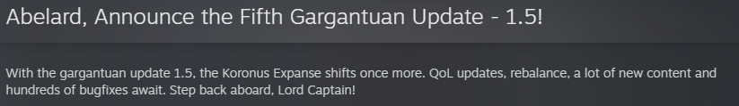
my grim darkness run…
To Do List
- Update Crash Course section for
- Yrliet in general.
- Solomorne.
- Unify all sections to follow stricter guidelines. Please note that any section marked with $ means it does not meet my current standards and will be cleaned up / redone ASAP.
- NOTE: The information in these sections isn’t incorrect and they are still functional, but I dislike them because I wasn’t as thorough as I wish to be for this guide and thus will strive to re-do them.
- Update section for killing/removing companions.
- Add bridge discussions for all companions/officers, for thoroughness
- Add “saving Achilleas option” since he’s based.
- Add conversation for Nocturne bridge convo pre-Act 5
- Add bookmarks to each true ending requirement and where it is in game.
- Everyone done but Yrliet.
- Flesh out Solomorne more, as I’ve only completed one two endings with him so far.
Greetings, Lord Captains! The below guide should outline various recruitments, and increments for characters in order to influence them towards specific endings / romances. Basically, a one stop shop for everything story and character wise.
This guide will contain HEAVY spoilers for story, game mechanics, and events (basically, everything.)
There also might be spelling mistakes and grammar mistakes, as I am a human who makes mistakes. I might have forgotten to get a screenshot to transcribe something. I have marked said locations however, and will go back for them.
My plan is to eventually compile an entire spreadsheet that has all increments / romance dialogue and triggers for everyone, but this guide will also cover everyone's romance in a much more wordy, hand-holdy sort of way.
This guide would also not be possible, or at least struggle to exist, without the help of the Toybox mod, as it allows one to look at etudes (also known as flags, triggers, etc. in other games) to see how your choices will influence and change characters. Please endorse and appreciate the Toybox team for everything they do.
None of this guide was written/summarized/edited with generative AI.
FAQ
- Why post on Google Docs instead of a wiki?
I prefer ad-free content I can download and access offline easily. This guide was originally just for personal use until a friend convinced me to post it publicly.
- Well, can I take this information and post it to a wiki?
Yes! Please post this anywhere you would like. Discords, wikis, Reddit, Neoseeker, etc is all fine with me. Sharing is caring.
- Do you want credit?
All I would like is for you to take my favorite Interrogator, Drukhari, and Arbitrator on as many missions you can, and be nice to them. ♡
- Can you do [character] romance now?
Every romance has their True Ending requirements explained.
- What is your path/build/team comp?
I have beaten the game on all alignment routes at least once. My preferred route and team is Iconoclast + all male (Heinrix/Abelard/Pasqal/Marazhai/Ulfar/Solomorne) team. Builds + team comps I suggest looking to Youtubers for.
- Can I translate this into another language?
Please do! And please message me on Reddit/any other social media if you post your translation anywhere, as I would love to link to your translation in the guide for people who might find the original English post, but prefer to read in another language!
- Are you planning on updating this for future DLC?
Yes! The next DLC launch is scheduled for April-June 2026, and the guide will hopefully be updated on launch day. Any future DLCs will also be covered by me.
- This [x] skill check requirement is different in my game, what gives?
All Skill checks in this guide are based off of the Normal (30%) difficulty. Checks throughout the guide are still being standardized. They can be higher or lower depending on what % you have set the “Skill test difficulty modifier” to.
- What does Passive versus Active skill checks mean?
“Passive” skill checks are ones that are rolled automatically and without player choice. “Active” skill checks are ones that you, the player, select to roll in game.
- What DLCs do you recommend?
Both Void Shadows and Lex Imperialis offer an almost even split of content, but Void Shadows personally felt like it had a bit more story, whereas Lex Imperialis has more unique mechanics. However, Solomorne is a male companion with a romance available to both male and female RTs, so I sway more towards that. Both are great, and it really depends on:
- Will you romance a female character? Pick Void Shadows.
- Do you enjoy Death Cults as a concept? Pick Void Shadows.
- Will you romance a male character? Pick Lex Imperialis.
- Do you enjoy the Lex Imperialis as a concept? Pick LI.
- Why doesn’t this guide include every ending (IE, Marazhai/Yrliet Harlequin ending)?
I want people to play the game, and discover things for themselves. If requested, I would be more than happy to add the requirements for other non-romance endings, but I believe part of the joy of playing the game is discovering things on your own.
- Anything else?
Thank you to Owlcat for making hot men, that’s all. Please never stop making them. Please give me more male companions and Nocturne content.
Introduction / Explanation
Owlcat games usually allow you to influence and change the endings of all your companions, and Rogue Trader is no exception to that standard. All characters have etudes and several different counters that will rise and fall depending on the choices you make throughout the story, which can result in companion deaths, personality changes, and various other things.
I originally started compiling this information after having a horrible time finding guides for WotR/Kingmaker romances (Daeran and Tristian, my beloveds) and character personality changes, and decided to take matters into my own hands for Rogue Trader. I also (will) have a guide available for Dark Heresy, the other Owlcat Warhammer 40k game, if you are looking for that.
Owlcat games are also glitchy as hell, so I have tried to mark in the guide which character quests / choices / appear to be glitched, and confirmed which routes are firing as of the latest patch.
If you want to provide information/corrections/questions/requests, you can contact me at one of the various methods located below:
DO NOT ASK TO BE AN *EDITOR* ON THE GOOGLE DOC, YOU WILL BE DECLINED. PLEASE CONTACT ME IN ANY OTHER WAY TO HAVE YOUR INFORMATION ADDED TO THE GUIDE WITH CREDIT/QUESTIONS ANSWERED.
This guide/the creator of this guide is not affiliated with Owlcat Games, Games Workshop, or any other companies. I am just a dumbass on the Internet. Please don’t sue me.
As always, glory to the Emperor and Imperium, Lord Captains!
Crash Course Endings Guide
PLEASE NOTE: Fully committing to a Heretical playthrough will result in Heinrix, Argenta, Yrliet, and Ulfar leaving just before the Act 4 Main Quest - The Siege. This will not allow you to complete any of their questlines in full, or their romances if available. It does not matter if you are on their true ending paths or not, they will leave.
Thank you to u/OccamsShardblade for the clarification regarding Cassia.
Your romance options for a Heretical playthrough are Jae / Marazhai / Cassia Kibellah (requires Void Shadows DLC) / Solomorne (requires Lex Imperialis DLC)
Your romance options for an Iconoclast / Dogmatic playthrough are Jae / Marazhai / Heinrix / Cassia / Yrliet / Kibellah (requires Void Shadows DLC) / Solomorne (requires Lex Imperialis DLC)
There is a section in the guide just compiling Bridge Discussions / Conversation Trees on the bridge located here. As of 12/11/24, it is still a WIP.
Please note all romances (and other events) require warping between planets (overworld travel, basically) and if you have multiple romances going and/or DLC active, sometimes my estimates of how long an event takes to occur might be off. Just keep warping until the event you need pops. There is nothing I can do about that, unfortunately. Sorry!
Argenta
- Do you want a Sister Repentia? Pick Humility options.
- Do you want an incredibly furious, unthinking warrior? Pick Fury options.
- Do you want a devout warrior that is unshakeable in her faith? Pick Fire options.
Abelard
- Do you want an old, set in his ways man that focuses on serving you and your dynasty? Pick Old Ways options.
- Do you want an old man, but one trying to change his ways so he focuses on his family? Pick New Ways options.
Cassia
Romance only available for male RT unless Toybox is used.
- Having 5+ on her AmourCourtois counter.
- NOT having etude LoveHereAndNow active.
- NOT having etude SpecialPathUnlocked active.
- NOT having etude CassRomanceDinasty active.
- NOT on the Hatred path with Cassia.
- Cassia MUST be brought along for the quest Main Quest - Hunting the Hunter / Main Quest - Following Breadcrumbs.
- ROMANCE SPECIFIC: Do you wish to lock Cassia into a purely political marriage that will benefit both your dynasties? Select this option for the CassRomanceDinasty etude to activate for a unique (but not her True Romance + does not pop the A Flame achievement) romance ending.
- ROMANCE SPECIFIC: Select this option for the LoveHereAndNow etude to activate for a unique (but not her True Romance + does not pop the A Flame achievement) romance ending.
- ROMANCE SPECIFIC: Do you want Cassia to abandon her previous life for one with you? Select this option for the SpecialPathUnlocked etude to activate for a unique (but not her True Romance + does not pop the A Flame achievement) romance ending.
NOTE: While SpecialPath is not her True Romance ending, it functions like all the other True Romance endings (Having to build her specific, special True Romance flag as high as it will go) and is, in my opinion, her more romantic ending. If you are strictly going for the achievement, stick to her True Romance ending.
- Do you want Cassia to grow into her role as a Navigator, and finally become her own person? Pick Freedom options.
- Do you want Cassia to slowly lose her sense of morality, and seek power for her house? Pick Not Me options.
- Do you want Cassia to grow to hate herself, and her house? Pick Hatred options.
Heinrix
- TRUE ROMANCE ENDING REQUIREMENTS (Confirmed working as of 1.4.0.2)
Romance only available for female RT unless Toybox is used.
- Having, at minimum, etudes CorraptionJanus active + CorraptionQuietEvening active.
- CorraptionCommoragh1 / CorraptionCommoragh2 are alternative but easier ways to gain Corruprion points, and are available after Act 2 is passed.
- Having at least 4+ on his CorruprionInterrogator increment.
- Heinrix CAN be brought along for the quest Main Quest - Hunting the Hunter / Main Quest - Following Breadcrumbs.
- As informed by u/WorldWithoutWheel, Heinrix does not need to be brought to Commorragh as of 1.3.2.8 if you activate both his Planet Event - Visions of the Past Corruprion flag + CorraptionJanus + CorraptionQuietEvening.
- ROMANCE SPECIFIC: Do you want to push an Interrogators buttons and watch him squirm under the pressure? Pick Devil options.
- ROMANCE SPECIFIC: Do you want a sweet, Prince Charming and a Princess love? Pick Closeness options.
- Do you want an Inquisitor that is a little more lenient with the laws, and will often look the other way if it doesn’t outright harm anyone? Pick Mercy options.
- NOTE: If Heinrix is fully romanced on his True Ending path, his Mercy/Harsh options do not matter and will be overridden by his True Romance Ending.
- Do you want a cold, strict Inquisitor that follows the rules to the letter, uncaring if it hurts or kills people? Pick Harsh options.
- NOTE: If Heinrix is fully romanced on his True Ending path, his Mercy/Harsh options do not matter and will be overridden by his True Romance Ending.
Pasqal
- Do you want Pasqal to be a loyal member of the Adeptus Mechanicus, and the Imperium? Pick Loyal options.
- Do you want Pasqal to accept all parts of himself, even those that are directly against the Imperium? Pick Amarnath options.
- Do you want Pasqal to seek knowledge above all else, heretical or not? Pick Ego options.
Marazhai
- TRUE ROMANCE ENDING REQUIREMENTS (Confirmed working as of 1.4.0.2)
Romance available for any gender.
- Finishing Rumor - Xenos Skirmish.
- Finishing Rumor - Suspicious Ships.
- Having a 6+ Ascention flag.
- Ascention 1
- Ascention 2
- Ascention 3 [Firing correctly in 1.4 on Base Game Only - thank you to valtiel for info!]
- Ascention 4 [Firing some-what correctly in 1.4 on Base Game Only with a specific dialogue choice - thank you to valtiel for info!]
- Ascention 5
- Ascention 6 [thank you to valtiel for info!]
- ROMANCE SPECIFIC: Do you want to become Marazhais pet? Pick Submission options.
- Marazhais romance requires sticking to one path (Domination/Submission) and continually earning Ascention points.
- ROMANCE SPECIFIC: Do you want to make Marazhai your pet? Pick Domination options.
- Marazhais romance requires sticking to one path (Domination/Submission) and continually earning Ascention points.
- Do you want to see Marazhais Kabal destroyed and reduced to ruins? Get as little Tempest flags as possible, hopefully -1 to 0. This results in the Kabal Destroyed ending.
- Do you want Marazhai to be left behind from his Kabal, unsure about where to go? Aim for 1 to 4 Tempest flags, and fail the checks/immediately start a fight at his final event. This results in the Kabal Gone ending.
- Do you want Marazhai to restore his Kabal to its rightful glory? Select as many Tempest flags as you can, aiming for 5 to 8. This results in the Kabal Restored ending. If you can’t, or just don’t want to get that many flags, you can alternatively try and pass some checks and get this ending, as long as you maintain minimum 2 Tempest flags.
Ulfar
- Do you want a proud Space Wolf that still loyally serves his pack and Primarch? Pick Chapter options.
- Do you want a broken man, devoted only to his own destructive end? Pick Wulfen options.
- Do you want a Space Wolf that is caught up in his grief, mourning those he lost forever? Pick Loner options.
Idira
- Do you value Idira as a person, and want her to live a good life despite being unsanctioned and hard to control? Pick Humanity options.
- Do you value Idira as a tool, and want her to serve you as an unstoppable force of psychic power? Pick Effectiveness options.
- Do you want Idira to fully embrace the voices, and open the door for her Heretical exclusive Door Open ending?
- Requires 300 Heretical points.
- Select this option in her Act 4 Personal Quest - The Door.
Jae
- TRUE ROMANCE ENDING REQUIREMENTS (Confirmed working as of 1.4.0.2)
Romance available for any gender.
- Having etudes JaeSincerity_1, JaeSincerity_2, JaeSincerity_3, JaeSincerity_4 active.
- Having at least 4+ on her Sincerity counter. Triggers each time a Sincerity_[x] etude is activated.
- Jae MUST be brought along for the quest Main Quest - Hunting the Hunter / Main Quest - Following Breadcrumbs.
- Do you want Jae to believe that you and her are equals, capable of mutually benefiting each other? Pick Independent options.
- Do you want Jae to serve your dynasty as a Shadow Baron, operating and manipulating from the shadows? Pick Shadow options.
Yrliet
- TRUE ROMANCE ENDING REQUIREMENTS (Confirmed working as of 1.3.2):
Romance available for any gender.
- Interrupting the ritual during Personal Quest - Outcast’s Duty.
- At least 6 on her Accordance flag.
- Path of Damnation - Yrliet takes on the guilt of her Craftworld being destroyed as her own fault?
- Do you want Yrliet to continue down the path of serving the Aeldari, despite what little hope she has? Pick Path of Warrior.
Kibellah
*REQUIRES VOID SHADOWS DLC.*
- TRUE ROMANCE ENDING REQUIREMENTS (Confirmed working as of 1.4.0.2)
Romance available for any gender.
- Synchronicity etude is ACTIVE.
- Synchronicity counter is 3.
- Etude NoSpiritualThread must be inactive.
- Kibellah MUST be brought along for the quest Main Quest - Hunting the Hunter / Main Quest - Following Breadcrumbs.
- ROMANCE SPECIFIC: Do you wish for Kibellah to realize she is a real person, and not just a blade? Select Synchronicity options.
- ROMANCE SPECIFIC: Do you wish for Kibellah to realize she has no purpose but to be a finely-honed blade, and a tool for you to use? Select Taint options.
- Do you want Kibellah to become more fanatic to the Bloodspun Web, devoting mind, body, and soul to their tenets? Select Fanatic options.
- Do you want Kibellah to become more compassionate, whilst still serving the Bloodspun Web? Select Humility options.
- Do you want Kibellah to warp the true meaning of the Bloodspun Web, and finally have the cult step out of the shadows? Select Distortion options.
- Note that this ending is explicitly called KibellahFinal_Chaos.
Solomorne
*REQUIRES LEX IMPERIALIS DLC*
- TRUE ROMANCE ENDING REQUIREMENTS (Confirmed working as of 1.4.0.2)
Romance available for any gender.
- Having at least 3+ on his SolomonrneImpressed counter.
- The second flag requires(?) having ArbitesRomance_WiseWord active, which requires selecting a specific response in his Commorragh event.
- The third flag requires(?) having SolReportSaved active, which requires selecting a specific response in his post-Commorragh event.
- Selecting "It is not too late. Be my consort, Solomorne." during his final event.
- Solomorne CAN(?) be brought along for the quest Main Quest - Hunting the Hunter / Main Quest - Following Breadcrumbs.
- While his post not-brought-to Commorragh event functions the exact same as his Commorragh event, you might lose out on the chance to affect his alignment(?)
Solomorne functions slightly differently in that both his Alignment + only his ending choice influence each other, unlike most companions who operate on “which flag is highest” system. During Commorragh/post Commorragh if he is not brought, you will have a choice to select regarding his alignment with the options:
- 1. [Requires - Dogmatic Votary] "The Emperor laid this burden upon us in the certainty that we were equal to it. Now you are doubting yourself, but not the Lex Imperialise Tell me — am I right? [Activates etude SolomorneCommorrahFaith] + [+5 Dogmatic]
- 2. [Requires - Iconoclast Votary] "You are a human in a city of Drukhari. It is enough to break anyone. But Glaito led me to you, and I am going to get us out of here. You gave up hope too soon." [Activates etude SolomorneCommorrahHope] + [+5 Iconoclast]
- 3. [Requires - Heretical Votary] "You know something? You're right. I would gladly shoot half the people I encounter. Weak, cowardly worms in human skin." [Activates etude SolomorneCommorrahChaos] + [+5 Heretical]
His alignment will then mesh with his ending slide, and change it slightly. His ending itself is decided during the DLC Quest - Death and Tithes.
- Do you want the Arbites to remain in the Expanse, alongside Solomorne maintaining his rank of Proctor? Select this option during Death and Tithes.
- This ending is specifically called VC_ArbitesJustice.
- WIP - Do you wish for the Arbites to remain, but to never interfere with your dynasty again? Select this option during Death and Tithes.
- This ending is specifically called VC_UntouchableDinasty.
- Do you want the Arbites to remain in the Expanse, and Solomorne now becomes the Marshal of the Arbites? Select this option during Death and Tithes.
- This ending is specifically called VC_SolomonJustice
- Solomorne must not betray you to get this ending.
- WIP - Do you want to purge the Arbites and select only the best of the best, by your standards alone? Select this option during Death and Tithes.
- This ending is specifically called VC_BrutalJustic.
- WIP - Do you want to destroy any trace of the Arbites in the expanse, and instead place yourself as the sole dispenser of justice? Select this option during Death and Tithes.
- This ending is specifically called VC_RTJustice
ETUDE GRAVEYARD - Still testing with these - sorry!
- SolomorneHatesYou
- SolomorneRespectsYou
???
*REQUIRES THE INFINITE MUSEION DLC - COMING APRIL-JUNE 2026.*
- TRUE ROMANCE ENDING REQUIREMENTS:
- Romance available for any gender? The companion will be ???.
- ROMANCE SPECIFIC: ???
- ROMANCE SPECIFIC: ???
- Ending #1 - ???
- Ending #2 - ???
- Ending #3 - ???
???
*REQUIRES PROCESSIONAL OF THE DAMNED DLC - COMING JULY-SEPTEMBER 2026.*
- TRUE ROMANCE ENDING REQUIREMENTS:
- Romance available for any gender? The companion will be ???.
- ROMANCE SPECIFIC: ???
- ROMANCE SPECIFIC: ???
- Ending #1 - ???
- Ending #2 - ???
- Ending #3 - ???
Act 1
Idira
- Recruitment?
Automatic. (Prologue)
Planet Event - Cruelty to the Innocent | Occurs during Main Quest - The Starport.
Requirements
- Idira in Active Party.
- Private Camille Regias is an innocent/not a traitor.
Summary
After finding the rest of Private Regias’ squad, Idira comes to his defense.
Specifics
Your first conversation with the Private will prompt a passive +70 Awareness check:
- 1. [Awareness: Succeeded] "What is it, soldier? Why are you so nervous?"
If you pass an active +30 Awareness check when travelling through The Upperway map (Location marked below) you will prompt a conversation with Private Camille Regias.
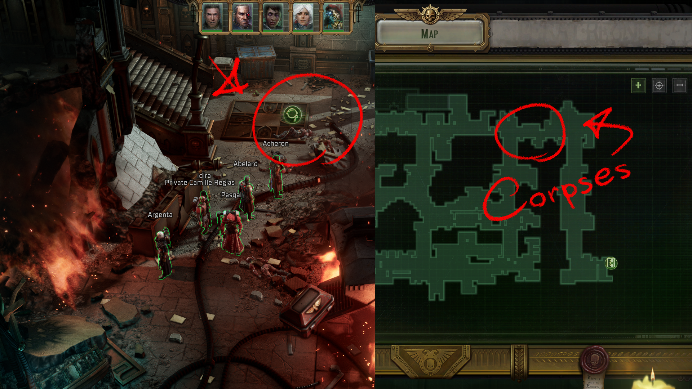
Select:
- ?. "The battlefield looks highly suspicious. Half of your comrades never even had the chance to draw their weapons. And the direction of the shots, as well — the attackers knew exactly what path the group would take and how large it would be."
And then:
- ?. [Aim your weapon at the private] "Too many parts of your story fail to add up. I am beginning to wonder if you are a traitor."
Idira will then speak up in defense of the private, and your choices are:
- 1. "Is that what your gift of prophecy is telling you?"
- 2. "Cowardice is shameful for a soldier of the Emperor."
- 3. "Watch your tongue, Tlass. Say another word and you will be next." [+1 Effectiveness]
Main Quest - The Starport | Occurs in the Lower Level subarea of the Upperways on Rykad Minoris after mandatory combat, no check required.
OR
Main Quest - Rykadi Philia | Occurs after solving the riot on Rykadi Philia, no check required.
*Please note that this event is one or the other, you should not have this event trigger twice in a single playthrough. If it does, it is a glitch.
Requirements
- Idira + Argenta in Active Party.
Summary
Idira and Argenta will argue about Theodora.
Specifics
Your first choices are:
- 1. "Argenta is right, the danger of heresy cannot be overstated."
- 2. “Idira is right. It is too soon to cast accusations of heresy.” [+1 Humanity]
- 3 "Sister Argenta, you will cease these insinuations about Theodora at once! I will not allow the name of the von Valancius family to be defamed by such words."
- 4. “Witch, you are walking a fine line between outright heresy and the barrel of a bolter. Shut your mouth before I shut it for you.” [+1 Effectiveness]
- 5. [Say nothing]
Any option leads to:
- 1. [Walk away from the device]
Main Quest - The Gleam of the Final Dawn | Occurs during first meeting with Heinrix in the Electrodynamic Cenobium.
Requirements
- Idira in Active Party
- Finding Heinrix in Electrodynamic Cenobium.
Summary
Heinrix questions if Idira is sanctioned and you have various increment changes available
Specifics
The options with increments are as follows:
- 1. "Idira's predictions are seldom wrong. I will be watching you." [+1 Humanity]
- 2. "Pay no attention. She talks all kinds of nonsense." [+1 Effectiveness]
- 3. "Idira is a member of my personal retinue and is under my protection."[+1 Humanity]
Main Quest - The Gleam of the Final Dawn | Occurs after finishing the Electrodynamic Cenobium map and returning to the governor.
Requirements
Summary
After starting a conversation with the governor, Idira will receive another vision, prompting a response.
Specifics
Your first set of choices are:
- 1. "Idira, are you wounded?" [+1 Humanity]
- 2. "Another prophecy?" [+1 Humanity]
- 3. "Pay no attention, Governor. She's a little off her rocker." [+1 Effectiveness]
- 4. "Witch, you will abstain from your sorcery in front of the governor!" [+1 Effectiveness]
OR if DLC - Lex Imperialis is installed:
- 1. "Idira, are you wounded?" [+1 Humanity]
- 2. "Another prophecy?" [+1 Humanity]
- 3. "Please pay her no mind, Proctor. She has... episodes sometimes." [+1 Effectiveness]
- 4. "How dare you work your sorcery in front of the Proctor, witch!" [+1 Effectiveness]
Argenta
- Recruitment?
Automatic. (Prologue)
Bridge Discussions - Orphans Errand | Occurs after speaking to Argenta after she requests a conversation on the bridge after finishing the Prologue.
Requirements
Summary
Argenta will ask you for a favor after your first briefing on the bridge. Talk to her to begin.
Specifics
Speak to Argenta and select:
- 1. "You said you have a personal request for me?"
And then:
- 1. "What good would meeting them do?" [No new choices]
- 2. "Make arrangements for a meeting worthy of a Rogue Trader. I will address the orphans with a speech." [Activates etude Argenta_OrphansEvent_Meeting_Official]
- 3. "l will meet with them, no formalities needed. These are the children of people who gave their lives for the von Valancius dynasty, my consideration is the least that they deserve." [Activates etude Argenta_OrphansEvent_Meeting_NoNOfficial]
- 4. "Deliver this order on my behalf — the orphans are to be properly provided for. But a personal meeting with the Rogue Trader is too much." [Activates etude Argenta_OrphansEvent_NoMeeting]
- 5. "Why would l? Do you wish to fill these children's heads with the illusion that the world and its rulers care about them? I will have no part in this." [Activates etude Argenta_OrphansEvent_NoMeeting]
If you decide to do the meeting, you will then teleport to the meeting, official or not, and your first options will be:
- 1. "Infernus Master, do you serve as a teacher in your spare time?" [Only appears if DLC - Void Shadows is installed] + [No new choices]
- 2. [Grandly address the group] "l, the Rogue Trader and Lord Captain of this ship, speak to you now! Your parents gave their lives for a just cause and brought honour to the von Valancius banners and those of the Imperium. I am proud of them, and I believe that you will become their worthy heirs!"
- 3. [Smile at the group] "Your Lord Captain greets you, brave ones!"
- 4. [Address the chaperones] "Give them treats and escort them to their homes. I believe a minute of beholding the Lord Captain is a great enough honour for them." [Activates etude Argenta_OrphansEvent_TalkSkiped] + [Ends the event?]
If you talk to the gaggle of youths, your next options will be:
- 1. [Address the chaperones] "Their comportment leaves much to be desired. I hope that they will be moulded into worthy servants of House von Valancius. This audience is over." [Ends the event]
- 2. [Address the chaperones] "Punish the troublemaker, put the rest back in their bays. This audience is over." [Activates etude Argenta_OrphansChoice_ChildPunished] + [Ends the event]
- 3. "Infernus Master, since you are so concerned about the orphans, they are henceforth your clan. It falls to you to teach them the meaning of what their parents fought and died for." [Only appears if DLC - Void Shadows is installed] + [You asked if Einrich was a teacher] + [Activates etude InfernusOrphans] + [Ends the event]
- 4. [Address the group] "If you have things to say — say them without fear. I will listen."
- 5. [Ignore the interruption) "Rest assured, you won’t be abandoned. You will be taken care of." [Ends the event]
If you select “[Address the group] "If you have things to say — say them without fear. I will listen."” you will unlock new options:
- 1. “I understand your grief and dismay. Your parents died. It's not an easy thing to go through. But they gave their lives for the truth, for the good of the whole ship, for the Imperium. Do not speak of their honourable fate with anger and disdain." [+1 Humility]
- 2. "When the heretics who killed your parents attacked the ship, I was there. I took command, I fought, and I repelled the assault as quickly as could. But no war can be won without losses. You can only strive to do what is within your power." [+1 Fire]
- 3. "The strong have the power to decide the fate of others; the weak either obey or die. If you seek a different lot in life, boy- save your grumbling and look for an opportunity to rise above the rest." [+1 Fury]
- 4. [Address the chaperones] "Their comportment leaves much to be desired. I hope that they will be moulded into worthy servants of House von Valancius. This audience is over." [Ends the event]
- 5. [Address the chaperones] "Punish the troublemaker, put the rest back in their bays. This audience is over." [Activates etude Argenta_OrphansChoice_ChildPunished] + [Ends the event]
- 6. "Infernus Master, since you are so concerned about the orphans, they are henceforth your clan. It falls to you to teach them the meaning of what their parents fought and died for." [Only appears if DLC - Void Shadows is installed] + [You asked if Einrich was a teacher] + [Activates etude InfernusOrphans] + [Ends the event]
Comment
An official meeting results in preparing gifts for the orphans (little sweets!), whereas an inofficial meeting does not prepare gifts for the orphans. Thank you to u/Hobos_86 for the answer!
Abelard
- Recruitment?
Automatic. (Prologue)
Personal Quest - Dark Echelons | Occurs after finishing one planet (Eurac V / Rykad Minoris / Rykadi Philia) in full and moving to another planet.
Requirements
- Exploring one planet.
- Conditionally - Going down to solve the strike personally.
Summary
Vigdis informs you of an event on the bridge with Abelard and an officer regarding an issue with Depot 4.
Specifics
Your first set of choices are:
- 1. "I will listen to what you have to say. Speak, Lieutenant."
- 2. "You may speak, but I want to hear a report, not a shouting match. Having two officers bickering in full view of the bridge is unacceptable."
- 3. "I will not tolerate this kind of conduct on my ship. Abelard, assign the lieutenant an appropriate punishment. Lieutenant, you have one minute to state your business!"
Any option will lead to the next set of choices:
- 1. "There's an insurrection in the making aboard my ship, and no one has informed me?" [No new choices]
- 2. "How did all this start?" [No new choices]
- 3. "Where does Seneschal Werserian come into all this?" [Unlocks new choices]
After selecting "Where does Seneschal Werserian come into all this?" you will receive more options to respond with:
- 3. "Abelard, what do you have to say to all this?"
- 4. "What is Depot 4?"
- 5. "Master-at-Arms, the ship's enforcers report to you, and yet, you seem hesitant to provide your own perspective." [Only appears if you have DLC - Void Shadows active]
If you select "Abelard, what do you have to say to all this?" you will unlock more options to respond:
- 3. "I've heard enough. I will go down to the lower decks and deal with the problem personally."
- 4. "I am certain the Seneschal was acting within his authority, but I will verify the soundness of his decisions for myself."
- 5. "This matter is not worth the Rogue Trader's time. Abelard, you have acted with staggering incompetence. From now on, you will sort out your own problems. Get out, and take that upstart with you." [Fails the quest] + [Cuts off Abelards whole personal questline] + [Activates etude SeneschalOldWays]
If you select "Master-at-Arms, the ship's enforcers report to you, and yet, you seem hesitant to provide your own perspective." you will unlock another set of options:
- 1. "Sauerback, explain yourself." [No new choices]
- 2. "Abelard, do you wish to respond?" [No new choices]
- 3. "Lieutenant Vent, would you say the Seneschal has singled you out from your peers in any way?" [No new choices]
- 4. "I see." [Returns to this section]
- 5. "It appears I have unearthed an old squabble. I would prefer to be left out of it." [Returns to this section]
If you decide to go deal with Depot 4, your next choices will be:
- 1. "Did you hear? They were shouting your name." [No new choices]
- 2. "The people dared to disrespect a senior officer." [No new choices]
- 3. "Let's keep moving. We need to get to the bottom of this." [Continues the quest]
Keep right and speak to Lieutenant Vent (And optionally Jocasta Sauerback if you have DLC - Void Shadows installed) and your first choices will be:
- 1. "What's the situation?" [No new choices]
- 2. "We encountered some locals on our way here. Their conduct was outrageous - they even tried to throw things at us."
- 3. "I want to speak to the strikers." [Continues the quest]
- 4. "I give the assault unit permission to open fire. We will crush the seeds of insurrection with full force." [Kills Vent]
If you select "We encountered some locals on our way here. Their conduct was outrageous - they even tried to throw things at us." you will unlock a new option:
- 3. "Is that all you have to say? Are you sure you're worthy of an officer's rank, Lieutenant Vent?"
If you decide to speak to the Strikers, your first option will be:
- 1. "Tell me what is troubling you. Why are you striking?"
- 2. "We were attacked on the way here. How do you explain that?" [No new choices]
If you select "Tell me what is troubling you. Why are you striking?" you will unlock more choices:
- 2. "The persecution started apropos of nothing, you say? I was told that one of you was found in possession of a cultist amulet, and that there are heretics hiding here." [No new choices]
- 3. "Abelard, do you have anything to add?"
- 5. "What changes do you want?" [Moves to this section]
If you select "Abelard, do you have anything to add?" AND have DLC - Void Shadows installed, you will unlock a new option:
- 4. "Sauerback, was it really necessary to torture these people with cold?"
Eventually, the strikers will tell you their demands, and your next options are:
- 1. "Thoughts, Abelard?" [No new choices]
- 2. "Master-at-Arms, where do you stand?" [Only appears if DLC - Void Shadows is installed] + [No new choices]
- 3. [Coercion +70] "Spreading anarchy on the ship is the first step toward embracing Chaos. Putting weapons into untrained hands would be even worse. What's more, the enforcers are needed to maintain oversight and order. Withdraw those demands and we will consider the rest." [Repeats]
- 4. "Fine. I'll give the order for the enforcers to be withdrawn from this sector. And you will be given weapons. Let's see how you cope governing yourselves and what difference it makes."
- 5. "You have failed to convince me of your trustworthiness. This unrest ends now. Everyone who was involved will be eliminated." [Kills Vent]
If you pass the Coercion check, your next choices will be:
- 3. "Then it's decided. The persecution will stop. And I will expect you to assist in locating any remaining amulets or weapons left by the cultists."
- 4. "You have failed to convince me of your trustworthiness. This unrest ends now. Everyone who was involved will be eliminated." [Kills Vent]
Make your decision, and move towards the elevator until Abelard pulls you aside for a private conversation:
- 1. "Do not speak to your Lord Captain in that tone." [No new choices]
- 2. "Why are you so angry? I solved the problem."
- 3. "There is some truth to your criticism."
- 4. "Let's talk about your role in all this instead. You allowed this revolt to happen, your actions practically guaranteed it would."
Options 2-4 will lead to the next set of choices:
- 1. "Maybe if Theodora had spent more time on 'trifling' matters, she wouldn't have wound up dead. There is a new Lord Captain aboard this ship now, and I will not repeat her mistake."
- 2. "I would be only too willing to trust in my Seneschal and not fill my head with such matters, but the situation had spiralled out of your control, Abelard."
- 3. "Give me a reason why I should continue listening to your advice and trusting your judgement. Right now I don't see any."
Any option above will lead to the below choices. Please note that option 5 will end Abelards questline in full, and you will not receive his Act 4 Personal Quest - Blood Ties.
- 1. "Theodora trusted in established procedures - and she died. I won't make the same mistake. If you want to keep building the future of the von Valancius protectorate with me- stop living in the past." [Activates etude SeneschalNewWays]
- 2. "I understand, but you need to learn how to respect me as your Lord Captain and Rogue Trader. Accept it and start living in the new world- a world where Theodora is gone and where you and I have new decisions to make." [Activates etude SeneschalNewWays]
- 3. "The prosperity of the von Valancius protectorate is just as important to me. You are the only person who has comprehensive knowledge of how things are run on this ship. I think in the future I will follow your recommendations." [Activates etude SeneschalOldWays]
- 4. "I value what Theodora created and I trust that this situation is an aberration in the ship's otherwise smooth operation. Since the established procedures are working, I see no reason to change them." [Activates etude SeneschalOldWays]
- 5. "I have seen plenty of sentiment and handwringing in recent days, but very little competence. I have no plans to rely on your judgement or your 'tried and tested procedures' in the future." [Activates etude SeneschalQuestLineBroken]
Heinrix
- Recruitment?
Found on Rykard Minoris in the Electrodynamic Cenobium map during Main Quest - Gleam of the Final Dawn / Pasqals Personal Quest - Request and Response. You will have to speak to the Governor at least once to unlock the location. Make a sharp left upon actually entering the Cenobium and open the first door you see to trigger Heinrixs introduction cutscene.
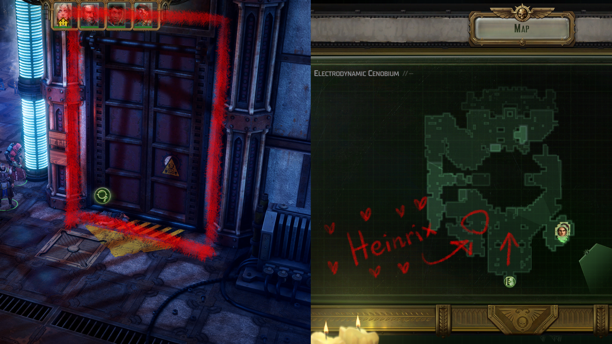
Recruitment - Scotch Game Opening | Occurs immediately after Heinrix’s introduction cutscene.
Requirements
- Speaking to the governor once.
- Travelling to the Electrodynamic Cenobium.
Summary
You will be introduced to Heinrix van Calox, an esteemed member of the Holy Inquisition and the Ordos Xenos.
Specifics
Your first choices will be:
- 1. "Seneschal, isn't this the chap we're supposed to find for the Lord Inquisitor?" [Only appears if Abelard is in the party]
- 2. "Interrogator van Calox, I presume?" [Leads to Idira event]
- 3. "The Emperor protects!" [Leads to Idira event]
- 4. "Kneel and repent of your heresy before a Rogue Trader, filthy sorcerer, and I might spare your life."
Please note if Idira is in party and you do not select “"Kneel and repent of your heresy [...]” there is an aside with her and Heinrix, which is transcribed here.
Selecting “"Interrogator van Calox, I presume?"” / “"The Emperor protects!"” and finishing the aside with Idira will lead to this set of choices:
- 1. "Rogue Trader [PLAYER NAME] von Valancius."
- 2. "My name is [PLAYER NAME]."
Either choice will then lead to:
- 1. "l see you take no end of pleasure in your job. l’ve barely introduced myself and I'm already being grilled."
- 2. "Theodora is dead. Slain in battle by enemies of Humanity."
- 3. "Can this conversation wait for a better time? I'm here on the Lord Inquisitor's orders, to see to his acolyte's safe and timely arrival on Footfall."
Selecting any of the above options / “"Seneschal, isn't this the chap we're supposed to find for the Lord Inquisitor?"” / “"Kneel and repent of your heresy before a Rogue Trader, filthy sorcerer, and I might spare your life." ” will lead to this set of choices:
- 1. "l am here to collect you. I am under orders from the Lord Inquisitor to offer any assistance you may require, after which I am to provide you safe passage to Footfall aboard my ship."
- 2. [Point to the corpse] "What did you do to him?" [No new choices]
Selecting “"I am here to collect you. [...]"” will then unlock three new options:
- 1. "Precisely what were you doing at the monastery?" [Only appears if you selected “I am here to collect you. [...]”] + [No new choices]
- 3. "This wretched planet's troubles are none of my concern. I'm taking you to the ship. Now." [No new choices]
- 4. "l can help you with Aurora. Let's join forces." [Recruits Heinrix - yay!]
Study Event - A Gesture of Goodwill | Occurred after finishing the Electrodynamic Cenobium in full, immediately after returning to voidship.
Requirements
- Recruiting and finishing Electrodynamic Cenobium.
Summary
After finishing the mission in the Electrodynamic Cenobium and returning to the void ship bridge, Heinrix will speak to you in your chambers. He speaks about his mission briefly, and presents you with a gift.
Specifics
If you picked up the Blade Shard in the Cenobium, which is important to the Heretical questline, you will receive an option almost immediately to hand it over to Heinrix.
- 1. [Give Heinrix the blade fragment] "I have not been completely honest with you." [Removes Blade Shard from inventory] + [Fails Heretical questline]
- 2. "I have something to confess. I discovered some kind of Chaos artefact in the Cenobium's cogitator, and I deemed it necessary to dispose of it." [Only appears if etude BrokenSword_Lost is active] + [Only appears if you threw the blade shard into the fusion reactor]
- 2. [Lie] "That is a shame."
If you select [Give Heinrix the blade fragment] "I have not been completely honest with you." you’ll receive another set of choices:
- 1. "Such things do not belong in the hands of a lowly servant of the Imperium."
- 2. "Honestly, this artefact frightens me."
- 3. "Candour is a pleasure that I would like to indulge in more often where you are concerned." [+1 Closeness]
- 4. “For that gleam in your eyes. How could I not, when broken old rubbish is the only thing that delights you so?" [+1 Devil]
Whether you choose to lie, give Heinrix the blade shard, or simply allowed Heinrix to find the blade shard, your next choices are:
- 1. "Thank you. The Inquisition's generosity is greatly appreciated."
- 2. "Be honest, van Calox - is this some kind of tracking device?"
- 3. “A strange choice for your first love token.” [+1 Devil]
Any of the choices move you along to your next set of choices:
- 1. [Give Heinrix Kunrad's blade] "The traitor Kunrad Voigtvir had this item on his person." [Removes Blade Shard from inventory] + [Fails Heretical questline?]
- 2. "Conversing with you is no less disconcerting for me, Master van Calox." [Only appears if PC is female]
- 3. "What do you plan to do now?"
- 4. "What do you think will become of the Electrodynamic Cenobium?"
- 5. “I must return to my duties.”
Selecting “Conversing with you is no less disconcerting for me, Master van Calox.” will lead to the next set of options:
- 1. “You misunderstand me. I am not unnerved by your status, but by you personally.” [+1 Closeness]
- 2. “A little more, and my pious trepidation will turn into something less seemly.” [+1 Devil]
- 3. “One cannot blame the Imperium’s citizens for fearing the Inquisition.”
If you select “You misunderstand me. I am not unnerved by your status, but by you personally.” / “A little more, and my pious trepidation will turn into something less seemly.” your next set of choices will be:
- 1. "Admit it - you did not come here to shower me with thanks and give me the Elucidator."
- 2. "Why don't you sit down? I would be pleased to devote more time to your visit."
- 3. "I wish to return to other more pressing matters. Although I wouldn't mind continuing this conversation another time."
Main Quest - The Starport | Occurs in the Lower Level subarea of the Upperways on Rykad Minoris after mandatory combat, no check required.
OR
Main Quest - Rykadi Philia | Occurs after solving the riot on Rykadi Philia, no check required.
*Please note that this event is one or the other, you should not have this event trigger twice in a single playthrough. If it does, it is a glitch.
Requirements
- Idira + Argenta in Active Party.
- Heinrix in Active Party.
Summary
Idira and Argenta will argue about Theodora, and Heinrix butts in.
Specifics
Your first choices are:
- 1. "Argenta is right, the danger of heresy cannot be overstated."
- 2. “Idira is right. It is too soon to cast accusations of heresy.” [+1 Humanity]
- 3 "Sister Argenta, you will cease these insinuations about Theodora at once! I will not allow the name of the von Valancius family to be defamed by such words."
- 4. “Witch, you are walking a fine line between outright heresy and the barrel of a bolter. Shut your mouth before I shut it for you.” [+1 Effectiveness]
- 5. [Say nothing]
If you select “"Argenta is right — the danger of heresy cannot be overstated."” / ??? / ??? Heinrix will cut in, leading to:
- 1."l have nothing to hide, Heinrix. When we found Theodora's body, there were shards of the same type of glass lying nearby."
- 2. "l am sure the members of my retinue will satisfy the Inquisition's curiosity."
- 3. "Do not dare to interrogate my people on matters that are of no concern to you!"
Pasqal
- Recruitment?
Found on Rykard Minoris in the Starport map during Main Quest - The Starport. You will automatically be pulled into a cutscene regarding him moving through the level, and Pasqal will join your party regardless of your choices. The cutscene triggers in the circled area below.
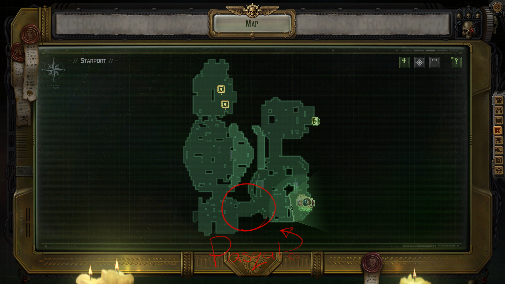
Recruitment - Activation Cycle | Occurs immediately after Pasqals introduction cutscene.
Requirements
Summary
You will meet Pasqal Haneumann, an esteemed Tech-Priest, and he will join your retinue regardless of what you want.
Specifics
Your first choices will be:
- 1. "l am Rogue Trader [PLAYER NAME] von Valancius. I mean you no ill."
- 2. "Abelard, this is no time to lose your composure. Present me." [Only appears if Abelard is in the active party]
- 3 "Stop immediately, or I shall have you thrown into the remains of that machine to finish burning."
- 4. [Maintain a contemptuous silence]
Any choice will then lead you to:
- 1. "Who are you?" [No new choices]
- 2. [Point at the exploded machine] "How did you manage to kill off a slew of people and blow up a sacred machine without even laying a finger on it?"
- 3. "Why do you wish to see the governor?"
Selecting “[Point at the exploded machine] "How did you manage to kill off a slew of people and blow up a sacred machine without even laying a finger on it?"” will unlock a new option:
- 2. "You do not even know how you caused such an explosion?" [No new choices]
Selecting “"Why do you wish to see the governor?"” moves to the next set of options:
- 2. "You must be quite devoted to your mentor to be willing to wade into this mess for him." [No new choices]
- 3. "l invite you to join my retinue." [Recruits Pasqal]
- 4. "You appear to be injured. You should go back — you will be given medical attention." [Recruits Pasqal]
Bridge Discussions - Deviation from the Cycle | Conversation is available after finishing Electrodynamic Cenobium. This conversation can be triggered in both Act 1 or Act 2, but I have decided to place it in Act 1s section, as this is the earliest it can occur.
Requirements
Summary
You begin a conversation with both Pasqal and Abel after saving Abel and finishing Pasqals first Personal Quest - Request and Response.
Specifics
Begin a conversation with Abel and exhaust all options until you receive the option:
- [Turn to Pasqal] “Have you heard what Abel said? It looks like we have contributed to Amarnat’s design and deviated from the Cycle. What does that mean for you?”
Pasqal will offer his opinion, making various increment changes available.
- "Is that not the promise of every heresy? 'Let's renounce our path, distort our doctrine, and head out toward what looks like a better future but actually only has danger and grief in store for us'?" [+1 Loyal]
- 2. "As flawed as the status quo is, it has helped us survive for the past ten millennia. Therefore, it is efficient." [+1 Loyal]
- 3. "Better to die fighting against change than to rot alive." [+1 Amarnath]
- 4. "Disaster' is just another word for a new opportunity. Not missing it is what it's all about." [+1 Ego]
Cassia
- Recruitment?
Found on Eurac V during Main Quest - Secrets of Navis Nobilite. Cassia is a required companion, and thus features thorough instructions for her recruitment in game.
Main Quest - Secrets of Navis Nobilite | Automatically given at the start of Act 1.
Requirements
- N/A as recruiting Cassia is mandatory.
Summary
The Lord Commander frees Cassia, and has a discussion with her before taking her back to the ship. This can also occur in her actual Navigator room, if Felek was killed and you don’t start a fight with Theobald.
Specifics
Your first set of choices are:
- 1. "If you wish to leave the station alive, you must first sign a contract. You will undertake to serve as my Navigator until I release you from that obligation." [+1 Hatred] + [Activate Etude CassiaObliged]
- 2. "Lady Cassia, I [PLAYER NAME] von Valancius, Rogue Trader of the Imperium of Man, offer you my protection and grant you shelter aboard my vessel." [+1 NotMe] + [Activates etude CassiaPatroned]
- 3. "Lady Cassia, let us aid one another. Become my Navigator, and I shall restore you to House Orsellio at the earliest opportunity." [+1 Freedom] + [Activates etude CassiaEqual]
Depending on your choice, your first conversation with Cassia on the bridge will also allow for an increment change:
- 1. "By what right do you issue commands on my vessel? Do not forget that you are alive solely thanks to my magnanimity." [Appears if etude CassiaHatred + CassiaObliged are active] + [+1 Hatred]
Bridge Event - Fireside Reading | Triggered after rescuing Cassia, returning to the ship, and attempting to move to another planet.
Summary
After returning from Eurac V and attempting to move through the galaxy, the Rogue Trader will be summoned for a conversation with Cassiain the ward room.
Specifics
Your first choices are:
- 1. "It pleases me to see you adjusting to life aboard the ship."
- 2. "Alas, a title alone is not enough to hold everyone's attention all of the time."
- 3. [Point at the book in Cassia's hands] "I see you are fond of reading."
- 4. "What do you think you are doing here? I did not give you permission to leave the bridge." [Ends the event]
If you select "It pleases me to see you adjusting to life aboard the ship." OR "Alas, a title alone is not enough to hold everyone's attention all of the time." you will unlock a new set of options:
- 1. "The events that took place on Eurac V must have shaken you greatly. Are you well?"
- 2. "Your only attendant is your valet from Eurac V. Do my servants not measure up to your standards?" [Only appears if etude ValetSaved is active]
- 2. "Are you satisfied with your new attendants?" [Only appears if etude ValetSaved is inactive]
- 3. "I hope that you have had ample time to calm yourself and your powers."
- 4. [Point at the book in Cassia's hands] "I see you are fond of reading." [Proceeds to this section]
If you select “[Point at the book in Cassia's hands] "I see you are fond of reading." from the first set of choices here, you will unlock a new set of options:
- 1. "The events that took place on Eurac V must have shaken you greatly. Are you well?"
- 2. "Your only attendant is your valet from Eurac V. Do my servants not measure up to your standards?" [Only appears if etude ValetSaved is active]
- 2. "Are you satisfied with your new attendants?" [Only appears if etude ValetSaved is inactive]
- 3. "I hope that you have had ample time to calm yourself and your powers."
After exhausting all the options above, Lady Cassia will question your questions and you have new options to respond:
- 1. "I am beginning to think, Lady Cassia, that the feelings I have for you are far more complicated than common sympathy." [Only appears if RT is male] OR [Using Toybox “Love is Free” cheat if female]
- 2. "You have nothing to apologise for. Human emotions are natural, be they good or bad. And it is just as natural to share them with others."
- 3. "Quite right. So I would ask that you mind what you say from now on." [Ends the event]
- 4. "It is indeed difficult for me to feel empathy for a mutant. However, the crew's well-being hinges on that of its Navigator."
- 5. "I believe this conversation has reached its natural conclusion." [Ends the event]
If you select "I am beginning to think, Lady Cassia, that the feelings I have for you are far more complicated than common sympathy." OR
"You have nothing to apologise for. Human emotions are natural, be they good or bad. And it is just as natural to share them with others." OR
"It is indeed difficult for me to feel empathy for a mutant. However, the crew's well-being hinges on that of its Navigator." your next choices will be:
- "I would not dare to make fun of a lady's feelings, especially not one who has captivated me since I first set eyes on her." [Activates etude CassiaRomanceActive]
- 2. "I would rather we find amusement elsewhere... perhaps in the privacy of my chambers?" [Activates etude CassiaRomanceActive] + [+1 CassRomanceInsulted]
- 3. "What I find childish is your manner of addressing me as if I were your friend and your mistaken belief that anyone here would be interested in hearing about your emotional turmoil." [Ends the event]
- 4. "I understand what you are going through. My own life was turned upside down not too long ago."
- 5. "I am not in the habit of finding amusement at the expense of my people. Just remember to keep your emotions in check." [Ends the event]
- 6. "I am afraid I must return to my duties." [Ends the event]
If you select "I understand what you are going through. My own life was turned upside down not too long ago." you will receive a new set of options:
- 1. "If I may be so bold as to presume, my subjects must have found themselves overcome by your rare beauty. As I have." [Activates etude CassiaRomanceActive] + [Ends the event]
- 2. "Is it so bad that we are enjoying each other's company? Or would you prefer to proceed straight to my chambers?" [Activates etude CassiaRomanceActive.] + [+1 CassRomanceInsulted] + [Ends the event]
- 3. "I do not tolerate idlers on this ship, and my officers know it well." [Ends the event]
- 4. "Perhaps my people did not wish to disturb you." [Ends the event]
- 5. "I am afraid I must return to my duties." [Ends the event]
Bridge Discussion - Pleasant Conversation | Can occur as early as Act 1, but only after Bridge Event - Fireside Reading is completed and you did not start Cassias romance.
Requirements
- Not starting Cassias romance.
Summary
Alternate way to start Cassias romance if you missed/were unsure/undecided on it.
Specifics
Go up to Cassia, and select:
- ?. "Tell me about yourself."
And then:
- 1. [Listen in silence]
- 2. "Is answering a simple question that difficult? I asked you to tell me about yourself, not your family." [Only appears if etude CassiaHatred is active]
- 2. "Navigators identify so strongly with their House. It must be difficult for you not to be able to lean on your elders. But you have my word that I will look after you." [Only appears if etude Cassia_ImNotMe is active]
- 2. "Sorry, Cassia, but I would like to know more about you personally, not your family." [Only appears if etude Cassia_Freedom is active]
If you select “[Listen in silence]” you will unlock a new option:
- 2. "Allow me to ask you a few personal questions."
Select that or whatever etude exclusive line you have (Freedom should be active if you are going for her romance) and then select:
- ?. "Your third eye — do you always conceal it?"
And then:
- ?. "You are beautiful, Cassia. Do not let anyone or anything convince you otherwise."
And then:
- 1. "l would not dare to make fun of a lady's feelings, especially not one who has captivated me since I first set eyes on her." [Actives etude CassiaRomanceActive]
- 2. "l cannot help it — the sight of you brings only improper thoughts flooding into my mind." [Actives etude CassiaRomanceActive] + [+1 Insulted]
- 3. "Do not take my words to heart - they were born of common courtesy."
Starting DLC - Void Shadows
Basic Stuff: Make sure you activate it in the main menu under the DLC & Mods tab.
Other Stuff: You will gain several new members of your void ship to bother with incessant questions. A section for those questions/any quests associated with them is outlined here.
Kibellah
Recruitment
Errand - A Whisper from the Depths | Occurs after interacting with the Astropathic Station VX-02-537 for the Side Quest - The Scream and before the end of Act 1.
After attempting to interact with Astropathic Station VX-02-537/attempting to leave the system, Vox Master Vigdis will inform you that a sacred cult aboard the ship is requesting your presence. Your options are:
- 1. "What sacred cult?" [No new options.]
- 2. "I am ready to receive them."
- 2. "They have certainly taken their time. Very well, I will speak with them." [Only appears if you activate the DLC post Act 1 in a pre-existing playthrough]
- 3. "I have more pressing matters that require my attention." [Activates etude Timer_KibellahIntroductionReminder]
You can put this off until you enter Act 2, but about 4-5 warp jumps, Vigdis will remind you about them, and let you know that you must meet with them now, or they will disappear back into the ship. Your choices for that conversation are:
- 1. "I am ready to receive them." [Proceeds to this section]
- 2. "They will have to wait a little longer."
- 3. "I do not have time to listen to the concerns of cultists. Tell them to crawl back into whatever hole they came from and never bother me again!"
If you select "They will have to wait a little longer." OR "I do not have time to listen to the concerns of cultists. Tell them to crawl back into whatever hole they came from and never bother me again!" you will unlock more options:
- 1. "You make a good point. Very well, inform the cultists that I will receive them.” [Proceeds to this section]
- 2. "Are you questioning your captain's decisions, Vox Master?" [Fails the Kibellah recruitment] + [Might fail the whole DLC lol?]
If you decide to meet them right away, you will be teleported to the Officers Deck and finally introduced to Kibellah! She will speak a bit, and then your next options to respond are:
- 1. [Examine the cultists] [No new choices]
- 2. [Examine the captives] [No new choices]
- 3. "Interesting. So, a death cult watches over my crew - they who honour the Emperor through killing, who devote their every deed to serving Him. Sacred executioners." [Only appears if you pass a passive +75 Lore (Imperium) check]
- 3. Who are you? [Only appears if you fail a passive +75 Lore (Imperium) check]
Exhaust the dialogue or select 3 to proceed immediately, and your next options are:
- 1. "What exactly does a cult like the Bloodspun Web do?"
- 2. "Tell me about yourself, Kibellah. Are you the leader of the Bloodspun Web, or its herald? Or its servant?" [No new choices]
- 3. [Nod toward the captives] "Why have you brought this rabble to the upper decks?"
If you select "What exactly does a cult like the Bloodspun Web do?" you will be presented with a new set of options:
- 1. "You kill innocent people?" [No new choices]
- 2. "You mentioned 'the Tenets of the Web.' What are they?" [No new choices]
- 3. "You have my blessing. May your blades bring swift death to the Emperor's enemies!" [+1 Fanatic]
- 4. [Heretical] [Give a bloodthirsty smile] "Continue to serve me, dancers of death. But henceforth, let my name be upon your lips when you shed blood!" [+3 Corruption] + [+1 Distortion]
- 5. "I find it outrageous that such important members of my crew are dressed in rags! They are to be given food, wine, and new garments immediately!" [+1 Distortion] + [Only appears if character has the Noble origin]
- 5. "Instead of helping those who may soon stumble, you offer them... death?"
- 6. [Nod curtly] “I find that acceptable.”
If you select “Instead of helping those who may soon stumble, you offer them… death?” you will unlock new options:
- 3. "I disapprove of your practices... but I am not going to ban them. For now." [+1 Humility]
- 4. "Let it henceforth be known that the Bloodspun Web is forbidden from killing without my permission."
And then if you select "Let it henceforth be known that the Bloodspun Web is forbidden from killing without my permission." you will gain more options to respond with:
- 1. "I have spoken." [+1 Humility] + [Completes etude DeathCultActive] + [Activates etude DeathcultKillingRestriction]
- 2. "You are right. I will wield you as a sword against my enemies."
You then return to this selection.
If you select “[Nod toward the captives] "Why have you brought this rabble to the upper decks?" you will be presented with a new set of options:
- 1. "Give weapons to the traitors. It is time for Kibellah to prove herself." [Activates etude KibellahFight]
- 2. "I will judge the traitors myself."
If you select "Give weapons to the traitors. It is time for Kibellah to prove herself." you will then be forced into a fight, playing as only Kibellah. And no, if you let her die, you don’t get a unique scenario or scene, just a Game Over.
If you select “I will judge the traitors myself.” you will witness a short cutscene and then be given some options to judge the traitors with:
- 1. "Kibellah, is it true these things were revealed to you through visions?" [No new choices]
- 2. "What do the accused have to say in their defence?"
- 3. "I have heard enough. Throw this traitorous scum out of an airlock." [Kills the traitors, obviously.]
If you select "What do the accused have to say in their defence?" you will be presented with a new set of options:
- 1. "The officer and his subordinates are to be demoted without the right to reinstatement." [Decides officers fate]
- 2. "I hereby sentence the guilty officers to be shot. Take them away." [Decides officers fate]
- 3. "I will not punish you or your men. Continue your service and do not make any more mistakes." [Decides officers fate]
- 4. "Get this treacherous rabble out of my sight and shoot them." [Decides heretics fate]
- 5. "These commoners wanted to enter the reactor room? I shall fulfil their wish. Throw the traitors into the steam generator bay - they can boil in there." [Decides heretics fate]
- 6. "I shall spare the lives of the workers, for their guilt is unproven. Let them labour on the ship, but under the supervision of the enforcers." [Decides heretics fate]
- 7. "Throw them all out of an airlock and let us be done with this." [Murder-hobo option]
After deciding the fates of the heretics and your officers, Kibellah will offer to pledge herself to you, and you have a few options to respond:
- 1. "It seems that not all the officers have been presented to me yet." [Only appears if you haven’t met Jocasta/Einrich/Adelbert]
- 1. "Adalbert, tell me about the spinners' great sacrifice."
- 1. "Confessor, tell me about the spinners' great sacrifice." [Only appears if introduced to Adalbert in this convo]
- 2. "I wish to hear what my retinue thinks."
- 3. "You will be my shadow, Kibellah." [Kibellah joins you]
- 4. "I have enough fighters in my retinue. I do not need the cult's gift."
After Kibellah joins, she will invite you to her temple and you have a few options to respond:
- 1. "Forespoke? What do you mean? What Tarot?" [No new choices]
- 2. "Who is the Vizsier?" [No new choices]
- 3. "Why is the Vizsier not here to deliver the message himself?" [No new choices]
- 4. "Where is your temple located?"
If you select “Where is your temple located?” you unlock new responses:
- 5. "I do not see the point of these riddles. Your temple is a part of my flagship. What is to stop me from simply walking inside?"
- 6. "I will walk in the footsteps of the Matriarch Spider."
- 7. "Perhaps one day I will grant you that favour."
- 8. "I will not waste my time with foolish riddles."
Select what you’d like, and the event is over!
Main DLC Quest - To Become the Flagship’s Blood | Automatically given after Errand - A Whisper from the Depths.
The first time you head to the Freight Line, you will be automatically pulled into a conversation:
- 1. "It seems you were prepared for my visit. How did you and Sauerback know I was coming now?" [No new choices]
- 2. "Do you know how to reach the temple of the Bloodspun Web?"
- 3. "I am here to inspect the entire compartment. I am curious to see how people on the lower decks live."
- 4. "Why I am here is no business of yours."
If you select "I am here to inspect the entire compartment. I am curious to see how people on the lower decks live." you will unlock a new set of options:
- 1. "Being assigned here seems almost like exile. Did you commit an infraction?"
- 2. "I hereby offer you my assistance, Captain. I shall conduct an inspection and then share my thoughts on how to change this place for the better."
- 3. "Rejoice, Frensoe, for the Lord Captain herself has deigned to deal with your problems! Rest assured, I will provide you some crucial guidance once I am done inspecting the bay."
- 4. "The situation in the bay does not interest me. I am here on business, and I have no intention of staying any longer than I need to."
If you select “Being assigned here seems almost like exile. Did you commit an infraction?” you will unlock a new option:
- 1. "What do the lower deck officers think of Jocasta Sauerback?"
Selecting options 2-3 will unlock a new set of options:
- 1. "Tell me about this station."
- 2. "The Cult of the Bloodspun Web has a presence in this compartment, does it not?"
- 3. "Be steadfast in your duty, Captain Frensoe."
If you select “Tell me about this station.” you will unlock a new set of choices:
- 1. "Who maintains this hub?"
- 2. "What is the situation on the lower decks?" [No new choices]
- 3. "The rabble cause you no problems, I hope?" [No new choices]
- 4. "I have learned enough." [Returns to this section]
If you select “Who maintains this hub?” you unlock a new option:
- 2. "Not every voidship can boast of its own railway." [No new choices]
If you select "The rabble cause you no problems, I hope?" you unlock a new option:
- 5. "Mutinous rabble? How paranoid of you." [No new choices]
If you select "The Cult of the Bloodspun Web has a presence in this compartment, does it not?" you will unlock a new set of options:
- 1. "What do you know about the death cultists?" [No new choices]
- 2. "Do you not take issue with death cultists killing people on your territory?" [No new choices]
- 3. "I see." [Returns to this section]
As you move forward through the area, you and your party will spot a symbol on the ground, and you will be pulled into a conversation regarding it:
- 1. [Awareness 25] [Examine the mark] [No new options even if check is passed]
- 2. "Explain yourself, Frensoe. What is this mess?"
- 3. "Do you know what this mark is?"
- 4. "Scrub it out this instant, and punish anyone who had a hand in it appearing here! I will not indulge the death cultists by partaking in their mad games!" [Fails the Death Cult Questline?]
If you select "Explain yourself, Frensoe. What is this mess?" you will unlock new options:
- 1. "Why would they leave this mark here?" [No new choices]
- 2. "What is the Song of Trailing Blood?" [Unlocks new options]
- 3. "Drivel and filth, all of it! Scrub out the symbol at once!" [Fails the Death Cult Questline?]
If you select “What is the Song of Trailing Blood?” you will unlock a new option:
- 3. "So I am invited to follow a trail of blood, it seems. I accept the spinners' invitation." [Continues the Death Cult Questline]
Continue the questline, and explore the freight line. You’ll have to follow the Death Cult symbols on the floor, but the specific location you need to get to is circled in the image below:
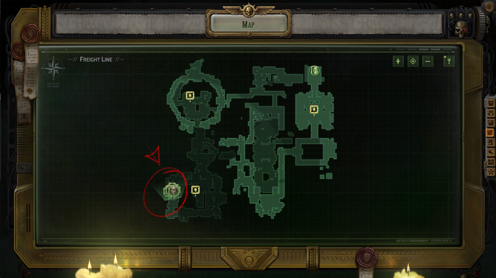
And then speak to Zdena the Outcast, and follow her through the freight line. I will transcribe her entire conversation line at a later date, I forgot to grab screenshots. My apologies.
She’ll jump into a spinning fan, and all you can do is follow her. Your options are:
- 1. [Requires: Dogmatic - Follower] [Pray to the Emperor] "I put my life in Thy hands, for I believe truly that Thou wilt protect." [Dogmatic option]
- 2. [Call upon the Ruinous Powers] "I am willing to take the risk so that I might learn the secrets of the Bloodspun Web, but I need your aid!" [Heretical option]
- 3. [Athletics 55] [Jump]
- 4. [Shout into the shaft] "I've had it with this madness and with your riddles! I am not going to risk my life just for the sake of finding some temple!"
- 5. [Step away]
Select options 1-2 reduces the difficulty of the [Athletics] check from 55 to 45, and then select 3 to proceed and continue the quest. You’ll land, alone!, in the Temple of the Bloodspun Web. Travel along the rafters(?) and continue to descend further and further into the Temple.
Speak to Vizsier as soon as you spot him (using TAB to highlight NPCs when needed) and you will be presented with a few options:
- 1. "Why is it you invited me here?" [No new choices]
- 2. "What do you mean, you have 'waited for many years'? It was not so long ago that I made my acquaintance with the cult." [No new choices]
- 3. "Vizsier. Is that some sort of title?" [No new choices]
- 4. "So, you just walked my companions in here the normal way while I was forced to take that jump?" [No new choices]
- 5. "How did you manage to erect an entire temple in the middle of the ship without anyone noticing?" [No new choices]
- 6. "I expected greater respect from one who so eagerly anticipated a meeting with the Rogue Trader." [No new choices]
- 7. "I have walked the path of the Matriarch Spider. What now?"
Select 7 to continue the conversation, and your next options will be:
- 1. "How do you know I have passed every trial? Have you been watching me?" [No new choices]
- 2. "Were the trials truly necessary? Would not a conversation have sufficed?"
- 3. "The path I have walked has helped me understand myself better."
- 4. "You forced me to undergo all this just to share your wisdom with me? Are you out of your mind?"
- 5. "What would have happened if I never reached the end of the path?"
If you select "Were the trials truly necessary? Would not a conversation have sufficed?" you will unlock new options:
- 1. "Who is it you talk to all the time?" [No new choices]
- 2. "I see your eyes are sewn shut. Are you blind or is that another of the cult's rituals?" [No new choices]
- 3. "So this entire conversation is another test, I imagine?"
When you select option 3, a small visual effect will play on the screen, and you will have new options to respond:
- 1. [Look around the temple] [No new choices]
- 2. [Medicae 25] "What... is the meaning of this..."
If you pass the Medicae check, you will unlock a new option. If you fail the check, you will just unlock option 3:
- 2. "You poisoned me somehow, did you not?"
- 3. "And what happens now?"
Either way, select option 3 to continue the quest:
- 1. "First you are going to give me the antidote." [Only appears if you passed the previous Medicae check]
- 2. "Now you are going to initiate me as a servant of death."
- 3. "Enough tests and trials. Your insolence has crossed all reasonable lines. You will be punished for that."
After selecting option 2, you’ll then be baptized, and have some options to respond.
- 1. [Taste the blood]
- 2. [Offer a prayer to the Undying Emperor] [Applies Contaminated Buff to player]
- 3. [Look up into the face of the Undying Emperor's statue] [Applies Contaminated Buff to player]
- 4. [Heretical] [Whisper words of corruption] [+3 Corruption] + [Applies Contaminated Buff to player]
- 5. [Wipe the blood off your face with disgust] "When is this going to end..."
Your next choices will be:
- 1. "Bloodwarden? Very flattering. I will add it to my other titles."
- 2. "It felt as if the God-Emperor was watching me..."
- 3. "So the ritual is complete?"
Exhaust dialogue options 1-2 or just 3 three to finish the event. You will have then finished the first Death Cult questline in the Freight Line.
Starting DLC - Lex Imperialis
Auto starts when you hit Rykad Minoris and head to the Upperway.
Solomorne
Recruitment
Main Quest - The Starport | First met on Rykad Minoris, after entering the The Upperway for the first time.
Requirements
- 1. "Abelard, what makes this man think he can demand anything of me?" [Only appears if Abelard is in party]
- 2. "Proctor Anthar? Since I do not recall seeing you among my subordinates, I must assume that we served in different parts of Calixis. I am [PLAYER NAME] von Valancius. I took on Lady Theodora's title after her recent death." [Only appears if RT has Arbirator origin]
- 2. "Cool it, lawman, and show some respect — the name is Rogue Trader Leonora von Valancius, and as far as you're concerned, I am untouchable. Catch my drift?" [Only appears if player has Crime Lord Origin]
- 3. "l am [PLAYER NAME] von Valancius, successor to the recently deceased Theodora von Valancius. I have come to this world on personal business."
- 4. "You are speaking to a Rogue Trader, and that is all the information you are entitled to at this moment. I will be asking the questions from now on."
- 5. "Do not stand in my way. Who I am is no concern of yours."
And then:
- 1. "What was the nature of the arrangement between the Arbites and Theodora?" [No new choices]
- 2. "What are you and your people doing here?"
- 3. "What do you know about the situation on the planet?" [No new choices]
- 4. "What do you intend to do next?"
- 5. [Nod at the cyber-mastiff] "That is one fearsome-looking dog. I was impressed by its performance in battle."
Selecting “"What are you and your people doing here?"” unlocks two new choices:
- 4. "Are you not supposed to help the governor regain control over this world? I thought that maintaining order was the foremost duty of any Arbitrator." [No new choices]
- 5. "What's this about a missing ship?"
Selecting “"What's this about a missing ship?"” unlocks a new option:
- 5. "What does the stolen tithe entail?" [No new choices]
Selecting “"What do you intend to do next?"” unlocks three new choices:
- 5. "So, the governor is a suspect?"
- 6. [Nod at the cyber-mastiff] "That is one fearsome-looking dog. I was
- impressed by its performance in battle."
- 7. "l am on my way to see the governor myself. You and your unit could accompany me."
- 8. "l have no more questions." [Ends the event]
Unfortunately, you cannot recruit Solomorne in this event, but once you have taken care of the anti-aircraft battery and inform the governor, Solomorne will appear again (yay!) and your first choices are:
- 1. "This world belongs to Winterscale. Do the Adeptus Arbites truly have the authority to interfere in the rule of governors appointed by a Rogue Trader?"
- 2. "l would never think to oppose a servant of the law." [No new choices]
- 3 "Do not even try to involve me in this, Medineh." [No new choices]
Selecting “"This world belongs to Winterscale. Do the Adeptus Arbites truly have the authority to interfere in the rule of governors appointed by a Rogue Trader?"” will unlock new option(s):
- 2. [Shrug] "l suppose there is nothing else for it."
Any option will then lead to:
- 1. "What is your plan, Proctor?"
- 2. "So, you are just going to sit the whole thing out in this bunker..." [No new choices]
- 3. "l wish you luck in your investigation, Proctor."
Selecting “"What is your plan, Proctor?"” will unlock new option(s):
- 2. "Why do you think the rebels are hiding among the civilians? They could have shelters elsewhere." [No new choices]
- 3. [Dogmatic] "A sound plan, Proctor. Only harsh measures can restore order." [+1 Dogmatic]
- 4. [Iconoclast] "Killing innocents is unacceptable, even for the sake of saving a world." [+1 Iconoclast]
- 5. [Heretical] "l recommend not taking civilian casualties into account. These people are in need of a good lesson in pain and fear." [+1 Heretical]
- 6. "l wish you luck in your investigation, Proctor." [Ends the conversation]
And then, after your Triumph, you’ll bump into the handsome Arbirator again just before the boss battle of Act 1. Solomorne and Glaito will help you out with a fight after a few enemies are dead, and then start a conversation. Your first options will be:
- 1. "What is happening in the starport?" [No new choices]
- 2. "Where is the governor?" [No new choices]
- 3. "Those wounds look bad. Let me offer you first aid."
- 4. "It appears your investigation has hit a dead end."
Selecting “"It appears your investigation has hit a dead end."” / “"Those wounds look bad. Let me offer you first aid."” will unlock new option(s):
- 4. "l see you are not trying to flee and have chosen to fight instead. I commend your resolve."
- 5. "Rykad Minoris is doomed. There is no time for heroics. We need to leave!"
Select either or, and then:
- 1. "l will consider it an honour to assist you." [Activates etude Ch01_SeenSoIomonreOnRaycad]
- 2 "Very well. You and your people may come with me." [Activates etude Ch01_SeenSoIomonreOnRaycad]
- 3. "l could use a personal lawman at my beck and call — especially one who is in my debt." [Activates etude Ch01_SeenSoIomonreOnRaycad]
- 4. "Your problems do not concern me."
Selecting “"Your problems do not concern me."” will unlock new option(s):
- 1. "That's better. Welcome aboard." [Activates etude Ch01_SeenSoIomonreOnRaycad]
- 2. "You, your Marshal, and the rest of you Arbitrators can all go to the warp. I have no intention of forming an alliance with you, and I do not care what happens to you or your mission."
You don’t need to do anything else specifically to save him (he doesn’t require a separate shuttle or anything) so proceed through the end of Act 1 normally. His Recruitment is continued here.
Act 2
Idira
Planet Event - Warning in Advance | Only occurs if Idira is brought to the first visit to Footfall during Main Quest - Tattered Spirit.
During the conversation with Bastian Chorda, if Idira is in the party, she will warn you about another attack. There is a singular option that rewards you with a Humanity increment.
- 1. [Draw your weapon] "l appreciate the warning, Idira." [+1 Humanity]
Personal Quest - Echo of the Past | Occurs after 1-5 jumps after completing Janus, Footfall, or Kiava Gamma in full.
Requirements
Summary
The Vox Master will notify you of a ghost appearing on the lower deck, and your first choices will be:
- 1. "What is Idira doing there?"
- 2. "I'll deal with it personally. I need the exact location." [Continues the quest]
- 3. "I want nothing to do with this. Send in the enforcers." [Kills Idira]
Go down and personally deal with it if you want Idira to live. Your next choices are:
- 1. "What are you?"
- 2. "We have already met."
- 3. [Attack] "Die, scum!" [No new choices]
Select from options 1-2 to continue the conversation, and then:
- 1. "What do you want with me? Why were you waiting for me?"
- 2. "You are not Theodora. Theodora is dead. There is no coming back from that."
- 3. "Where's Idira? What have you done with her?" [No new choices]
If you select "You are not Theodora. Theodora is dead. There is no coming back from that." you will unlock a new set of options:
- 1. "If you are Theodora, then tell me who really killed you?"
If you select "What do you want with me? Why were you waiting for me?" you will unlock a new set of options:
- 2. "I'm sorry we could not help you, but you do not belong here."
- 3. "I will send you back into the abyss you crawled out of."
After following the ghost, you will stumble upon Idira and your first choices, if Argenta is in the party, will be:
- 1. [Dogmatic] [Let Argenta act] [Activates etude YdiraDead] + [Argenta_KillYdira] + [+5 Fury for Argenta] + [+8 Dogmatic] + [Only appears if Argenta is in the party]
- 2. [Iconoclast] "Argenta! Stop!" [+5 Iconoclast] + [Only appears if Argenta is in the party]
Select the Iconoclast option to have another set of choices to make:
- 1. [Attack "Theodora"] "Let her go, scum!" [Only appears if you have a ranged weapon equipped]
- 2. "Idira, snap out of it. For Vigdis. She is going out of her mind with worry about you." [Only appears if etude VigdialnMourning is active] + [Activates etude PlayerSaidVigdis]
- 3. [Coercion 10] "Idira! Snap out of it, or I'll shoot you myself!"
- 4. [Persuasion 30] "Idira! I am your captain, not her! Listen to me and snap out of it!"
- 5. [Kill Idira] [Activates etude YdiraDead]
And then after finishing the ensuing battle, if Idira is alive:
- 1. "Are you all right?"
- 2. "This abomination claims that you called her. Is this true?"
- 3. [Dogmatic] “Sister Argenta, do your duty.” [Activates etude YdiraDead] + [+5 Fury] + [+8 Dogmatic] + [Only appears if Argenta is in the party]
- 4. [Dogmatic] [Kill Idira] “Die, heretic.” [Activates etude YdiraDead] + [+8 Dogmatic]
To not kill Idira, select both “Are you all right?” AND “This abomination claims that you called her. Is this true?” which unlocks the next options:
- 1. "Has anything like this ever happened to you before?" [No new choices]
- 2. "The previous Rogue Trader has been seen on the ship recently. Was that your doing?"
Select "The previous Rogue Trader has been seen on the ship recently. Was that your doing?" which then unlocks:
- 1. [Lore (Warp): Succeeded] "You hear the warp whispering in your head, and you answered? Are you insane?" [Only appears if you pass a passive +30 Lore (Warp) check]
- 2. "The warp tricked you. It played upon your feelings. I can understand why, but that is no excuse for what you did."
- 3. [Dogmatic] "Enough. Sister Argenta, carry out the Emperor's will and destroy this heretic." [Activates etude YdiraDead] + [+5 Fury] + [+8 Dogmatic] + [Only appears if Argenta is in the party]
- [Dogmatic] [Kill Idira] “Your weakness will be the death of us all. I will not allow it.” [Activates etude YdiraDead] + [+8 Dogmatic]
Select either [Lore (Warp): Succeeded] "You hear the warp whispering in your head, and you answered? Are you insane?" OR "The warp tricked you. It played upon your feelings. I can understand why, but that is no excuse for what you did." to unlock:
- 1. "So what am I supposed to do with you now?"
Select “So what am I supposed to do with you now?” to unlock the final set of options:
- 1. "What will happen to my crew while we look for this 'remedy'?" [No new choices]
- 2. "I want to help you, Idira. We'll think of something." [Activates etude YdiraKind1] + [+1 Humanity]
- 3. "Your worries do not interest me, but as long as you keep yourself under control and remain useful, you will live." [Activates etude YdiraEffective1] + [+1 Effectiveness]
- 4. "I'm not going to kill you, but keeping you in the crew is dangerous. You'll be put under guard and escorted from the ship at the first orbital stop we come to." [Activates etude YdiraBanished] + [Activates etude IdiraBanished]
- 5. [Dogmatic] “Sister Argenta, do your duty.” [Activates etude YdiraDead] + [+5 Fury] + [+8 Dogmatic] + [Only appears if Argenta is in the party]
- 6. [Dogmatic] [Kill Idira] “Die, heretic.” [Activates etude YdiraDead] + [+8 Dogmatic]
And then:
- 1. "I eliminated the problem. Neither Idira nor the ghost of the departed Theodora will trouble us again. Once I'm finished here, make arrangements for the disposal of the bodies." [Only appears if etude YdiraDead is active]
- 2. "I got rid of the warp's illusions. Idira is alive - bring her to the chirurgeons and have them see to her." [Only appears if etude YdiraKind1 is active]
- 3. "I got rid of the psyker's creations. Idira is alive - see that she gets medical attention, and then put a guard on her. If she succumbs to the warp's influence again - shoot her without warning." [Only appears if etude YdiraEffective1 is active]
- 4. "I handled the problems in the bay, although there is one matter outstanding: see to it that Idira Tlass leaves the ship at the next port. I cannot risk keeping her in my crew." [Only appears if etude YdiraBanished is active]
- 5. "Everyone who was on the deck is dead, including the attackers. What happened was entirely the fault of Idira Tlass. Dispatch servitors here and put her out through an airlock, I am sick of her antics." [Activates YdiraDead]
With that, the event is over.
Argenta
Personal Quest - Astray | Automatically given at the start of Act 2.
Requirements
Summary
Sister Argenta speaks to you on the bridge, and asks that you help her locate Reverend Hieronymus once you make foot on Footfall.
Specifics
He is located in the Atrium, and you will be automatically dragged into a conversation with him, and two arguing groups while moving through the map. Solve the dispute, and then make a sharp left and ascend the steps to the balcony, where you can speak with the Reverend.
Your first choices are:
- 1. "l would add something to that if doing so weren't beneath me."
- 2. "Sister Argenta stood by my side during the assault on the ship, and I could use her assistance going forward."
- 3. [Say nothing]
- 4. "Frankly, I have no need of Sister Argenta's escort."
Selecting “"Frankly, I have no need of Sister Argenta's escort."” will open up a new set of options:
- 1. "Correction: I have no need of your protection, but I have nothing against your presence aboard my ship."
- 2. "You heard what I said." [Unrecruits Argenta] + [Fails Argentas questline] + [Activates etude SororitasWentToSlumsHerself] + [Activates etude LateByDecades_CultArise]
Selecting “"l would add something to that if doing so weren't beneath me."” / “"Sister Argenta stood by my side during the assault on the ship, and I could use her assistance going forward."” / “[Say nothing]” will open up a new set of options:
- 1. "l come across heresy surprisingly often these days." [No new choices]
- 2. "Why don't you go to the Liege with this matter?" [No new choices]
- 3. "We will verify this rumour, Reverend Hieronymus." [Continues questline] + [Activates etude LateByDecades_CultArise]
- 4. "l don't have time to be dealing with this." [Fails Argentas questline] + [Activates etude SororitasWentToSlumsHerself] + [Activates etude LateByDecades_CultArise]
Accept the quest to verify the rumors.
Argenta will begin a conversation about her quest once you enter the Shadow Quarters for the first time as a reminder. The first options for that conversation are:
- 1. "Remind me, what was it that Reverend Hieronymus wanted from us?" [No new choices]
- 2. "You seem weighed down by something."
- 3. "You know Footfall better than me. Do you think the rumours of heretics are true?" [No new choices]
- 4. "We don't have time for talk. Let's keep moving!" [Ends the conversation]
If you select “"You seem weighed down by something"” your next options will be:
- 1. "lf something is troubling you, tell me. Perhaps I can help?"
- 2. "l would like to know what this 'personal weakness' is. Members of my crew cannot keep secrets from me."
- 3. [Shrug] "Whatever you say."
Options “"lf something is troubling you, tell me. Perhaps I can help?"” / “"l would like to know what this 'personal weakness' is. Members of my crew cannot keep secrets from me."” you will unlock a new option:
- 2. "How and why did your stay on Footfall come to an end? Something must have changed?"
And then, to actually locate the heretics hideout, make a sharp left upon entering the Shadow Quarters to locate a “rising sun symbol.” Follow these symbols on the ground until you find a door that you can interact with. I have provided a photo of the location of the door on the map below if you would instead just like to make a beeline for it.
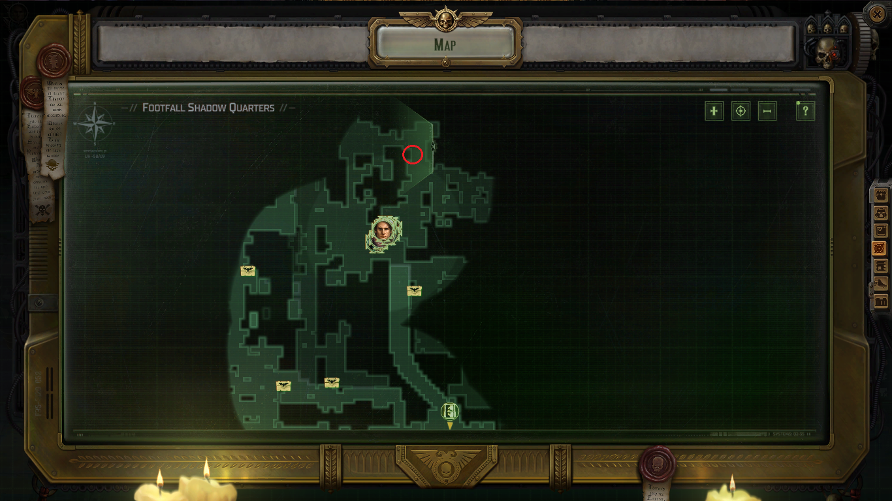
Interact with the door, and you’ll enter the base. Enter the first door on your left, and you’ll be pulled into a cutscene, and subsequently, a fight. After finishing the fight, your next options will be:
- 1. "Argenta, wait. The heretic must be interrogated."
- 2. "End him, Argenta." [Kills the cultist] + [Finishes the quest]
If you select "Argenta, wait. The heretic must be interrogated." your next options will be:
- 1. "How do you know Argenta? Have you seen her on Footfall before?"
- 2. "Who or what is this 'true god' you keep mentioning?" [No new choices]
- 3. "End him, Argenta." [Kills the cultist] + [Finishes the quest]
If you select "How do you know Argenta? Have you seen her on Footfall before?" you will unlock a new option:
- 2. "Argenta? What is he talking about?"
And then if you select "Argenta? What is he talking about?" you will unlock a new option:
- 3. "l need something more coherent." [No new choices]
After killing the heretic, your next choices will be:
- 1. "Very well."
- 2. "If you wish to be part of my crew, follow the orders given to you instead of going on adventures without leave." [Only appears if Argenta left the party?] + [No new choices]
- 3. "l have no intention of tolerating your wilfulness. You are no longer welcome aboard my ship." [Unrecruits Argenta]
Go up to Argenta on the bridge and ask her:
- 1. "I'm waiting for you to tell me about your past and to explain the strange words of that cultist on Footfall."
And then:
- 1. "Of course. Let us go there right away." [Activates etude LateByDecades_ShipDialog]
- 2. "Not now." [Exits the conversation]
And then:
- 1. "I'm listening."
- 2. "Am I to understand that you lied to me?"
Either choice moves to:
- 1. "I've never even heard of such a planet. Does it belong to the von Valancius dynasty?" [No new choices]
- 2. "Please continue."
And then:
- 1. "Why did you keep your supposition from Reverend Hieronymus? Surely he could have helped you with the search for the ship and the saint's remains."
- 2. "l imagine Theodora was thrilled with the prospect?" [No new choices]
- 3 "You mentioned something called 'the One Star' — what is it?" [No new choices]
Selecting “"Why did you keep your supposition from Reverend Hieronymus? Surely he could have helped you with the search for the ship and the saint's remains."” leads to:
- 1. "Your actions were driven by hubris, Argenta. It's as if you wanted to keep your discovery all to yourself." [+1 Humility]
- 2. "That's understandable. Searching for your destiny, for your place in the world, is a special matter, a personal one. You either succeed at it, or you don't." [+1 Fire]
- 3. “That was irresponsible of you. If you had gotten yourself killed on the planet, no one would have learned about its existence, and the holy relic would have been lost.” [+1 Humility]
- 4. “If you were the only one who realised what you were dealing with once the planet had been described to you, then this secret was yours and no one else’s. As is the decision of what to do about it.” [+1 Fury]
Pick any increment and then you will unlock a new option:
And then:
- 1. "Sadly, the only one who might have all the answers — Kunrad — escaped." [No new choices]
- 2. "No need to blame yourself. If the heretics really had wormed their way into the von Valancius ranks by then — they would have found the planet even without you going there." [No new choices]
- 3. "So how did you manage to escape from the cultists?" [No new choices]
- 4. "And that's why you didn't trust me before, correct?"
And then:
- 1 "And what did you find?" [No new choices]
- 2. "So, just to clarify, you were wounded, so you never found Saint Argenta's
- ship, is that right?"
And then:
- 1. "There is nothing I wouldn't do to reclaim a sacred object for the people of the Imperium." [Completes the quest]
- 2 "If it's important to you — I will help." [Completes the quest]
- 3. "Searching for ancient ships and relics is an exciting prospect. Of course I'll help you." [Completes the quest]
- 4. "If the accursed Final Dawn is involved again, it is my duty to help you. That cult must be reduced to ashes throughout the entire Koronus Expanse." [Completes the quest]
- 5. "I don't think I want to do that."
If you select “"I don't think I want to do that."” your next options will be:
- 1. "Very well, I will assist you with the search for Salis Prime and its relic."
- 2. "My decision is final." [Unrecruits Argenta] + [Fails the questline]
Quest - Echo of the Past | Occurs after 1-5 jumps after completing Janus, Footfall, or Kiava Gamma in full.
Requirements
- Bringing Argenta to deal with the ghost in the Lower Decks.
- Idira is alive.
Summary
This is technically Idiras second Personal Quest, but there is an increment for Argenta available as well during this quest. To reduce unneeded doubling of information, I have provided a link to a bookmark for the full walkthrough of Idiras quest.
I have only included the increment changes for Argenta below, please refer to this section for the full walkthrough.
- 1. [Dogmatic] [Let Argenta act] [Activates etude YdiraDead] + [Argenta_KillYdira] + [+1 Fury for Argenta] + [+8 Dogmatic] + [Only appears if Argenta is in the party]
- 3. [Dogmatic] “Sister Argenta, do your duty.” [Activates etude YdiraDead] + [+5 Fury] + [+8 Dogmatic] + [Only appears if Argenta is in the party]
- 3. [Dogmatic] "Enough. Sister Argenta, carry out the Emperor's will and destroy this heretic." [Activates etude YdiraDead] + [+5 Fury] + [+8 Dogmatic] + [Only appears if Argenta is in the party]
Abelard
Abelard does not have any events / quests / etc in Act 2.
Heinrix
- Help! Heinrix left my party and I can’t find him on Footfall?
That’s normal! Heinrix will state that he has business in Footfall, and will be inaccessible until after your first visit with the Governor. Immediately after, return to your ship at Void Dock Alpha-Rho and he will be waiting outside your shuttle.
Your first options will be:
- 1. "l am pleased to see you again, Heinrix."
- 2. "Greetings, Interrogator. To what do I owe the pleasure of this latest visit?"
- 3. [Give him a dazzling smile] "Master van Calox! I knew you could not resist my charms!" [Only appears if Heinrixs’ romance is active] + [+1 Devil]
- 4. "You again."
Any option leads to the next set of options:
- 1. "Heinrix, would you mind translating the torrent of verbiage you just unleashed upon me?" [No new choices]
- 2. "l can't really say no, can l?" [No new choices] + [But the dialogue is so cute please-]
- 3. "What exactly caused this need to rejoin my crew?"
- 4. [Step closer and lower your voice] "l am ever so glad to have you back." [Only appears if Heinrixs’ romance is active] + [+1 Closeness]
If you select “"What exactly caused this need to rejoin my crew?"” you will unlock a new set of options:
- 2. "l, Rogue Trader [PLAYER NAME] von Valancius, welcome the agent of the Golden Throne aboard my ship and take on the responsibility of assisting him in the fight against the evil that threatens Humanity."
- 3. [Step closer and lower your voice] "l am ever so glad to have you back." [Only appears if Heinrixs’ romance is active] + [+1 Closeness]
- 4. "A sanctioned psyker with an Inquisitorial rosette in my retinue? For free, no less? The other Rogue Traders will be positively green with envy!"
- 5. "I'm not fond of the methods used by the Inquisition, but I will assist you in anyway I can."
- 6. "l object to such an abuse of power by the Inquisition! I am a Rogue Trader, not some peasant to be pushed around!"
Planet Event - For Your Ears Only | Automatically starts after Main Quest - Tattered Spirit is finished.
Requirements
- Bring Heinrix to Janus, and complete the whole quest with him.
- Having Heinrix with you when confronting Governess Vyatt.
Summary
After dealing with Governess Vyatt, Heinrix will pull you aside for a private conversation.
Specifics
You will immediately roll a passive +90 Perception check.
- 1. "Are you lecturing me, Interrogator?" [Only appears if you fail the +90 Passive Perception check]
- 1. “This isn’t about the flouting of the Imperial law. You’re worried about me, aren’t you?” [Only appears if you pass the +90 Passive Perception check]
- 2. “Are you going to punish me for misconduct?”
- 3. “Do you know who you remind me of? My Seneschal. He also frequently offers unsolicited criticism of my choices.” [Only appears if Abelard is in the party] + [No new choices]
If you select ““This isn’t about the flouting of the Imperial law. You’re worried about me, aren’t you?”” your next options will be:
- 1. “Why must your concern for me be wrapped in layers of rebukes and recriminations?” [Activates etude CorraptionJanus]
- 2. “I like that you are worried about me.” [+1 Closeness] + [Ends the conversation]
- 3. “I have not forgotten, Heinrix. I just enjoy baiting you too much.” [+1 Devil] + [Ends the conversation]
If you select ““Why must your concern for me be wrapped in layers of rebukes and recriminations?”” your next options will be:
- 1. "Just say what you mean. I would listen to you without the strong-arm tactics." [Ends the conversation]
- 2. "l do not want the shadow of the Imperium and the Golden Throne to always come between us." [Ends the conversation]
If you select ““Are you going to punish me for misconduct?”” your next options will be:
- 1. "l am simply trying to establish what penalties you are threatening to impose upon me."
- 2. "Lay formal charges against me, Interrogator, or cease these toothless outbursts. I will not tolerate them."
- 3. "l am ready to accept any punishment you deem appropriate for my thoughtless actions. You may deliver it personally, right here, in front of everyone." [+1 Devil]
And then:
- 1. “Why must your concern for me be wrapped in layers of rebukes and recriminations?” [Activates etude CorraptionJanus.]
- 2. “I like that you are worried about me.” [+1 Closeness] + [Ends the conversation]
- 3. “I have not forgotten, Heinrix. I just enjoy baiting you too much.” [+1 Devil] + [Ends the conversation]
Comments
The CorraptionJanus etude (yes, that is how it is spelt in game) is related to Heinrixs true romance ending. Heinrixs responses can also change depending on if you have 4+ Devil flags (shown below + some generic dialogue), but no extra etudes or things activate, it’s just flavourtext.
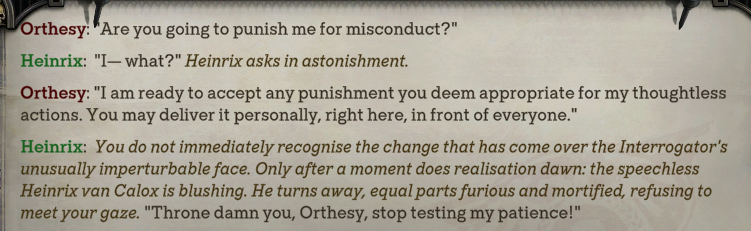
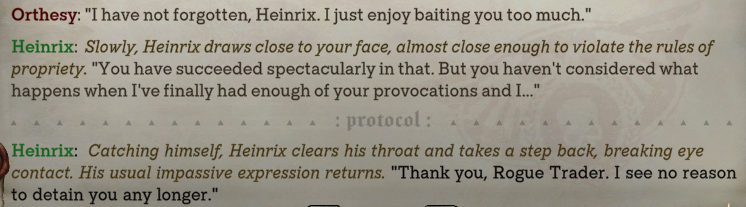
Personal Quest - Secrets of the Cult | Automatically given after re-recruiting Heinrix and speaking with him on the bridge.
Requirements
Summary
Heinrix asks you to bring him to the industrial planet of Kiava Gamma in order to continue to find information about the Cult of the Final Dawn.
Speak to Heinrix on the bridge and select:
- 1. "You wanted to discuss the nature of your mission."
And then:
- 1. "l welcome the chance to assist the Inquisition with its enquiries, van Calox."
- 2. "l do not object to you personally, but I find the continuous presence of an Inquisition agent at my side slightly unnerving."
- 3. "You wouldn't be on my ship if I had any say in the matter."
Any option will then lead to:
- 1. "A Chaos cult in my protectorate... Heinrix, are you laying an accusation against my dynasty?" [No new choices]
- 2. "The Lord Inquisitor mentioned in his letter that he is willing to show lenience toward my actions that would otherwise be interpreted as radical." [No new choices]
- 3 "You have spies on the von Valancius worlds?" [No new choices]
- 4. [Lore (Imperium): Succeeded] "Why would Ordo Xenos agents investigate a Chaos cult?" [Only appears if a passive +30 Lore (Impierum) check is passed] + [No new choices]
- 5. "l want to know more about this Cult of the Final Dawn." [No new choices]
- 6. "l have already agreed to give you a place aboard my ship. What else?"
And then:
- 1. "Let us assume Kiava Gamma has fallen to heresy. What then? Will you again propose we destroy an entire planet?" [Only appears if etude RaycadCorruptedShip is active] + [Getting this etude requires saving people from Rykad during Act 1]
- 2. "Why did your suspicion fall on Kiava Gamma?" [No new choices]
- 3. "We met a Chaos Space Marine on Rykad Minoris — do we risk running into his brothers?" [No new choices]
- 4. "l won't let anyone throw their weight around on my worlds, be they servants of Chaos, xenos, or heretics." [No new choices]
- 5. "That is enough discussion about the Archenemy's servants. Tell me about the Drukhari who stole Rykadts sun." [No new choices]
If you select “"Let us assume Kiava Gamma has fallen to heresy. What then? Will you again propose we destroy an entire planet?"” you will unlock a new set of choices:
- 1. "l do not believe you lack compassion. You did not stop me after all, although you certainly could have tried to." [+1 FirstQuestMercy]
- 2. "l guess sometimes the good of the Imperium demands we turn a blind eye to the fate of its individual servants." [+1 FirstQuestHarsh]
Selecting “"l do not believe you lack compassion. You did not stop me after all, although you certainly could have tried to."” / “"l guess sometimes the good of the Imperium demands we turn a blind eye to the fate of its individual servants."” will unlock two new options:
- 2. "l must go about my business. Is there anything else I need to know?" [Ends the conversation]
- 3. "Let us depart from business matters, Heinrix. You once promised to entertain me with a compelling conversation — surely, this is not what you had in mind." [Ends the conversation]
Kiava Gamma Planetside
NOTE: While Heinrix is the only mandatory companion for this planet, Pasqal has unique events and is your Tech Priest companion, so, yes, you should bring him planetside to Kiava Gamma, a manufactorum planet.
Your first choices when you finally land planetside are:
- 1. "Remind me, what is your mission on Kiava Gamma?"
- 2. "Any suggestions for how to proceed?"
- 3. "We'll learn nothing by standing here. Let's go." [Ends conversation]
Travel forwards and you will eventually bump into a Tech-Priest, who will pull you into a conversation. Your first choices are:
- 1. [Awareness 10] [Examine the Tech-Priest] [No new choices]
- 2. "[PLAYER NAME]. Heir of House von Valancius. Rogue Trader."
- 3. "Who are you?"
- 4. "Is that any way to greet the mistress/master of your world?"
- 5. [Attack] "l will teach you some respect!" [Starts combat]
Any option from 2-4 will then lead to:
- 1. "The Fabricator-Censor is a traitor to the Imperium and Humanity. I will not comply with any protocols approved by him." [Only appears if etude PlayerKnowsThatFabricatorIsTraitor is active]
- 1. "What is this Protocol 39-42?" [Only appears if option “[PLAYER NAME]. Heir of [...]” OR “is that any way [...]” was selected]
- 1. "Where is the Fabricator-Censor? I will only speak with the person in charge of this manufactorum."
- 2. "What's happening on this planet? Why is the governor not responding to the ship's hails? What are heretic ships doing in this system?"
- 3. [Attack] "It’s about time you were scrapped." [Starts combat]
Selecting “"What is this Protocol 39-42?"” / “"Where is the Fabricator-Censor? I will only speak with the person in charge of this manufactorum."” / “"What's happening on this planet? Why is the governor not responding to the ship's hails? What are heretic ships doing in this system?"” leads to this set of choices:
- 1. "Fine, let's stick to your protocols." [Starts combat]
- 2. "l will not be doing anything until I meet with the Fabricator-Censor." [Starts combat]
- 3. [Attack] "It's about time you were scrapped." [Starts combat]
After combat, take the lift up and hang a sharp left. Interact with the computer to lower the previously raised drawbridge. You can immediately head down, or continue to carefully explore the upper levels. Avoid the steam (although the servitors you can potentially have follow you will probably get chewed up despite your best efforts)
Notably, there is a Lexmechanic located at the circled area in the below screenshot that is important to the quest. You can also find him via following the bloodstains on the floor, if the image doesn’t load/isn’t supported.
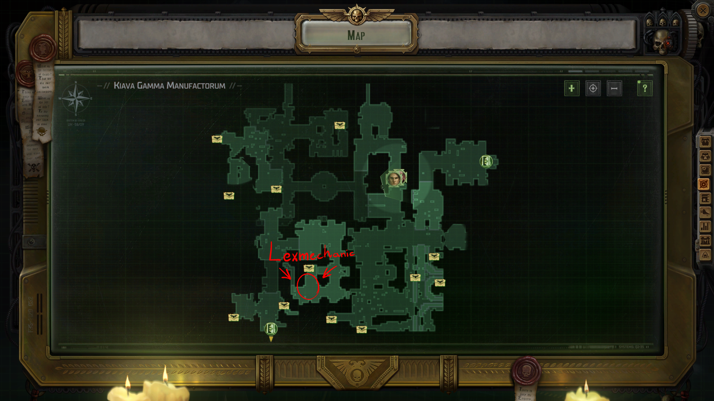
Your first choices with the Lexmechanic are:
- 1. "You have nothing to fear from us."
- 2. "What's this? Another one of the cultists' minions?"
- 3. [Attack] "Death to the slaves of the Archenemy!"
Any option will move the conversation forward. And then:
- 1. "How did you manage to avoid the same fate?"
- 2. "How did your crazed comrades behave?" [No new choices]
- 3. "You mentioned someone imprisoned on the lower levels?" [No new choices]
If you select "How did you manage to avoid the same fate?" you will unlock two more options:
- 1. "You don't act like the other priests who were infected with corruption." [No new choices]
- 2. "You mentioned a 'monster.' Is that some kind of weapon?"
After you select “"You mentioned a 'monster.' Is that some kind of weapon?"” you will unlock another option:
- 4. [Turn to Heinrix] "What do you make of it?"
Select that, and your next set of options are:
- 1. "Can the cogitator be disconnected and reconnected to another machine?"
- 2. "Heinrix? What are you thinking?"
Either of the options move to the next set of choices:
- 1. "Heinrix. No. Don't do it."
- 2. "What are you talking about?"
And then:
- 1. [Iconoclast] "Heinrix, stop. The leaders of the Cult would never discuss anything of importance in front of witnesses. Leave the poor man alone." [+1 Mercy] + [+5 Iconoclast] + [Activates etude KnowsTheCodeToTheDataVaultRoom]
- 2. [Dogmatic] "We cannot allow the information to go to waste. One life is a small price to pay for the good of the Imperium." [+1 Harsh] + [+4 Dogmatic] + [Activates etude KnowsTheCodeToTheDataVaultRoom]
If you spared the Lexmechanic, you will then decide the fate of Lexmechanic.
- 1. "He will be taken to my ship. After the cleansing rites, a place will be found for him there." [Activates etude LexmechanicOnShip]
- 2. "He has been tainted by corruption. I cannot allow him on my ship. He can seek out his own path to salvation."
- 3. [Kill the Lexmechanic] "The weak deserve only death."
Zip down the large metal pipe to the lower floor, and finally cross that platform you previously lowered. Proceed forward, and you will finally meet the Fabricator Censor. Your first choices will be:
- ?. "l am repulsed to hear Techna-Lingua from the mouth of a traitor." [Appears to be cut content and does not appear] + [Would have triggered from Tech-Priest/True Flesh feature?]
- 1. "Who in the void are you?'
- 2. "What's the matter, little tin-comrade? Implants on the blink? Forgotten how to speak properly?"
- 3 "What did you just say?"
Any response will lead to:
- 1. "Who are you?"
- 2. "You propose that l, the Rogue Trader of the von Valancius line, kneel before you? I am giving you five minutes. No, not to beg forgiveness. To speak your last words and to offer your final confession."
- 3. "Kiava Gamma belongs to House von Valancius, with whose scion you have the honour of speaking."
Selecting “” will lead to another set of options:
- 1. "What did you do to the governor of Kiava Gamma? Is he alive?" [No new choices]
- 2. "So you have traded one master for another? I would have expected a Fabricator-Censor to be smarter than that." [No new choices]
- 3. "l usually prefer negotiating to fighting. Fighting destroys property and wastes resources. But in your case, I'm afraid that extreme measures must be taken."
- 4. "This is my world, and it will serve only me."
- 5. "l have seen what you have done to this world and its poor people. I will not allow it to continue."
Any option from 3-5(?) will then lead to:
- 1. [Check the chronometer) "Your five minutes have passed. I hereby sentence you to death. And I will be the one to carry it out!" [Only appears if “You propose that l, the Rogue Trader [...]” was selected before]
- 2. "In the name of the Golden Throne, I will stop you and those who follow you."
- 3. "You deserve a painful death for what you have wrought upon the machines of this world and their priests."
- 4. "You know why I like deranged tin cans like you? When you're killed, you leave behind plenty of useful spare parts. I think I'll make a portable recaf machine out of you."
I have marked where the next part of his quest is located below. Note that you will need to deal with the Lexmechanic to gain access to the Data Vault.
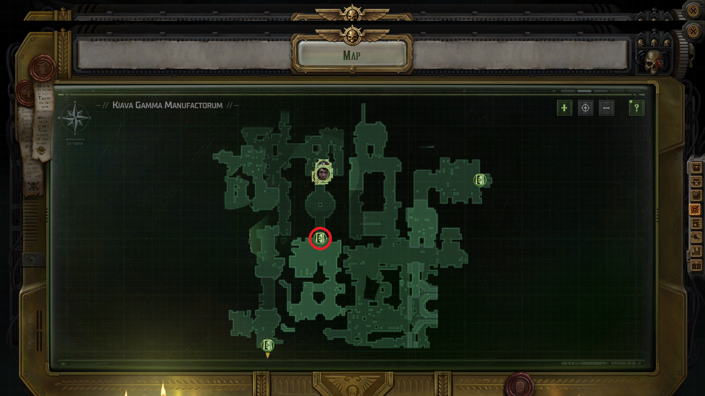
After activating the circular bridge and proceeding inside the sanctum, Heinrix will discover important information regarding the corruption on Kiava Gamma, and you’ll be presented with several conversations.
Your first set of choices are:
- 1. “Careful, Heinrix.”
- 2. [Look at the cage closest to you]
Either choice moves the conversation along. Your next set of choices are:
- 1. [Medicae +10] [Study the mutants closely] [No new choices]
- 2. "What is this?"
- 3. "Who are you?"
- 4. [Shoot him in the head] [Only appears if you have a Ranged Weapon equipped]
- 5. [Move away]
If you select “What is this?” / “Who are you?” you will move to the next set of choices:
- 1. "They're people. Monstrously mutated, but still people." [No new choices]
- 2. "The Lexmechanic talked about some kind of slag waste disposal and Chaos symbols on machines... What are the Archenemy's minions doing to the people of the lower levels?"
- 3. "Have you ever seen anything like this before?" [No new choices]
If you select "The Lexmechanic talked about some kind of slag waste disposal and Chaos symbols on machines... What are the Archenemy's minions doing to the people of the lower levels?" you will unlock a new option:
- 1. “Why are they hooked up to cogitators?”
And then if you select “Why are they hooked up to cogitators?” you will move the conversation along and your next set of choices is:
- 1. “What do you want to do?” [No new choices]
- 2. [Iconoclast] "Heinrix, let this go. You are only prolonging their suffering." [+5 Iconoclast]
- 3. [Dogmatic] "If there is something that will make them talk, we must use it." [+4 Dogmatic]
Please note that the first Dogmatic / Iconoclast options after finding the mutants in cages does nothing but change your alignment. After selecting one of those, you’ll be prompted with your first increment changes.
If you have a higher FirstQuestHarsh flags:
- 1. "I'm not going to argue with you. It seems to me your mind is already made up." [+1 Harsh]
- 2. "What are you going to achieve by prolonging their suffering? Just release them from this nightmare!" [+1 Mercy]
If you have a higher FirstQuestMercy flags:
- "It seems to me your mind is already made up. These people need deliverance from their suffering." [+1 Mercy]
- 2. "These people can still serve the Imperium. Anyone would deem their suffering a fair price to pay." [+1 Harsh]
Heinrix will deal with the mutants in whatever way you decide, and then you will move further into the room, discovering a Data Vault. Interact with it, and your first choices will be:
- 1. [Approach the cogitator]
- 2. [Keep your distance and wait]
- 3. [Draw your weapon] "We must destroy this machine immediately." [No new choices]
If you select “[Approach the cogitator]” you will be presented with a new set of choices:
- 1. [Logic +10] [Study the screens] [No new choices]
- 2. [Lore (Warp) 0] [Examine the writing on the casing] [No new choices]
- 3. [Look at the cables] [No new choices]
- 4. [Step back from the cogitator] [Rolls a Passive +50 Willpower check]
Either way you will get booted back to the first set of choices here, so select “[Keep your distance and wait]” to actually continue the event. Your next choices are:
- 1. "It predicts the future? How is that even possible?"
- 2. "Heinrix, are you all right?" [No new choices]
- 3. [Cut the power supply] "This spawn of Chaos has no place on my world!" [Activates etude DataVaultDestroyed] + [Fails the quest]
Eventually, you will finally be able to make a decision about the Data Vault, and I have listed the increment changes below.
The increments InterrogatorQuestEvilOutcome or InterrogatorQuestGoodOutcome listed below actually depend on if the flag Harsh or Mercy, respectively, is higher.
- 1. [Iconoclast] "We need to stop the cogitator. For the sake of the people still alive down there!" [+1 Harsh] + [Activates etude InterrogatorQuestGoodOutcome if Mercy flag is higher] OR [Activates etude InterrogatorQuestEvilOutcome if Harsh flag is higher]
- 2. [Heretical] "We need to let the cogitator finish its task- otherwise thousands of people will have died for nothing." [+1 Mercy] + [Activates etude InterrogatorQuestGoodOutcome if Mercy flag is higher] OR [Activates etude InterrogatorQuestEvilOutcome if Harsh flag is higher]
- 3. “The decision is on your conscience, Heinrix.” [Activates etude InterrogatorQuestGoodOutcome if Mercy flag is higher] OR [Activates etude InterrogatorQuestEvilOutcome if Harsh flag is higher]
- 4. [Cut the power supply] "This spawn of Chaos has no place on my world!" [Activates etude DataVaultDestroyed] + [Fails the quest]
If Heinrix turns off the cogitator, that is the Good ending. If Heinrix accelerates the cogitator, that is the Evil ending.
After you make your decision, you will get pulled into a fight. After finishing combat, if you allowed Heinrix to accelerate the cogitator and obtain information about the future, your next set of choices will be:
- 1. "l saw something happen to you, Heinrix. What happened when you touched the machine?" [Ends the event]
- 2. "Can I count on you to share whatever you find?" [Ends the event]
- 3. "What are you hoping to discover in the cogitator data?" [Ends the event]
- 4. "l hope this piece of metal was worth what you did." [Ends the event]
If you destroyed the cogitator, your next set of choices will be
- 1. "I saw something happen to you, Heinrix. What happened when you touched the machine?" [Ends the event]
- 2. "You did the right thing. The people who survived this disaster will continue to serve the Imperium." [Ends the event]
- 3. "You acted rashly. Those people are doomed anyway - they are probably already infected with the corruption of Chaos." [Ends the event]
- 4. "In any case, it's a pity the cogitator didn't survive. Imagine the secrets it could have revealed..." [Ends the event]
After this, and cleaning up the actual main quest you came here for, as you leave Kiava Gamma, you will get pulled into a cutscene.
Heinrix will then question you after the cutscene, and depending on your answers, you can activate several etudes.
- 1. "It was a Chaos Space Marine."
- 2. "He... said something about Theodora. About how the blood in my veins will lead me to serve Chaos." [Activates etude ArgentaHeardBlood even if Argenta is not in the party?] + [Activates ToldHeinrixAboutTheodoraSuspicion]
- 3. "Hold on. That servant of Chaos claimed that the soul of the psyker who was protecting me had already been marked by his 'lord."
- 4. "It doesn't matter. The sooner I forget about it, the better."
After all that, Heinrix will ask to speak to you on the bridge once you have a moment.
Study Event - The Traitor's Gambit | Occurs after finishing Kiava Gamma and speaking with Heinrix on the bridge.
Select the option:
- 6. “Are you satisfied with the results of your mission on Kiava Gamma?”
And then:
- [Persuasion +10] "Touching the cogitator did... something... to you. I want to know what." [No new choices]
- "What are you going to do next?" [No new choices]
- "So now I can be rid of you?" [No new choices]
- "l think that will be all for now."
Selecting “"l think that will be all for now."” will prompt Heinrix to remind you of your previously mentioned desire to talk. Your options are:
- 1. "It would be a pleasure. Why don't we go to my study?" [Activates etude TalkWithoutHurry]
- 2. "I am rather busy just now... but we shall certainly revisit this."
- 3. "Forget it." [Finishes etude Heinrix] + [Fails romance]
You’ll be pulled into your study, and the first options with increment changes are below.
- 1. "You can relate, of course. Your life once changed beyond recognition as well." [Only appears if you have seen Heinrixs “I do, but I have no ties to my homeworld now, none except my first name.” line when discussing his past]
- 1. "Sometimes I miss my old life."
- 2. "To be honest, I am thrilled with my new life."
- 3. "Being Rogue Trader has its advantages. For instance, I can torment a
- servant of the Holy Inquisition with impunity." [+1 Devil]
If you select “"You can relate, of course. Your life once changed beyond recognition as well."” you will unlock a new set of options:
- 1. "New circumstances? Your family disowned you!" [+1 Closeness]
- 2. "I do not think a Black Ship is an acceptable environment for a child." [+1 Closeness]
- 3. [Nod wordlessly]
Whatever you pick, you’ll be presented with another set of choices:
- 1. “What you are saying is that this laboured conversation was a pretext for studying me?”
- 2.“This conversation has felt like an interrogation for quite some time.”
- 3. “All in due time.” [Play scene Movetoregicide]
Selecting 1-2 will result in a new set of choices:
- 1. "Really? In that case, I shall choose the next topic, if you don't mind."
- 2. "Let's talk about what interests you instead." [Play scene Movetoregicide]
If you select “"Really? In that case, I shall choose the next topic, if you don't mind."” you get a chance to grill our lovely Interrogator.
- 1. "What is your favourite colour?" [No new choices]
- 2. "Your favourite food?"
- 3. "Let's talk about your romantic preferences. It's always a stimulating topic, don't you find?" [+1 Devil]
- 4. "Tell me a secret." [+1 - +2 Closeness]
- 5. "Why don't we discuss the Holy Inquisition's plans in the Koronus Expanse? That is a light, undemanding topic." [No new choices]
- 6. "Let's talk about what interests you instead." [Play scene Movetoregicide]
If you select “Tell me a secret.” and have at least 3+ Closeness flags, you can earn 1 to 2 Closeness flags. If you have grilled Heinrix previously about his life during his bridge discussions, you will gain +2 Closeness flags, otherwise you will earn the regular +1.
If you select “"Let's talk about your romantic preferences. It's always a stimulating topic, don't you find?"” and have at least 3 Devil flags, you will unlock a new set of options:
- 1. [Return his look] "I am not talking about fleeting dalliances."
- 2. "You dare praise the qualities of other women in my presence?"
- 3. "I did not expect that answer."
Otherwise, Heinrix deflects the question.
If you select “"Your favourite food?"” you will have another chance to gain a Closeness flag:
- 1. [Smile] "I recall your colourful metaphor involving amasec and cheese." [+1 Closeness] + [Only appears if you have seen Heinrixs “I don't consider raw emotions to be a necessity [...]” line when discussing his psyker awakening]
Either way, after exhausting all conversation options or selecting 6, Heinrix will lead you to the regicide board in your study. There is an [Lore (Imperium) +25] passive check that occurs here.
- 1. "I'm sorry, what?"
- 2. [Lore (Imperium): Succeeded] "Are you talking about the regicide board? The game on the board isn't mine."
- 3. "Don't talk in riddles."
Heinrix will focus on the board, and your choices are:
- 1. [Observe]
- 2. "Do you play regicide?" [Very cute ♡]
- 3. "l have never understood this strange pastime."
Any option will have Heinrix will solve the board before prompting you with another set of answers:
- 1. “Why are you apologizing? For the first time in this entire conversation, you did something you actually wanted to do.”
- 2. “I am pleased to see that there is at least a spark of passion instead of you.”
- 3. “You are boring me, Master van Calox. Let’s end our conversation here.” [Finishes etude Heinrix] + [Fails romance]
After, Heinrix will open up ever so slightly and prompt you to answer again:
- 1. "Perhaps it would be easier to find common ground over a game of regicide."
- 2. "I'm enjoying just sitting with you." [Ends the event]
- 3. "You are boring me, Master van Calox. Let's end our conversation here." [Finishes etude Heinrix] + [Fails romance]
If you select “"Perhaps it would be easier to find common ground over a game of regicide."” you will unlock a new set of options:
- 1. "I don't know how to play regicide. But I'm confident that you will make a fine teacher." [Activates etude RTCantRegicide]
- 2. "I know how to play regicide. Perhaps we could talk over a game from time to time." [Activates etude RTCanRegicide]
- 3. "I have much more exciting ideas about how we can spend our time
- together. But regicide sounds good as well. [+1 Devil]
Either 1-3 will continue the romance, confirmed by /u/Mags12998 on Reddit.
The next choices are:
- 1. "I suppose it really is time to end our conversation."
- 2. "Running away, are you?"
- 3. "You have, and I do not wish to waste any more of it on you." [Finishes etude Heinrix] + [Fails romance]
Comments
The RT notices that Heinrix has two different colored eyes in this scene, and his actual portrait art reflects that as well. His left eye is 2e2f27 vs his right which is 30211a.
Cute! Cute! Cute!
Planet Event - Visions of the Past | Occurs if Heinrix is brought to the Inquisition Shipwreck location in Pillars of Viridice galaxy. $
Requirements
- Having Heinrix in the party while exploring the Inquisition Shipwreck.
- Visiting the Inquisition Shipwreck location, which I have marked below.
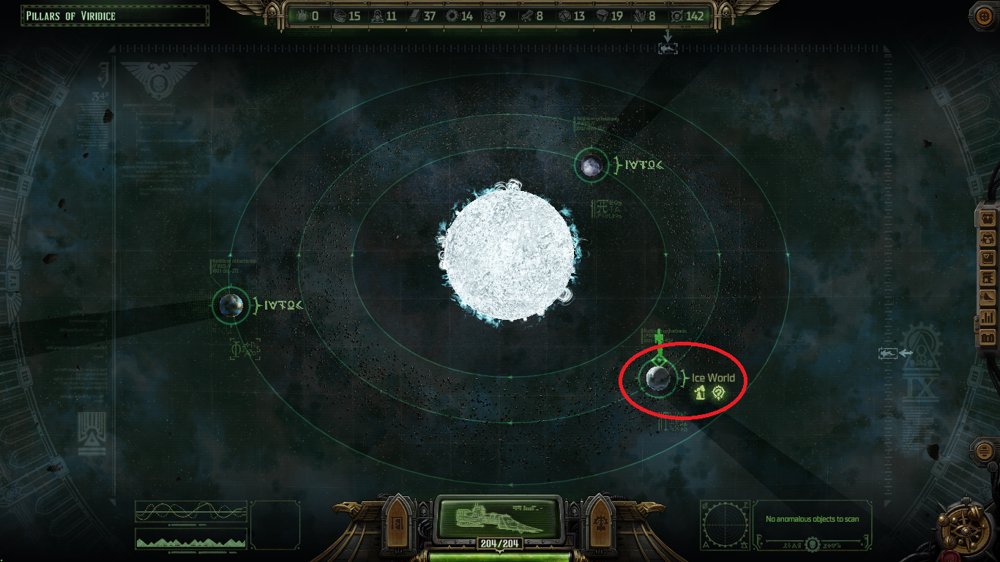
Summary
You notice the Interrogator freezing up in the shipwreck, clearly tormented by something.
Specifics
While exploring through the area, eventually Heinrix will make a comment while surveying the area. I have marked where the event occurs on the map below.
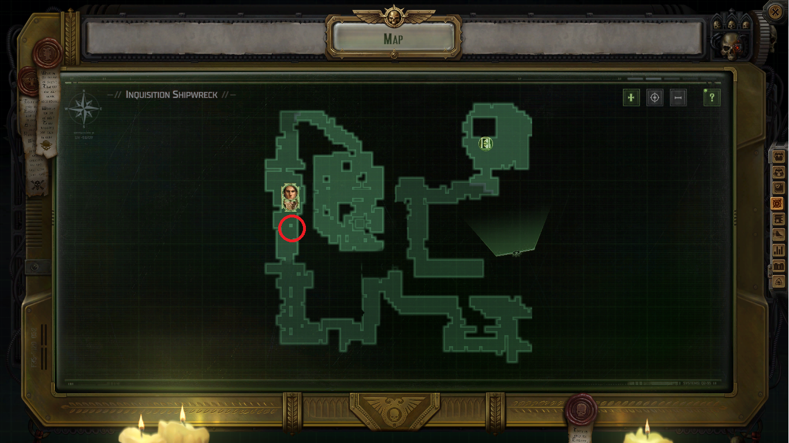
You have a few options to respond.
- 1. [Reach out for Heinrix's hand]
- 2. "Bad memories?"
- 3. "Is this the same ship that once transported you?"
- 4. "What do you think happened to the ship?"
- 5. "We should go."
Guidemaker chose option 1, which then lead to:
- 1. "I can see how hard it is for you to be here."
- 2. "I just wanted to be there for you."
- 3. "Forget it."
Guidemaker selected option 1, which then unlocks a new response.
- 1. “You do not always have to appear invincible. Especially around me.” [+1 Corruprion]
The conversation ends here.
Comments
If you feel like you can handle it, explore this location with just the RT and Heinrix for an adorable scene. Genuinely one of my favorites from his romance. And yes, the etude is misspelled(?) like that in game.
Main Quest - Blades in the Void | Automatically given after completing Main Quest - Spiders in a Jar.
While not directly involved in the quest, if you bring Heinrix to Vheabos VI, an etude will appear regarding him.
- 2. [Raise your weapon] "How about we skip the small talk and get down to business?" [Activates etude HeinrixHeardArchonsName]
This involves not immediately attacking the xenos.
The HeinrixHeardArchonsName etude changes the dialogue Marazhai has with Heinrix if he [Heinrix] is brought to both Vheabos VI + Grantis. Other than that, does nothing, but it is added for thoroughness. Thank you to am0rph0 for the info!
Main Quest - The Emperor and My Right | Automatically given after Main Quest - Blades in the Void
Summary
The Interrogator's nerves seem to be ruining the party atmosphere. You should check on him.
Specifics
Approach Heinrix in the main palace area and select the below option:
- 2. [Lean toward Heinrix] "Interesting conversation?"
You’ll whisper back and forth before being presented with another choice:
- 1. "Is something wrong?" [Activates etude Warning]
- 2. "Very well." [Activates etude Warning]
- 3. "I do not have time for you right now."
If you pick options 1-2, you’ll get yoinked to your study by the Interrogator, and notice that Heinrixs nerves seem to have gotten worse. Your next choices are:
- 1. "What has so alarmed you?" [+1 Closeness]
- 2. "It's funny- as soon as we find ourselves alone, you lose the power of speech." [+1 Devil]
- 3. [Remain silent]
Select what you’d like, and your next choices are:
- 1. "Be prepared? For what?"
- 2. "You are scaring me."
- 3. "Heinrix, you are talking in riddles. Explain exactly what you mean or I shall turn around and leave."
They all lead to the next set of choices:
- 1. [Kiss Heinrix] "Enough handwringing."
- 2. [Take Heinrix's hand] "I understand. Thank you for the warning." [+1 Devil]
- 3. "I have heard more than enough. I shall keep your words in mind."
- 4. "You're a coward, do you know that? Why did you drag me here if you weren't going to say anything of substance?"
Pick whatever option you’d like, but if you pick the best option and kiss him with option 1, you’ll have more choices to make.
- 1. [Pull Heinrix toward you] "No. No, don't go."
- 2. [Reach for Heinrix] "It's not as if you chose this.."
- 3. [Step back] "You're right. We should not have done that."
The conversation ends after those choices.
Planet Event - Interrogation Check Up | Occurs automatically after finishing the Lord Inquisitiors interrogation during Main Quest - The Emperor and My Right.
After your Interrogation with Xavier, of which there is a guide outlined here, Heinrix will ask if you understand why and what he needed to warn you of before. You have a few chances to respond.
- 1. "I understand. And I will not force you to choose between me and your duty."
- 2. "You did everything within your power to look out for me. That is what matters."
- 3. "I am angry with you right now. But I think it will pass by morning."
- 4. "No, I do not understand. And I cannot abide duplicity. You may be staying in my retinue, van Calox, but keep your distance from me henceforth." [Complete etude Heinrix] + [Ends romance]
Comments
I bawled at the breakup dialogue for Heinrix in this scene. I’ve transcribed it below so you can cry with me.
Heinrix stiffens, his face strained to the point that his cheekbones threaten to slice through his skin. “Understood, Lord Captain. Your will is absolute. Good night, [Name].” The Interrogator brusquely bows and makes his way to the door without looking back.
Pasqal
Personal Quest - False Information | Occurs if Pasqal is brought to Kiava Gamma.
Requirements
- Pasqal is brought to Kiava Gamma.
Exploring through Kiava Gamma will eventually result in bumping into a Tech-Priest named Dementz. You will also speak to the Fabricator-Censor who will inform you of Dementz's existence if Pasqal is in the party for that conversation. I have marked the specific location where the Dementz conversation triggers below.
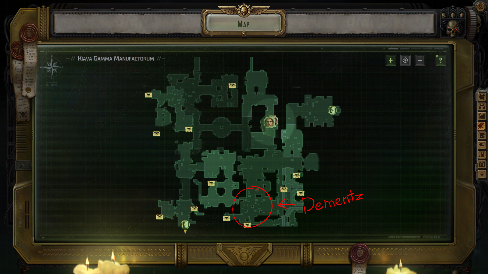
Your first options are:
- 1. "Identify yourself."
- 2. [Smile ominously] "You are a heretic, are you not?" [No new choices]
- 3. "Pasqal, do you have any preferences regarding the killing of your former tech-comrade?" [Only appears if Pasqal is in the party]
- 4. [Attack] "This conversation is finished." [Starts combat]
If you select “Identify yourself.” you will unlock new dialogue options:
- 1. "I am acquainted with Magos Haneumann, and something tells me that you two are not related." [Only appears if Pasqal is not in the party]
- 1. “I am giving you one chance to explain why you are using the name of another.” [Only appears if Pasqal is in the party]
- 1. "Are you the one who stole Magos Tarzus's personal code and made an attempt on his life?" [Only appears if you have had the dealt with the Bridge Event - Adeptus Delegation before this conversation]
Select “I am giving you one chance to explain why you are using the name of another.” unlock the new dialogue option:
- 1. "Fine, then. Show me your 'truth.'"
If you select “Fine, then. Show me your ‘truth’.” you next options will be:
- 1. "Pasqal, what is this mishmash of numbers?" [Only appears if Pasqal is in the party]
- 2. "Your calculations lack sense. They are riddled with errors."
- 3. "Your wisdom reeks of corruption." [Returns to this section]
- 4. "I do not understand your calculations. But I would like to, very much so." [Returns to this section]
If you select "Your calculations lack sense. They are riddled with errors." your next options will be:
- 1. “The warp. You used warp technology.” [Only appears if Pasqal is not in the party]
- 1. [Listen in silence]
- 2. "Silence, heretic. Your sermon ends here."
Selecting “Silence, heretic. Your sermon ends here.” returns you to these choices.
If you select "Pasqal, do you have any preferences regarding the killing of your former tech-comrade?" you will unlock a new set of choices:
- 1. "Does that not violate some protocol or other?" [No new choices]
- 2. [Attack] "Well, I, for one, am not willing to let him live."
- 3. "A wise decision, Pasqal."
- 4. "If you think it best."
Options 2-4 will result in a fight. Afterwards, Pasqal will pull data out of Dementzs head and your choices are:
- 1. "Do you intend to pull that thing out of his head? Revolting! What if it's contagious?" [Ends the event]
- 2. "I would advise against it. It may be dangerous." [Ends the event]
- 3. "A reasonable measure." [Ends the event]
- 4. "Indeed. Who knows what fascinating things he had in his head?" [Ends the event]
- 5. "Do whatever you deem necessary." [Ends the event]
If Pasqal is present for the Dementz confrontation, the etude Pasqal_DementzAugment will be activated automatically. If you did not bring Pasqal to Kiava Gamma, you can instead loot Dementz Augment off Dementz corpse and give it to Pasqal on the ship via going up to Pasqal and selecting the option:
- ?. [Give him Dementz’s neural augmetic] “This item belonged to the heretek known as Haneumann.”
Bridge Discussions - Broken Memory V.45135142026 | Conversation is available after finishing Personal Quest - False Information.
Requirements
- Personal Quest - False Information was started and finished.
Summary
The Lord Captain questions Pasqal about the state of Dementz neural augmetic.
Approach Pasqal and select the option:
- 1. "Have you studied Dementz's neural augmetic yet?"
Pass Perception +65 check to unlock the response:
- 1. “You’re lying.”
- 2. “Well. All right, then.” [Ends event]
Select option 1 to press Pasqal further.
- 1. "Have you found out anything?" [Activate etude Pasqal_BrokenMemory] + [No new choices]
- 2. "What corrupted Dementz?"
- 3. "Any information on Archmagos Amarnat?” [No new choices]
- 4. "Continue your research."
If you select “What corrupted Dementz?” you will unlock two new choices:
- 1. "But you did want to know what he knew. You were interested." [No new choices] + [Only appears if etude Pasqal_DementzAugment is playing]
- 4. "You fear knowledge even as you extol it."
If you select “Your fear knowledge even as you extol it.” you will continue the conversation:
- 1. "Your Omnissiah does not speak to you, so you wander about in the dark.
- Embrace the light of the Emperor, and the true God will show you which way damnation lies and which way grace lies." [+1 Loyal]
- 2. "Not all knowledge comes from the Omnissiah. Some is rooted in evil and
- is nothing but a threat to Humanity." [+1 Amarnath]
- 3. "I believe that any and all knowledge can be tamed for the glory of Humanity." [+1 Amarnath]
- 4. "You seek knowledge because it's what you enjoy doing. So do what you enjoy - otherwise, what's the point of living?" [+1 Ego]
- 5. "I would not presume to give you advice."
Select any option from 1-5 and the conversation will be over. Sometimes, you will get the option of selecting:
- ?. "Continue your research."
To end the event, but it appears to be random if you need to end the event that way.
Bridge Event - Adeptus Delegation | Automatically occurs just before landing on Dargonus.
Requirements
Summary
A delegation from the Priesthood of Mars wishes to dock upon your voidship.
Specifics
Your first choices are:
- 1. "What do they want?"
- 2. "Tell them to get lost and learn some manners."
- 3. "Punish them for their disrespect by letting them dock at the farthest and most dilapidated airlock so that it takes them an eternity to traverse the ship." [Activates etude PascalArest]
- 4. "Receive the delegation. They may indeed be here on important business." [Activates etude PascalArest]
And then:
- 1. "Who are you?" [No new choices]
- 2. [Tech-Use 60] [Study the two Priests of Mars] [No new choices]
- 3. "Glory to the Adeptus Mechanicus. I am ready to cooperate."
- 4. "Who dares to arrive on my ship uninvited? Asking for trouble, are you, cogs?"
- 5. "On what charge are you trying to arrest a member of my retinue?"
Select any option from 3-5 to continue the event, and then:
- 1. [Grimace] "Does the big fellow have to roar?"
- 2. [Point to the furious servant of the Omnissiah] "Do you have proof that this Tech-Priest is who he claims to be?" [No new choices]
- 3. "Wait a minute. What is happening on Kiava Gamma? That planet belongs to me." [Only appears if you HAVE NOT solved the issues on Kiava Gamma]
- 3. "How do you suppose Pasqal was involved in the events on Kiava Gamma?" [Only appears if you HAVE solved the issues on Kiava Gamma]
- 4. "What do you have to say to this, Pasqal?"
- 5. "I am not handing Pasqal over to you unless I see evidence. Let us get to the bottom of this together.”
- 6. "Get off my planet. Now. And if you ever try to arrest anyone in my domain again, you will regret it." [Starts a fight]
- 7. "Pasqal, I think you should go with these people." [Starts a fight]
If you select [Grimace] "Does the big fellow have to roar?" you’ll unlock a new choice:
- 1. "Are you saying this bloodthirsty hulk is... a saint?"
If you select "I am not handing Pasqal over to you unless I see evidence. Let us get to the bottom of this together.” you’ll move to the next set of choices:
- 1. [Address Opticon-22] "I think you and I should continue the discussion in private. The big chap is creating friction." [No new choices]
- 2. [Lore (Imperium) 45] "I insist on a joint investigation. Arresting a Rogue Trader's retinue member without any justification stands in breach of the law and my privileges under the Warrant of Trade." [Starts a fight]
- 3. [Persuasion 45] "Pasqal has accompanied me on my travels for a while now, and I can swear to it that he is no criminal." [Only appears if you HAVE NOT solved the issues on Kiava Gamma]
- 3. "I have been to Kiava Gamma, and I can assure you Pasqal has nothing to do with it." [Only appears if you HAVE solved the issues on Kiava Gamma]
- 4. "Get off my planet. Now. And if you ever try to arrest anyone in my domain again, you will regret it." [Starts a fight]
- 5. "Pasqal, I think you should go with these people." [Starts a fight]
Select whatever you want, a fight starts regardless. Defeat Tarzus and his allies, and your next choices are:
- 1. [Point to Tarzus] "Help your brother." [No new choices]
- 2. "Pasqal, what have you done to Tarzus?" [No new choices]
- 3. "I am sorry that you had to kill a comrade." [Activates etude TarzusimplantLooted]
- 4. "I am not tired at all. In fact, I can finish you off too. Do your worst!” [Activates etude TarzusimplantLooted]
Options 3-4 continue the conversation, and then:
- 1. "Ah... Pasqal?"
- 2. [Whisper] "Whatever you just did, it's working. Keep going."
- 3. [Listen in silence]
Any of the options will continue the conversation, and then:
- 1. "Pasqal, there is one small point I'm not clear on - what just happened?" [No new choices]
- 2. "What was the reason for that act of genuflection?"
- 3. "Now that the conflict has been resolved, you may remain aboard my ship." [Ends the event]
- 4. "Clear off. Or I will spill yet more blood and sacred unguents." [Ends the event]
If you select "What was the reason for that act of genuflection?" you’ll unlock a new set of choices:
- 1. "The Messiah of Discontinuing? Is that how you refer to Amarnat?" [No new choices]
- 2. "Is Amarnat's teaching not heretical?" [No new choices]
- 3. "Do you know where Amarnat is now?" [No new choices]
- 4. "Were you among his followers?" [No new choices]
- 5. "I presume the conflict between you and Pasqal has been resolved?" [Returns to this section]
There are no increment changes available during this quest, but it has been cataloged here for the thoroughness of the guide.
Bridge Discussions - Broken Memory V.20118262119 | Conversation is available after finishing Bridge Event - Adeptus Delegation. Occurs immediately after you engage Pasqal in conversation.
Requirements
Summary
Pasqal opens up about his mentor, and his views on religion somewhat, to you.
- 1. "Have you found anything out?" [Activate etude Pasqal_BrokenMemory]
- 2. "Are you not surprised that Amarnat's words had such an effect on Opticon-22?"
- 3. "Perhaps you will be able to find out more."
If you select “Have you found anything out?” you will unlock a new option:
- 1. “He gave off the impression of a paranoid madman.”
If you select “He gave off the impression of a paranoid madman.” you will unlock a new option:
- 1. “Who do you think was behind the assassination?”
If you select “Who do you think was behind the assassination?” you will unlock a new option:
- ?. “Has it ever occurred to you that all these events may be part of Amarnat’s plan?”
If you select "Are you not surprised that Amarnat's words had such an effect on Opticon-22?" you will unlock a new option:
- 2. “Amarnat was a believer, and he caused a schism. Tarsus was a believer, and he turned into a zealot… Faith can be dangerous.”
Selecting the above option will finally open up a chance to gain increment values.
- 1. "Did Amarnat believe the elders to be in error?" [No new choices]
- 2. "Only a fool would find no flaw in the Creed, but true faith lies in not looking for flaws." [+1 Loyal]
- 3. "My faith is more than a mere set of rules. It consists of ideals, which sometimes come into conflict with dogma. And I have been given the gift of will to set the dogma straight." [+1 Amarnath]
- 4. "I prefer to believe in myself and my own ability to decide independently what is right." [+1 Ego]
- 5. "Faith is just the shackles of obedience. It is good for controlling my subordinates, but not good enough to control me." [+1 Ego]
- 6. "I am not ready for a religious debate."
Whatever you decide, the conversation is over. Sometimes you will have to end the discussion via selecting:
- ?. "Perhaps you will be able to find out more."
Cassia
Personal Quest - Stranger Among Her Own | Occurs after several Warp Jumps.
Requirements
Summary
The Vox Master will ask the Lord Commander to speak to Cassia after numerous reports of conflict between the Lady Navigator and other crew members. Speak to Cassia to understand the situation, and she will beg you to talk in your study.
Specifics
You can speak with Abelard and Jae about Cassia, which will activate etudes AbelarComplainAboutNavi and JaeComplainAboutNavi respectively. These etudes activate two new dialogue choices in the conversation.
Jae Etude
Speak to Jae on the bridge and select the below option:
- 1. "l heard you had a falling out with Cassia? You even threatened to kill her."
Abelard Etude
Speak to Abelard on the bridge and select the below option:
- "l hear you and Cassia exchanged words recently. What happened?"
I also recommend exhausting all dialogue options with Cassia in the study, as it paints a greater picture of her very unique views on her conversations with everyone. You will then be given various options to respond, some of which will lead to another conversation with increment changes.
To actually start the event, approach Cassia on the bridge and select:
- 1. "I have heard rumours that you are not getting along well with the crew."
And then:
- 1. "Let us go to my study — no one will disturb us there."
- 2. "Forget I mentioned it. I shouldn't have brought it up."
I have marked which ones I selected that lead to increment changes, and encourage messaging me on Reddit at u/wintertile if you have proof and transcription of what the other choices do.
Once you go to the study, your first choices are:
- 1. "You have been wilfully changing entries in the ship's logbook and forbidding officers from reporting it to Abelard." [Only appears if etude AbelarComplainAboutNavi status is active]
- 2. "You must have had quite the falling-out with Jae if she is threatening to kill you." [Only appears if etude JaeComplainAboutNavi status is active]
- 3. "The messenger you rebuked butchered his own family and then killed himself."
- 4. "During the warp voyage you gave the wrong orders, which led to the vessel shifting off course and the service bay being destroyed."
- 5. "The officers are reluctant to be quartered next to your chambers because of the constant emotional outbursts it causes them. Some even maim themselves and others."
- 6. "Would you mind telling me why you needed one hundred species of bird and what you used them for?"
After you select three of the above options, you’ll unlock a new choice:
- ?. “I think I have heard enough.”
And then:
- 1. "My crew has good reason to fear you - you truly are a monster. From now on I forbid you to leave your chambers unless absolutely necessary."
- 2. “You have a kind soul but have difficulty reaching out to people. I could teach you the art of communication, if you like.”
- 3. "You have done terrible things, but I would not presume to lecture a person of noble blood."
- 4. "Woes dog your steps, but we will find a way to defeat them. I promise."
- 5. “Everyone who has dared to slander you will be punished. There is nothing reprehensible about your actions.”
Pick anything you would like, as they all lead to the next set of choices:
- 1. "What would you like to ask?"
- 2. "I never promised I would give you an answer. Let's end it at that." [+1 Hatred] + [Ends the event]
The next few conversations lead to checks of various degrees of difficulty. I have listed the difficulty modifiers below.
- 1. [Lore (Imperium): Succeeded] “Your interpretation of this classical text is not entirely correct. If the subjects have grown accustomed to the ruling house, all the sovereign must do is refrain from breaching longstanding traditions. Adjust unwanted laws as gradually and you shift the bed of a flooded river, and no one will ever take your power from you.” [Only appears if you pass a Passive +15 Lore (Imperium) check]
- 2. [Commerce: Succeeded] “On the contrary, the loyalty of the subjects can be bought at a pittance - lower a tax, throw them a festival, or feed the needy - a gracious gesture once every cycle will exalt you in the eyes of the rabble as if it were His own blessing.” [Only appears if you pass a Passive +15 Commerce check]
- 3. [Persuasion -15] “Oh, it has always been my opinion that subjects expect two things from their sovereign - to abuse power and to bless their babies. Succeed at both, and the boring essays become unnecessary.”
- 4. “Forgive my temerity, Lady Cassia. I was looking into your eyes and completely forgot your question.” [Only appears if PC is male]
- 5. “I am afraid I do not have an answer - I am not familiar with the works of this… scholar.”
Any of the options will move the conversation along to the next set of choices:
- 1. [Coercion [-15] "I am not afraid of acquiring a reputation for ruthlessness. I would rather crush a rebellion than condone one - is that not the greater mercy, in the end?"
- 2. [Persuasion [-15] "I will exercise restraint and lenience in my actions. Excessive suspicion and mistrust harden the hearts of the people and turn them against each other."
- 3. [Fellowship -50] "One must be a tyrant, a friend, and a jester to one's subjects. What matters is that to clearly discern which role is required at a given moment."
- 4. “I beg your pardon, Oystach who? Is reading your only pastime?” [Ends the event?]
- 5. “I never promised I would give you an answer. Let’s end it at that” [+1 Hatred] + [Ends the event]
Select any option from 1-3, as even if you fail you move the conversation along to the next set of choices:
- 1. “Please, do continue.”
- 2. “Enough talk, Lady Cassia! You have pushed me to my limit. Dismissed” [+1 Hatred] + [Ends the event]
Select “Please, do continue.” to finally get your first increment changes:
- 1. "It is not always easy, but I try to lead the dynasty toward prosperity by worthy means." [+1 Freedom] + [Ends the event]
- 2. "It is my duty whether I like it or not." [+1 NotMe] [Ends the event]
- 3. “This inner turmoil is clouding your mind. My protectorate, my subjects, my title are mere resources that I am using solely for my own ends.” [+1 Hatred] [Ends the event]
Study Event - Warp Report | Occurs two~ warp jumps after completing one of the three main Act 2 planets (Dargonus, Kiava Gamma, Janus) in full.
Requirements
- Cassias romance is active.
Summary
The Vox Master will inform you that after making the warp jump, Lady Cassia headed towards your study. Meet with her to have a conversation..
Specifics
Your first choices are:
- 1. "Thank you for the report, but I had already noticed for myself that the ship was intact. Unless, of course, the last few hours of my life have all been a cunning trick of the warp."
- 2. "I never doubted your abilities as a Navigator, Lady Cassia. My crew is fortunate to have you."
- 3. "What reaction are you expecting from me? Ensuring the safety of passage through the warp is your primary responsibility."
- 4. "I beg your pardon, Lady Navigator, but I am preoccupied with matters of
- the protectorate let us have this conversation another time" [+1 Insulted]
Select options 1 - 3 to proceed to the next set of choices.
- 1. "I did take note of the unique elegance of your works back on Eurac V. I am certain your latest piece will be just as breathtaking."
- 2. "My quarters do indeed sorely lack exquisite finery. Might I hope that your painting will soon adorn these walls?"
- 3. "So you can picture beauteous imagery in your mind. I see. Was there anything else?"
- 4. "Lady Navigator, do you not have other duties to attend to?" [+1 Insulted]
Select options 1 - 3 to proceed to the next set of choices.
- 1. "You do not need to prove your worth to me, Cassia. With each passing day, I learn about new sides of you, and you amaze me every time." [Ends the event]
- 2. [Step closer] "You have been blessed with many talents. Would you like to stay here and demonstrate some of them?" [+1 Insulted] + [Ends the event]
- 3. "Yes, right... I see. Thank you, Cassia." [Ends the event]
- 4. "Cassia, I truly do not understand... What is it you want from me?" [Ends the event]
- 5. "I grow tired of this conversation - and your importunate behaviour. Kindly leave.” [+1 Insulted] + [Ends the event]
Study Event - Handkerchief | Occurs 2-3 warps after Study Event - Warp Report.
Requirements
- Cassias romance is active.
- Study Event - Warp Report was finished.
Summary
The Vox Master will inform you that after making the warp jump, Lady Cassia headed towards your study. Meet with her to have a conversation.
Specifics
Your first choices will be:
- 1. "I am 'Lord Captain' once again, I see. Surely you know that you may call me by my name?" [No new choices]
- 2. "I will admit I am intrigued. What is this personal matter?"
- 3. "I must apologise, but I am indeed quite busy at present." [+1 Insulted]
Select option 2 if you would like to continue the romance, and you will then roll a Passive +65 Perception check, which if passed shows that Cassia is testing the RT. Your options are then:
- 1. "A tome? That's why you are distracting me from my duties - because of some long-dead saint?" [+1 Insulted]
- 2. [Ignore the handkercher] "Ah, I see. Why, certainly - you are welcome to peruse my library at any time." [+1 Insulted]
- 3. [Pick up the handkercher] "Here, you dropped this."
- 4. [Pick up the handkercher, bring it to your lips, then return it to Cassia] [+1 AmourCourtois]
And then:
- 1. "But what about the book?" [Ends the event]
- 2. "I could escort you!" [Ends the event]
- 3. [Nod in understanding] [Ends the event]
Study Event - Lavandulum Quaddis | Occurred three warp jumps after Study Event - Handkerchief.
Requirements
- Cassias romance is active.
- Study Event - Warp Report was finished.
- Study Event - Handkerchief was finished.
Summary
You will be philosophically musing in your study when a timid knock interrupts your thoughts.
Cassias valet will deliver a gift to you on her behalf: a transparent dome with a living flower inside. Your first choices are:
- 1. "What is the meaning of this?" [No new choices]
- 2. [Intelligence 25] [Examine the dome with the plant inside] [Activates etude RTKnowsCass] + [Activates etude RTKnowsImmortalium] + [Ends the event]
The event does tell you at the very end how to proceed with Cassias romance: either by speaking to her privately or arranging a gift with High Factotum Janris.
The gift option is mandatory for earning her True romance ending.
Go speak to Janris and select:
- 1. "I have been given an immortalium, and I need help to arrange a reciprocal gift." [Only appears if you passed the previous Intelligence check]
If you did not pass the previous Intelligence check, instead pick:
- 1. "I received an unusual gift — a living flower sealed in a crystal dome. Does it mean anything to you?"
Janris will then inform you it’s part of an elaborate courtship between aristocrats, and your next options will be:
- 1. "One of Lady Cassia's servants delivered it to my chambers." [Only appears if etude RTKnowsCass is active]
- 2. "I am not fully certain, but I can make an educated guess." [Only appears if etude RTKnowsCass is not active]
- 3. "I was hoping you would be the one to help me make sense of this."
- 4. "No, you may not. Tell me what it means right now."
Either way, you will then be allowed to pick a gift with the options below:
- 1. "How do you know who I'm doing all this for?"
- 2. "Send a chest of treasures from distant worlds." [Activates etude TreasuresGift] [Activates etude Timer_LoveFavour_Extra_ktc]
- 3. "Find the most exquisite perfume in the Calixis Sector." [Activates etude PerfumeGift] + [Activates etude Timer_LoveFavour_Extra_ktc]
- 4. "Provide the Sanctum Navis with a singularly superior library." [+1 AmourCourtois] + [Activates etude LibraryGift] + [Activates etude Timer_LoveFavour_Extra_ktc]
- 5. "Send an embroidery loom. Ladies like that sort of thing." [+1 Insulted] + [Activates etude EmbroidryGift] + [Activates etude Timer_LoveFavour_Extra_ktc]
- 6. "Truth be told, I know little of gifts. Do you have any ideas?"
- 7. "I have changed my mind. Expressing my gratitude in a personal conversation will be enough."
- 8. "I shall return when I think of something."
Pick the library.
Library Gift
Cassia will be overjoyed with her new library, and congratulate you on playing the courtship game with her. Your first choices will be:
- 1. "When I am with you, Lady Cassia, I become heedless, ready to take on any rituals or trials. Will you... accept my feelings?"
- 2. "The symbolic gestures of the nobility remain a mystery to me, but there is one thing I know for certain: I want to grow closer to you."
- 3. "Before I met you, I had never thought that I would find myself engaged in something of this sort. Will you permit me... to touch your hand?"
- 4. "It was amusing, but no more than that. I have had enough of these games." [Activates etude CassiaRomanceFailed] + [Fails the romance]
And then:
- 1. [Kiss her hand] "I did not dare hope."
- 2. [Cover Cassia's hand with your own] "If someone had told me that one day I would take leave of my senses like this, I never would have believed it."
- 3. [Tenderly squeeze her outstretched hand] "At last, we have become a little bit closer."
- 4. [Politely draw back] "Some treasures should not be touched, even by those who most covet them, my lady."
Pick whatever you’d like, and the event is over.
Talking to Cassia on the Bridge
Approach Cassia on the bridge and select the option.
- 1. “Why don’t we talk about gifts? If you’re not opposed, of course.”
You can then exhaust options 1-2, however the guidemaker went in order of 2 -> 1. Option 1 might immediately move the conversation along. (Needs testing)
Either way, once Cassia asks if you have enjoyed this little game, you will be presented with options to respond.
- 1. "I suppose I shall take my leave of you for a time."
- 2. "Lady Cassia, being near you has made me reckless. And thus I ask you to accept my ardent feeling as a gift equal to yours." [Activates etude CassiaHandKiss]
- 3. "As tradition requires, I hereby resolutely declare my acceptance of your friendship." [Activates etude CassiaRomanceFailed]
- 4. "No more games, Cassia. I reject your immortalium." [Activates etude CassiaRomanceFailed]
Guidemaker selected option 2, and was presented with the next set of choices.
- 1. [Kiss her hand] "I did not dare hope."
- 2. [Cover Cassia's hand with your own] "If someone had told me that one day I would take leave of my senses like this, I never would have believed it."
- 3. [Tenderly squeeze her outstretched hand] "At last, we have become a little bit closer."
- 4. [Politely draw back] "Some treasures should not be touched, even by those who most covet them, my lady."
Guidemaker selected option 1, and the conversation ended.
Warp Event - Psycho-Emotional Coding | Occurs after starting Main Quest - Blades in the Void, approximately two Warp Jumps to random planets.
House Orsellio will contact you, concerned about the fate of Lady Cassia. You have a few ways to respond.
- 1. "Tell House Orsellio that Cassia is safe and that the Rogue Trader would be honoured to meet in person." [Activates etude OrsellioArrange] + [Activates etude NaviCooperation]
- 2. "Order the Astropaths to send the following: Cassia Orsellio perished at the hands of the rebel Navigators of her own House." [Activates etude HouseOrsellioTricked]
- 3. "Tell Regent Aaronto that the Rogue Trader does not know anyone named Cassia." [Activates etude HouseOrsellioTricked]
- 4. “Ignore it. I have no obligation to answer anyone’s requests.” [Activates etude HouseOrsellioTricked]
Guidemaker selected option 1, and the event ended.
Planet Event - Beach Date | Occurs as soon as Cassia is brought to Janus for the first time. Credit to u/AudienceConfident378 for informing me of the events existence.
Requirements
- Cassias romance is active.
Summary
Cassia wants to play in the water.
Specifics
After reaching a specific part of the map on Janus with Cassia in the party (circled below) she will ask to steal you away for a moment to look at the water. Take her down there and your first options will be:
- 1. [Pick a nearby flower and give it to Cassia] "Here is your chance to take a small piece of this place with you." [No new choices]
- 2 [Move closer to Cassia and silently take in the view] [No new choices]
- 3. "In that case, I imagine you have never set foot in sea waters before. Would you like to try?"
- 4. "It is time we were on our way." [Ends the event]
If you select “"In that case, I imagine you have never set foot in sea waters before. Would you like to try?"” your next options will be:
- 1. [Offer her your hand] "There is nothing to fear. We shall just let our feet soak a little."
- 2. "Forget what I said. It is not such a good idea after all." [Ends the event]
And then:
- 1. "It is time we were on our way." [Ends the event]
NOTE: There are no increment changes available, but this was added to ensure thoroughness.
Personal Quest - Duty of the Navis Nobilite | Automatically added to your journal after Warp Event - Psycho-Emotional Coding.
Requirements
- Having etude OrsellioArrange active.
- Having etude NaviCooperation active.
Summary
Representatives of House Orsellio have requested a personal meeting with Cassia and the Rogue Trader, in order to discuss various issues from the Rogue Trader and Cassias cooperation.
Specifics
The first order of business is returning to Palace von Valancius, which is located on Dargonus, in the Mundus Valancius galaxy. I have included a screenshot showing where the galaxy is located, and which galaxies are nearby it.
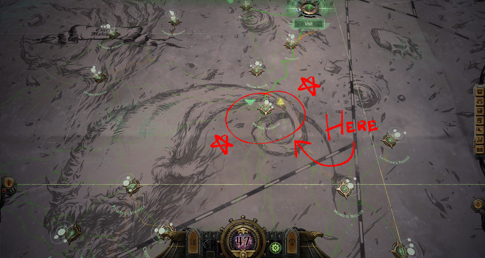
You’ll need to find Clementia Werserian On Dargonus, in the Von Valancius Palace in order to progress this quest for Cassia. I’ve included a screenshot showing where Clementia Werserian is, and where she’s located on the map below.
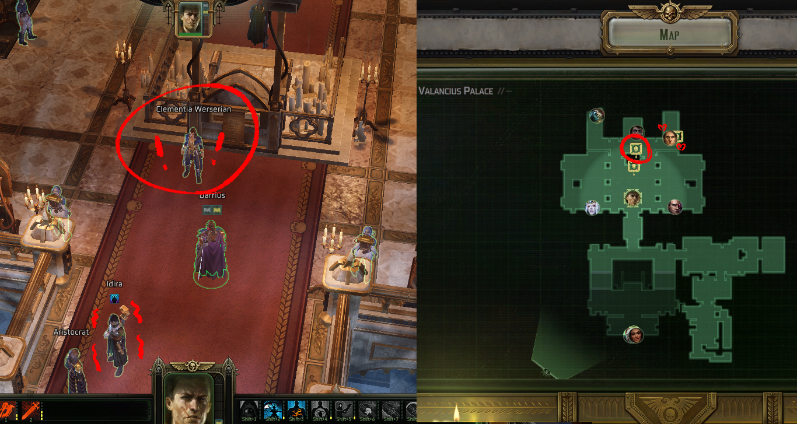
Anyway, go up to Clementia and select the below option:
- 1. "What about the meeting with Navigators of House Orsellio?"
Then you’ll get another set of options:
- "Make arrangements for a reception worthy of the refined tastes of the Navis Nobilite." [-1 Total Profit Factor]
- 2. "A meeting with the Navigators is just a formality. No need for any extravagant receptions."
And then:
- 1. "Yes, Cassia and I are ready for the talks."
You’ll then be pulled into a party selection screen, with the only mandatory member being Cassia. After a few cutscenes, you’ll finally be presented with some options with increment increases.
- 1. [Nod wordlessly] [+1 Freedom]
- 2. "As long as the Lady Navigator remains under my protection, I will speak on her behalf." [+1 NotMe]
And then:
- 1. "I dare not refuse the will of House Orsellio's regent."
- 2. "Cassia, I would be honoured if you decided to stay."
The next choice doesn’t matter, as the same scene will play regardless of your choice, and you’ll get pulled into a fight. Defeat the enemies, and, as of the 1.3 update, you will walk up to Lady Navigator Elina and can speak to her.
- 1. "I sentence you to death for your crimes against a Rogue Trader and Lady Navigator Cassia. Any last words?" [Activates etude RadicalLeaderExecuted]
- 2. "Your fate will be decided during the trial, Lady Elina. I will hear what you wish to tell me." [Activates etude RadicalLeaderTrapped]
Option 1 results in, obviously, killing the Radical Navigator. If you elect to kill Lady Elina right away, you will still be able to question the Regent as outlined in this section.
It is recommended that you proceed with the trial via option 2, as outlined below, and interrogate both the Regent and Lady Elina to ensure you activate any and all etudes, as well as potentially gain an increment change.
Option 2 results in beginning a trial for the radical Navigator, which allows for interrogations of both the Regent and Lady Elina. If you’ve selected that option, the first choices you’ll get are:
- 1. "Regent Aaronto, representatives of your House made an attempt on Lady Cassia's life and attacked a Rogue Trader."
- 2. "Lady Elina, what do you have to say in your defence?"
- 3. "I am not interested in your pathetic excuses. Wardens! Get the House Orsellio delegation out of my palace and off my world!"
- 4. [Execute them] "Enough! I have no desire to listen to anyone. The punishment will befall each member of House Orsellio here and now." [Activates etude ExecuteAllNavi] + [Activates RadicalLeaderExecuted] + [Activates etude NaviRegentExecuted]
Guidemaker selected option 1, which then options up another set of choices.
- 1. "Be that as it may, you are responsible for the actions of your people. Give me one good reason not to execute you on the spot."
- 2. "Come now, Regent. You proved your innocence."
- 3. "How do I know your words are not just another trap?"
- 4. "I believe you, Regent Aaronto. And yet this is now the second attempt that has been made on Cassia's life. I need answers."
Pick whichever choice you would like, as they all just lead to the same choices and questions.
Regent Interrogation
- 1. "Tell me more about the renegades."
- 2. "Why are people trying to kill Lady Cassia?" [Activates etude CassiaStarwayAtlasRevealed]
- 3. "What do you know about Cassia's unbridled power?" [No new choices]
- 4. “I think I have heard enough.”
Selecting the option "Tell me more about the renegades." results in another choice being unlocked:
- 2. “Why do the renegades seek to destroy the House’s relic?”
Selecting the option "Why are people trying to kill Lady Cassia?" results in two more choices being unlocked:
- 4. “Does Cassia really carry Tisiphone’s Atlas?”
- 5. “It looks like House Orsellio has fallen on hard times.”
Guidemaker recommends exhausting all possible dialogue options, before selecting “I think I have heard enough.”
After that, you can then question Lady Elina with the below option:
- 2. "Lady Elina, what do you have to say in your defence?"
You’ll then be presented with more choices:
Lady Elina Interrogation
- 1. "What else is Tisiphone Orsellio guilty of?"
- 2. "I understand Tisiphone's transgressions. But what does any of that have to do with Lady Cassia?" [Activates etude CassiaStarwayAtlasRevealed]
- 3. "Why didn't you attack before? Why now?
Selecting “"I understand Tisiphone's transgressions. But what does any of that have to do with Lady Cassia?"” unlocks another choice:
- 3. “You called Cassia a monster because of Tisiphone’s Atlas?”
Selecting the option “Why didn’t you attack before? Why now?” unlocks another choice.
- 1. "So you admit Regent Aaronto was not aware of the assassination attempt?
After exhausting all dialogue options and ending the interrogation of Lady Navigator Elina with “I think I have heard enough.” you will have unlocked a new option in the main conversation tree.
- 3. "Lady Cassia, you too are an injured party in this. What would you do in my place?”
If you select “"Lady Cassia, you too are an injured party in this. What would you do in my place?"” your next options will be:
- 1. "What are you going to do to Lady Elina? [No new choices]
- 2. "l accept your offer, Lady Cassia." [+1 Freedom]
- 3 "Lady Cassia, who told you that you were needed aboard my ship?" [+1 Hatred]
- 4. "Thank you for your input, Lady Cassia. I will consider whether I should accept your offer."
If you select “"l accept your offer, Lady Cassia."” everyone will leave peacefully, and the part of the event on Dargonus will end.
Alternatively, you can select:
- 4. “I am ready to deliver my judgment.”
Then, you’ll actually be able to judge Lady Navigator Elina with the below options:
- 1. "I hereby dismiss all charges against Lady Elina-Hatteria." [Add Item BlueprintItemEquipmentHead: NavigatorsMonocle to player]
- 2. "I find Lady Elina-Hatteria guilty of the attempted murder of Lady Cassia and the attack on the Rogue Trader." [Activates RadicalLeaderExecuted]
- 3. "I find both sides of House of Orsellio guilty and hereby sentence you to death." [Activates etude ExecuteAllNavi] + [Activates RadicalLeaderExecuted] + [Activates etude NaviRegentExecuted]
Selecting option 1 “I hereby dismiss all charges against Lady Elina-Hatteria.” will get you an item, but you will then have to make another set of choices in the Dismissed Charges Choice Menu.
Dismissed Charges Choice Menu
- 1. “House Orsellio must be purged. I am surrendering Cassia to Lady Elina’s custody.” [Activates etude ExecuteAllNavi]
- 2. “Lady Elina and her men are free to depart Dargonus as they wish.” [Radicals leave peacefully]
- 3. “I will help Lady Elina to fight the tyranny of House Orsellio, but Cassia will live.” [Activates etude NaviRegentExecuted] + [Radicals leave peacefully]
Selecting option 2 “I find Lady Elina-Hatteria guilty of the attempted murder of Lady Cassia and the attack on the Rogue Trader.” in the linked section will also present a set of options, but moreso for how you would like to punish Lady Elina.
- 1. "I sentence Lady Elina to two thousand years' imprisonment in the dungeon of the von Valancius dynasty."
- 2. "Lady Elina will be the first Navigator to be transformed into a servitor."
- 3. "Lady Elina will make a remarkable servo-skull."
- 4. "Lady Cassia, I ask you to do your duty as the custodian of the Atlas of House Orsellio."
- 5. "Lady Elina will be publicly executed - I will personally carry out the sentence."
If you decide to execute Lady Elina, Cassia will ask what will become of the Regent and the other members of her house.
- 1. "I hereby dismiss all charges against Regent Aaronto."
- 2. "I hereby proclaim Regent Aaronto Orsellio guilty of what happened."
Selecting option 1. "I hereby dismiss all charges against Regent Aaronto." will open another set of choices:
- 1. "Let us sign a treaty of friendship and alliance between our dynasties." [Add navigator resource] + [Activates etude OrsellioVonValanciusFriendship]
- 2. "I wish to help House Orsellio solve their current problems."
- 3. "What about an exchange of culture and technology?"
- 4. "I would like to discuss the Lady Navigator's future now." [Opens another set of choices]
You can exhaust dialogue options 1-3, but selecting option 4 will result in another set of choices.
- 1. [Persuasion -15] "There are traitors in your midst. Would the Lady Navigator not be safer under my protection?" [Does convince the Regent] + [Ends event]
- 2. "Under the Expanse law, the payment for rescuing the Lady Navigator was a contract obliging her to serve on my ship." [Does not convince the Regent]
- 3. "Cassia has no need of your tutelage. As the future Novator, she will handle the issues her House is facing on her own." [Prompts another choice]
- 4. "I will give my consent if I am furnished with another Navigator. Otherwise, Cassia will remain until her contract expires." [Activates etude CassiaGoneHome]
- 5. "I graciously acquiesce." [Activates etude CassiaGoneHome]
- 6. [Coercion -15] "I will personally decide when the Lady Navigator leaves
- my crew. If you object, we can settle the dispute with a duel." [Completes etude OrsellioVonValanciusFriendship] + Activates etude NaviRegentExecuted]
Selecting option “2. "I hereby proclaim Regent Aaronto Orsellio guilty of what happened.” will also open another set of choices:
- 1. "Cassia has no need of your tutelage. As the future Novator, she will handle the issues her House is facing on her own." [Prompts another choice]
- 2. "I could forget about what happened if House Orsellio publicly proclaimed an alliance between our dynasties." [Activates etude OrsellioVonValanciusFriendship]
- 3. "Henceforth, representatives of House Orsellio are forbidden to navigate ships within the limits of the von Valancius protectorate."
- 4. "Share information about the influential persons your House is working with, and I will turn a blind eye to what happened."
- 5. "I no longer wish to do business with House Orsellio. Take Cassia and get off my world." [Activates etude CassiaGoneHome]
- 6. "I hereby sentence your delegation to death - let this be a lesson to all in House Orsellio." [Activates etude NaviRegentExecuted]
If you select “Cassia has no need of your tutelage. As the future Novator, she will handle the issues her House is facing on her own.” you will actually have another chance to get an increment change.
- 1. "Is this not what your years of training were preparing you for? Now is the time to make your own decisions." [+1 Freedom]
- 2. "Of course, you cannot do it alone. But if you listen to my instructions, everything will be fine." [+1 NotMe]
However you decide to go about the trials/executions, as long as you didn’t either kill Cassia or send her home, she requests to speak to you on the bridge about said events.
Approach Cassia on the bridge, and she will begin the conversation about the trial/execution automatically.
If you have the etude CassiaFreedom active
- 1. “Why don’t we talk about something else?”
If you have the etude NaviRegentExecuted active
- 1. “I hope you understand why I had the Great Regent executed.”
If you have the etude RadicalLeaderExecuted active
- 1. "I hope you're feeling a little safer now that Elina Orsellio has been executed."
If you have the etude ExecuteAllNavi active
- 1. “I hope you understand why I had your House’s delegation executed.”
After this conversation with Cassia, this quest and event will finally be over.
Bridge Discussions - Star Atlas | Can occur after Personal Quest - Duty of the Navis Nobilite.
Requirements
- Having the etude CassiaStarwayAtlasRevealed active.
Summary
The Rogue Trader questions Cassia on why she hasn’t brought up the Starway Atlas before.
Specifics
If you activated the etude CassiaStarwayAtlasRevealed during Personal Quest - The Duty of the Navis Nobilite, you can approach Lady Cassia afterwards on the bridge and select the option below to ask her about the Atlas.
- 1. "You did not mention the Starway Atlas when we met."
Afterwards, Cassia explains a bit about the Atlas, and you have some options to respond.
- 1. "So the Atlas is some kind of crystal that is implanted in the Navigators of House Orsellio at birth?" [No new choices]
- 2. "Certain Navigators in your House fear the Atlas's powers." [No new choices]
- 3. "You said you wouldn't share your secret with just anyone. Does that mean that I am someone to you?" [No new choices]
- 4. "Thank you for telling me." [Ends the event]
Comments
No increment or etudes are activated in this conversation, but it has been added to the guide to ensure thoroughness.
Jae
- Recruitment?
Found on Footfall during Main Quest - Tattered Spirit. After your first visit to the Liege’s palace, you will have a short cutscene featuring Jae. You will then receive her first Personal Quest - Persona Non Grata.
To actually locate Jae, head to the Shadow Quarters and make a beeline for the very back of the map, across a bridge to find the bar she’s drinking her sorrows away at. Enter the main bar area, and head to the right to trigger a cutscene with Jae. After the cutscene, your first options will be:
- 1. "Call me [PLAYER NAME]."
- 2. "Rogue Trader [PLAYER NAME] von Valancius." [Only appears if etude PlayerAnnouncedTheodoraDead is active] + [Activates etude JaeKnowsWeAreRT]
- 3. "l am [PLAYER NAME], trade envoy of House von Valancius." [Only appears if etude PlayerEntersFootfallIncognito is active]
Any option will lead to the next set of choices:
- 1. "What do you need help with?"
- 2. "What kind of cargo was stolen from you?" [Activates etude RTKnowsAboutJaeCargo]
- 3. "I'm not interested." [Fails the quest] + [Jae is not recruitable]
If you select "What do you need help with?" your next options will be:
- 1. "l suspect that Vladaym wants to keep the cargo out of your hands. And I want to put him in his place." [Activates etude Jae_WarehouseMark] + [Ends conversation]
- 2. "If the Liege is neglecting his duties, I shall become your patron." [Activates etude Jae_WarehouseMark] + [Ends conversation]
- 3. "I'm not interested." [Fails the quest] + [Jae is not recruitable]
- 4. "l wish to ask you a few questions before I decide."
If you select "l wish to ask you a few questions before I decide." your options will be:
- 1. "What kind of cargo was stolen from you?" [Activates etude RTKnowsAboutJaeCargo]
- 2 "What can you offer in terms of payment?"
- 3. "All right, I'll help you." [Activates etude Jae_WarehouseMark] + [Ends conversation]
- 4. "I'm not interested." [Fails the quest] + [Jae is not recruitable]
If you select "What kind of cargo was stolen from you?" your next options will be:
- 1. "Are you asking an upstanding citizen to be party to the trafficking of xeno-artefacts?" [No new choices]
- 2. "What can you offer in terms of payment?"
- 3. "l should have you executed on the spot for such a suggestion! Your cargo is nothing but foul xenoheresy!" [Fails the quest] + [Jae is not recruitable]
If you select "What can you offer in terms of payment?" you will roll a passive +65 Commerce check, and if you succeed, your will unlock a new option:
- 2. [Commerce: Succeeded] "So far, you have shown me nothing but bluster. Prove your usefulness. Now." [Add Item BlueprintltemEquipmentUsable - Drug_Pain Blocker to inventory] + [Add Item BlueprintltemEquipmentUsable Drug_Sharpshot to inventory]
Agree to help her at any stage of the conversation to receive her next Personal Quest - Wanted on Footfall.
Head back to the Shadow Quarters and, with your camera facing away from the bar, make a sharp left turn, hugging the wall until you reach an area exit labeled Warehouse. Photo of the location of the area exit on the map below.
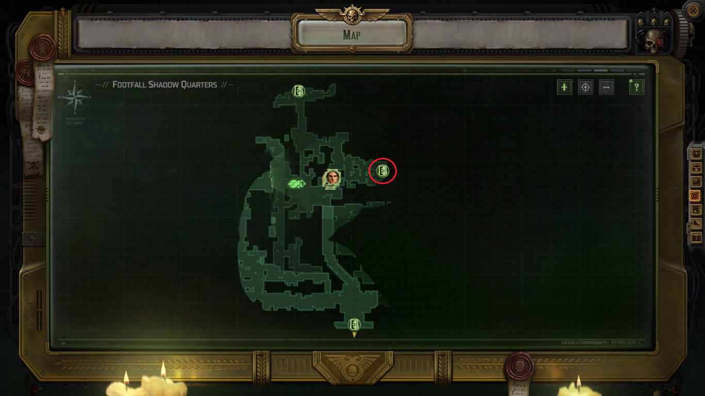
Enter the warehouse, and speak to Jae on your right. Follow Jae, and continue forward until you start a fight. Finish said fight, and your first (and only) option will be:
And then:
- 1. "What, we're just going to leave your priceless cargo here unattended?" [No new choices]
- 2. "l hope your vaunted 'wisdom' is worth all this trouble."
- 3. "Let's go."
Select either option 2 or 3, and a short conversation will play. Jae will pull you into a conversation, making various increment changes available. Do not select Option 1, as Jae will leave.
- 1. "You are absolutely right. I have nothing to do with this shipment or the woman standing next to it." [Jae becomes unrecruitable] + [Ends the event]
- 2. "Jae Heydari, the owner of this cargo, is presently under my protection under a Rogue Trader's protection. Tell your master that he should think twice before crossing her from now on." [+1 Independent]
- 3. "This cargo belongs to the von Valancius dynasty. Is Lord Tocara trying to encroach upon the property of a Rogue Trader?" [+1 Shadow]
Select option “"Jae Heydari, the owner of this cargo, is presently under my protection under a Rogue Trader's protection. Tell your master that he should think twice before crossing her from now on."” / “"This cargo belongs to the von Valancius dynasty. Is Lord Tocara trying to encroach upon the property of a Rogue Trader?"” to proceed to the next set of choices:
- 1. "Tell me about your 'business' on Footfall — the truth of it, and don’t leave anything out."
- 2. "A Rogue Trader could use someone with your talents and connections, Jae. I would like to see you in my retinue." [+1 Approval]
- 3. "If you want us to stay partners — no more secrets or half-truths." [Only appears if etude RTKnowsAboutJaeCargo is inactive]
- 3. "I'll be merciful and give you a choice, heretic. You can atone for your deplorable crimes against the Imperium through your service to House von Valancius, or you can die where you stand."
- 4. "I'll take what we agreed to. But I never want to see you again." [+1 Profit Factor] + [Jae is NOT recruited]
- 5. [Execute Jae] "Jae Heydari, for betraying the Imperium, l, [PLAYER NAME] von Valancius, hereby sentence you to death." [Kills Jae]
If you select "Tell me about your 'business' on Footfall — the truth of it, and don’t leave anything out." you will unlock a new set of options:
- 1. "A principled rogue who can think on her Feet and is not afraid of inhumans. I like you more and more, Jae Heydari." [Returns to this section]
- 2. "l see nothing wrong with making profit where it does no harm to oneself or the Imperium." [Returns to this section]
- 3. "Lines have a tendency to blur — usually unbeknownst to the person walking closest to them." [Returns to this section]
- 4 "Your words are full of heresy. And you... you are simply repulsive." [Returns to this section]
If you do decide to recruit Jae and do not have etude JaeKnowsWeAreRT active, she will prompt another conversation:
- 1. "l wanted to talk like normal people do. For a man/woman of my status, it's a rare treat." [Ends the conversation]
- 2. "You were hardly forthcoming yourself — neither of us have been completely honest." [Ends the conversation]
- 3. "l wish we could forget decorum entirely in each other's presence..." [Ends the conversation]
- 4. "When I do something and why is solely my decision to make, and I'm not going to explain my reasons to anyone." [Ends the conversation]
NOTE: Recruiting Jae/finishing this quest automatically gives you +2 Profit Factor. Friends in sketchy places, after all.
Personal Quest - A Lucrative Opportunity | Automatically given after recruiting her.
Requirements
- Recruiting Jae.
- Agreeing to help Jae.
Summary
Jae wishes to speak with you on the bridge about a lucrative opportunity, and will have a discussion with you in your study.
Specifics
Go up to our lovely smuggler on the bridge and select:
- 1. "Was there some business you wished to discuss?"
And then:
- 1. "A truly wonderful gift. I accept it with gratitude."
- 2. "Yet more xenoheresy? You have some nerve trying to peddle this filth to a true servant of the Emperor!"
- 3. "We are not here to exchange pleasantries. What is it you wanted to discuss?"
- 4. "You consider these gifts? My lowliest enforcers are equipped with deadlier weapons than this."
- 5. [Shrug]
And then:
- 1. "Go on."
- 2. "l think I follow. You wish to use me?"
- 3. "If you were slightly less useful to me, I would have brought you to justice myself. "
- 4. "Get to the point! I do not have time to spend all day chatting with you."
And then:
- 1. "How do I benefit from your gaining official status?" [No new choices]
- 2. "That sounds simple enough. I will help you."
- 3. "l would never allow your ilk to lay so much as a finger on true power! You are an ulcer on the body of the Imperium — thank your Exalted One that I have not yet incinerated you in righteous flame!"
- 4. "Do you really think I care one jot about the travails of Kasballican scum?"
- 5. "l shall take it into consideration."
And then:
- 1. "Help me to establish cooperation with the Kasballica." [+1 Shadow]
- 2. "I wish to develop friendly relations with the Drusians." [+1 Shadow]
- 3. "The Adeptus Mechanicus - they are the partners I need now." [+1 Shadow]
- 4. “I wouldn’t mind having closer ties to the pirates of the Expanse.” [+1 Shadow]
- 5. “I do not need your help in such matters.” [+1 Independent]
Comments
You will receive +2000 Faction points with whatever Trade Faction you ask Jae to help with, but don’t worry if you would like to make her Independent. 2000 points is about one level so it is not something to stress over.
Bridge Discussions - A Princess’s Heart | Conversation can be triggered immediately after recruiting Jae.
Requirements
Summary
You begin a conversation with Jae on the bridge after recruiting her.
Specifics
Pick the option:
- 5. "You must forgive my prying, but has the esteemed princess's heart been claimed by some lucky fellow?"
Jae will then admit she’s been interested in both men and women before, and you are given another set of responses.
- 1. "Just curious. I like to know every last detail about the members of my entourage." [No new choices]
- 2. "Why are you avoiding answering, Mistress Heydari?" [No new choices]
- 3. "I need to know who I must kill to rid myself of a rival. Man or woman."
- 4. "I enjoy being with you. I would like us to spend more time together."
- 5. "Perhaps I shall grant you the high honour of serving as my nightly delight." [No new choices]
- 6. “It does not really matter. Forget it.”
If you select “"I enjoy being with you. I would like us to spend more time together."” you will unlock a new option:
- ?. “I do not see you as a toy. I just like you…” [Credit to u/atalentedtrout]
If you select “"I need to know who I must kill to rid myself of a rival. Man or woman."” / ““I do not see you as a toy. I just like you…”” your choices then are:
- 1. [Drop to one knee] "My dazzling one, can I trust that you hold in your heart at least the smallest drop of regard for me?"
- 2. [Ask meekly] "Jae Heydari, will you be my, ahem, romantic partner?"
- 3. "Look, I'm a simple man/woman, and these flirtatious overtures..."
- 4. "It is very early days for you to be giving me orders. Do not push your luck, Mistress Heydari."
Any of the choices lead to these options:
- 1. "I am inviting you to dinner. Over some decent wine, I'm sure we shall find a fertile topic of conversation." [Activates etude JaeRomance] + [Returns to main discussion tree]
- 2. "I shall wait for you to treat me to a token of your affection, my dazzling one." [Activates etude JaeRomance] + [Returns to main discussion tree]
- 3. "What would you say to going to my chambers right now? I have a pool for ablutions, incidentally."
If you select “"What would you say to going to my chambers right now? I have a pool for ablutions, incidentally."” you will get rejected (ha!) and unlock two new options:
- 1. "l value your taste in matters of romance. Very well." [Activates etude JaeRomance]
- 2. "No. Such complicated games of passion do not sit well with me." [Doesn’t start the romance]
Personal Quest - A Gift for Jae Heydari | Occurs after the Princess’s Heart conversation listed above.
Requirements
- Ask Jae if her heart has been captured.
Summary
In order to court the lovely Miss Heydari, you’ll have to get her a gift. Ask your crew members for ideas.
Specifics
There’s 4(?) correct gifts that work for Jae, but you can ask almost everyone for their opinion on what to get. I’ve listed what everyone suggests below and marked the correct gifts.
Pascal - Servitude Imperpituis.
Heinrix - Dangerous people like dangerous things. A gun, then. [An email helper informed me that this was also labelled as correct in their playthrough] + [Correct]
Yrliet - Giving gifts is primitive, mon-keigh.
Cassia - A heartfelt poem.
Abelard - Janusian lilies back in his day. Now, he’s too old for this.
Argenta - A conscience. Or meaningless, expensive jewelry.
Idira - A most lovely and enviable dress. [Correct.]
High Factotum Janris - A whole colony. [Correct.]
Rogue Trader - A voidship. [Correct.]
Kibellah doesn’t have the option to ask her.
If you do decide to gift her a weapon, the weapons stats are:

Alternatively, while it is not the correct gift, the necklace you gift her is wearable, and the stats are below:
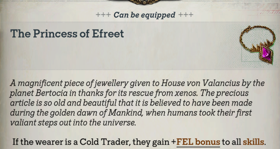
Speak to Janris on the bridge, and select one of the correct options to further Jaes romance.
Study Event - Heartfelt Thanks | Occurs one warp jump after selecting a gift for Jae. Sometimes, this event can get pushed back by DLC/another story event, so just keep warp jumping around if it doesn’t trigger immediately.
Requirements
- Selecting a Gift for Jae after her Personal Quest - A Gift for Jae Heydari.
Summary
Jae comes to your study to reveal her feelings about the gift you selected.
You’ll stumble upon Jae in your study, and your first options will be:
- 1. "Jae, it is a pleasure to see you in my quarters — notwithstanding whatever nefarious purpose has brought you here."
- 2. "What are you doing in here, Jae?"
- 3. "Void take it! Have I got a rat on board my ship?"
And then:
- 1. "Once again I find you in my quarters, even though you are not supposed to be in here. It is starting to become something of a habit." [Only appears if you attended Jaes Celebration beforehand?] / [Only appears if etude JaeRomance_JaeVisits is active] + [No new choices]
- 2. "Well, what are you doing here?" [No new choices]
- 3. "l think you were trying to rob me."
- 4. "Get out."
Selecting “"l think you were trying to rob me."” / “"Get out."” option leads to the next set of choices:
- 1. "You know you can simply ask for what you want and you will get it?" [No new choices]
- 2. "Is this some kind of game?" [No new choices]
- 3. [Draw closer] "You want me to search you?"
- 4. "Get out." [No new choices]
- 5. "I said get out." [Ends the event] + [Fails the romance?]
Selecting “[Draw closer] "You want me to search you?"” leads to the next set of choices:
- 1. [Check if Jae is hiding anything in her jacket]
- 2. [Plunge your fingers into her mane of dark hair, where she could be hiding anything]
- 3. [Run your hands over her jacket in search of hidden items]
- 4. "That is enough. Leave."
Select two options from 1-3, and your next set of choices will be:
- 1. [Draw Jae close to you] "What will you give me in return?"
- 2. [Pull away] "I do not think this is appropriate."
If you select “[Pull away] "I do not think this is appropriate."” you will unlock a new option:
- 2. "My gifts do not require payment. Not this kind of payment. You should leave, and we'll not mention this again." [Fails the romance]
If you select “[Draw Jae close to you] "What will you give me in return?"”, you’ll get a fade to black sex scene. There iss event located here.
Comments
Jae leaves you a little gift carved onto the end of your bed. It’s very cute.
Study Event - Can You Pet The Lacerax? | Occurs two warp jumps after Study Event - Heartfelt Thanks.
Requirements
- Completing Study Event - Heartfelt Thanks.
Summary
There’s some growling coming from your study. Go check it out.
You’ll enter your study and be introduced to Sirocco. Your first options are:
- 1. [Cautiously look around] [No new choices]
- 2. "There's a good pet."
- 3. [Draw your weapon] "I am not for eating."
- 4. "Help!"
- 5. [Freeze]
And then:
- 1. "Is this some perverse attempt to kill me?"
- 2. "Is this your pet? I want one for myself."
- 3. "What is going on?"
Pick any option, and then:
- 1. "Why would you give me a lacerax?" [No new choices]
- 2. "Where did you get her?" [No new choices]
- 3. "Is she housetrained at all?" [No new choices]
- 4. "What is her name?"
- 5. "Thank you for the gift." [Activates etude JaeRomance_Tiger] + [Ends the event]
- 6. "I cannot accept this. You would do better to give me a gift that won't eat me." [Ends the event]
If you select “What is her name?” you can actually rename the lacerax! Your name options are below:
- 1. "When I look into her eyes, I see death there. So that's what I'll call her - Death."
- 2. "She's no Sirocco. She's... Beauty!"
- 3. "I shall give her a name that is meaningful to my dynasty - Dargona."
- 4. "Laceraxes are dangerous, they hardly sleep, and they have a nasty temper. That reminds me of someone... I'll call her Ravora."
- 5. "Sirocco it is."
Rename her if you want, and you’ll return to this section.
Bridge Event - Outrageous Breach of Discipline | Occurs one warp jump(?) after gifting Jae the correct gift.
Requirements
Summary
High Factotum Janris needs to speak with you about some outrageous breaches of discipline.
You’ll be dragged into a conversation on the bridge with Janis regarding someone skimming from your dynasty’s coffers. That someone would happen to be Jae Heydari. You have a few options to respond.
- 1. "What crimes has she committed against the treasury?" [No new choices]
- 2. "How much has her chicanery cost us?"
- 3. "I have no interest in hearing about this."
Select "How much has her chicanery cost us?" to unlock a new option:
- 1. “Bring the embezzler to me.”
Jae will then appear, bow, and you are once again presented with options to respond.
- 1. "I have been informed that you have been soliciting bribes." [No new choices]
- 2. "Why do you need such gifts? Do you not receive enough through working with me?" [No new choices]
- 3. "The High Factotum is worried that you are exploiting your privileged position."
- 4. "Janris, henceforth you will furnish Jae with whatever she desires. Is that clear?" [Activates etude JaeRomance_ServoSkull] + [Ends the event]
- 5. "Jae, I command you to stop riding roughshod over my Factotum and my treasury.” [Ends the event]
Selecting "The High Factotum is worried that you are exploiting your privileged position." will provide a new response:
- 1. "Danrok the bumbling suitor. You dangle after my companion and now you are trying to settle the score? Get out of my sight." [Activates etude JaeRomance_ServoSkull] + [Ends the event]
Personal Quest - Mercatum Tabula Officiale | Automatically given after Personal Quest - A Lucrative Opportunity.
Requirements
- Speaking to Jae and asking about her request during A Lucrative Opportunity.
Summary
Jae wishes to acquire an official trade representative certificate, and needs the Lord Captains help to achieve this wish.
Head to Dargonus as the plot demands, and head to the Administratum where you’ll be lead to where you need to go by a lovely Servo-Skull. Speak with the Master of Seals and select:
- 1. "Don't you want to know who I am?" [No new choices]
- 2. "What is this place?" [No new choices]
- 3. "Tell me about yourself." [No new choices]
- 4. "Tell me about the work of the Adeptus Administratum." [No new choices]
- 5. “My companion wishes to obtain a Mercatum Tabula Officiale.”
Select “"My companion wishes to obtain a Mercatum Tabula Officiale."” and your next set of responses are:
- 1. "There is no way of getting around these formalities?" [No new choices]
- 2. "Could you handle the paperwork on my behalf? I will pay." [No new choices]
- 3. "And if I refuse?"
- 4. [Complete Application Form #404.01]
If you select “And if I refuse?” you will unlock a new option:
- 5. [Allow Jae to complete the application]
Someone needs to complete the forms, so pick an option that does that, and then:
- 1. [Sigh forlornly] [No new choices]
- 2. [Give your written consent on the presented form] [Activates etude JaeArguesOnDragonus]
- 3. "Jae, take care of this." [Activates etude JaeArguesOnDragonus]
- 4. “I am already regretting my decision.”
Options 2-3 move the conversation along:
- 1. "Why can the seals not be affixed here in the Administratum Palace?" [No new choices]
- 2. "Why am I obliged to handle such a task myself?" [No new choices]
- 3. "Find Administratum servitors and have them place two seals of approval. The goal is clear." [End the event]
- 4. "I did not sign up for this!"
If you select “I did not sign up for this!” your next choices are:
- 1. "It will take a great deal more than what you promised to repay me for this." [End the event]
- 2. "Find Administratum servitors and have them place two seals of approval. The goal is clear." [End the event]
- 3. “Handle your problems yourself, Jae.” [Fails the quest]
After going to Administratum, the next time you return to the palace and HAVEN’T picked up the seals, Jae will be arguing with Clementia in the throne room. You’ll be dragged into this argument, and given these choices to respond with.
- 1. "Whatever is the matter, Mistress Werserian?"
- 2. "Help in what way, Jae?"
- 3. "Mistress Werserian, I require that a document be certified. Where is the court servitor, the keeper of seals?"
- 4. "You may figure out your problems yourselves."
Guidemaker chose option 3, and the conversation ends.
Okay, so where are the seals?
You can find the seals in a few different places.
One can be found in the Nameless Star galaxy, on the Ancient Bunker on Oasis V.
The location of the seal in the Nameless Star galaxy, on the Ancient Bunker, is shown below. This can be found before OR after talking to Clementia.
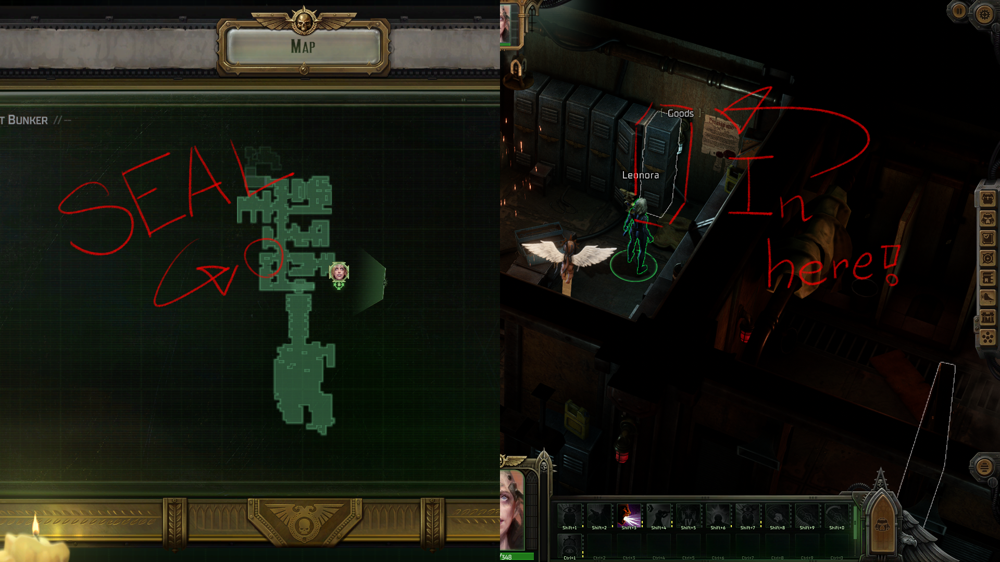
One can be found in the Nameless Star galaxy, in the Recolligers' Plot voidship. This can ONLY be found AFTER talking to Clementia.
When you speak to Reta for the first time, your options will be:
- 1. "Would you believe it — well-spoken rabble! It is rather sweet in its own way. Go on, then, amuse me. Tell me about yourself and this place."
- 2. "What is this place?"
- 3. "l must take my leave."
Selecting “"Would you believe it — well-spoken rabble! It is rather sweet in its own way. Go on, then, amuse me. Tell me about yourself and this place."” / “"What is this place?"” moves to the next set of questions:
- 1. "What do you do here?"
- 2. "You've got your own ship?"
- 3. "Can you tell me anything about this wreck?"
- 4. "You take pride in your trade, I see." [Repeats)
- 5. "l can take you from this place. It's not safe here, and sooner or later, it will drift somewhere so remote that nobody will ever find you again."
- 6. "I see." [Activates etude ScavengerTrade]
Selecting “"What do you do here?"” unlocks new choices:
- 1. "l will buy the component." [Activates etude ScavengerPuzzle]
- 2. "This component doesn't belong to you. I will simply confiscate it."
- 3. "I'm not interested."
After selecting “"l will buy the component."” you will return to the previous section of choices with a new option unlocked:
- 1. "It's unlikely, but I want to ask — you haven't come across any Imperial stamps in your 'searching,' have you?"
Select that, you’ll receive the seal.
The one on Janus can be found via talking to Atilius Quint on Janus after solving any and all issues with Governer Vyatt in the Main Quest - Hungers Hand. Interact with him, and select the option:
- 1. "I require a seal to certify a Mercatum Tabula Officiale."
Any option after will result in you receiving the seal.
Zip back to the Adminstratum and go talk to the Master of Seals again, selecting the below option to continue the quest.
- 3. "Here is your paper, complete with seals."
After this, the Master of Seals informs you that to properly finish getting the document certified, you’ll have to queue in a very long line. However, there are several ways to speed up this process. Your first options, as of Patch 1.4+, are:
- 1. "Is this some kind of joke?" [No new choices]
- 2. "l am the Rogue Trader and sovereign of this world — I do not queue!"
- 2. "My name was widely known long before I became a Rogue Trader! People like me do not queue — wherever we go, doors are thrown open wide for us and the red carpet rolled out!" [+2 Queue] + [Only appears if Triumph is Illustrious Glory]
- 3. "If I must queue, then queue I shall."
- 4. [Address Jae] "l am sick of this. Handle your problems yourself, Jae."
Selecting “"l am the Rogue Trader and sovereign of this world — I do not queue!"” unlocks new option(s):
- 3. "Then I shall return after the official ceremony. And do not even think of obstructing me then!"
- 5. [Coercion +25] "Do you really wish to get on my bad side?" [+2 Queue if check is passed]
The aim of this quest is to 6 Queue increments as fast as possible, through a variety of means. There is an achievement for waiting patiently and not using tricks, as well.
Take your place in the queue to be presented with the first set of options.
- 1. [Yawn]
- 2. [Scratch the back of your neck]
- 3. [Count the people in the queue]
- 4. [Order your servants to prepare a waiting area befitting a Rogue Trader] [Unlock Flag “TableSet” to 0]
- 5. [Wait patiently] [+1 Queue]
“[Wait patiently]” is the option that moves to the next scene.
Jae will then bemoan her situation, and allow you to respond again.
- 1. "Do not forget-you are the reason we are here."
- 2. "Do you have a better idea?"
- 3. "I've had it with this bureaucratic nonsense. We're leaving." [Fails the quest]
Any non-failure option will prompt Jae to suggest using some tricks to get through the crowd. You’re then presented with the first round of “tricks” you can use.
- 1. "We shall solve the problems of the common people." [+1 Approval]
- 2. [Persuasion +40] "Solomorne, do you think a wanted criminal could blend into this crowd?" [Only appears if Solomorne is in the active party]
- 2. "Frighten the people. These worms should bow down in terror before their master and let us through." [+1 Queue] + [+1 Trick Used]
- 3. "Whatever you are thinking- do it." [+1 Queue] + [+1 Trick Used]
- 4. [Address a tender-hearted man]
- 5. [Open fire on the crowd] "Why go to any effort when I can simply shoot everyone here?" [Unlock Flag “Slaughter” to 0] + [+1 Shadow]
- 6. "I want to consider everything again."
After this, depending on who you’ve brought to the Adminstratum, several of your companions can also help you move along in the queue. The ones that can are listed below.
- Heinrix [Requires -10 Coercion Check]
- Argenta [Requires -5 Persuasion Check]
- Yrliet [Requires -10 Persuasion Check]
- Idira [No Requirements]
Either way, you’re presented with another set of choices.
- 1. [Wait patiently] [+1 Queue]
- 2. "We need to move forward faster. Use your tricks." [Opens “Trick” menu]
- 3. [Open fire on the crowd] "Why go to any effort when I can simply shoot everyone here?" [Unlock Flag “Slaughter” to 0] + [+1 Shadow]
- 4. "I've had it with this bureaucratic nonsense. We're leaving."
Selecting “"We need to move forward faster. Use your tricks."” opens the Trick menu, displayed below:
- 1. "We shall solve the problems of the common people." [+1 Approval] + [+1 Queue]
- 2. [Coercion -10] "Heinrix, this is a perfect opportunity to make use of your privileged status. After all, you do not wish to suspend your mission for several cycles, do you?" [+1 Queue] + [+1 Trick Used]
- 3. [Persuasion -5] "Sister Argenta, I believe these people have been
- gripped by despondency. A sermon from one of His daughters could restore to them their determination.” [+1 Queue] + [+1 Trick Used]
- 4. "Idira, can you use psykana to persuade the petitioners that they must leave the queue?" [+1 Queue] + [+1 Trick Used]
- 5. [Persuasion -10] "Yrliet, I need you to serve as a distraction." [+1 Queue] + [+1 Trick Used]
- 6. "Frighten the people. These worms should bow down in terror before their master and let us through." [+1 Queue] + [+1 Trick Used]
- 7. [Address a tender-hearted man]
- 8. [Open fire on the crowd] "Why go to any effort when I can simply shoot everyone here?" [Unlock Flag “Slaughter” to 0] + [+1 Shadow]
- 9. "I want to consider everything again."
NOTE: After selecting any Companion Trick (Heinrix/Argenta/Yrliet/Idira) you’ll be booted back to the “Trick” menu with the same options as above, but with the companion option removed.
IE, guidemaker used Heinrixs Trick and then was booted back to the menu with only Argenta/Yrliet/Idiras tricks available.
Selecting “"We shall solve the problems of the common people."” will prompt the next conversation
A young man approaches and asks for assistance. Your options are:
- 1. [Listen to the young man]
- 2. "I shall do everything in my power."
- 3. "Emperor grant me patience..."
- 4. "Your paltry problems are no concern of mine. Begone!" [Ends trick early.]
Basically, the young man is actually a highborn noble that wants to marry a woman from the lower castes out of genuine love, therefore relinquishing his titles and job at the Officio Medicae. Cute.
Your options are:
- 1. "I have no interest in your little drama. I will sign the paper if you require a sponsor." [+1 Shadow]
- 2. "The lives of commoners hold no value. When you finish university, you will be qualified to save those who are truly worthy." [+1 Shadow]
- 3. "In the name of House von Valancius, I hereby make your fiancée a lady
- of the court. And release her from any obligations thereto." [+1 Independent]
- 4. “You wish to study alongside your beloved? Very well. I hereby grant you ownership of the Dargonus University of Medicae - you may admit anyone you like.” [+1 Independent] + [-1 Profit Factor]
After this, an old man will approach the party. He’s there to donate his organs to his granddaughter, but if you pass a passive -5 Awareness check, you’ll realize that his granddaughter has been turned into a servitor, and marked for disposal. He is hoping to offer his own “spare parts” so that she may continue to serve.
You have a few options to respond:
- 1. "Your sacrifice will mean nothing to a servitor-you do realise that?"
- 2. "I will have my people buy your granddaughter's release and see to your welfare." [+1 Independent] + [-1 Profit Factor]
- 3. "You do not have to die, old man. If she has been taken out of service, then the time has come to release her." [+1 Shadow]
- 4. "I will give the order for your granddaughter to be repaired, but if you wish to be with her forever, you will also be subject to Servitude Imperpituis." [+1 Independent]
- 5. "How dare a prefect's property try to make use of its own life! Get away - back to your master!" [+1 Shadow]
An old woman then approaches, and blathers on about her rare hat shop being burnt down, and about how she’s a widow. None of these options actually change anything for Jae, but they have been added to ensure the thoroughness of the guide.
- 1. "I suppose you must remarry, then? I shall have my people select the best spouse for you."
- 2. “This should suffice to cover your expenses." [-3 Profit Factor]
- 3. "Perhaps I can rebuild this hat shop of yours?"
- 4. "And what you want is a life that is meaningless and full of despair? Perhaps it is time you turned to faith, sister?”
After dealing with all three people in whatever way you want, this “Trick” finally ends.
Please note that if you want to go back to the original menu, which allows you to wait patiently in the queue or just kill everyone, select the “I want to consider everything again.” option.
Selecting “[Address a tender-hearted man]” will prompt a new conversation.
You’ll then speak to a man named Menas that will tell you that his daughter has been detained, and he needs to get his paper certified so that she can be released. You have a few options here:
- 1. "What was your daughter accused of?"
- 2. "I do not think your daughter would mind if you let the Rogue Trader go ahead of you." [+1 Queue] + [+1 Trick Used]
- 3. "I am sorry about your daughter, but if you do not let me past, tomorrow Fifty Dargonian orphans will die!" [+1 Queue] + [+1 Trick Used]
- 4. "Why don't I simply pay you and you give me your place in the queue?" [-1 Profit Factor] + [+1 Queue] + [+1 Trick Used]
- 5. "I see. Well, good luck to you and your daughter."
After you get your papers certified, go talk to the Master of Seals for the last time. After this cutscene, Jae will want to speak to you on the bridge. So go skedaddle back to the ship and talk to her.
Bridge Discussions - Humble Heart | Occurs the first time you talk to Jae after finishing getting her Mercatum Tabula certified at the Administratum.
Requirements
- Helping Jae get her Mercatum Tabula certified at the Administratum.
Summary
Jae wants to celebrate her success with you, and asks you to talk to her on the bridge.
Specifics
Jae thanks you for the help, and promises that her crew will further assist you across the Koronus Expanse. You have a few ways to respond.
- 1. "And is that the extent of your gratitude?"
- 2. "You are welcome, Jae. It is what friends are for." [Add Item Battle-scarred Cape] + [Ends the event]
- 3. "Enjoy freedom, Jae. I see you have found it much to your taste."
- 4. "Lose this piece of paper and I will not help you get another, Throne be my witness."
- 5. “You presume too much, Heydari, we are not partners. Keep making yourself useful.” [Add Item Battle-scarred Cape]
Guidemaker selected option 2, and the conversation ended.
Bridge Discussions - Servo-Skull | Can be selected after finishing Bridge Event - Outrageous Breach of Discipline.
Requirements
- Finishing Bridge Event - Outrageous Breach of Discipline.
- Not telling Jae “3. "Jae, I command you to stop riding roughshod over my Factotum and my treasury.”” during Bridge Event - Outrageous Breach of Discipline.
Summary
Your servo-skull has been making some odd comments concerning Jae lately. Go talk to her about it.
Specifics
Eventually, if you have any Herald item equipped, which are located in the Usable category and take up a pouch slot (Cherub/Herald Servo-Skull/Immaculate Servo-Skull/Pict-Recorder Servo-Skull/Scribe Servo-Skull/Archivist Servo-Skull), you might see it making some odd comments about you and Jae. Even if you don’t, you can still talk to Jae about it.
Talk to Jae and select the below option.
- 1. "Jae, do you know why my servo-skull escort has started saying some rather unusual things?"
Comments
Nothing really comes of this scene, but it is cute. Jae has a few “outrageous” scenes where she does some amusing stuff to both your ship, and several items in game. It’s been added to the guide to ensure thoroughness. (And for all the Jae-mancers that want to see every scene of our adorable Cold Trader.)
Personal Quest - Jae Heydari’s Celebration | Automatically given after finishing Personal Quest - Mercatum Tabula Officiale.
Requirements
- Helping Jae get her Mercatum Tabula certified at the Administratum.
Summary
Jae invited you to come join her celebration on Footfall with the rest of her crew. Go have some fun, and try not to destroy anything.
Specifics
Return to Furibundus, and go to Footfall. Befoe you land, Jae will chime in that you should come to her ammaricar in The Martyr’s Endurance bar. You have two options to respond.
- 3. "It would be my pleasure to attend your party." [Activates etude Jae_RTGoesToBDayParty] + [Activates etude Jae_WaitUsOnBDayParty], [Activates etude Jae BDayPartyOnCanteena]
- 4. "It is beneath me to attend such gatherings."
Selecting option 3 will immediately teleport you to The Martyr’s Endurance. I’ve attached a photo of where she's located in the bar.
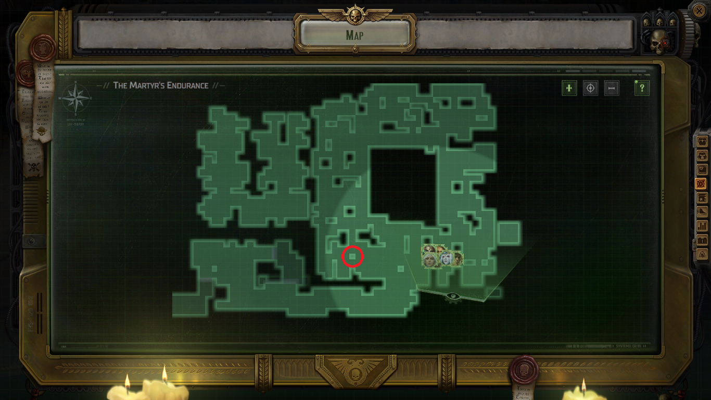
Go say hi, and Jae will welcome you to her party. You have a few options to respond.
- 1. [Observe the assembled group]
- 2. "How is your party going?"
- 3. [Join the group] "I will gladly accept your offer."
- 4. "Duty calls." [Unlocks Flag JaeRomance_BDayPartyPlayerGoOut]
You can exhaust options 1-2, and even pass a passive -5 Awareness check on Octaviana to spot a cute detail. Either way, selecting option 3 will officially begin the birthday party.
As all of your companions you brought to the party disappear into the Warp, you’ll be presented with a few options to respond to the party goers.
- 1. "Let us drink to the lady of the hour, Jae Heydari!" [+1 FalcoVisit] + [Add Item TacticianCloak]
- 2. "Octaviana, you and Jae are friends?" [+1 FalcoVisit] + [Add Item TacticianCloak]
- 3. [Look at the other people around the table] "So these are your associates?" [+1 FalcoVisit] + [Add Item TacticianCloak]
- 4. "What were you talking about before I arrived?" [+1 FalcoVisit] + [Add Item TacticianCloak]
- 5. "I should take my leave." [Unlocks Flag JaeRomance_BDayPartyPlayerGoOut]
Falco rudely interrupts your party after you get 3 on the Falco counter. You can then respond to this turn of events.
- 1. [Whisper to Octaviana] "Isn't Falco the one who stole Jae's cargo?"
- 2. "Who is this Mercy?"
- 3. "Where is your present for Jae, Falco?" [Add Item ModifiedVenomBlade]
- 4. "Get out, you scoundrel. You are not welcome at this table."
- 5. [Say nothing]
Selecting “[Whisper to Octaviana] "Isn't Falco the one who stole Jae's cargo?"” will unlock a new option:
- 1. "Is it customary in the Kasballica to attend the parties of people you have tried to ruin?" [No new choices] + [Returns to this section]
After Falco visits and leaves, you will have unlocked a new option:
- 2. "Even foes are bowing down before Jae Heydari! That is something worth celebrating!"
Select "Even foes are bowing down before Jae Heydari! That is something worth celebrating!" to move onto the next part of the party: a game of tan-to-lo. You can pick out the specific name if you pass a +50 Lore (Imperium) check.
I don’t think you can really win or lose the game. You’re kind of just playing to Jaes tune.
Either way, you have some choices to make.
- 1. "I do not know the rules." [No new choices]
- 2. [Raise your goblet in salute] "I shall play."
- 3. "I should take my leave."
If you decide to play, your choices are:
- 1. [Logic +15] [Look at your hand]
- 2. "I should take my leave." [Unlocks Flag JaeRomance_BDayPartyPlayerGoOut]
If you succeed in the Logic check, you’ll realize you have a pretty awful hand. However, Jae then offers you a chance to show your hand, which allows you to gracefully bow out of the game without losing.
Show your hand, listen to Jaes lovely wish, and then begin the game for real.
Pass a -5 Logic check to realize you have a very good hand. You then get some options to respond. Pick whichever you would like, but they all lead to the same outcome: Jae having a better hand.
- 1. [Lay out your tiles] "Read them and weep."
- 2. [Show your hand]
- 3. [Throw your tiles onto the table] "I have nothing."
Our gracious princess then asks what she should wish of you, which you can respond to in a few ways, one of which activates Jaes romance.
- 1. "Riches, obviously."
- 2. "Request a kiss. When the opportunity presents itself." [Activate etude JaeRomance]
- 3. "Given your profession, I would extract a promise of my assistance should you ever find yourself in trouble in the future."
- 4. "You should not get carried away. Some wishes are so difficult to fulfill that it is simpler to dispose of the asker."
And then:
- 1. "Jae, you wouldn't be cheating by any chance?"
- 2. [Logic +30] [Look at your tiles]
- 3. "I should take my leave."
You can ask Jae if she’s cheating before doing the Logic check, if you’d like. Either way, try and pass the +30 Logic check. You’ve got an okay hand.
However, now you can try and cheat!
- 1. [Agility +5] [Try to cheat]
- 2. [Show your hand] "I'll play." [Unlock Flag JaeRomance DanceOnBDayParty]
- 3. "I am out."
You can either try and cheat, or show your hand. If you succeed the Agility check or show your hand, you’ll get to see Jae dance. Then, you get some more chances to respond.
- 1. "That is enough betting for me. My luck is very fickle today."
- 2. "I should take my leave." [Unlocks Flag JaeRomance_BDayPartyPlayerGoOut]
Select “"That is enough betting for me. My luck is very fickle today."” for the next choices:
- 1. "By the Throne, you are so beautiful, Jae..." [Activaes etude JaeRomance] + [Ends the event]
- 2. "To amasec's deceit!" [Ends the event]
- 3. "All right. It is definitely time I left this party." [Unlocks Flag JaeRomance_BDayPartyPlayerGoOut] + [Ends the event]
No matter how you end the event, you will wake up next to a fully clothed Jae Heydari, and can try and slur out a response while hungover.
- 1. "How did the night end?" [No new choices]
- 2. [Carouse +50] [Try to remember the end of the party] [No new choices]
- 3. "How did you end up in my chambers?" [No new choices]
- 4. "You and I... We did not fall into bed together just to sleep, did we?" [No new choices]
- 5. "We need to make ourselves presentable." [Ends the event]
Bridge Discussion - Retracing Steps | Can occur after finishing Personal Quest - Jae Heydari’s Celebration.
Summary
After Jae’s birthday, you decide to ask the Vox Master about your drunken antics.
Specifics
Approach Vox Master Vigdis and select the option:
- 1. "Toliman, not long ago I took part in a celebration in Jae's honour..."
The Vox Master will fill in some blanks about the night.
Comments
Nothing really comes of this scene, but it has been added to the guide to ensure thoroughness, and for Jae-mancers to see all possible dialogue relating to her.
Bridge Event - Love Poems | Occurs after finishing Main Quest - Blades in the Void? (Needs testing)
Requirements
- Activating the listed Bridge Events + Study Events
- Bridge Event - Outrageous Breach of Discipline
- Study Event - Can You Pet The Lacerax?
- Study Event - Heartfelt Thanks
Summary
Going to chat with our handsome Interrogator results in you spotting a strange circle carved into the floor of your voidship. Go take a closer look.
I have included a screenshot of the ritual circle below.
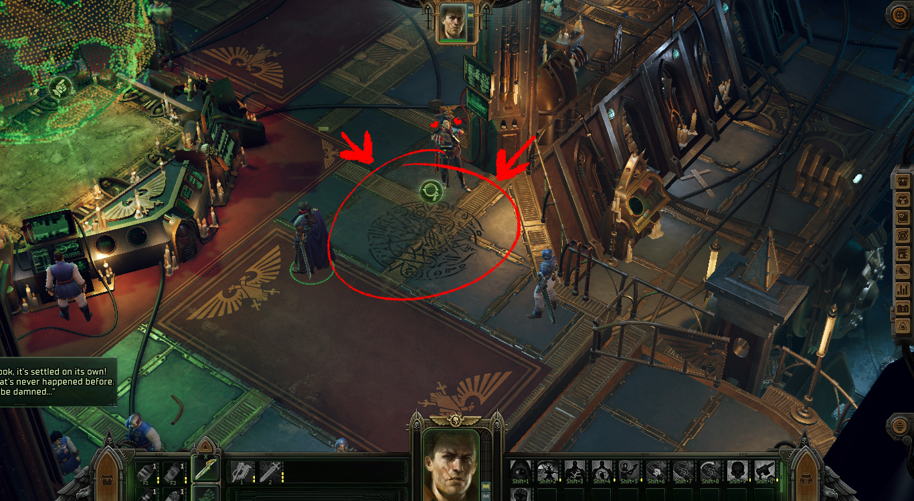
Inspect the drawing/carving on the floor, and you’ll be presented with a few options.
- 1. [Lore [Imperium] -5] [Examine the drawing carefully]
- 2. "Ravor! What is this?" [Activates etude JaeAnd VoidMasterControllEtude]
- 3. [Walk away]
Guidemaker selected option 1, which causes Ravor to explain that this little circle-poem-thing is actually Jaes handiwork.
You have two more options to respond.
- 1. "Jae! Explain this, please."
- 2. [Walk away]
Guidemaker selected option 1, and was then presented with another set of options.
- 1. "You have not answered me. What is it?"
- 2. "I like it. It can stay."
- 3. "Ravor, wash this off immediately." [Activates etude JaeDrawingCleaning]
Guidemaker selected option 1, and Jae explains the meaning of the poem. You can respond in a few different ways.
- 1. "Why did you have this painted here?"
- 2. "You really love drawing attention to yourself, don't you?"
- 3. "I like it. It can stay."
- 4. "Ravor, wash this off immediately." [Activates etude JaeDrawingCleaning]
You can exhaust dialogue options 1-2, and then actually select what you want to do with the poem. Guidemaker selected option 3. This ends the event.
Bridge Discussions - An Embarrassing Callout | Can occur after having sex with Jae in Study Event - Heartfelt Thanks.
Summary
After approaching the Vox Master on your ship, you notice that she appears to be looking at you differently. Maybe you should ask if something happened.
Specifics
Start a conversation with Vox Master Vigdis, and you’ll be presented with several options.
- 1. [Look around the bridge] [No new choices]
- 2. "Vox Master, has something happened?"
- 3. "Vigdis, deliver your report on the last watch."
Selecting “"Vox Master, has something happened?"” will unlock a new option:
The VoxMaster will inform you that during your “relaxation” with Jae, a shipwide broadcast was initiated. You’ll get a few options to respond:
- 1. "I still do not understand. What broadcast?" [No new choices]
- 2. "Is this some kind of bad joke?" [No new choices]
- 3. "Vox Master, I have a question: was it sabotage or criminal negligence?"
- 4. "And who heard it?"
- 5. "So... what did you make of the broadcast?"
Selecting “"Vox Master, I have a question: was it sabotage or criminal negligence?"” will unlock a new option:
- 1. "Bring me Jae Heydari. I have a question for her."
Selecting “"And who heard it?"” will unlock a new option:
Jae will join you and the VoxMaster, and you have some choices to make:
- 1. "Please tell me, why?"
- 2. "You do realise that this is not how we do things on my ship?"
- 3. [Smile] "Jae, you... minx. You could have warned me."
- 4. [Nod dryly] "Report received, Mistress Heydari."
- 5. "You crossed a dangerous line, Jae."
Selecting “"Please tell me, why?"” will unlock a new option:
- 1. "But really, why did you do it? Is it some sort of fetish?"
You can select option 1 to actually see Jae become serious, or just pick the [Smile] "Jae, you... minx. You could have warned me." to end the event.
If you pick options 4 or 5, you have some new choices to make. These include giving you an option to execute Jae or kick her off your ship
- 1. “Never do it again. Is that understood?”
- 2. “It is over between us. You have gone too far.” [Completes etude JaeRomance.] + [Ends her romance if you have it active.]
- 3. “Get off my ship. I no longer wish to see you in my retinue.” [Banishes Jae] + [Ends her romance if you have it active.]
- 4. [Execute the smuggler] “”For making a mockery of the Rogue Trader, I sentence you to death.” [Kills Jae] + [Ends her romance if you have it active.]
Bridge Discussions - Colors of a Liar | Can occur after exhausting several dialogue trees with Jae.
Requirements
- Requires exhausting specific dialogue options in Jaes Bridge Chatter Menu + passing two of three checks.
Summary
You’ve started to notice a few holes in the tales that Jae has been regaling you with recently. You should speak to her about it. You will need to pass two out of three checks: +30 Tech-Use, +30 Persuasion, or +30 Awareness.
Specifics
Can be triggered as soon as Jae is recruited, simply go up to her and select:
- ?. "You don't look like a typical smuggler." [Only appears if etude JaeRevealed is not active]
And then:
- 1. "Why did you choose to come to the Koronus Expanse?" [No new choices]
- 2. "How did you escape from Efreet?" [No new choices]
- 3. "Judging by your implants, you've had quite a few close shaves over the years."
- 4. "Thank you for sharing this." [Returns to main dialogue tree]
Selecting “"Judging by your implants, you've had quite a few close shaves over the years."” will prompt you to roll a Passive +30 Tech-Use check. If you succeed, you will note that Jae is lying about her neck augment.
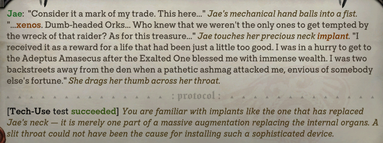
Alternatively, select:
- ?. "I have seen enough of the shiny wrapping of the Koronus Expanse. Tell me about its dark side."
And then:
- 1. "How do they do things on Footfall?" [No new choices]
- 2. "Tell me about the Kasballica Mission."
- 3. "Tell me about the Cold Trade." [No new choices]
- 4. "Let's change the subject." [Returns to main dialogue tree]
Selecting “"Tell me about the Kasballica Mission."” will prompt you to roll a Passive +30 Persuasion check, and you will note that Jae seems to be using some rougher language.
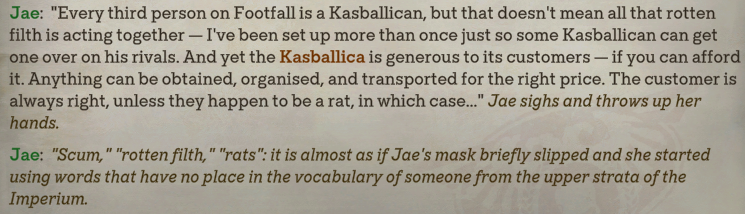
You will also unlock two new options to select:
- 3. "Are you one of the Kasballica's robber barons?" [No new choices]
- 4. "How did you become a Kasballican agent?" [No new choices]
Alternatively, select:
- ?. "Tell me about your business in the Koronus Expanse."
And then:
- 1. "Do you do business with the enemies of Humanity?" [Leads to another set of choices not relevant to this event. Please see Bridge Discussions section.]
- 2. "You have many talents." [No new choices]
- 3. "Are you really that rich?" [No new choices]
- 4. "You could be sitting back reaping the fruits of your own work, so why have you chosen to embrace the vicissitudes of life aboard a voidship?"
- 5. "Tell me about the xenos of the Koronus Expanse." [No new choices]
- 6. "Let's talk about something else." [Returns to main dialogue tree]
Selecting “"You could be sitting back reaping the fruits of your own work, so why have you chosen to embrace the vicissitudes of life aboard a voidship?"” will prompt you to roll a Passive +30 Awareness check, and you will note that, although she is hiding it well, Jae left Footfall out of fear.
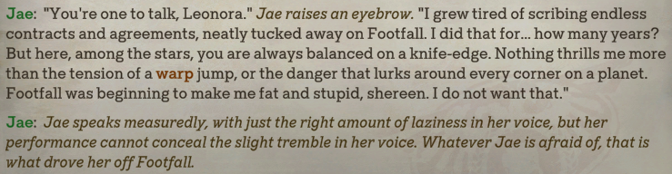
You will also unlock two one option to select:
- 4. "What about your gang that stayed back at Footfall? Do you trust them?" [No new choices]
If you pass minimum two of the three checks and return to the main dialogue menu, you’ll have unlocked a new option.
- ?. “You’re telling me tales about your colourful past, Jae, but I feel not all of these stories are true…”
Warp Event - Kasballican Welcome | Unsure about what specifically causes this to trigger? It happened for the guidemaker whilst randomly warping and collecting information for another guide. It specifically occurred when visiting the Adermatt II galaxy.
Requirements
Summary
You’ve been encircled by voidships, and someone is sending an unmanned vessel towards you with a gift for Jae.
Specifics
As soon as you warp into a system, you are drawn into a discussion with both Vox Master Vigdis and Jae about a gift for Jae. You have a few options to respond.
- 1. "What ships are they?"
- 2. "I wish to contact the pursuers' flagship."
- 3. "Order the voidborn to bring the package aboard." [+1 Approval]
- 4. "I sense a trap. I am not prepared to risk any lives.”
You can exhaust options 1-2 and then select 3 to continue the event and gain Approval.
If you select option 4 “4. “I sense a trap. I am not prepared to risk any lives””, you lose out on Jae approval and just get to make the next options below earlier.
Either way, you have a few options to interact with the voidship.
- 1. "Let us see who would display such impudence to a Rogue Trader."
- 2. "Void dogs snapping at the Rogue Trader? Accept the vox-transmission. This should be interesting."
- 3. "Load the artillery and allow the ships to draw closer. Then connect me."
- 4. "A few warning shots should help this meeting along. Fire!"
- 5. "We do not parley with aggressors. Load the artillery - we attack first!" [Starts Ship Combat]
Options 1-3 open up new choices immediately, whereas option 4 just prolongs the conversation, and option 5 immediately starts a fight.
- 1. "That's a rather pathetic moniker. Couldn't come up with anything better?"
- 2. "Your 'gift' what do you mean by it?" [Only occurs if option 3 is picked in this set of choices]
- 3. "In the Emperor's name, state your business or get off my vox-channel!"
- 4. "Who you are makes no difference to me. Why were you pursuing my vessel?"
- 5. "Get to the point, filth. You are only alive because you briefly alleviated my boredom."
- 6. "So you admit you were threatening a Rogue Trader, and yet you're not the least bit afraid?"
- 7. "That's enough of your bilge, void mutt. Speak plainly and get to the point."
Proceed however you’d like, as all choices just lead to another set of options. If you allowed Jae to observe her ‘gift’, she also cuts in on this conversation. Your next choices are as follows:
- 1. "What can your boss offer me?"
- 2. "Threaten my retinue and you threaten me."[Starts Ship Combat]
- 3. "Why not? I shall give you Jae."
- 4. “Let’s do it this way: I will give you whatever I have in my hold, and you will leave and never inflict your presence on me again.” [Full cargo required: Fuel / Xeno / Chaos / Tech/ Ship Components / Ranged Weaponry / Melee Weaponry / Textile / Armours / Provisions / Jewelry / Miscellaneous] 1
- 5. "That's it? How terribly dull. Toliman, alert all stations: prepare to engage." [Starts Ship Combat]
- 6. "In the name of the Emperor, you and your boss will pay for your insolence!" [Starts Ship Combat]
If you select option 1, you just get returned to the same options before, but Jae asks if you’re serious. However, if you select option 3, you gain an option to banish Jae with one of the choices below:
- 1. "It appears I have just found myself a new partner. Goodbye, Jae." [Add Item Usable GrenadeMonofilament x3] + [Add Item Weapon: HekatariiBlade] + [Gain 1500 Reputation points for Pirates] + [Gain 1000 Reputation points for Kasballica] + [+1 Profit Factor] + [Unrecruit JaeCompanion] + [Activates etude JaeBanished]
- 2. "You may have a point. Very well, you may stay."
- 3. "I have made my decision. Enforcers! Take her away." [Add Item Usable GrenadeMonofilament x3] + [Add Item Weapon: HekatariiBlade] + [Gain 1500 Reputation points for Pirates] + [Gain 1000 Reputation points for Kasballica] + [+1 Profit Factor] + [Unrecruit JaeCompanion] + [Activates etude JaeBanished]
Assuming you want to keep Jae, you’ll have no choice but to either sacrifice some of your precious cargo or be pulled into a ship combat section. Guidemaker elected to be pulled into ship combat.
Comments / Glitches
1 - The dialogue option here will actually not be visible as of 02/19/24 - Patch 1.1.28 and instead will just display with no number, just the words “[Full cargo required: Fuel / Xeno / Chaos / Tech/ Ship Components / Ranged Weaponry / Melee Weaponry / Textile / Armours / Provisions / Jewelry / Miscellaneous]”
Yrliet
- Recruitment?
Found on Janus during Quest - Hunger’s Hand / World Shapers, after the opening cutscenes. Speak with the Governess, and select the option listed below to gain an errand to meet Yrliet.$
- 1. “One of your wardens helped us in battle. A superb shot. Who was it?”
I have included a screenshot of where Yrliet is located below.

Specifics
Please note, if you bring Heinrix to meet Yrliet, he will pitch a bit of a fit about fraternizing with xenos. Jae will also confirm that Yrliet is not a mutant. It activates the etude YrlietXenosUncovered. Your first options will be:
- 1. "You have ten seconds to get out of my sight, xenos. Starting now." [No new choices]
- 2. "Rogue Trader von Valancius will never speak to vermin such as xenos as if they were equals. So, if you want to live, you will address me with the proper respect."
- 3. "l will speak with you, Yrliet Lanaevyss. But keep your hands where I can see them."
- 4. "To be honest, the only part I understood was that you have no desire to fight. That is one thing we have in common."
- 5. [Dogmatic] [Attack] "l don't converse with the enemies of Humanity!" [+4 Dogmatic] + [Yrliet leaves]
And then, if you decide to continue the conversation:
- 1. "So you're the governor's mysterious helper?"
- 2. "Why are you helping the governor?"
- 3. "What do you know about the rank-and-file rebels?"
- 4. "Do you know who is behind the uprisings on the planet?"
- 5. "How did you come to be on Janus?"
- 6. "Why do you call me 'elantach'?"
- 7. "l spoke to the Magos in charge of operations on the planet, He says something's gone wrong with this world — there are spontaneous mutations, animal attacks. Maybe you have something to say about that?" [Only appears if etude InfoAboutJungleCorrupt is active] + [+1 YrlietPatience] + [Activates etude YrlietKnowsAboutJungles] + [Activates etude YrlietDeciding]
- 8. "The rebel that survived talked about strange experiments being conducted on the people of Janus. It is said that people are brought to the estate and never seen again. Do you know anything about that?" [Only appears if etude InfoAboutRituals is active] + [+1 YrlietPatience] + [Activates etude YrlietKnowsAboutRituals] + [Activates etude YrlietDeciding]
- 9. "l examined the bodies of the rebels — they showed traces of mutation. Is that typical for Janus?" [Only appears if etude InfoAboutPopulationCorrupt is active] + [+1 YrlietPatience] + [Activates etude YrlietKnowsAboutMutants] + [Activates etude YrlietDeciding]
- 10. "Look at this skull. It was given to the governor's secretary by one of the
- governor's retinue. It looks like you and the deceased share a resemblance..." [Only appears if you took the Eldar skull from the Atilius] + [+1 YrlietPatience] + [Activates etude YrlietSeenEldarSkull] + [Activates etude YrlietDeciding]
- 11. [Dogmatic] [Attack] "Die, xenos!" [+4 Dogmatic] + [Yrliet leaves]
- 12. "l must take my leave."
If you get two on Yrliets Patience counter, she will tell you to fuck off. However, when you go to leave the estate, she will go up to you, ask to join you, and your options will be:
- 1. "Why did you not say anything?"
- 2. "What an unexpected and suspicious revelation."
- 3. "Better late than never, I suppose. Show me the way."
- 4. "I'd rather show you the way — to your grave. Wardens, seize her!" [Yrliet leaves]
If you select “"Why did you not say anything?"” your next options will be:
- 1. "What calamity are you talking about? You're still holding back information!"
- 2 "If one of the Imperium's worlds is in danger — so be it, I will follow you."
- 3. "Excellent — I was beginning to get bored without living targets to shoot at."
- 4. "l believe you. Lead on."
- 5. "l don't believe you. You're luring me into a trap. Wardens, seize her!" [Yrliet leaves]
- 6. [Attack] "l am tired of your lies!" [Yrliet leaves]
Exhaust Yrliets dialogue options (except for the Dogmatic ones that result in you attacking her, obviously.) and then select the following to recruit Yrliet:
- 1. “If you want, you can join me. None of the locals will dare to look askance at you in the Rogue Trader’s presence.”
Keeping Yrliet after is a matter of not choosing any options that would kill her, or telling her to leave, essentially. I will include a detailed guide soon, outlining all choices that result in her leaving, but it requires testing.
Bridge Event - Foul Mood | Occurs after two Warp jumps anywhere.
Requirements
- Yrliet was recruited on Janus.
- Yrliet was not killed on Janus.
Summary
Yrliet will storm onto the bridge and ask for an audience about her concerns being on the ship.
Specifics
- 1. "Fraternising with a xenos? Unspeakable heresy! Show me to this madwoman, and I shall see that she is suitably punished!"
- 2. "Were you truly so offended by it?"
- 3. "My people have behaved contemptibly, and I apologise for it."
- 4. "I wouldn't mind going somewhere private with you either." [Activates etude YrlietRomanceFailed] + [+1 Too MonKeigh]
- 5. "If you dislike how my people behave, try to spend your time somewhere more out of the way." [+1 Too MonKeigh]
If you select “"Fraternising with a xenos? Unspeakable heresy! Show me to this madwoman, and I shall see that she is suitably punished!"” you will unlock a new set of options:
- 1. "Next time, ask me before you decide to take justice into your own hands." [Returns to this section]
- 2. "Let this be a lesson to all the other fools." [Returns to this section]
- 3. "Do not ever kill my subjects, Yrliet. This is your first and last warning." [Returns to this section]
If you select “"Were you truly so offended by it?"” / “"My people have behaved contemptibly, and I apologise for it."” your next options will be:
- 1. "So I don't have a chance either, then?" [No new choices]
- 2. "Fraternising with a xenos? Unspeakable heresy! Show me to this madwoman, and I shall see that she is suitably punished!"
- 3. "I am also repelled by the thought of a human desiring an Aeldari."
- 4. "I understand that this incident was unpleasant for you. But it does not mean that all humans are animals."
- 5. "You are an exotic animal to my people. Get used to it if you want to continue travelling on this ship." [Activates etude YrlietRomanceFailed] + [+1 Too MonKeigh]
- 6. “For you, I am willing to become a wild animal, or a docile pet.” [Activates etude YrlietRomanceFailed] + [+1 Too MonKeigh]
- 7. "If you dislike how my people behave, try to spend your time somewhere more out of the way." [+1 Too MonKeigh]
- 8. “I shall speak to my subjects. You will not be bothered again.” [Ends the event]
If you select “"I am also repelled by the thought of a human desiring an Aeldari."” / “"I understand that this incident was unpleasant for you. But it does not mean that all humans are animals."” your next options will be:
- 1. "Perhaps you would stop insulting the human race at every turn?" [No new choices]
- 2. "I do not think you fully understand human thoughts and actions. It will take time, but I can help you make sense of them."
- 3. "I shall speak to my subjects. You will not be bothered again." [Ends the event]
- 4. "You are an exotic animal to my people. Get used to it if you want to continue travelling on this ship." [Activates etude YrlietRomanceFailed] + [+1 Too MonKeigh]
- 5. "If you dislike how my people behave, try to spend your time somewhere more out of the way." [+1 Too MonKeigh]
Selecting “"I do not think you fully understand human thoughts and actions. It will take time, but I can help you make sense of them."” unlocks new choices:
- 1. “You are a xenos, a strange and unknown creature. And humans strive to understand the unknown, for the unknown is the most frightening thing of all.”
- 2. “Sometimes we struggle to understand the motives behind our actions.”
If you select ““You are a xenos, a strange and unknown creature. And humans strive to understand the unknown, for the unknown is the most frightening thing of all.”” you will unlock a new option:
- 3. "l think we will never be able to understand one another. Let's not discuss this any further." [Ends the event]
If you select ““Sometimes we struggle to understand the motives behind our actions.”” you will unlock a new options:
- 3. "All humans are different. My people's interest in you was not intended to be an insult."
And then:
- 1. "And what do you see in the world around us that I do not?" [Activates etude YrlietRomanceActive]
- 2. "I think we will never be able to understand one another. Let's not discuss this any further."
- 3. "The Aeldari are such arrogant creatures." [+1 TooMonKeigh]
Bridge Event - Question Answered | - Occurs after Foul Mood event and after one Warp jump?
Requirements
- Activating etude YrlietRomanceActive
- Seen Bridge Event “Foul Mood.”
Summary
Yrliet will come to the bridge and say that she has thought carefully about your question. This will prompt a conversation with various increment changes, listed below.
- 1. "Remind me: what is it I asked you?"
- 2. "You have my complete attention."
- 3. [Gesture for her to continue]
- 4. "You have come too late for an audience, Yrliet. My receiving hours have long since ended." [Activates etude YrlietRomanceFailed] + [Ends the event]
If you select “"Remind me: what is it I asked you?"” your next set of choices will be:
- 1. "Of course. If you are ready to give it."
- 2. "Oh, that... The topic no longer interests me." [Activates etude YrlietRomanceFailed] + [Ends the event]
If you select “"You have my complete attention."” / “[Gesture for her to continue]” / “"Of course. If you are ready to give it."” your next options will be:
- 1. "Lilaethan." [No new choices]
- 2. [Close your eyes, empty your mind, and speak the word] "Li-lae-than..."
- 3. "Thank you, but no. Is that all you wanted to say to me?"
- 4. "More Aeldari claptrap. I wish I'd never asked." [Activates etude YrlietRomanceFailed] + [Ends the event]
Select option 2 to be prompted with the next conversation.
- 1. "I think I am beginning to understand."
- 2. "It is a word like any other - there is nothing special about it."
- 3. "More Aeldari claptrap. I wish I'd never asked.” [Activate etude YrlietRomanceFailed]
If you select “"Thank you, but no. Is that all you wanted to say to me?"” / “"I think I am beginning to understand."” / “"It is a word like any other - there is nothing special about it."” your next options will be:
- 1. "I never expected to hear you say such things in reference to me." [No new choices]
- 2. "Paying me compliments now? So you are attracted to me!" [No new choices]
- 3. "Thank you for telling me how you see the world."
- 4. "I haven't understood a word you've said."
- 5. "More Aeldari claptrap. I wish I'd never asked." [Activates etude YrlietRomanceFailed]
If you select “"Thank you for telling me how you see the world."” / “"I haven't understood a word you've said."” your next options will be:
- 1. “I also see something greater in the world around me, something deeper than the outer guise of things.”
- 2. "In this world of endless war and peril, I see only one beacon of hope, and that is the God-Emperor." [+1 TooMonKeigh]
- 3. "I try to turn my attention to that which delights my ears and my eyes -
- music, art, wealth, and power, of course." [+1 TooMonKeigh]
- 4. "A foolish question. The world belongs to Humanity." [+1 TooMonKeigh]
- 5. "I believe I am tired of this conversation now." [Activates etude YrlietRomanceFailed]
Any option except for 5 will lead to the next set of choices:
- 1. "I find I am especially drawn to imperfection and destruction." [Proceeds to next convo.]
- 2. "I see the suffering of those around me, and it compels me to act." [Proceeds to next convo.]
- 3. "I see the uniqueness of every creature, every thing. And it pleases me." [Proceeds to next convo.]
- 4. "The world is full of random occurrences. I recognise this and surrender myself to the courses of fate." [Proceeds to next convo.]
- 5. "I believe I am tired of this conversation now." [Activates etude YrlietRomanceFailed]
Any option except for 5 will lead to the next set of choices:
- 1. "I see you as an intelligent and highly dangerous being. An ally, at present." [Activates etude YrlietRomanceFailed]
- 2. "To me you are a foreign yet beguiling world, Yrliet. I hope that one day I will come to know you. And on that day, my own world will become much deeper.” [+1 Accordance]
- 3. "Your appeal is... unusual. It springs from within, evoking disquiet... and a craving to know what is hidden from my eyes." [+1 Accordance]
- 4. "You are beautiful and alluring. I like you." [Activates etude YrlietRomanceFailed]
- 5. "Do not worry, I am not attracted to you in any sense of the word." [Activates etude YrlietRomanceFailed]
- 6. "I try not to think about you at all - and I will order my crew to do the same.” [Activates etude YrlietRomanceFailed]
Personal Quest - Aeldari in Distress | Given automatically after recruiting Yrliet permanently.
Summary
Yrliet asks you to warp to various systems to search for signs of the Aeldari. I’ve listed a walkthrough for each system below.
Forgotten Twins System
Interact with the “Remains of a Space Battle.” and exhaust all the dialogue options. There’s no way to fail, and you get some decent cargo with it.
Odaenathus XI System
Interact with the Asuryani Vessel. Don’t immediately explode it, or abandon it and do your best to save it if you care about Yrliets opinion. However, sometimes it's simply impossible to outrun fate.
Tenebris Aquae System
Interact with the “Space Battle.” and your first options will be:
- 1. Send a message to Incendia Chorda's fleet, ordering them to stop the battle.
- 2. Do not interfere. [Fails the quest] + [Activates etude AeldariChordaFailure]
- 3. Help Incendia Chorda's fleet — engage the Aeldari vessel. [Fails the quest] + [Activates etude AeldariChordaFailure]
And then:
- 1. [Lore (Xenos) 70] Analyse the intact xenoship.
- 2 [Commerce 45] Ask Chorda's patrol for proof of the xenos' transgressions.
- 3. [Coercion 45] Demand Chorda's warships cease fire immediately and retreat. [Starts space fight]
- 4. The xenos that dared defy Humanity must be destroyed! Help Chorda's ships. [Starts space fight] + [Fails the quest] + [Activates etude AeldariChordaFailure]
- 5. Confront the Chorda fleet. The Aeldari must be saved! [Starts space fight]
You will then be prompted with several checks of various levels, and the guidemaker chose to demand that Chorda retreats. The check was passed, and then another set of choices with more checks and options will appear. I have listed them below.
- 1. [Persuasion -30] Let Yrliet speak with her kin. [Activates etude AeldariChordaAttempt]
- 2. Give chase to the xenoship. [Activates etude AeldariChordaAttempt]
- 3. Open fire on the wounded ship. [Activates etude AeldariChordaFailure]
- 4. The xenos have been saved from Chorda’s vessels - their future fate does not concern the Rogue Trader. [Activates etude AeldariChordaFailure]
The guidemaker recommends selecting option 1, as that will prompt the next conversation option.
- 1. Grant the Aeldari the Rogue Trader's protection by accepting them aboard the ship. [Activates etude AeldariChordaAttempt] + [Activates etude MonkeighHatred]
- 2. Direct the Aeldari ship to Janus - the xenos can find refuge among their kind there. [Only appears if JamusEldarEliminated etude is not active] + [Activates etude AeldariChordaAttempt]
- 3. Mercifully grant the xenos provisions and medicines. [Activates etude AeldariChordaAttempt]
- 4. Open fire on the wounded ship. [Activates etude AeldariChordaFailure]
- 5. The xenos have been saved from Chorda’s vessels - their future fate does not concern the Rogue Trader. [Activates etude AeldariChordaFailure]
I recommend picking 2 or 3, as they don’t piss off Yrliet, and ensures that she gives you access to the Aeldari cache. The reason why I don’t recommend 1 is the MonkeighHatred etude, as that activates an event with your crew. The cache is located in Last Chance of Cyrene.
Bridge Event - Yrliet Meditation | No idea what specifically triggers this. I assume it’s after finishing Personal Quest - Aeldari in Distress.
Summary
Typical Aeldari claptrap.
Specifics
Approach Yrliet on the bridge, and you’ll realize she’s zoned out. Your first options will be:
- 1. "This is new." [+1 YrlietAwaken]
- 2. "Yrliet, are you all right?" [+1 YrlietAwaken]
- 3. "What is this — some kind of Aeldari ritual?" [+1 YrlietAwaken]
- 4. "The Rogue Trader wishes to speak with you, xenos. Finish your... whatever
- this is." [+1 YrlietAwaken]
- 5. [Observe silently]
And then:
- 1. "Have I done something to offend you?" [+1 YrlietAwaken]
- 2 "Yrliet, wake up. We need to talk" [+1 YrlietAwaken]
- 3. "Your behaviour is starting to vex me." [+1 YrlietAwaken]
- 4. "It is quite ill-considered for an Aeldari who abhors attention to behave so strangely." [+1 YrlietAwaken]
- 5. [Wait a while]
And then:
- 1. "l hope your condition is not a symptom of some kind of xenomalady." [+1 YrlietAwaken]
- 2. "Answer me immediately, or I shall have you thrown out an airlock!" [+1 YrlietAwaken] + [+1 TooMonKeigh]
- 3. "l can be exasperating too, you know." [+1 YrlietAwaken]
- 4 [Sit down beside her and wait] "It seems this is going to take a while." [+1 YrlietAwaken] + [+1 Accordance]
- 5. [Leave her be] "I shall come to see you later."
You’ll then roll a passive Willpower check. Your answers change slightly when you pass or fail the check, but the event can proceed regardless.
- 1. "Could you not have answered immediately?" [Only appears if specific options above are selected - assumingly the demanding ones?]
- 1. "What? When did I nod off?" [Only appears if you fail the Willpower check]
- 1. "You mentioned 'immersion' — what is it?"
- 2. "Are you all right? I was worried!"
- 3. "You were deep in a special Aeldari meditation, werent you?" [Only appears if a passive Lore (Xenos) check is passed]
- ?. "So you knew I was here the whole time? And you did not even bat an eye?" [Only appears if you ask about immersion / ask if she’s alright]
- ?. "Can I also immerse myself in my own world?' [Only appears if you ask if she’s alright]
- 3. "In the future, you will answer me at once. I will not tolerate such blatant disrespect." [Activates etude YrlietRomanceFailed]
- 4. "We have pressing matters to discuss."
Study Event - Misunderstandings & Miscommunciations | Occurs during Main Quest - Blades in the Void, just before landing on Dargonus for the final confrontation with Marazhai.
Requirements
- Yrliet is alive / hasn’t been given to the Inquisition.
Summary
Before landing on Dargonus, you enter your study for a brief moment to find Yrliet waiting.
Specifics
Yrliet will be standing in front of the Aeldari wraithbone in your office. Go up to her and start a conversation. You can really pick whichever options you would like, up until you get to the choices below.
- 1. [Lore (Xenos) -30] [Examine the trophy on the wall]
- 2. "How deftly you changed the subject." [+1 TooMonKeigh] + [Complete etude ShardOfMe]
- 3. [Fellowship: Succeeded] "Something has changed. It is as though you have cut yourself off from me. Yrliet, what is going on?" [Fellowship DC: 25] + [+1 Accordance]
- 4. "I think you know something about this trophy." [Complete etude ShardOfMe]
- 5. "I inherited this trophy from my predecessor." [Complete etude ShardOfMe]
If you select option 1 and pass the check, another option will be unlocked.
- 2. "Is it... a piece of something Aeldari?" [Complete etude ShardOfMe]
Guidemaker selected option 3, with the Fellowship check, and was prompted with another set of choices. This ends the event with Yrliet.
Study Event - In My Dreams | Occurs 1 warp jump after finishing Main Quest - Blades in the Void in full.
Requirements
- Yrliet is alive / hasn’t been given to the Inquisition.
- Finishing Main Quest - Blades in the Void.
Summary
After entering your study, Yrliet creeps in and wishes to apologize for the recent events regarding the Drukhari.
Specifics
Yrliet will start a conversation with you in your study, and apologize for recent events with the Drukhari. You have a few options to respond.
- 1. "Your kin? You have never referred to the Drukhari as such before."
- 2. "Why are you apologising? It is not your fault."
- 3. "I should not have underestimated my enemies. I will not make the same mistake again."
- 4. "Your apologies will not bring back what has been lost."
- 5. "Thank you. Truly - thank you."
Guidemaker selected option 1, which then brings you back to the same options but with option 1 removed. Guidemaker then selected option 2, which lead to the next
- 1. "Yrliet?"
- 2. "What's wrong? Is there something on my face?"
- 3. "Is that all? Or did you want to tell me something else?"
- 4. [Look silently back at her]
Select any option you would like, and Yrliet offers to help you.
- 1. "What do you mean? I feel perfectly well!" [No new choices]
- 2. "The burden of my responsibilities has indeed weighed heavily upon me of late." [No new choices]
- 3. "How exactly are you going to help me?"
- 4. "I do not need to be cared for - by you or anyone else." [Completes etude InMyDreams_KTC] + [Complete etude YrlietRomanceActive] + [Activates etude YrlietRomanceFailed]
If you pass a passive Awareness -76 check, you’ll unlock a unique option for the next set of choices, option 1. Alongside this, you may have a unique option with option 3 if you have previously activated the etude YrlietMeditates, which is activated in Bridge Event - Yrliet Meditation that involves Yrliet meditating on the bridge.
Either way, you have a few options to respond.
- 1. "And you are a little curious to see what is inside my head, aren't you?"
- 2. "Delving into one's inner world - is it painful?" [No new choices]
- 3. "Is this the same meditation you were using before to immerse yourself?" [No new choices]
- 4. "Very well. Yrliet, show me my inner world."
- 5. "It sounds too risky. I refuse." [Completes etude InMyDreams_KTC] + [Complete etude YrlietRomanceActive] + [Activates etude YrlietRomanceFailed]
Guidemaker selected option 1, which unlocks a new option.
- 1. "Just admit it. There is nothing wrong with wanting to know a human's soul." [+1 TooMonKeigh] + [Completes etude InMyDreams_KTC] + [Complete etude YrlietRomanceActive] + [Activates etude YrlietRomanceFailed]
A short cutscene will play, and you’ll be moved into a spirit realm-y version of your study. Go take a look around. I’ve included a numbered screenshot below of several “scenes” you can see in your inner world depending on the choices you’ve made.
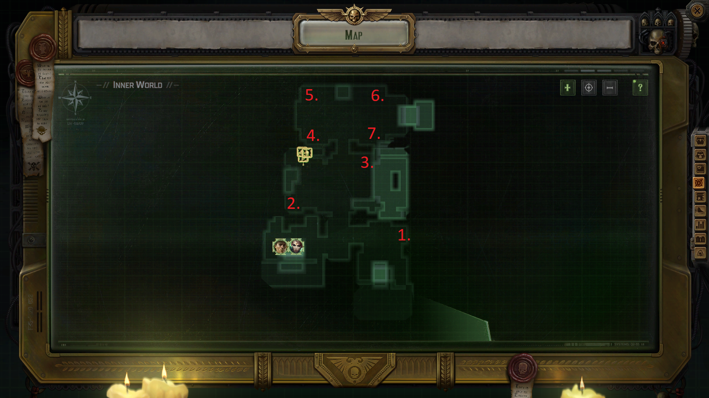
- Cassia & RT
- Special dialogue occurs if Cassias Romance is active.
- Heinrix & RT
- Special dialogue occurs if Heinrixs Romance is active.
- Jae & RT
- Special dialogue occurs if Jaes Romance is active.
- Argenta
- Idira
- Abelard
- Pasqal
In terms of what you actually need to interact with in order to progress, you’ll have to interact with a few key objects, ghosts of yourself, and enemies. I’ve included another screenshot of where the specific objects you have to interact with are located on the map, and numbered them.
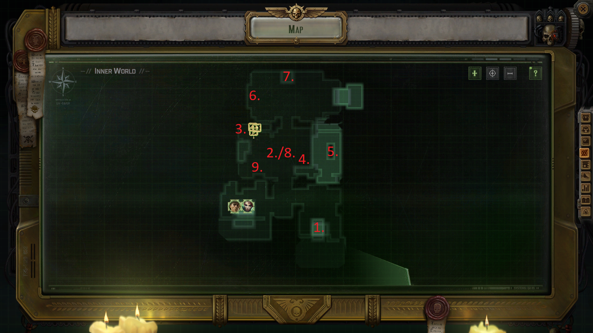
- Accept your fears.
- Dispel your loneliness.
- Listen closely.
- Chat with an old acquaintance.
- Dispel your exhaustion.
- Get some encouragement.
- Accept and let go of your doubts.
- Accept yourself.
- You will get special dialogue depending on your alignment.
- Listen to Yrliet.
After interacting with 9., Yrliet will tense up and you’ll finally be able to control your echo. You have a few choices available.
- 1. "Why are you so surprised by these particular echoes of my world?"
- 2. [Look closely at the ghostly figures]
Guidemaker selected option 1, which then unlocked another response.
- 1. "When you strive to know someone, they inevitably become a part of you." [No new choices]
If you select “[Look closely at the ghostly figures]” your choices will be:
- 1. [Make your echo touch Yrliet's echo's hand] [+1 TooMonKeigh]
- 2. [Make your echo kiss Yrliet's echo]
- 3. [Make your echo embrace Yrliet's echo]
- 4. [Resist the temptation] [+1 Accordance]
You’ll get pulled out of your nice spa session, and be presented with a few options.
- 1. "Wow. I feel as if I have been reborn." [No new choices]
- 2. "It's not litter, it's my inner world!" [No new choices]
- 3. "Will you help me with meditation again?" [No new choices]
- 4. "When we were meditating, you did not seem surprised by my...
- relationships with our mutual acquaintances." [Only appears if etude CassiaRomance is active] OR [Only appears if etude Heinrix is active] OR [Only appears if etude JaeRomance is active] + [No new choices]
- 5. "Will I be able to see your world?" [Ends the event]
- 6. “Thank you for showing me this part of myself.” [Ends the event]
You can exhaust options 1-4, and then select either option 5 or option 6 to end the event.
Kibellah
Bridge Event - Labyrinth Dance, Following | Occurs two warp jumps after recruiting Kibellah.
Requirements
Summary
Kibellah would like to perform a ritual with the Lord Captain
Specifics
After performing two (or less?) Warp Jumps, Kibellah will request that the Rogue Trader joins her on the bridge for a ritual. Your first options to respond are:
- 1. "What is this ritual?"
- 2. "I will be there." [Activates etude EventinOfficersDeckLabyrinth]
- 3. "I have no time for rituals."
Zip back to the bridge, and go have a chat with her. Select the option:
- 1. "I am ready for the binding ritual." [Activates etude LabyrinthDance]
Kibellah will then yoink you to her ritual area, and you have a few options to respond:
- 1. "What exactly are we going to do?" [No new choices]
- 2. "What is all this on the floor?" [No new choices]
- 3. "I am ready, Kibellah. Let us begin." [Begins the “dance”]
- 4. "Get on with it. The sooner we are done with this, the better." [Begins the “dance”]
After your “dance”, your next options will be:
- 1. "Can you tell me what this really was? What is the true meaning of this rite?"
- 2. "This fight - what a captivating expression of your culture."
- 3. "Thank you for performing this ritual, Kibellah. I believe we are done here." [Ends the event]
- 4. “Can we stop with this nonsense now?” [Ends the event]
If you select “Can you tell me what this really was? What is the true meaning of this rite?” / “"This fight - what a captivating expression of your culture."” you will unlock a new set of options:
- 1. "I did not mean to offend you." [No new choices]
- 2. "I only seek to understand why this matters to you to understand you."
- 3. "Forget I asked." [Ends the event]
If you select “I only seek to understand why this matters to you to understand you.” you will unlock a new set of options:
- 1. "My rituals? What do you mean?"
- 2. "Hmph. Yes, you are right. Our rituals are simply too different for us to understand each other." [Ends the event]
If you select “"My rituals? What do you mean?"” your next options are:
- 1. "Would you like to see my world, Kibellah? You have allowed me to witness your ritual - it is only fair that I show you one of mine." [Activates etude KibellahAcceptInvitation]
- 2. "My world is more than mere lustre. Perhaps it would help you to have a closer look at my life." [Activates etude KibellahAcceptInvitation]
- 3. "Hmph. Yes, you are right. Our rituals are simply too different for us to understand each other." [Ends the event]
Personal Quest - Rituals of the Upper Decks | Given automatically after finishing Bridge Event - Labyrinth Dance, Following and asking Kibellah if she wants to partake in one of your rituals.
Go speak to High Factotum Janris, and select:
- 1. "I would like to introduce Kibellah to some of the customs practised among people of my stature - show her what life is like on the upper decks, so to speak."
Pick an event, the correct one is the social event. Thank you to /u/hronir_fan2021 for providing information about the Officers Report option!
- 1. "The warp translation ritual?" [Leads to the social event]
- 2. "An officers' report meeting?" [Leads to the social event]
- 3. "How about a social event?" [“Correct” choice]
- 4. "I was counting on you to choose an appropriate ritual."
Either way, now you have to play the waiting game. One warp jump after, Janris will let you know the event is all ready. Your options to respond are:
- 1. "I doubt that Kibellah will enjoy this..." [No new choices]
- 2. "Splendid, Danrok. Summon my illustrious officers."
- 3. "I have changed my mind: cancel the gathering. Kibellah has no need for such ceremonies." [Cancels the event]
Let’s go to said event. Return to the bridge and use the elevator to head to the Officer’s Deck.
Social Event
At the social event, your first choices to Killebah will be:
- 1. "I see you have found a delicacy that is to your liking?" [No new choices]
- 2. "How do you like the 'ceremonies' on the upper decks?"
- 3. "How are you?"
If you select "How do you like the 'ceremonies' on the upper decks?" your new options will be:
- 1. "Camaraderie. Spending all your days in toil can be... dreary". [Returns to this section]
- 2. "Gratitude. My crew is willing to give their lives for the dynasty, and this is my way of praising their service." [Returns to this section]
- 3. "Power. These people came at the snap of my fingers. They look at me, hang upon my every word and gesture, hoping against hope that I might grace them with a smile or a glance." [Returns to this section]
Any choice moves the conversation along, but eventually you will have to select “How are you?” and you will unlock a new set of options:
- 1. [Give Danrok a pointed look]
- 2. [Coercion 85] [Look at the other attendees] "Could it be that someone here finds the conduct of the Lord Captain's guest disturbing?"
- 3. [Persuasion 85] [Smile at Kibellah] "I see you have already mastered the art of commanding attention. You seem to be quite in your element."
- 4. [Watch in silence]
Any option moves the conversation along, checks passed or not, and your next options are:
- 1. [Gesture at her spinner's mask and regalia] "Your choice of attire is not customary for such gatherings." [No new choices]
- 2. "I sense that this gathering was a terrible mistake."
And then:
- 1. "I grow weary of the crowd. Take a walk with me."
- 2. "It is high time that this dull evening was over and done with. We should return to our duties." [Ends the event]
Once you go on a walk, your choices will be:
- 1. "What do you mean, 'why'?" [No new choices]
- 2. "You are my instrument, my blade - one that I intend to maintain." [Ends the event]
- 3. "You are my comrade - I cannot simply dismiss you and your wishes!” [Ends the event]
- 4. "I have come to value your company."
- 5. "I wanted to show you that there are other things in life besides service and duty."
Select option 4-5 to continue the event, and then your options are:
- 1. [Step closer] "That sounds promising."
- 2. "That is the first time you have been honest with me about your desires. To see your sincerity - that is the truly priceless gift here." [+1 Synchronicity]
- 3. [Lean closer to Kibellah] "Never regret an action that has given you what you want. You and I are here, alone. What does one little lie matter?" [+1 Taint]
- 4. "I have no use for a blade that tries to deceive and toy with me. Remember that." [Ends the event]
If you select any option from 1-3 your options are:
- 1. [Kiss Kibellah] [No new choices]
- 2. "I want to stay with you, somewhere private." [Activates etude KibellahRomanceActive] + [Activates etude KibellahSex] + [+ 1 KibellahNightTogetherRepeat]
- 3. "Thank you for this evening. I hope it will not be the last." [Activates etude KibellahRomanceActive]
If you decide to have sex with Kibellah, you will wake up in your bed with her after and have a few options to respond:
- 1. "We have certainly become closer. This pleases me."
- 2. "I do not want to speak of souls. I simply want to enjoy you and your company."
- 3. "I am not certain there will be a second time. That won't affect our relationship, will it?"
- 4. "Did you enjoy this evening?" [No new choices]
- 5. "I did not know physical intimacy held any interest for spinners." [No new choices]
- 6. “I must attend to other matters.” [Ends the event]
Select from option 1-3, and then exhaust options 4-5 and end the event with option 6. Or just end it, there are no active etudes or anything in the post-fuck convo.
Bridge Event - An Engagement in the Crypt | Occurs after rooting out minions of heresy in your Voidships Crypt.
Kibellah will ask to speak to you, and your first options are:
- 1. "Is something wrong?" [No new choices]
- 2. "Of course. I will be there shortly."
- 3. "I am busy."
Select option 2 to speak with Kibellah in the crypt. She will ask you to perform a ritual with you, and your options are:
- 1. "Sew my eyes shut? What, forever?" [No new choices]
- 2. "Why should I go on this... journey?" [No new choices]
- 3. "Well... I am ready."
- 4. "I am against such experiments." [Ends the event]
Select option 3 to continue the event. As the ritual begins, your next options are:
- 1. [Immerse yourself in the pain of your past and trust Kibellah to guide you] [Only appears if Shadows of Torment was chosen as your Darkest Hour] + [+1 Concentration]
- 2. [Awareness 40] [Focus on her voice] [+1 Concentration]
- 3. [Toughness 40] [Focus on the pain] [+1 Concentration]
- 4. "No... enough! Remove the stitches. I want no more of this!" [Ends the event]
Your next options are:
- 1. "You are calling me. Where to?" [No new choices]
- 2. [Athletics 40] [Push through the feeling of suffocation] [+1 Concentration]
- 3. [Willpower 40] [Conquer your weakness] [+1 Concentration]
- 4. "No... enough! Remove the stitches. I want no more of this!" [Ends the event]
And then:
- 1. [Take Kibellah's hand and step forward] "I trust you." [+1 Synchronicity]
- 2. [Take Kibellah's hand and pull her toward you] "Trust me. Follow me." [+1 Taint]
- 3. "No... enough! Remove the stitches. I want no more of this!" [Ends the event]
If you continue the ritual, your nest choices are:
- 1. "I saw a glowing labyrinth - just like the one you traced on the officers' deck..." [Only appears if Concentration is 2+ and the option “[Take Kibellah's hand and step forward] "I trust you."” is selected / Thank you to u/Sad_Cryptographer872 for the information]
- 2. "You were different just now. More... feeling." [No new choices]
- 3. "Thank you for the ritual." [Ends the event]
- 4. "It was a difficult experience, but we did it together." [Ends the event]
- 5. "I would rather not go through something like this again." [Ends the event]
Warp Event - Soite | Occurs 2 warp jumps after finishing Bridge Event - ???
Kibellah speaks of her Tarot reading this morning, and relates it to a recent uprising on your ship. She wants to go with you to investigate the uprising. Your first options are:
- 1. "The blood's whisper? Did you perform another divination?"
- 2. "See, Jocasta? It seems to me that your enforcers could learn much from these death cultists."
Selecting "The blood's whisper? Did you perform another divination?" will unlock a new option:
- 3. "Kibellah, tell us everything you know."
And then:
- 1. "And you gleaned all of that from a couple of bloodstains? Or did you have a vision?"
- 2. "If the attackers have escaped through the maintenance tunnels, we can send in the enforcers after them."
Selecting "If the attackers have escaped through the maintenance tunnels, we can send in the enforcers after them." unlocks a new option:
- 3. "So we still have no idea where to find Nemesite."
And then:
- 1. "The plasma drive chambers? Are you certain?"
- 2. "Sauerback, gather the enforcers. We will follow Nemesite's trail."
- 2. "By the power vested in me by the Holy Ecclesiarchy and in the name of the God- Emperor, I hereby sanction a sacred hunt be performed in pursuit of the heretic who calls himself Nemesite!" [Only appears if player character has the Ministorum Priest Origin]
Selecting "Sauerback, gather the enforcers. We will follow Nemesite's trail." / "By the power vested in me by the Holy Ecclesiarchy and in the name of the God- Emperor, I hereby sanction a sacred hunt be performed in pursuit of the heretic who calls himself Nemesite!" unlocks a new option:
- 3. "So what do you suggest we do, Kibellah?"
And then:
- 1. "Kibellah is right: it would be prudent to use a disguise." [Activates etude KibellahQ1_Disguise]
- 2. "Disguises are overrated. You will do just as well without one."
And then:
- 1. "What is this ceremony?"
- 2. "I do not have time for this right now." [Ends the event]
Selecting “What is this ceremony?” unlocks the option:
- 2. "Very well. Let the ceremony commence."
Kibellah will then start a ritual, and your first choices are:
- 1. "I feel strange... What is happening?" [No new choices]
- 2. "Must I really wound myself for this?" [No new choices]
- 3. [Hand back the dagger] "You have my permission to go on this hunt, but I will not disfigure my own body. It carries enough scars already."
- 4. [Make a small cut on your palm]
Make the small cut on your palm, and then:
- 1. "I see.... strange things. Within you and without." [No new choices]
- 2. "May your fury and resolve be unshakeable."
- 3. "May your loyalty to the flagship be ever our steady guide during this mission."
- 4. "Be merciful. Those whom you hunt may be victims themselves."
- 5. "I bestow my blessing upon you and so on and so forth... Can we finish this up now?"
Options 2-5 all lead to the next set of choices:
- 1. "Is this some kind of psyker sorcery?" [Repeats]
- 2. "So I would become a part of you? What does that mean?"
- 3. "I trust you, Kibellah. Let us begin." [Ends the event]
- 4. "I would prefer to forgo any interweaving of souls." [Activates etude NoSpiritualThread] + [Ends the event]
You need to have a Spiritual Thread to successfully continue her romance, so DO NOT select “I would prefer to forgo any interweaving of souls.” if you are romancing her.
You will then switch to controlling Kibellah. I recommend having Toybox installed for this section, as it has been pretty glitchy for me on both Taint and Synchronicity routes. I’ve had to manually activate and finish sections of the quest via Toybox as there was nothing for me to interact with in the Plasma Drive Chambers and I had no way of progressing the quest “normally”.
Your first choice when playing as Kibellah and investigating the Plasma Drive is:
- 1. [The thread shakes. The quarry always leaves a trail. We may not see it, but we can feel it]
And then:
- 1. [The web is taut. Know the hunting ground]
And then:
- 1. [I step silently. Darkness is our ally. Merge with the shadows]
Einrich ❤ and Jocasta will appear, and your next option will be:
- 1. [Examine Steel Mistress and Flaming Voice] [No new choices]
- 2. [Step forward] "I am here."
If you entered the Plasma Drives before?
Once you step forward, your choices will be:
- 1. "Intimidate them with an impending threat."
- 2. "Instil a false sense of impunity. Convince them that they can and must act now."
- 3. "Strike out the spark that will ignite the flame."
Exhaust all the dialogue, and then speak to Whip, who is on your right. Your choices will be:
- 1. [Awareness 15] [Whip, what can your scars reveal to me?]
- 2. "Nothing is unimportant during the hunt. Tell me what you know, and I will listen."
- 3. [Let the enforcers converse. I will keep an eye on those around us]
Exhaust all the options, and your next choices will be:
- 1. [I breathe in essence made from the ashes and blood of the faithful. It enlightens the mind, granting it the grace of reading His signs]
And then:
- 1. [I know how Whip's thread will end]
You’ll then have to knock over some fuel, and set up a trap for Whip to walk into. Wait for Whip to die, then go speak to Stain.
When you speak to Stain for the first time, your options will be:
- 1. [Persuasion -10] "I am the herald of the end you fear so much. The Undying One has not whispered your name, so cast away your fear. No one will take your life before it is time."
- 2. [Medicae 15] [The quelling stimulant on the needle's tip will loosen Stain's tongue]
- 3. [Coercion 15] [The laypeople fear the grim gaze of the spinners. I will stay silent and wait. His resolve is bound to crumble]
Pass a check, and then:
- 1. [One glance is enough for me to see your true self, Stain] [No new choices]
- 2. "Where do things stand in the plasma drive chambers? Speak briefly. Speak sense."
When you pick "Where do things stand in the plasma drive chambers? Speak briefly. Speak sense." you will unlock a new choice:
- 3. [Set up the snare] "There will be a raid soon. Be careful. I warn you in appreciation for your cooperative nature."
And then:
- 1. "When the renegades hear of the coming retribution, it will make them nervous. Prone to mistakes. Likely to give themselves away."
- 2. "This was done in service to the Domin. You are free to believe me or walk away."
- 3. "Reveal the truth to the enemy, and they will harm themselves with it."
When you have completed all sub-objectives, draw closer to Hammer and Anvil and you will be pulled into a conversation:
- 1. [Listen to the rapid beating of hearts] [No new choices]
- 2. [What are those two talking about? Hammer and Anvil]
- 3. [The web is spun, but I am not ready to chase my prey into the snare just yet. Later] [Exits the conversation]
Select “[What are those two talking about? Hammer and Anvil]” to unlock a new option:
- 3. [Wait for the right moment and then light the spark]
Watch Einrich flip his lid, and your next set of choices will be:
- 1. [Take a closer look at Furnace] [No new choices]
- 2. [Feel the flowing rage of these poor wretches] [No new choices]
- 3. [Think about Domin'[PLAYER NAME]] [Only appears if etude NoSpiritualThread is inactive]
- 4. "You should be grateful for having been blessed with both toil and injury. Who would you be without them? Nothing but worthless rabble." [Only appears if Kibellah is on the Distortion path]
- 4. "Which of you was it that dared call the Lord Captain's judgement unfair? I demand to see the accuser." [Only appears if Kibellah is on the Humility path]
- 4. "Already you are rioters in everything but name, and then you ask why you have been shown no trust?" [Only appears if Kibellah is on the Fanatic path]
- 5. [Remain silent]
If you select “[Think about Domin'[PLAYER NAME]]” you will unlock a new set of choices:
- 1. "Which of you was it that dared call the Lord Captain's judgement unfair? I demand to see the accuser." [+1 DemagogsOverplayed]
- 2. "Already you are rioters in everything but name, and then you ask why you have been shown no trust?"
- 3. "You should be grateful for having been blessed with both toil and injury. Who would you be without them? Nothing but worthless rabble."
- 4. [But her voice does not resound in my thoughts]
Your next choices will be:
- 1. [Sense the smell hanging over the crowd]
- 2. [Turn my thoughts to Domin'[PLAYER NAME]] [Only appears if etude NoSpiritualThread is inactive]
If you select “[Turn my thoughts to Domin'[PLAYER NAME]]” you will unlock a new set of options:
- 1. "Whole ranks of warriors have feared the Domin's gaze. Rebellions have withered at the wave of her/his hand. You are no warriors. You will not withstand her/his gaze. Remember that." [Only appears if player character has the Commissar Origin] + [+1 DemagogsOverplayed]
- 1. "The Domin takes care of all, for such is her/his burden. But she/he cannot save everyone." [Only appears if Kibellah is on the Humility path]
- 2. "Your seditious words have been heard and will not be forgotten. I hereby chastise this compartment for its profane thoughts." [Only appears if Kibellah is on the Fanatic path]
- 3. [Reveal my blades] "Do you seek to challenge me? You may try." [Only appears if Kibellah is on the Distortion path]
And then:
- 1. [Look Rapier in the eye]
And then:
- 1. [Lore (Warp) +35] [Sense the fetid stench of blasphemy] [No new choices]
- 2. [Appeal to Domin'[PLAYER NAME] loudly and exigently] [Only appears if etude NoSpiritualThread is inactive] [No new choices]
- 3. "Death will claim you all, but not today - unless you are truly keen to meet its embrace."
- 4. [Bare one of my blades] "Do you wish to die? I swear that anyone who follows the mutineers will perish this day!"
- 5. [Use my throwing knife to take an idle swipe at Rapier's face] "Seal your lips, heretic."
Select from 3-5, and then:
- 1. "Stop! You are committing treason!" [No new choices]
- 2. [Stand firm and do not resist] [No new choices]
- 3. "Sauerback! Monteg! Assist me!" [No new choices]
- 4. [Lose myself in the dance of blood] [Activates etude EscapedDemagogue]
After losing yourself to the dance of blood, your next choices are:
- 1. [Awareness +15] [What can these corpses reveal to me?] [No new choices]
- 2. [What will the appearance of the survivors tell me?] [No new choices]
- 3. [Are Flaming Voice and Steel Mistress still alive?] [No new choices]
- 4. [It is time for the next step]
And then, if you are in a romance with Kibellah, your choices will be:
- 1. [Suffering will banish all that besets the labyrinth]
- 2. [Prayer will restore my focus]
- 3. [I... will not resist]
And then:
- 1. [I draw the beginning of the Spread]
- 2. [I draw the heart of the Spread]
- 3. [I draw the end of the Spread]
You can also speak to Kibellah on the bridge about her quest/mission regarding what happened in the Plasma Drive Chambers.
After all that, go to the Shrine and speak to Confessor Adalbert in the Shrine. Your first options will be:
- 1. "Who alerted you to my visit?" [No new choices]
- 2. "I demand an explanation, Confessor. This instant."
And then:
- 1. "And you were so good at moaning about the servants he killed..." [No new choices]
- 2. "You are not even trying to lie. This is commendable." [No new choices]
- 3. "So, you are a heretic, then?" [No new choices]
- 4. "Any rebellion is a strike against the Imperium, to the advantage of the enemies of Humanity. Repent, for there is no fate worse than to be deprived of His light."
- 5. "I too desire a better life for my subjects. The path to that need not be violent - let us make peace and change life on the ship together."
- 6. "Face the facts - you are no champion of justice. You are a manipulator who raises himself up by standing on the corpses of others. I am not judging you. On the contrary, I could use a man of such talents. Together we could accomplish a great deal..."
- 7. "I see."
Options 4-7 will move to the next choice of:
- 1. "Do you serve Nemesite or do you command him?" [Activates etude RTKnowsNemesitelsTheSon]
And then:
- 2. "What else were you lying about?"
- 3. [Attack] "Die, traitor!"
If you select “"What else were you lying about?"” your next options will be:
- 1. "How did your deception go unnoticed?" [No new choices]
- 2. "Your 'liberation' is rooted in betrayal and bloodshed." [No new choices]
- 3. "So, Nemesite is just a man? Excellent. It is harder to kill a legend." [No new choices]
- 4. "Are you hoping he will save you now?" [No new choices]
- 5. "Any last words, Adalbert?"
- 6. [Attack] "Die, traitor!"
If you select “"Any last words, Adalbert?"” your next options will be:
- 1. "For betraying the faith, I hereby excommunicate you from the Emperor's light and name you an abomination! And now-die, heretic." [Only appears if player character has the Ministorum Priest Origin]
- 2. "Impostor Adalbert, I, Rogue Trader [PLAYER NAME] von Valancius, sentence you to death for treason!"
- 3. "You are responsible for the deaths of countless people. The time has come for a reckoning."
- 4. "To separate a family would be cruel. You and your son will see each other soon enough."
- 5. "Despite your crimes, I will keep you alive. Sauerback, arrest the traitor."
- 6. "Kibellah, it was you who found him. Therefore, it is up to you to pass judgement."
Every option starts a fight.
Afterwards, if you saw the Genecultists scar way back when you were personally investigating the lower decks after your bathtub filled with blood, your options will be:
- 1. "So he was connected to the genetic aberration as well. Delightful."
- 2. "Groxshit!"
And then, after selecting either option:
- 1. [Address Ziek] "I have questions for you, traitor."
- 2. "They were waiting for us. It was a trap."
If you select “[Address Ziek] "I have questions for you, traitor."” your next options will be:
- 1. "Were you serving Nemesite for a cause or simply for money?" [No new choices]
- 2. "Where is Nemesite's hideout?" [No new choices]
- 3. "Are there any other senior officers helping you?" [No new choices]
- 4. "How many more of you mutineers are hiding on my ship? I want to know your names, I want to know where you meet - everything." [No new choices]
- 5. "I have learned all I need."
After selecting “"They were waiting for us. It was a trap."” you will unlock a new option:
- 3. [Nod at Ziek] "Now, let us decide what to do with our surviving traitor."
And then:
- 1. "What would that accomplish?"
- 2. "We will do as Kibellah proposes." [Activates etude ZekeExecuted]
If you select “"What would that accomplish?"” you will unlock a new set of options:
- 2. "We will do as Kibellah proposes."
- 3. "Enough blood has been spilt. I hereby pardon this deluded fool, to show the rest of the vessel that I am not the monster that Nemesite paints me to be." [+5 Iconoclast] + [Activates etude ZekeFreed]
- 4. "Sauerback, get him an escort so that he may tell the lower decks that Nemesite is a liar and a scoundrel. You will persuade him to be eloquent, will you not?" [Activates etude ZekeGivenToMD]
And then you can pick who your new confessor will be:
- 1. "The Creed must be strictly observed aboard the vessel. Since the voidsmen are wavering in their faith, let the High Factotum find a true servant of the Ecclesiarchy elsewhere." [Activates etude NewConfessorChosen_Eccl]
- 2. "Appoint a loyal crew member who is known for the strength of their faith - someone the children of the void will recognise as their own. We do not want any outsiders." [Activates etude NewConfessorChosen_Void]
- 3. "I trust the Bloodspun Web and grant the cult the honour of guiding the congregation aboard my ship." [Activates etude NewConfessorChosen_Death]
- 4. "I want you to find a preacher on Dargonus who would kill their own mother for me. I will accept nothing less than absolute loyalty. Is that clear?" [Requires Heretical alignment] + [Activates etude NewConfessorChosen_Chaos]
- 5. "Deal with it yourselves." [Activates etude NewConfessorChosen_Eccl]
After killing Confessor Adalbert, she will be staring at her reflection in the blood. Your choices are:
- 1. "Is something wrong?" [Activates etude TalkedAboutNemesite]
- 2. "We are done here. Come."
If you select “Is something wrong?” you will unlock a new set of responses:
- 1. "To equate a true servant of the God-Emperor with this apostate is a heresy unto itself!" [+1 Fanatic]
- 2. "You are different. He is a murderer, but you understand the true value of human death." [+1 Humility]
- 3. "You are indeed alike. And it is up to you to prove before the God-Emperor's gaze that the Tenets of the Web are stronger than whatever Nemesite believes in." [+1 Fanatic]
- 4. "Yes, both of you have been brainwashed. Stop looking for omens and try using your own judgement instead." [+1 Distotion] + [omfg]
- 5. "It is not my place to judge.”
And then if you are in an active romance with Kibellah and did activate the Spiritual Thread, she will immediately ask to discuss what happened during her mission in the Plasma Drive Chambers. Your first choices are:
- 1. "You were thinking about me?"
- 2. "I didn't mean to complicate your ritual."
- 3. [Smirk] "That is quite the confession. You have submitted to an opponent who didn't even land a single blow! How does it feel?"
- 4. [Listen in silence]
Select any option from 1-4 and your next options will be:
- 1. "I doubt the God-Emperor forbids our bond."
- 2. "Thinking about someone you hold dear is perfectly normal."
- 3. "Why are you so distraught? Can't you reserve even one small part of your life to yourself?"
And then:
- 1. "I would continue doing my duty."
- 2. "I would accept that the appearance of someone important in my life was bound to throw things into a bit of a disarray."
- 2. "Desires and passions will not stand in my way. Predators do not bow their heads. Nor are they deterred by obstacles." [Only appears if "Why are you so distraught? [...]” was select + Thank you to emailer B.] + [+1 Taint] + [+1 Distortion]
- 3. "I refuse to answer that question." [+1 Synchronicity]
- 4. "I am tired of your woes. There won't be anything to distract you anymore, because you and I are done." [Ends the romance]
Any option ends the event.
Personal Quest - A Card Inverted | Occurs two warp jumps after finishing Warp Event - Soite
Drag Kibellah along to the ambush for Nemesite. After defeating Nemesite, Kibellah will ask to speak to you on the bridge regarding everything. Go zip over and talk to her, and your first options will be:
- 1. "Who is Nemo?" [No new choices]
- 2. "How is your wound?" [Only appears if a check was failed during the final confrontation with Nemesite] + [Thank you to IRON!]
- 3. "What did you wish to discuss?"
Selecting “"How is your wound?"” unlocks new option(s):
And then:
- 1. "Does this have anything to do with our earlier conversation, about your resemblance to Nemesite?" [Only appears if TalkedAboutNemesite is active]
- 2. "You are the scourge of the renegades. You deliver His vengeance in the name of the righteous." [+1 Fanatic] + [Activates etude KibellahllignmentQ1]
- 3. "You serve the Undying Emperor, yet you also serve His faithful. You are the givers of His Peace." [+1 Humility] + [Activates etude KibellahllignmentQ1]
- 4. "You are my servants, my weapons. You serve the dynasty." [+1 Fanatic] + [Activates etude KibellahllignmentQ1]
- 5. "All you are is a sect of the deadliest, most terrifying zealots on this ship." [+1 Distortion] + [Activates etude KibellahllignmentQ1]
- 6. "I cannot be the judge of that." [Activates etude KibellahllignmentQ1]
??? Ritual
Solomorne
Recruitment?
As of 1.4.1.0, Solomornes recruitment has been updated and will now occur earlier. Still in Act 2, but, eh… small victories.
Personal Quest - Heartless Void | Occurs two warp jumps after finishing either Janus, Kiava Gamma, or Dargonus in full.
Requirements
Summary
You meet some old acquaintances, who now need your help. Of course, there’s some wonderful rewards in it for you.
Specifics
Return to Void Dock Alpha-Rho after dealing with the Liege, and head to the location marked below.
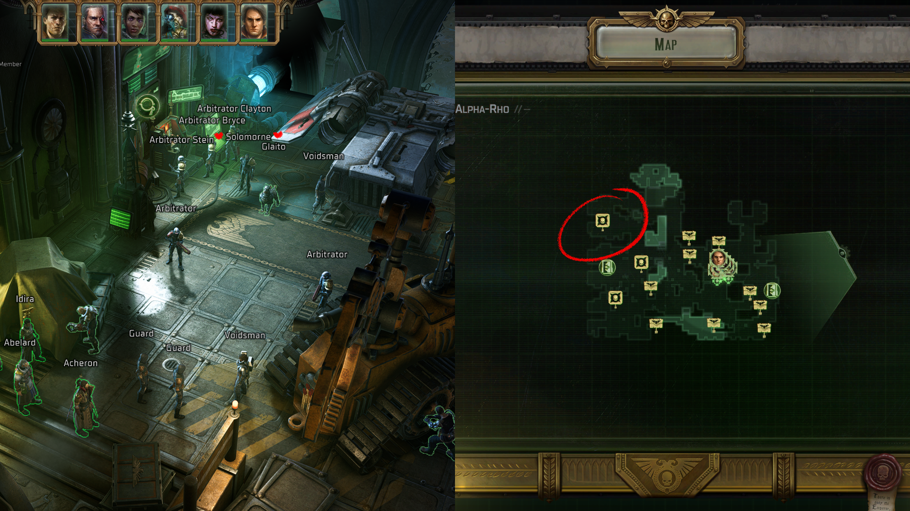
Your first choices will be:
- 1. "It is a pleasure to see your Solomorne. And you, Glaito."
- 2. "l knew you would be back, begging another boon... First the rescue from Rykad, now this."
And then:
- 1. "Why have you approached me and not Winterscale? Rykad Minoris was his world."
- 2. "l will help the Adeptus Arbites. What is the plan?"
- 3. "l expect to be well compensated for my efforts, or else I shall be severely displeased. Now tell me the particulars."
Selecting “"Why have you approached me and not Winterscale? Rykad Minoris was his world."” will unlock new option(s):
- 1. "It is poor form for a Rogue Trader to refuse to help servants of the law." [No new choices]
- 2. "So, you've lost a ship and you want someone else to solve your problem?" [No new choices]
And then:
- 1. "Tell me more about the ship you are promising me."
- 2. "l need more information about the thief."
- 3. "Any tactical recommendations for the assault?"
- 4. "l may have other matters to attend to en route to the Mundus Nullius. Will you be able to accompany me?" [Does not recruit Solomorne]
Selecting “"Tell me more about the ship you are promising me."” will unlock new option(s):
- 1, "l don't want the ship — I want a cut of the tithe." [Activates etude WantTithe] + [No new choices]
- 2. "Hmm. So, you're offering me a ship that I have to capture myself? Not much of a deal." [No new choices]
- 3. "Counter-offer: I get the ship, and you join my entourage at the same time." [No new choices]
- 4. "l see." [Returns to this section]
Selecting “"l need more information about the thief."” will unlock new option(s):
- 1. "Give me the rundown on Sargona." [No new choices]
- 2. [Study the file] [No new choices]
- 3. [Study the hologram] [No new choices]
- 4. "How are you so well informed?" [No new choices]
- 5. "That will do." [Returns to this section]
Selecting “"Any tactical recommendations for the assault?"” will unlock new option(s):
- 1. [Study the data-slate]
- 2. "What do these call signs mean?"
- 3. "l dislike my call sign. A Rogue Trader needs something grand Emperor's Eagle, for example." [Activates etude BS_NewCall] + [lol]
- 4. "You have a deal."
And finally end the conversation with:
- ?. "l have no more questions. Board the flagship and await my command."
Now, we have to zip over to the Mundus Nullius star system. You’ll enter it, and see the fleet located on the far right.
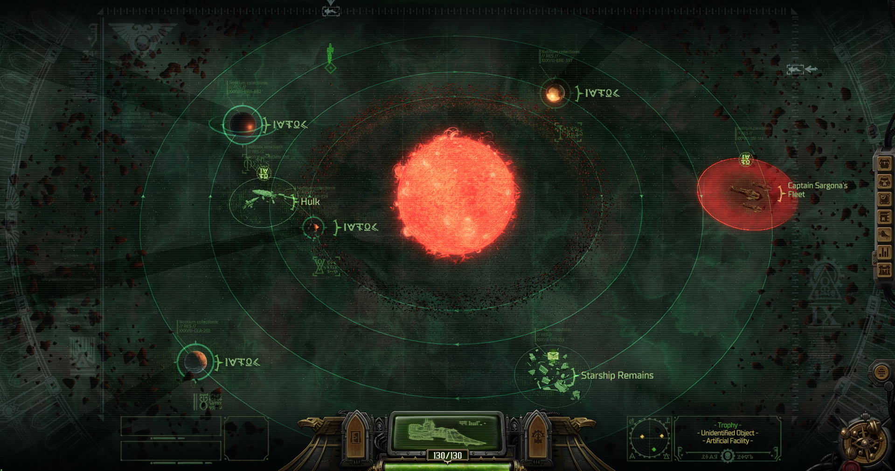
Zip over, and your first options will be:
- 1. "Give me a tactical report on the enemy." [No new choices]
- 2. "Patch me through to the captain of the Heartless."
- 3. [Attack] "Ready the cannons!"
Selecting “"Patch me through to the captain of the Heartless."” will unlock new option(s):
- 1. "Solomorne, read this criminal his verdict."
- 2. "l will grant you a swift death if you lay down your weapons." [Starts a fight]
- 3. "Brew me some recaf and wipe down the captain's throne after you vacate it — I will be there shortly." [Activates etude BS_Recaf_1]
- 4. "l need nothing from you, Sargona. I am coming to take everything myself."
Crush this fool, and then:
- 1. "Fire on the section just beneath the entry point. We will collapse the elevator shafts between the compartments and leave the enemy without reinforcements." [Activates etude BS_NoReinfFromLift]
- 2. "We need to clear out the boarding zone. Ravort shake up their upper deck." [Activates etude BS_AdditionDamage]
- 3. "Prepare to board. Solomorne, are your people ready?"
Let’s go boarding onto the Heartless.
- 1. "It seems your main formation is going to be A-48. I will plan my squad's tactics with this in mind to maximise our effectiveness during the advance. The Arbitrators' strength is in coordinated action — the enemy will fall under our joint onslaught." [Only appears if player has Arbitrator Origin] + [Activates etude BS_ArbitesSpeech]
- 1. [Address Sobmorne's squad] "Arbitrators, I expect every heretic on this ship to come to know the implacability of justice. Today, the Emperor Himself heeds your verdicts — so go and deliver death unto the enemy!" [Only appears if player has Commissar Origin] + [BS_CommissarSpeech]
- 1. "Why not go all together? We can overwhelm them with our numbers." [No new choices]
- 2. [Smile] "It is very gallant of you to take the fire upon yourself to spare me." [Activates etude BoardingFlirt]
- 3. "l don't want you to die, Solomorne, so be careful. Don't risk your life on my account." [Activates etude BoardingFlirt]
- 4. "It sounds like it's more dangerous to go below. Why don't we switch?" [No new choices?]
- 5. "Let's move out."
Selecting “"It is very gallant of you to take the fire upon yourself to spare me."” / “"l don't want you to die, Solomorne, so be careful. Don't risk your life on my account."” will unlock new option(s):
- 1. [Smile even more widely] "Your professionalism is terribly charming." [Only appears if you selected the [Smile] option before] + [No new choices] + [Returns to this section]
- 2. "l am not accustomed to receiving such attentions from brave Arbites warriors. It is quite a pleasure." [No new choices] + [Returns to this section]
- 3. "You do not know me well enough yet. It remains to be seen who will need saving, trust me." [No new choices] + [Returns to this section]
- 4. "Will do." [No new choices] + [Returns to this section]
Anyway, flirting or not, rip your way through the ship, taking shots as you can and clicking basically every cogitator you come across. Eventually, a Servo skull will smack into you and your options will be:
- 1. "The hollow threats of a man whose ship has been boarded." [+1 BS_CapitanTaunt_BoomTimer]
- 2. "Why did you steal the tithe? Did you really think you could escape the Imperium's wrath?" [+1 BS_CapitanTaunt_BoomTimer]
- 3. "Just the man I wanted to see. How is my recaf coming along? I do not like it too hot." [Only appears if etude BS_Recaf_1 is active] + [Activates etude BS_Recaf_2] + [+1 BS_CapitanTaunt_BoomTimer]
- 3. [Destroy the servo-skull] "You talk too much."
And then, go touch a computer which throws up an error. Time to ask for help. Your options are:
- 1, "If you've been waiting for an opportunity to gallantly rescue a Rogue Trader from under fire and earn his/her regard, it's time to act." [Activates etude BoardingFlirt]
- 2 "Solomorne, we are pinned down. Can you help? No heroics — I need you alive. It would be a shame to end our acquaintance without first getting to know each other better." [Activates etude BoardingFlirt]
- 3. "My unit is under fire. We need assistance!"
- 3. "Emperor's Eagle is under attack! I repeat: Emperor's Eagle is under attack!" [Only appears if etude BS_NewCall is active]
- 4. "Requesting support, DX-1. Do you copy?"
- 5. "Get me the void out of here! You have one minute, or I will have you patrolling Dargonus backstreets for the rest of your life!"
Time to play hero. You’ll switch to Solomornes POV and get to order Glaito around, and crawl upwards towards your Rogue Trader. Eventually, you’ll meet back up and finally Solomorne will join your retinue properly. Your first choices are:
- 1. [Whisper] "Solomorne, I am pleased that you wish to be close to me in battle, but why be so blatant about it?" [Activates etude BoardingFlirt]
- 2. [Gently touch Solomorne's shoulder] "You are wounded. You have lost your comrades. You should rest and let me take care of you. I will confront Sargona myself." [Activates etude BoardingFlirt]
- 3. "l would feel safer dispatching the cornered pirate alongside my retinue."
- 4. "Let us go together. We will surprise Sargona with a small army."
- 5. "Sounds reasonable. Let us move out."
- 6. "l am doing you a favour, bloodhound. You had best remember it."
Selecting “[Whisper] "Solomorne, I am pleased that you wish to be close to me in battle, but why be so blatant about it?"” / “[Gently touch Solomorne's shoulder] "You are wounded. You have lost your comrades. You should rest and let me take care of you. I will confront Sargona myself."” will unlock new option(s):
- 1. [Laugh] "This competent warrior act is very sweet, but you're not hiding anything." [Returns to this section]
- 2. "You'll soon see what I'm worth in a fight. I don't need protecting." [Returns to this section]
- 3. "Relax — I understand. You are simply carrying out your mission." [Returns to this section]
And finally when you reach the bridge, your choices are:
- 1. [Awareness +35] [Look around]
- 2. "Would you indulge me by answering a few questions?
- 2. [Fill your voice with the promise of inexorable punishment] "Who among you pirate scum will dare raise their hand against a disciplinary officer and learn first-hand what kind of death I have prepared for you?" [Only appears if player has Commissar Origin] + [Activates etude BS_SwarmsForRT]
- 2. [Look at Sargona's henchmen] "If you have grown weary of the pirate's life — stand and fight with me. You all know that, in such circumstances, the right to come aboard is earned with blood." [Only appears if player has Navy Officer Origin] + [Activates etude BS_SwarmsForRT]
- 3. [Persuasion -15] [Address the pirates] "Whoever brings me Sargona's head will receive a pardon and a spot on my flagship's crew!" [Activates etude BS_SwarmsForRT]
- 4. [Willpower +10] [Unleash powers of the warp against your enemies] "Fall, you worms!" [Player must have PsyRating] + [Activates etude BS_SwarmsFeared]
- ?. [Strike the barrier) "You are a pathetic coward, Sargona. But your ploys won't stop me getting to my recaf!" [Only appears if etudes BS_Recaf_1 and BS_Recaf_2 are active]
- 5. [Charge into battle) "Enough! I am carrying out your sentence!"
If you pass the Awareness check, you will unlock two new options:
- 2. [Give Solomorne a three-finger signal and attack the guard] "This has been a grand waste of my time... Now!" [Only appears if you pass the Awareness check]
- 2. [Destroy one of the suspicious devices) "You have such fascinating toys. I wonder what they look like on the inside." [Only appears if you pass the Awareness check]
Getting pulled into combat means you have four turns to defeat the enemy before you get pulled into a warp translation. Oh, and make sure to turn off the backup reactors. And then:
- 1. "This boarding mission turned out to be more dangerous than expected. I believe additional compensation is in order?"
- 2. "l want to have a look around first."
- 3. "Very well. Let us return."
You can look around the bridge and pass some checks to pick up a rumor about a cache. Back on your original voidship, your first options will be:
- 1. "And I thank you, my knight in shining armour, for being so valiant and solicitous." [Only appears if etude BoardingFlirt is active]
- 2. "You and Glaito would have managed without my help. Actually, I do believe that dog could have captured the ship all on its own."
- 3. "You know, I have rather enjoyed upholding the law. You and I make a good team, no?"
- 4. "Yes, you should be thanking me! Judging by this operation, all they teach you is how to stand at attention and die when ordered."
Selecting “"And I thank you, my knight in shining armour, for being so valiant and solicitous."” unlocks new option(s):
- 1. "Solomorne, you are a dreadful liar."
- 2. "Are you saying you don't enjoy my company?"
- 3. "Oh. Then I apologise, I misunderstood."
- 4. "l know. I'm just teasing, and you're acting like a little boy."
You can then decide what to do with the Heartless. I’ll add full details soon (or I’m sure another guide will cover it) but your next conversation with Solomorne is:
- 1. "l appreciate the irony of the situation. My whole life I have avoided lawmen like the plague, and now one is asking to join my retinue — a Proctor, no less." [Only appears if player has Crime Lord Origin] + [Recruits Solomorne]
- 1. [Wink] "Reports are the last thing one feels like doing after a battle, wouldn't you agree?" [Only appears if etude BoardingFlirt is active] + [Recruits Solomorne]
- 2. "Does this mean I get to keep this fine dog to help me kill heretics? Excellent!" [Ends the conversation] + [Recruits Solomorne]
- 3. "Assisting the Adeptus Arbites is the duty of every subject of the Imperium. I will take you to Dargonus as soon as circumstances permit." [Ends the conversation] + [Recruits Solomorne]
- 4. "Two dogs for the price of one. What a steal! Of course, both still need to be properly trained, but we'll get there, right?" [Ends the conversation] + [Recruits Solomorne]
- 5. "l assume throwing you out of an airlock right now would prompt questions from your Marshal later? So be it: I accept — as long as you keep that mutt of yours on a chain." [Ends the conversation] + [Recruits Solomorne]
Selecting “[Wink] "Reports are the last thing one feels like doing after a battle, wouldn't you agree?"” unlocks new option(s):
- 1. [Take his hand] "Would you like to find out?" [Fade to black sex scene]
- 2. "What about you?"
- 3. [Smile] "That's none of your business." [Ends the conversation]
Selecting “"What about you?"” unlocks new option(s):
- 1. [Move closer and whisper in his ear] "An excellent plan, Proctor. Are you ready to execute it?" [Fade to black sex scene]
- 2. "l think we should start with ablutions and then move on to everything else. Agreed?" [Fade to black sex scene]
- 3. [Smile] "A most thrilling plan. But you have to spend all night writing up
- reports instead." [Ends the conversation]
If you do decide to have sex with Solomorne, you’ll be prompted with a conversation post-fade to black:
- 1. [Study Solomorne] [No new choices]
- 2. "You have entertained me. I am pleased I did not err in granting you this privilege." [No new choices]
- 3. "Did you enjoy sharing a bed with the Rogue Trader?" [No new choices]
- 4. "l think we should do this again once in a while."
- 5 "Remember this night. It's unlikely to happen again."
Selecting “"l think we should do this again once in a while."” unlocks new option(s):
- 1. "What makes you think an affair would harm our working relationship?" [No new choices]
- 2. "Admit it, you didn't actually enjoy it." [No new choices]
- 3. "What if I ordered you to continue our affair?" [No new choices]
- 4. "Very well, I respect your opinion."
- 5. [Sigh] "Unfortunately, you're right. I can't afford to have an affair with you. It wouldn't be fair."
- 6. "You know what? Get out."
Selecting “[Sigh] "Unfortunately, you're right. I can't afford to have an affair with you. It wouldn't be fair."” unlocks new option(s):
- 1. "You are loyal to your duty, but love will demand that you be loyal to the Rogue Trader. That will tear you apart." [+1 SolomonrneImpressed] + [Ends the conversation]
- 2. "Forget it. It's fine." [Ends the conversation]
Bridge Event - Yes, You Can Pet the Dog | Can occur immediately after Solomorne is recruited.
Requirements
Summary
Bow-wow!
Specifics
Go up to Solomorne and his constant companion and select:
And then:
- ?. [Pet the dog] "You are a fine and loyal companion, aren't you, Glaito?"
And then:
- ?. "I am still going to pet him! "
And then, if you pass a Lore (Imperium) +30 check, you will pet the bestest of boys.
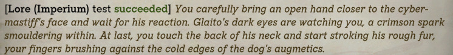
Alongside this, if you ask Solomorne:
- ?. "Does Glaito have a favourite type of training or some other pastime of choice?"
Your next choices are:
- 1. [Persuasion +40] "That can't be all of it, can it?"
- 2. "l think you and Glaito could do with your own training ground. I will order a space be prepared in one of the compartments and have it outfitted with everything you need." [+1 SolomorneRespectsYou]
- 3. "Let's talk about something else."
Personal Quest - An Audience with the Arbites | Automatically given after completing Personal Quest - Heartless Void.
Requirements
- Personal Quest - Heartless Void is completed.
Summary
It is now time to do someone elses job… again.
Specifics
Head over to Dargonus, and specifically head over to the Throne Room, and go up to Solomorne. Your first options will be:
- 1. "l would prefer to first know exactly what it is that the head of the Adeptus Arbites in the Expanse wants to see me about." [No new choices]
- 2. "Yes. I am ready to discuss our business." [Starts the event]
- 3. "l hope it will not be exhausting, Call your Marshal in." [Starts the event]
And then:
- 1. [Get comfortable and listen to the end]
- 2. [Clear your throat]
- 3. [Doze off]
And then:
- 1. "Prefect, I recall seeing your face somewhere... Didn't I kill you at the Administratum Palace?" [Only appears if etude AP_KillPrefect is active]
- 1. "Prefect, Master of Seals... Is that not too many titles for one official?" [Only appears if etude AP_KnowPrefect is active]
- 1. "Inscribia? Who would give their child a name like that?'
- 2. "Abelard! What are these people doing in my demesne?' [Only appears if Abelard is alive] + [No new choices?]
- 3. "l do not recall seeing you at court. What are you doing in my demesne?"
Selecting “"Prefect, I recall seeing your face somewhere... Didn't I kill you at the Administratum Palace?"” unlocks new option(s):
- 1. "And what is to stop me from 'discharging' you again?"
Selecting “"l do not recall seeing you at court. What are you doing in my demesne?"” unlocks new option(s):
- 3. "And what circumstances are those?"
And then:
- 1. "Are you implying that I have an obligation to help you?" [No new choices]
- 2. "And which world was it that had the misfortune of drawing your attention?" [No new choices]
- 3. "If one of my governors has missed a tithe payment, I will simply have them hanged and the debt collected." [No new choices]
- 4. "l will carry forth the responsibilities taken on by Lady Theodora. I offer you my help."
- 5. "l hope I can expect a proper reward for my assistance."
- 6. "These are your problems, not mine. I am turning down your request."
Accepting the quest leads to these choices:
- 1, "l have enough fighters in my retinue already. Why would I want an Administratum spy?" [No new choices]
- 2. "Thank you for your support. I will go to Thassera as soon as I can."
- 3. "Fine, I will try not to lose your dog handler."
Now, with our dog handler in tow, we must go to Lavella's Heart. Enter the system and move to Thassera. Then, go to the High Fortress point of interest. And then:
- 1. "l thank you for the courteous welcome, Governor; however, we have come here to address a grave concern." [+1 FW_Kind]
- 2. [Glance around with a bored expression] "Might we proceed inside now? I find all this squalor rather tiring" [+1 FW_TooNoble]
And then:
- 1. [Accept the gift] "Thank you, Bluff." [+1 FW_Kind]
- 2. [Wave in Abelard's direction] "Seneschal, you take it. I do not wish to soil my hands." [Only appears if Abelard is in the active party] + [+1 FW_TooNoble]
- 3. "Do your servants often interrupt their rulers' conversations without permission, Governor?" [+1 FW_TooNoble]
- 4. [Strike the fool] "Mind your place, peasant!" [+1 FW_Cruel]
And then:
- 1. "Tell me your gossip, then." [Might only appear if you’re kind?] + [Activates etude FW_BanditSecret]
- 2. [Awareness: +30] [Look at the governor] [Activates etude FW_Clue_GovernorHorse]
- 3. "What happened to your face, Ruoldo?"
- 4. "'Celestial Highness.' What kind of an address is that?" [No new choices]
- 5. "Ruoldo, I'm sure you know why we are here."
- 6. "Abelard, announce the purpose of our visit to these provincials." [Only appears if Abelard is in the active party]
- 7. [Nod to Solomorne]
Selecting “"What happened to your face, Ruoldo?"” unlocks new option(s):
- 1. [Dogmatic] "As long as it does not hinder your service to the Imperium, I will allow it." [+1 FW_TooNoble] + [+5 Dogmatic]
- 2. [Iconoclast] "You put on other people's skin out of a desire to look younger? You will declare this vile practice banned — today." [+1 FW_Kind] + [+5 Iconoclast]
- 3. [Heretical] "A fine tradition indeed... I hope the subjects are conscious when you peel their skins off? I would love to attend such a procedure myself sometime and enjoy the show." [+1 FW_Cruel] + [+5 Heretical]
- 4. "Interesting."
Selecting “"Ruoldo, I'm sure you know why we are here."” / “"Abelard, announce the purpose of our visit to these provincials."” / “[Nod to Solomorne]” unlocks new option(s):
- 1. "l believe there was something else the esteemed governor wished to say?"
- 2. "You heard the Proctor, Take us somewhere we can have a serious conversation."
- 3. [Glare at Ruoldo] [+1 FW_PassiveAggressive]
And then:
- 1. [Smile] "Relax, Maive. Just pretend that you are giving a good friend a tour of the place." [No new choices]
- 2. "Your face is your own. Why is that?" [Appears if you selected “What happened to your face” previously] + [No new choices]
- 3. "You mentioned entertainment. Tell me more."
- 4. "What an exquisite necklace! I think it would look better around the neck of your Celestial Lady." [Activates etude FW_TookAmulet] + [No new choices]
- 5. "Very well. I would like to see what this place has to offer."
- 6. [Yawn] [+1 FW_PassiveAggressive]
- 7. "Remember, Maive: I do not want to hear a word out of you unless I give you explicit permission or ask a direct question." [Activates etude FW_SilentLizzy]
- 8. "l have absolutely no interest in your base entertainments. The sooner we start reviewing the tithe documents, the better!"
Selecting “"You mentioned entertainment. Tell me more."” unlocks new options(s):
- 1. [Nod at the servitor orchestra] "Fascinating. How did you manage to acquire something like that?" [Activates etude FW_KnowAboutDeIegation]
And then:
- 1. "Can't wait to meet some kindred spirits?" [No new choices]
- 2. "Never harm these people without my permission again, Solomorne." [No new choices]
- 3. "Let’s go, then. We must not miss the biggest local spectacle."
- 4. "If it will help the investigation, we should not dally."
- 5. "We have plenty of time. First, I will inspect every nook and cranny in this place."
There’s a large variety of events that occur at this nightmare world, however, one of note is that you can ask Solomorne to dance with you:
- 1. "Solomorne, will you dance with me?" [Activates etude ArbitesRomance_DanceHappened]
The dance, no matter what you do, sort of gets fucked up. But, after solving the issue on the planet, going home, delivering your report, handling it (and other garbage) in court, and THEN leaving, Solomorne will prompt you to spend the night with him, and your choices are:
- 1. "l look forward to our next meeting." [Activates etude SolomorneAfterDanceSexEvent_KTC]
- 2. "l am not in the mood."
You’ll get a fade to black, and then be woken up by a gunshot. Your choices are:
- 1. [Immediately reach for your weapon]
- 2. "What's happening?"
- 3. "Have you lost your mind, Solomorne? Stop firing a gun in my chambers!"
And then:
- 1. "It was just a dream. You can relax."
- 2. [Say nothing and listen intently to every sound]
- 3. "I am ordering you to put your weapon away before you kill someone."
And then:
- 1. [Smile] "Nothing to worry about. If I'd dreamt about Vultur, I'd have riddled the whole room with bullets, too." [No new choices]
- 2. "Do you often have dreams like that?" [No new choices]
- 3. "You're a nutcase!" [No new choices]
- 4. "Do you always sleep with your weapon?" [No new choices]
- 5. "Since no one is trying to kill us, I suggest we both go back to sleep."
And then:
- 1. "What did you dream about exactly? Tell me."
- 2. [Grab his arm] "Don't. Stay."
- 3. "If you want to go — go." [Ends the event]
And then:
- 1. "All this has taken more of a toll than you've let on, hasn't it?" [No new choices]
- 2. "l was afraid on Thassera, too." [No new choices]
- 3. [Smile] "I'm proud of you. Even in your dreams, you kill the enemies of the Imperium." [No new choices]
- 4. [Touch his shoulder] "No law says you have to carry it all inside. Share it with me."
- 5. "I'm not going to make you bare your soul. Let's go to sleep."
Selecting “[Touch his shoulder] "No law says you have to carry it all inside. Share it with me."” unlocks new options:
- 1. [Tightly grip his hand] "l permit you to be vulnerable with me. If necessary, I will protect you myself." [+1 SolomonreImpressed] + [Ends the event]
- 2. [Embrace him] "l look at you and I see no weakness. Only the wounds of a strong man."
- 3. [Smoothly cuff Solomorne's hand to the bed with his handcuffs] "l know how to distract you from dark thoughts."
- 4. [Stroke his head] "It will pass. I promise." [Ends the event]
Bridge Event - Glaito’s Prize | Occurs one warp jump after Solomornes first sex scene.
Requirements
Summary
Glaito has suddenly started throwing your men around like chewtoys. Time for you to deal with it.
Specifics
Your first choices are:
- 1. "Any idea what has brought on this behaviour?" [No new choices]
- 2. "Where is Solomorne?" [No new choices]
- 3. "l will deal with this immediately."
- 4. "The sheer worthlessness of some of my subjects is staggering. Once again, I must handle everything myself."
Let’s go see what’s wrong with the dog. Approach Glaito and your first options will be:
- 1. [Call out to the wounded officers] "Are you all right?" [No new choices]
- 2. [Examine Glaito closely] [No new choices]
- 3. [Approach Glaito]
- 4. [Step away]
Selecting “[Approach Glaito]” unlocks new option will cause you to roll a passive +15 Logic check.
- 1. "Easy. Good boy."
- 2. "Shoo! Get!"
- 3. [Place your weapon against your neck] "Obey, or blood will be spilt. What do your protocols have to say about my safety?" [Only appears if you pass a passive +15 Logic check] + [Activates etude ArbitesRomance_Dataslate]
- 4. [Willpower +35] [Slowly reach out and take hold of his collar] "You wouldn't dare hurt me." [Activates etude ArbitesRomance_Dataslate]
- 5. [Wound Glaito] "You leave me no choice!" [Activates etude ArbitesRomance_DogWounded] + [Activates etude ArbitesRomance_Dataslate]
Presumably, going for his true ending, don’t hurt the only thing he cares about (the dog). Suicide bait yourself to the dog, or pass the check, and you will roll a passive +15 Perception check. Your next options will be:
- 1. "Danrok, send Glaito to be monitored by the Tech-Priests."
- 2. "Glaito, have you been guarding that data-slate?" [No new choices]
- 3. [Study the data-slate]
Selecting “[Study the data-slate]” unlocks new option(s):
- 1. [Read your file] [No new choices]
- 2. [Study the last lines about you] [No new choices]
- 3. [Show Danrok the intriguing notes] "Janris, what does this look like to you?" [No new choices]
- 4. "Find Solomorne and bring him to my chambers immediately. We need to talk." [Goes directly to cabin/office]
- 5. "l shall speak to Solomorne about this further." [Returns to voidship bridge]
Going directly to your cabin results in these choices being available:
- 1. "An explanation would be appreciated."
- 2. [Smile] "l wish to know if this creation has a second volume. I am amazed by the author's imagination."
- 3. [Maintain a stern silence]
- 4. "You are not obliged to say anything if you don't want to. I'll just give it to you."
And option then leads to:
- 1. "Glaito was injured during the incident in the wardroom. I'm sorry for that." [Only appears if etude ArbitesRomance_DogWounded is active] + [No new choices]
- 1. "So you are spying on us." [No new choices]
- 2. "How did your notes end up in the wardroom?"
- 3. "Something tells me you left the data-slate in a conspicuous place on purpose. You left it there for me." [Only appears if etude ArbitesRomance_Dataslate is active] + [No new choices]
- 4. [Read out the best parts] "Are you talking about these 'overtures'?" [No new choices]
- 5. "And what made you muse about how to make overtures toward me?"
- 6. [Return the data-slate] "l consider this inappropriate. You may go." [Ends the romance]
Selecting “"How did your notes end up in the wardroom?"” unlocks new option(s):
- 1. "You still have much to learn in your profession." [Returns to this section]
- 2. "Your mistake gave me a reading experience I shall never forget." [Returns to this section]
- 3. "l see." [Returns to this section]
Selecting “"And what made you muse about how to make overtures toward me?"” unlocks new option(s):
- 1. "You are such a romantic, Solomorne. Where did you acquire such experience and self-assurance in matters of the heart?" [No new choices]
- 2. "And if I agree, this will be something more than one night of fun?" [No new choices]
- 3. "How have I so beguiled you?" [No new choices]
- 4. [Hold out the data-slate to Solomorne, but pull it back at the last minute with a smile] "l have to ask. Which of the ideas was your favourite?"
- 5. [Return the data-slate] "l think we should leave things as they are." [Ends the romance]
Selecting “[Hold out the data-slate to Solomorne, but pull it back at the last minute with a smile] "l have to ask. Which of the ideas was your favourite?"” will unlock new option(s):
- 1. "l can't believe it. Solomorne, you're a musician! How can you hide such talent?"
- 2. [Burst out laughing] "l’m sorry, but this is terribly poignant — an Arbitrator playing the organ for me!"
- 3. [Lore (Imperium) +5] [Place your fingers on Solomorne's hands and play along with him] [Ends the event]
- 4. [Take Solomorne's hand] "Your gesture is well received. Your words are forgotten. Come." [+1 SolomonreImpressed] + [Ends the event]
- 5. [Return the data-slate] "l think we should leave things as they are." [Ends the romance] + [Ends the event]
Selecting “"l can't believe it. Solomorne, you're a musician! How can you hide such talent?"” will unlock new option(s):
- 1. "Is organ playing part of an Arbitrator's training?" [No new choices]
- 2. "You play well." [Returns to this section]
- 3. "Next time, don't admit to knowing only one piece." [Returns to this section]
- 4. "You have unexpected talent." [Returns to this section]
Bridge Event - Judge, Jury, Executioner | Occurs one jump after finishing Personal Quest - An Audience with the Arbites
Requirements
Summary
Specific
Ravor will prompt you and tell you that Solomorne has arrested one of your voidsmen and is demanding he be executed. Your first choices are:
- 1. "Who is the voidsman?" [No new choices]
- 2. "Bring the detained man to me immediately. I will personally interrogate him." [Activates etude VB_lnvestigationFirst_KTC]
- 3. "l will deal with this when time allows." [Gives an errand as a reminder]
- 4. "Solomorne may execute him if he deems it necessary, and let that be the end of it." [Activates etude VB_lnvestigationFirst_ExecutedInPrompt]
Let’s go deal with it. Your first choices are:
- 1. "Why did you attack my subjects, Solomorne?"
- 2. "Solomorne, why are you so certain that this is the man you're seeking?"
- 3. "Ravor, did you know about this?"
- 4. "Cease any 'investigations' behind my back. If I hear of such a thing again, Arbitrator, you will be put off this ship — and not via shuttle, but through the airlock." [Completes etude VB_Completelnvestigation]
Selecting “"Why did you attack my subjects, Solomorne?"” unlocks new option(s):
- 4. "Accused, do you have anything to say?" [No new choices]
Selecting “"Solomorne, why are you so certain that this is the man you're seeking?"” unlocks new option(s):
- 2. "How did a criminal from Calixis find his way onto my ship?" [No new choices]
Selecting “"Ravor, did you know about this?"” unlocks new option(s):
- "I have made my decision."
And then:
- 1. "Ravor, this talented voidsman is your responsibility. Should he commit any misdeeds henceforth, you will have to answer for them."
- 2. "l do not trust this man to remain in the Master Helmsman's crew... but I cannot allow such talent to go to waste. Hand him over to the Factotum, he will find a use for him."
- 3. "The fugitive criminal must be punished. Execute him."
AND THEN, around 4 warp jumps after, Vigdis will prompt you that Solomorne is sniffing around in the archives. NOTE: Dialogue might be slightly inaccurate as they changed it recently and I denied Solomorne the chance to investigate on my current playthrough.
Your choices are:
- 1. "Why not just grant him access to the records?" [No new choices]
- 2. "l will meet with both of you immediately." [Activates etude (VB_lnvestigationSecond_KTC]
- 3. "l have other matters to attend to. We will discuss this another time." [Gives an errand as a reminder]
- 4. "Give the Proctor access to the archived messages. This does not warrant a separate meeting." [Activates etude (VB_lnvestigationSecond_AccesslnPrompt]
Your first choices are:
- 1. "Vigdis, what's wrong with your hand?"
- 2. "Solomorne, why are you sabotaging the work of the crew?"
Selecting “"Vigdis, what's wrong with your hand?"” unlocks new option(s):
- 1. "Vigdis, why did you try to pet Glaito?"
Selecting “"Vigdis, why did you try to pet Glaito?"” unlocks new option(s):
- 1. "Solomorne, stop interrupting at once."
- 2. "Vigdis, reprimand yourself with a note on your personnel file. Glaito is a combat cyber-mastiff, property of the Adeptus Arbites, not some 'beast."'
- 3. "Be silent, both of you!"
Selecting “"Solomorne, why are you sabotaging the work of the crew?"” unlocks new option(s):
- 1. "What do you have to say to that, Vigdis?" [No new choices]
- 2. "Did you know that one of the voidsmen was a fugitive heretic?" [No new choices]
- 3. "Solomorne, what are you suggesting?"
Selecting “"Solomorne, what are you suggesting?"” unlocks new option(s):
- 2. "l have listened to you and I am ready to make a decision."
And then:
- 1. "There is no need for any audit. I trust my officers to keep everything under control." [Activates etude (VB_Nolnspection]
- 2. "Solomorne, you will be granted access to the archives and lead an audit of my crew."
- 3. "Vigdis, you and Janris will double-check all the crew on your own. Do not involve the Proctor."[Activates etude VB_lnspectionNoSol]
- 4. "Solomorne, this is not some filthy hive backwater. You will cease your self-righteous investigations at once, and you had better hope I hear no further complaints about your conduct!" [Fails questline]
Marazhai Achievement (Grantis Event)
You can’t actually recruit Marazhai in Act 2, but you can earn an achievement via pissing him off on Grantis during Main Quest - Blades in the Void. I’ve listed the options below that should get that achievement to pop for you.
Note: My party comp was Heinrix/Yrliet/Jae/Argenta/Idira. You can activate an etude if you bring Yrliet as well, which is activated automatically.
The etude that activates is MarazhaiSeesYrliet.
Here are the dialogue options that result in the achievement popping.
- 3. [Coercion: Succeeded] "My, my, this beast can speak our language!" [Requirements TBA]
And then:
- 4. [Coercion: Succeeded] “Aggravating, is it not - having someone best you at your own game?” [Requirements TBA]
And then:
- 3. [Coercion: Succeeded] “Hmm? Oh, you’re finished pontificating? I think I dozed off there for a second - do you mind repeating the whole thing from the start?” [Requirements TBA]
If you manage to succeed all those Coercion checks, you should get the achievement:
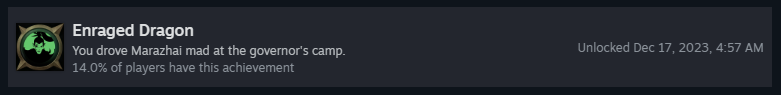
He’s so cute when he’s being a brat.
You’ll also activate the etude MarazhaiInsulted, but I’m unsure if this does anything.
Before Heading Into Act 3 Checklist
Lord-Commander, did you…
- Talk to everyone and exhaust all the dialogue?
- Activate any and all etudes you want to have activated?
- Completed any and all quests/rumors/contracts you wanted to?
- Picked which companions you would want in a real life or death scenario?
If you’ve done all that, proceed with the Main Quest - Following Breadcrumbs / Main Quest - Hunting the Hunter
Act 3
Idira
Help! Where do I find Idira in Commorragh?
Idira is located in the Anatomical Opera, an area that you will be directed towards after your first arena fight. I’ve attached a screenshot below of where specifically she’s located, as she’s not named even if you press the Tab key to highlight all notable objects/people.

Start a conversation with her, and you’ll be offered a few options:
- 1. "Idira, what are you doing here?"
- 2. "I am. And it is good to see that you live as well."
- 3. "There is no time to talk. I am taking you out of this place."
Select whatever you’d like as they all lead to the same choices:
- 1. "What are you talking about?"
- 2. "What have they done to you?"
- 3. "We need to leave. Now."
Again, select whatever you’d like to move to the next set of options:
- 1. "You forget yourself by addressing the Rogue Trader by his first name."
- 2. "How did he make your voices stop?"
- 3. "Does that mean... you cannot use your powers anymore?”
Selecting any option from 1-3 will unlock more choices:
- 4. "This isn't right, Idira. Whatever he did to you, it's perverted."
- 5. "Do you truly prefer to live... like this?"
Again, select whatever you’d like to move to the next set of options, which involve both checks and/or an alignment requirement:
- [Requires: Heretical - Adherent] [Mesmerise Idira] "Why do your whispers frighten you so much, Idira? Have they ever betrayed you? You should not give up such an incredible gift. Accept it, because that gift is who you are." [Requires 45 Heretical Points]
- 2. [Deactivate the xenodevice] "I am releasing you whether you want it or not." [Only appears if etude IdiraFreedByHem is active] + [Activates etude PsyDumperTakenOffbyForce] + [+1 Effectiveness]
- 2. [Medicae 0] "You look as if you are about to die. Whatever that thing is doing to you, you will not last long." [+1 Persuadeldira]
- 3. [Persuasion 0] "This is not living, Idira. It is better to live out the time you
- have on your own terms than spend an eternity existing the way you intend to!" [+1 Persuadeldira]
- 4. [Logic 0] "Everything comes at a price. Have you considered the price you are paying?" [+1 Persuadeldira]
- 5. [Weapon Skill -30] [Tear the xenodevice off Idira's head] [Activates etude PsyDumperTakenOffbyForce [+1 Effectiveness]
- 6. "If that is your conscious choice, I see no reason to force you."
- 7. [Kill Idira] "Death to the traitor!" [Activates etude IdiraBanished] + [Kills Idira]
- 8. “I will return to you later.”
You can just rip the device off of her if you’re going for an Effectiveness route. However, if you convince Idira to take the psy-device off herself, you will be able to gain +1 Humanity for her. You need to pass two of the above checks to make her realize she’s being used, to which then you can respond with:
- 1. "I believe in salvation through willpower and character, not at the hands of the Drukhari." [Activates etude PsyDumperTaken OffPeacefully] [+1 Humanity]
- 2. "The God-Emperor will help you. You must believe that He will." [Activates etude PsyDumperTaken OffPeacefully] [+1 Humanity]
- 3. "Perhaps we can figure out how that 'thing' works. But we will need to remove it first.” [Activates etude PsyDumperTaken OffPeacefully] [+1 Humanity]
- 4. "Let's think about all that after we get out of here." [Activates etude PsyDumperTaken OffPeacefully] [+1 Humanity]
As long as you take the psy-damper off, Idira will join you again. Hooray!
Argenta
Help! Where do I find Argenta in Commorragh?
Argenta is located in the Mangled Sector, the same area where you have to go to find the Commissar. She will actually be in the Commissars group. As soon as you draw close to his location, she will pull you into a conversation.
Planet Discussions - Shaken Faith | Occurs just before your second arena fight, Argenta will automatically pull you into a conversation.
Requirements
Summary
Argenta suffers a crisis of faith, and seeks guidance from one chosen by the God-Emperor.
Specifics
Your first choices to respond are:
- 1. "Are you distraught because of Vigastes's fate and the deaths of those betrayed by the Commissar?" [No new choices]
- 2. "Remain steadfast. We will break free from this darkness."
- 3. "If prayer is helping you get through this, I am glad to hear it."
- 4. "Darkness, spiritual fortitude... Personally, I am rather enjoying my time here!"
Options 2-4 all lead to the next set of choices:
- 1. "I trust you with my life."
- 2. "I do. You are a faithful ally."
- 3. "There is no one I trust completely. It is one of the principles I swear by."
- 4. "No. I cannot rely on you."
Select whatever you would like, as all choices lead to the next set:
- 1. "Of course." [Activates etude ArgentaRevealed] + [Unlocks Achievement: Whodunit]
- 2. "I have nothing better to do. Speak, if you so wish." [Activates etude ArgentaRevealed] + [Unlocks Achievement: Whodunit]
- 3. "No. Keep your secrets to yourself."
I recommend option 1-2, as it’s a genuinely decent twist. An achievement should pop as well.
Your next choices are.
- 1. “But?”
- 2. “And you would confess such a thing so casually?”
Pick whichever, they both lead to the next choices:
NOTE: if you have Idira in your party during this scene, she will attempt to kill Argenta. You can interfere or not with these choices:
- 1. [Do nothing to stop Idira] [Activates etude ArgentaToKill] + [Kills Argenta] + [+1 Effectiveness for Idira]
- 2. "Do your duty, Idira. The von Valancius blood will be avenged." [Activates etude ArgentaToKill] + [Kills Argenta] + [+1 Effectiveness for Idira]
- 3. "Idira, stop! Now!"
If you select option 3, you have two more choices for Idira:
- 4. "Idira, you are blinded by grief. Stop. None of us is perfect." [+1 Humanity]
- 5. "Stop. I order you." [+1 Effectiveness]
If you select option 4 “‘Idira, you are blinded by grief. Stop. None of us is perfect.’” there will actually be a chance for Argenta to gain a Fire increment.
- 1. [Nod to Argenta] [+1 Fire] + [Activates etude IdiraArgentaReact3]
- 2. "Enough. This quarrel ends here. Argenta, I have words for you."
After you select your choice above, you will have another set of options:
- 1. "You kept this secret all this time." [No new choices]
- 2. "Do you at least regret doing what you did? Your hands would not be covered in the blood of innocents had you not acted on impulse." [+1 Humility]
- 3. "You should have told me the truth. I see no reason to condemn you. Theodora deserved to die for her treachery. As for any other victims... it was acceptable collateral damage." [+1 Fury]
- 4. "What's done is done. I hope you will learn from this. Right now we need to think about a way to escape."
- 5. "You murdered my kin and hid the truth from me. That is unforgivable. Leave my retinue. May Commorragh take you." [Unrecruits Argenta] + [Activate etude LeaveArgenta]
Options 2-5 will end the event after these choices.
Abelard
Help! Where do I find Abelard in Commorragh?
Abelard is located in the Mangled Sector, the same area where you have to go to find the Commissar. You have to pass a +50 Athletics check to actually reach Abelard. I have attached a photo of where he is located, and what he looks like below.
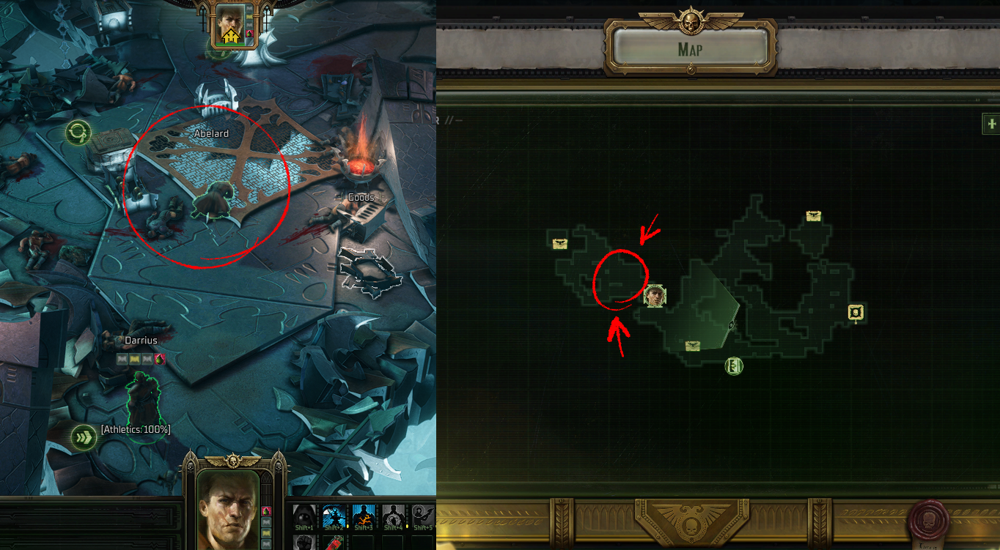
Approach your Seneschal, and you’ll get dragged into an absolutely heartbreaking conversation. You have a few options to respond:
- 1 [Say nothing]
- 2. "Abelard?"
- 3. "Seneschal! This is your Lord Captain speaking!"
Pick whatever you’d like, as they all lead to the next set of choices below:
- 1. [Requires: Dogmatic - Adherent] "Seneschal, the Addendum Prefectorium Militarum to the Tactica Imperium states that an army officer of the Imperium who submits to third-degree xeno-influence or higher is to be considered a traitor and a heretic. I will have no heretics under my command, Seneschal. I order you to conquer this illusion at once! Get to it, officer!" [Requires 45 Domgatic Points]
- 2. [Coercion -40] "Seneschal Abelard Werserian, cease this display! You serve Rogue Trader von Valancius, not your fantasies!"
- 3. [Persuasion -40] "No, Abelard! Your family is not here - they are waiting for you!"
- 4. [Inject Abelard with a stimulant] "This should bring you back to your senses." [Must have 1 of Equipment Usable: Drug Stimm] OR [Must have 1 of Equipment Usable: GladiatorsFirstAidKit] OR [Must have 1 of Equipment Usable: GladiatorsHealing Potion]
- 5. [Leave] "Farewell. It seems you will be better off alone with your mirage." [Activates etude LeaveAbelard]
- 6. "I will come back for you, Abelard. I give you my word."
Options 1-4 will break Abelard out of his hallucinations, option 5 will leave him to die and option 6 will allow you to come back and break him out later if you so choose.
If you do decide to break Abelard out of his hallucinations, you have some more choices to make:
- 1. "What happened to you?"
- 2. "Who is Quatharina?"
- 3. "Where are the others?"
- 4. "I, for one, have had enough of this heap of filth. It is time to move, Abelard." [Recruit Abelard Companion]
If you select option 1 “What happened to you?” you will unlock two more options:
- 2. "What was the thing that attacked you?"
- 3. "We will find a way to restore your time to you, Seneschal."
You can exhaust all the dialogue you would like, or just simply recruit Abelard using "I, for one, have had enough of this heap of filth. It is time to move, Abelard."
Heinrix
Bridge Discussions - Thawed Affections | Occurs after finishing Main Quest - The Emperor and My Right and speaking to Heinrix on the bridge for the first time.
Summary
It is time to wrestle some answers from Heinrix about his involvement in your interrogation.
Specifics
As soon as you approach Heinrix on the bridge, he will begin the conversation about what happened at your Magnae Accessio. You have a few options to respond.
- 1. “I am still waiting for an explanation.” [Occurs if Heinrix did not warn the RT about the interrogation.]
- 1. "You warned me. I was prepared for the unexpected." [Occurs if Heinrix did warn the RT about the interrogation.]
- 2. "I see no need to. I fully understand what happened and the circumstances surrounding it."
- 3. "I am warning you: if such a thing ever happens again, you and Calcazar
- will both regret it."
Options 1 or 2 lead to the next set of choices below, while option 3-4 ends the event.
- 1. [Move closer] "Must I throw myself at you every time, or are you going to take the initiative?" [+1 Devil]
- 2. "Heinrix, speak plainly: what is going on between us?" [+1 Devil]
- 3. "Warning me about Calcazar's visit, taking that risk-you must have had a reason for it."
- 4. "Yes, that is all I have to say on this subject."
Help! Where do I find Heinrix in Commorragh?
Heinrix is located in the Anatomical Opera, an area that you will be directed towards after your first arena fight. It’s a little trickier to get him than Idira, as you need to talk and convince Tervantias for it.
NOTE: This method doesn’t appear to work if you have yet to free Ulfar. More testing is required.
Start a conversation with Tervantias and select:
- "I would like to speak with you about a member of my retinue who was delivered to you."
You’ll then be able to ask about Heinrix, Cassia, or Idira, depending on who you brought. I recommend just selecting all the options, as it can’t hurt. After you’re through with the information gathering, select the option
- "Those from my retinue deserve better than to be confined by you. Relinquish them."
Tervantias will then ask why he should, and you have a few options to respond:
- 1. "With a full escort, I would have better chances of succeeding and contributing to your plans."
- 2. [Press your weapon to the base of your own jaw] "Unless you want to lose a valuable specimen, you will release my companion immediately."
- 3. "I will not stand for you keeping my companion captive! Do not try my patience, xenos!"
- 4. [Kneel] "I recognise your power over me and beg you for leniency." [Correct]
- 5. "I will find a way to free them, no matter what you do or say."
The only option that will succeed is option 4, begging for leniency. Tervantias will then release one of your companions. Do not pick Idira, as you can free her yourself normally.
This sort of boils it down to either Cassia or Heinirx, so pick whichever you prefer. This section will be focusing on what happens if you pick Heinrix, obviously.
After speaking with Tervantias, head to the north-west most part of the Anatomical Opera, until you see a Drukhari labeled Execution Engine Master. You can hit Tab to highlight all interesting NPCs/objects if you can’t find them right away. Go interact with the Engine Master and you have some choices to make:
- 1. "What manner of device is that?"
- 2. [Coercion -30] "Step away from the contraption, and I shall let you live."
- 3. [Kill the xenos]
If you select option 1, you have a few more chances to respond:
- 1. [Coercion -30] "Step away from the contraption, and I shall let you live."
- 2. [Lore (Xenos]: Succeeded] "Something tells me that you consumed those last samples yourself. What do you suppose Tervantias will do to you when he finds out?" [Requires passing passive +20 Lore (Xenos) check to appear]
- 3. "Essence of pain, you say? I wish to observe the extraction process." [Tortures Heinrix]
- 4. [Kill the xenos]
Options 1, 2, and 4 will release Heinrix, whilst option 3 will just torture him and bring you back to the choices above.
Anyhoo, the device will pop open and you have some more choices to make:
- 1. "Heinrix, it's [PLAYER NAME]. Can you hear me?"
- 2. [Release Heinrix from the device]
If you select option 1, you’ll get a new set of choices:
- 1. [Touch Heinrix's cheek] "What have they done to you..." [Only shows if Heinrixs Romance is active]
- 2. "This is no trick. Pull yourself together. I need your help."
- 3. "The God-Emperor's chosen will not be addressed in such a way by the likes of you, commoner!"
- 4. "To the warp with me? A splendid idea, but I am taking you with me, or else Calcazar will have my head on a platter."
- 5. [Release Heinrix] "I do not have time to prove anything to you."
Select any of the options above or just release him using option 5.
After you release Heinrix, you’ll have a few more options to respond:
- 1. "What happened to you after we were captured?"
- 2. "Did they blind you?"
- 3. "You cannot 'sense' your body? What does that mean, exactly?"
- 4. "Can you walk? We do not have much time."
You can exhaust options 1-3, and then select option 4 to finish this section of the event.
NOTE: If you have Yrliet in your party, Heinrix will start a conversation immediately after the event above is finished. You have a few options to respond:
- 1. "Yrliet did not want us to suffer this fate."
- 2. "I gave the xenos another chance. If she fails, I will march her out of the airlock."
- 3. "We are in the realm of the xenos. We need a xenos to help us. Will you object to that?"
- 4. "Why don't we talk about this later?"
He calms down no matter what you choose, thankfully.
NOTE: If you have Marazhai in your party and NOT Yrliet, Heinrix will start a conversation immediately after the event above is finished. You have a few options to respond:
- 1. "I can explain."
- 2. "Calm yourself, van Calox. The enemy of our enemy is our ally."
- 3. "This xenos is now under my protection. Should any harm come to him, you will regret it."
He calms down no matter what you choose, thankfully.
Study Event (?) / Errand - A Reprieve from Torment | Occurs automatically after rescuing Heinrix from the Anatomical Opera and speaking to him the first time in the Shriekers Den. $
Requirements
- Heinrix was rescued from the Anatomical Opera.
- Heinrixs romance is active.
Summary
The Interrogator finally seems to be taking a breather. Go check on him.
Specifics
Approach Heinrix and he’ll tell you that he’s finally begun to heal his wounds from torture. You can respond with:
- 1. [Look closely at him] [No new choices]
- 2. "I was worried when I discovered you had disappeared."
- 3. "How are you?"
Option 1 will boot you back to options of 2-3, so select one of those to continue the event.
- 1. "I can tell you what happened to me."
- 2. "It's not important. It's behind us now."
- 3. "I don't want to revisit it."
If you select option 1, you’ll spend an hour recounting everything to Heinrix, and have a few choices to respond:
- 1. "You had nothing to do with it."
- 2. "Do you think there is any truth to it?"
- 3. "Let's not talk about that."
All of the options lead to the next set of choices:
- 1. [Embrace Heinrix] "I'm not going anywhere."
- 2. "I wish there was something I could do to help you."
- 3. "I suppose I should go." [Ends event]
Selecting options 1-2 leads to the next set of choices, while option 3 ends the event.
Your next choices are:
- 1. "You've had to do that before?"
- 2. "You sound like you are speaking from experience."
- 3. "Please, I don't want to hear about this."
I recommend option 1 or 2, as it unlocks another option in the next set of choices, but all of the answers lead to the next set of choices:
- 1. "And after all that, you are still loyal to the Imperium and the Inquisition?" [Only appears if you selected option 1 or 2 in the above choices]
- 2. [Lean closer] "We will find a way out of here and go home, won't we?"
- 3. [Kiss Heinrix] "Your presence gives me strength."
- 4. "I must go."
Select option 1 if you wish to activate Heinrixs Corraption etudes, which are related to his True Romance Ending.
- 1. "They mutilated and maimed you purely because of what you are." [Activates etude CorraptionCommoragh1]
- 2. "It pains me even to listen to you. I cannot imagine the agony you suffered." [Activates etude CorraptionCommoragh2]
- 3. "You're right. The Imperium warrants any sacrifice."
If you’re going for his Heresy ending, pick one of the Corraption etudes. Otherwise, pick option 3. You’ll then have these options:
- 1. [Lean closer] "We will find a way out of here and go home, won't we?"
- 2. [Kiss Heinrix] "Your presence gives me strength."
- 3. "I must go."
If you [Kiss Heinrix]:
- 1. "Of course. I shall be here as long as you need."
- 2. [Grasp Heinrix's belt buckle] "l have a better idea about how we can spend our time together." [Thank you to am0rph0 for the reminder about this line]
- 3. "l really must go." [Ends the event]
If you [Lean closer]:
- 1. "I suppose I could... stay with you for a little while longer." [Activates etude HadSexinCommoragh]
- 2. "At least Commorragh managed to kill off the prude in you." [Activates etude HadSexinCommoragh]
- 3. "No. Not here." [Ends the event]
Options 1-2 do the sexy Owlcat classic of a fade-to-black event end, and option 3 gives you two more choices:
- 1. "Of course. I shall stay as long as you need."
- 2. "I really must go."
Both of these end the event.
Comments/Glitches
1 I somehow activated the Devil etude despite having a grand total of 0 on the Devil counter, and 5 on Closeness. It doesn’t seem to be breaking anything, but I thought I would note it here in case anyone else is going for the Closeness route and is wondering suddenly why a Devil conditional scene activated.
Planet Event - Terror Made Me Cruel | Occurs automatically after escaping the Arena, defeating the Envoy of the Poisonous Whisper and the Envoy of the Wounded Skies, and finishing your discussion with Nocturne of Oblivion. $
Requirements
- Yrliet is in the active party.
- Heinrix is in the active party.
- Marazhai is in the active party. [Conditional]
Summary
Heinrix has reached the end of his patience with Yrliet, and confronts her.
Specifics
This scene can play out in a lot of different ways depending on Achilleas current status, who you have in your party and if Heinrixs romance is active. This section is under heavy wip.
Unknown Etude (Possibly AchilleasWrackKilled?) is active:
Your first set of choices during this event will be:
- 1. [Address Marazhai] “Anything you want to say?” [Only occurs if Marazhai is in the active party]
- 2. "Heinrix. Stop."
- 3. "Why will you not even entertain the possibility that Yrliet is not lying?"
- 4. "Enough. We have to get out of Commorragh first and that will require the strength of each and every one of us."
Select what you would like, as it moves the conversation along regardless. Your next choices are:
- 1. [Stand between Heinrix and Marazhai] "Enough, both of you!" [Only occurs if Heinrixs romance is active]
- 2. [Strike Heinrix] "I have no need for an unhinged psyker!" [Presumably kills Heinrix]
- 3. [Strike Marazhai] "You will die for everything you have done, here and now!" [Kills Marazhai]
- 4. [Watch without interfering]
Pick whatever you’d like, as they all end the event with either nobody dead or either a Drukhari/psyker being dead.
Pasqal
Help! Where do I find Pasqal in Commorragh?
Pascal is found on the streets of Commorragh, and has an automatic cutscene regarding him once you reach the circled area below after your first arena fight.
The first choices are as follows:
- 1. [Look closely at him]
- 2. "Pasqal, can you hear me?"
- 3. "What happened to you?"
- 4. [Kill Pasqal] "I will help you." [Activates etude PascalBanished] + [Start etude PascalKilled]
- 5. "You are done for. I am leaving." [Activates etude PascalBanished] + [Start etude PascalKilled]
You can exhaust options 1-2, and 4. Option 3 moves you to the next set of choices:
- 1. "What became of you after our capture?"
- 2. "Where are the others?"
- 3. "Is there a way I can help you?"
- 4. "Come. We must look for a way out."
- 5. [Kill Pasqal] "I will help you." [Activates etude PascalBanished] + [Start etude PascalKilled]
- 6. "You are done for. I am leaving." [Activates etude PascalBanished] + [Start etude PascalKilled]
If you select option 3 “‘Is there a way I can help you?’” you will have a next set of choices to make
- 1. "What exactly did they change?"
- 2. "Purge your body of this corruption at once!"
- 3. "If it does not pose an immediate threat to your life, leave the xenometal inside your body for now. We will deal with it later."
- 4. [Kill Pasqal] "I will help you." [Activates etude PascalBanished] + [Start etude PascalKilled]
- 5. “You must be the one who decided what to do about the abhorrence inside you.”
If you select option “‘What exactly did they change?’” you will unlock a new dialogue option:
If you select option “Purge your body of this corruption at once!” you will have more choices, and chances to get increments:
- 1. [Requires: Dogmatic - Adherent] "Is your faith in the Machine God so feeble that you would allow your body to harbour the taint of xenotech alongside the True Flesh?" [Requires 45 Dogmatic Points] + [+5 Dogmatic] + [+1 Loyal] + [Activates etude Pasqal Purified] + [Recruit Pasqal]
- 2. [Coercion -30] "That is no reason to back down. Do it!" [+1 Loyal] + [Activates etude Pasqal Purified] + [Recruit Pasqal]
- 3. “Then we must look for other options.” [Returns player to this set of options]
- 4. [Kill Pasqal] "I will help you." [Activates etude PascalBanished] + [Start etude PascalKilled]
If you select option “‘If it does not pose an immediate threat to your life, leave the xenometal inside your body for now. We will deal with it later.’” you will have more choices, and chances to get increments:
- 1. [Requires: Heretical - Adherent] "Would you reject knowledge simply because the thought of breaking one pathetic rule frightened you? Think of the possibilities: you could comprehend the technology of the xenos and use it against its creators!" [Requires 45 Heretical Points] + [+5 Heretical] + [+1 Ego] + [Activates etude PasqalXenoAugment] + [Recruit Pasqal]
- 2. [Persuasion -30] "You are a warrior of comprehension. Survive, then, and comprehend!" [+1 Ego] + [Activates etude PasqalXenoAugment] + [Recruit Pasqal]
- 3. "You are right. You must not carry that putrescence inside you." [Returns player to this set of options]
- 4. [Kill Pasqal] "I will help you." [Activates etude PascalBanished] + [Start etude PascalKilled]
Either recruit or kill Pasqal, and the event will end.
Errand - The Chtonos | Occurs after speaking to Tervantias and acquiring the “The Chtonos” errand from him.
Requirements
Summary
Tervantias requires your aid, mon-keigh.
Specifics
You can actually get the errand from Tervantias in a variety of ways, and I endeavor to add all of them to the guide.
If you brought Abelard to Commorragh:
Select:
- “I require your aid, Haemonculus.”
And then:
- “Is there anything I can offer to repay a being of such brilliance for the attention he may graciously grant me?”
NOTE: In order to actually proceed with earning the errand/healing your party/etc, you will need to acquire genetic samples from either enemies/corpses/companions and exchange them with Tervantias. You should already have some due to finishing the first Arena fight, but there is a WIP guide for these materials located here.
And then:
- 2. "I met a monster in the Mangled Sector, a creature that can steal years of its victims' lives and mutilate their bodies. Are you able to heal that?" [Give Objective [Chtonos_errand] + [Activates etude AbelardHealedByHaemonculus]
Now, zip over to the Mangled sector. I have included a screenshot below of what the Chtonos looks like and where it is located below.
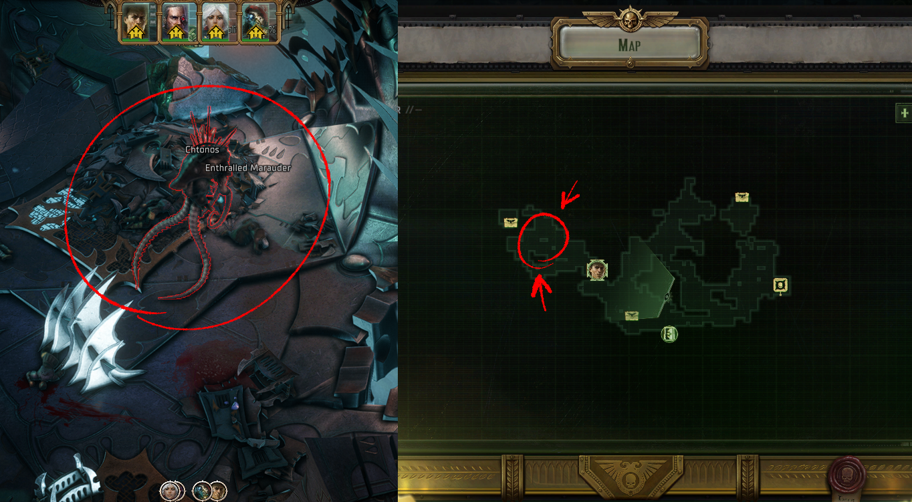
Defeat the Chtonos, and you will be presented with a few options:
- 1. [Tech-Use -30] [Examine the creature]
- 2. [Address the monster] "Can you understand me?"
- 3. [Kick the abomination hard]
- 4. "Pasqal, would you like to study this device?" [Only appears if Pasqal is in the active party]
- 5. [Finish off the creature]
- 6. [Wait for the thing to expire]
Select option 4 to allow Pasqal to indulge himself, and then your next choices are:
- 1. "What was this machine built for?" [No new choices]
- 2. "What made you stop?"
- 3. "Mend this creature, we are taking it with us." [No new choices]
- 4. "You are an Explorator. Study it before it gives up the ghost." [+1 Amarnath]
- 5. "Purge this corruption." [+1 Loyal]
If you select option 2 “‘What made you stop?’” you will unlock new options:
- 1. "Is this thing more than a perversion and an outrage to you?"
- 3. "If you think this thing is alive, you may end its suffering." [+1 Ego]
Pick whatever increment you would like, and the event will end.
Cassia
Help! Where do I find Cassia in Commorragh?
Cassia is located in the Anatomical Opera, an area that you will be directed towards after your first arena fight. It’s a little trickier to get her than Idira, as you need to talk and convince Tervantias for it.
NOTE: This method doesn’t appear to work if you have yet to free Ulfar. More testing is required.
Start a conversation with Tervantias and select:
- "I would like to speak with you about a member of my retinue who was delivered to you."
You’ll then be able to ask about Heinrix, Cassia, or Idira. I recommend just selecting all the options, as it can’t hurt. After you’re through with the information gathering, select the option
- "Those from my retinue deserve better than to be confined by you. Relinquish them."
Tervantias will then ask why he should, and you have a few options to respond:
- 1. "With a full escort, I would have better chances of succeeding and contributing to your plans."
- 2. [Press your weapon to the base of your own jaw] "Unless you want to lose a valuable specimen, you will release my companion immediately."
- 3. "I will not stand for you keeping my companion captive! Do not try my patience, xenos!"
- 4. [Kneel] "I recognise your power over me and beg you for leniency." [Correct]
- 5. "I will find a way to free them, no matter what you do or say."
The only option that will succeed is begging for leniency. Tervantias will then release one of your companions. Do not pick Idira, as you can free her yourself normally.
This sort of boils it down to either Cassia or Heinirx, so pick whichever you prefer. This section will be focusing on what happens if you pick Cassia, obviously.
After speaking with Tervantias, head to the north-west most part of the Anatomical Opera, until you see what’s basically a really spiky orb. I have attached a screenshot below of where the orb is located, and what it looks like.
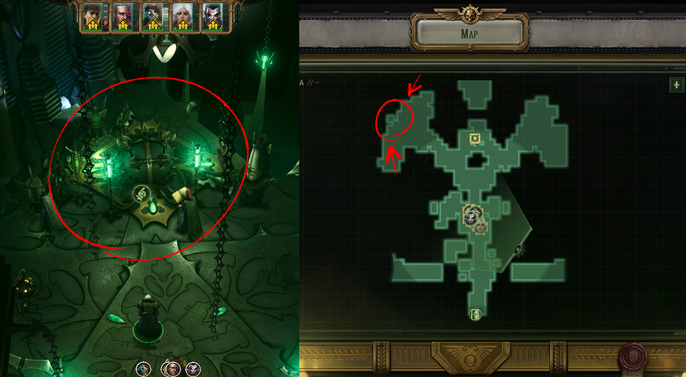
Interact with the orb and Cassia will emerge.
Cassia will then cast Lidless Stare on everyone in the party, dealing 6-12 DMG to each of you, or less. Finally, you have a chance to speak to the Lady Navigator with the following options:
- 1. [Smile through the pain] "All is well, my lady. You can defeat this. I shall stay by your side and help however I can." [Only appears if RT is Male + etude Timer_LoveFavour_Extra_ktc1 is completed] + [+1 PersuadeCassia]
- 1. [Requires: Dogmatic - Adherent] [Soothe her with prayer] "May the Emperor's radiance illuminate our way through the tenebrous gloom as we that are broken of heart turn to His wisdom..." [Requires 45 Dogmatic Points] + [+5 Dogmatic] + [+1 PersuadeCassia?]
- 2. [Persuasion - 30] "Cassia, the worst part is over. I am taking you away from this place." [+1 PersuadeCassia]
- 3. [Persuasion - 30] "Lady Navigator, compose yourself! You are embarrassing the Orsellio name!" [+1 PersuadeCassia]
- 4. [Coercion - 30] "We are in enemy territory! Unless you regain control of yourself, I will end this tumult personally!" [+1 PersuadeCassia]
- 5. [Agility - 20] [Pick up a pistol from the floor and shoot Cassia] [Kills Cassia]+ [Activates etude CassiaBanished]
You’ll then have a chance to pass a Passive +65 Willpower check
- 1.“For all those years, fear and loneliness were all you knew. Not anymore. Don’t you dare wish death upon yourself! When I am with you, I will strive to alleviate your every sorrow!” [Only appears if RT is Male + etude Timer_LoveFavour_Extra_ktc1 is completed] + [+1 PersuadeCassia]
- 1. [Willpower +15] [Soothe her with prayer] "... The Emperor is with us so long as we remember our purpose - to serve Humankind and to never give in to its enemies..." [Only appears if you selected the Dogmatic option from this section] + [+1 PersuadeCassia] + [Activates etude CassiaRevealed]
- 2. [Persuasion -60] "You are frightened, but that does not mean you can give up. Do not let these emotions consume you!" [+1 PersuadeCassia] + [Activates etude CassiaRevealed]
- 3. [Logic -60] "You have had to rein in your gift before. Try to remember how you did it then!" [+1 PersuadeCassia] + [Activates etude CassiaRevealed]
- 4. [Coercion -60] "Do you wish to spend the rest of your days as the Haemonculus's test subject?" [+1 PersuadeCassia] + [Activates etude CassiaRevealed]
- 5. [Agility -20] [Pick up a pistol from the floor and shoot Cassia] [Kills Cassia]+ [Activates etude CassiaBanished]
And then:
- 1. [Hold her and kiss her] “Don’t even think of leaving me, Cassia. I won’t let you go.” [Only appears if RT is Male + etude Timer_LoveFavour_Extra_ktc1 is completed] + [+1 AmourCortuois]
- 1. "You will overcome this, Cassia. You are stronger than you think you are."
- 2. "I am not interested in listening to you vent your grievances. Prove that you are still of use to me, or I shall send you back into the darkness!" [+1 PersuadeCassia]
- 3. "Whatever happened to you, we can make it right. Put your trust in me."
- 4. [Pick up a pistol from the floor and shoot Cassia] "I should have killed you as soon as I met you."
- 5. [Run away] [Activates etude CassiaBanished] + [Activates etude LeaveCassia]
Pick whatever you would like, aside from shooting or kill her if you want to continue the romance, and a few things can happen. If way back in Act 1, you placed Feleks stone on Cassia to keep her powers at bay, you have a choice to make regarding it:
- 1. "The stone is what helps you keep your powers at bay. There is a good chance it saved you from losing your mind just now." [Keeps the stone on Cassia]
- 2. "It was not the stone that contained your powers, Cassia. It was you. Set yourself free, for you have no need for shackles." [Removes the stone on Cassia]
- 3. [Shrug] [Removes the stone on Cassia]
I’m unsure about if the amulet is related to her romance, but I am tentatively going to say that you should allow her to remove it.
However, if the stone wasn’t placed on Cassia, instead you will just choose from:
- 1. "And now... May I escort you out of here?" [Recruit CassiaCompanion]
- 2. "You will pay dearly for the injuries you have caused me. Come with me." [Recruit CassiaCompanion]
- 3. "Thank the Emperor, you look like yourself again. Let us depart. There will be other opportunities to talk." [Recruit CassiaCompanion]
- 4. [Seal Cassia inside the capsule] "I am doing this for everyone's sake.” [Activates etude CassiaBanished] + [Activates etude LeaveCassia]
- 5. [Kill Cassia] "Enough." [Activates etude CassiaBanished] + [Activates etude LeaveCassia]
The event will end after this.
Comments/ Glitches
1 As far as I can tell, etude Timer_LoveFavour_Extra_ktc refers to this section, in which you speak to High Factorum Jarnis about procuring a gift for Cassia. It appears that a lot of her more romantic dialogue involves actually giving her a gift instead of just going up to her and stating that you accept her affections? I will be updating that section of the guide to reflect this.
Personal Quest - ??? | Occurs when speaking to Cassia in Commorragh. Might require having selected all previous romantic dialogue.
- 1. "This is... mesmerising. I can see the colours of your soul, just as you can see mine." [+1 AmourCourtois]
- 1. "What have you done to me, you monster?" [+1 Insulted]
- 2."My eyes... I can see the colours that you see!"
- 3."I think I can now see people's emotions too. It is quite all right, I can handle this myself."
And then:
- 1. [Embrace Cassia and kiss her] "I do not revile this power, nor do I revile you." [Activates etude RTSeesColours]
- 2. "If you would be so kind... If this continues much longer, I might..."
- 3. [Willpower 0] "It is quite all right, I can handle it myself."
And then:
- 1. [Kiss her hand] "Your world is magnificent, Cassia. I am glad to have had the chance to see it."
- 2. "I am myself again, thanks to you."
- 3. "I've had it with your oddities and uncontrollable powers! Stay away from me." [Activates etude CassiaRomanceFailed]
Jae
Help! Where do I find Jae in Commorragh?
As soon as you finish the first arena fight, and go find the Anatomical Opera, you will be automatically pulled into a cutscene regarding Jae. As far as I can test, it is impossible to avoid this cutscene.
The first options you get to respond to her are:
- 1. [Watch in silence]
- 2. "Jae! Where did you learn to speak so crudely?"
- 3. "What happened to you?"
- 4. [Address the monster] "This woman is with me." [Recruits Jae again]
- 5. [Address the monster] “Don’t let this one pass. She has done nothing to earn it.” [Activates etude LeaveJae] + [Jae becomes unrecruitable]
If you select option 3 “3. What happened to you?” you’ll get another set of options:
- 1. "You are dying again? Why?"
- 2. "What is wrong with the Haemonculus giving you new organs instead of an implant?"
- 3. "It seems we have much to discuss, Jae..."
You can exhaust dialogue options 1-3 before returning to this set of choices.
- 1. [Watch in silence]
- 2. “Try to talk this malkin round, Jae. I shall observe.”
- 3. [Address the monster] "This woman is with me." [Recruits Jae again]
- 4. [Address the monster] “Don’t let this one pass. She has done nothing to earn it.” [Activates etude LeaveJae] + [Jae becomes unrecruitable]
If you select option 1-2, you’ll then watch Jae try and muscle her way in again, but fail, so you’ll be left with the choice to either say Jae is with you, which recruits her, or forbid her from passing, which leaves her to die presumably.
Planet Event - Azhi-Damned Problem | Occurs if Jae is brought to Comorragh, recruited, and brought to the first Tervantias conversation.
After your life saving operation, you can finally start exchanging all the genetic materials you have been picking up around Commorragh, a guide for which can be found in this section. You can then fix Jae using one piece of the genetic materials.
To heal Jae immediately, select:
- “I require your aid, Haemonculus.”
And then:
- “Is there anything I can offer to repay a being of such brilliance for the attention he may graciously grant me?”
If you didn’t follow the guide, or failed both checks, or simply wish to cause a xenos suffering, you can then allow Yrliet to be operated on if you re-recruited her and Tervantias will receive a piece of genetic material from her. Either way, Tervantias will talk one piece of the genetic material you have, and then you’ll be presented with some options for how you would like to redeem your… reward.
- 1. "I shall need equipment if I am to kill your enemies." [Opens trade window]
- 2. "You took my companion's respiratory augment and now she is dying. Return it immediately." [Activates etude JaeHealedByGemunkul]
- 3. "My condition has been rather grave since my arrival in Commorragh. Can you mend my body?" [Generic Healing]
However, you can also postpone Jaes healing until you return to your voidship. After the first big dialogue with Tervantias, if do not select the options above, Jae will remind you of the fact that she’s currently dying, and give you a chance to postpone her healing, or just immediately heal her like above.
- 1. "I require your aid, Haemonculus."
- 2. "I give you my word that we will fix everything once we return home. I put more stock in human technology than in his services." [Activates etude JaeHealedOnTheShip]
- 3. "Jae, we do not have time. We will discuss this later."
If you select option 3, you’ll have another, slightly different set of choices that can result in Jae leaving the party.
- 1. "I require your aid, Haemonculus."
- 2. "I give you my word that we will fix everything once we return home. I put more stock in human technology than in his services." [Activates etude JaeHealedOnTheShip]
- 3. [Raise your voice] "Do not dare go against my will, Heydari!" [Activates etude LeaveJae] + [Activates etude JaeBanished]
Pick whatever you’d like, but do know that if you don’t heal Jae in Commorragh, she’ll have the Death Rattle debuff for the entire section.
Bridge Discussion - How About A New Story? | Can occur after saving and healing Jae in the Anatomical Opera.
Requirements
- Jae is alive
- Jae was recruited again at the Anatomical Opera
Summary
You question Jae about her new, well, everything.
Specifics
The first time that you start a conversation with Jae back in The Pit you’ll have a few choices to make:
- 1. "I am still waiting for an explanation, Jae."
- 2. "How are your lungs?"
- 3. "Have you never once wanted to tell me the truth? I am more than just
- your patron, after all." [Occurs if etude JaeRomance is active] + [Not Dialog Seen JaeRomance Strangers_dialogue]
- 4. "About your new persona..."
- 5. “Do you have any ideas about how we can get out of here?”
- 6. [Leave] “Remain vigilant. I shall need your help yet.”
If you select option 3 “‘Have you never once wanted to tell me the truth? I am more than just your patron, after all.’” you will get a a new set of dialogue options:
- 1. "Why did you not tell me the truth immediately?"
- 2. "I insist on absolute honesty between us from here on out."
- 3. [Shrug] "If you are wondering whether things have changed for me now,
- the answer is no. You haven't changed, and my feelings haven't changed." [+1 Sincerity] + [Activates etude JaeSincerity_3]
- 4. "I cannot judge you. I too would prefer that my beloved see me as a prince rather than underhive scum."
- 5. "I cannot continue our affair after this." [Completes etude JaeRomance] + [Ends Jaes Romance]
I’m pretty sure Jaes True Romance ending involves activating her Sincerity etudes, so keep that in mind if that is what you’re going for.
Select whatever you would like, and it returns you to this section with option 3 gone.
If you select option 1 “‘I am still waiting for an explanation, Jae.’” you’ll finally get Jaes actual backstory, and you can ask her a few questions:
- 1. “I knew you were no princess.” [Only appears if etude JaeRomance is inactive]
- 1. "Do you have a family?"
- 2. "So you used to be in the Imperial Guard?"
- 3. "So where did you learn to read and write?"
- 4. "Is Jae your real name, at least?"
- 5. "Was there anything you did not lie to me about, Jae?"
- 6. "After what I have heard, the thought of keeping you by my side makes
- me sick. Remove yourself from my presence!" [Unrecruits Jae]
- 7. [Kill] "You will answer for everything you have done!" [Unrecruits Jae] + [Kills Jae]
- 8. "Very well. Thank you for the answers."
Options 1, 3, 4, 5 will return you to the same choices as above.
If you select option 2 “‘So you used to be in the Imperial Guard?’” you’ll have more choices to make:
- 1. "How did you get involved with the Kasballica?"
- 2. "So you are a deserter as well?"
- 3. "That explains the lung implant, but what about the hand?"
- 4. "I see."
You can exhaust all these dialogues and will return to this section.
If you select the option “‘About your new persona…’”, you will have a chance to gain an Approval increment
- 1. "If this is closer to the real you, then you can keep acting like this." [+1 Approval]
- 2. "Indulge yourself for now. But when we are back in the Expanse, you will return to your princess guise and not disgrace my name."
- 3. "This boorish demeanour is certainly a better match for your vile personality.” [Only appears if etude JaeHealedOnTheShip status is inactive]
- 4. “Behave however you wish. I shall not impose my will upon you.” [+1 Approval]
Errand - Reunion Party | Automatically given as soon as you finish your second arena fight and talk to Tervantias as long as Jae is in the active party.
Requirements
Summary
Jae thinks that the RT should throw a little party since everyones been reunited.
Specifics
Approach Jae and select:
- 1. "Didn't you say something about getting sloshed once we were back at the hideout?"
This will then play a scene showing exactly how well Jaes little party goes. Your next choices are:
- 1. "Are we celebrating the fact that we killed several xenos for the amusement of other xenos?" [No new choices]
- 2. "You think this is a time to celebrate?" [No new choices]
- 3. "A celebration sounds good. Let's enjoy ourselves."
- 4. "This is not the time for revels."
You can exhaust dialogue 1-2, and then select 3 or 4 to continue the event. Several of your companions will chime in at Jaes attempts to party, and your next choices are:
- 1. "Don't lose heart! I promise I will get you all out of here!"
- 2. "If we are doomed to die, we might as well enjoy ourselves one last time!"
- 3. [Bark out a command] "Come on, cheer up! All of you!"
- 4. "Jae, look, this party idea isn't working." [Ends event]
Options 1-3 provide you with a new set of choices, including an option to get a Sincerity increment.
- 1. "Hey, where is all this doom and gloom coming from?" [Ends event]
- 2. "Jae, these people do not want to celebrate. Let's leave them be. The two of us can enjoy ourselves on our own." [Ends event]
- 3. "You may be low by birth, but you will die with as much, if not more, honour than anyone here." [+1 Sincerity] + [Activates etude JaeSincerity_1]
- 4. "Enough, Jae." [Ends event]
Any of the options will end the conversation, but not the event! Zip out to the streets of the Chasm to find Jae surrounded by some hoodlums. Your options to respond are:
- 1. "You there! Get your filthy carcasses out of here, or I'll..."
- 2. [Draw your weapon] "Time to clear some of the dirt off the streets of Commorragh."
- 3. [Wait silently]
Select any option, as they all continue the conversation. Then you can pick from:
- 1. "Who were they?"
- 2. "Are you all right?" [Unlocks new options]
- 3. "You made short work of them!"
- 4. "I need you in my party. Fight at my side." [Recruit JaeCompanion]
- 5. "Go and calm down inside and pull yourself together." [Recruit JaeCompanion]
You can exhaust dialogue options 1 and 3, and then select 2 to potentially gain another Sincerity increment.
- 1. "To me, you will always be a princess of Efreet."
- 2. "I suspected you might be lying about your past. No need to take it so hard."
- 3. "You have never given a damn about rules or expectations. You never
- fitted the mould of a princess or a deserter. You are simply Jae Heydari."[+1 Sincerity] + [Activates etude JaeSincerity_2]
- 4. "I prefer the new you."
- 5. [Offer nothing but sympathetic silence]
Whatever you pick, you will return to this section and can recruit Jae again.
Yrliet
Help! Where do I find Yrliet in Commorragh?
As soon as you leave The Pit to go find the Commissar and walk forwards towards the main area, you will be automatically pulled into a cutscene regarding Yrliet. My party composition that led to this version of her recruitment was Heinrix/Idira/Argenta/Jae/Yrliet.
Or, after finishing your first arena fight, you will be automatically pulled into a cutscene regarding Yrliet in the same location as the one above. My party composition that led to this version of her recruitment was Cassia/Argenta/Abelard/Pasqal/Yrliet.
As far as I can test, it is impossible to avoid this cutscene in both versions of her recruitment.
Your first options to respond have the option to kill Yrliet immediately, if that’s your fancy.
- 1. "Yrliet! You are alive!"
- 2. [Nod at the victim] "What are you doing?"
- 3. [Look at the Drukhari surrounding Yrliet] "What is going on here?"
- 4. "You survived. Good. I want to deal with you myself!"
- 5. [Kill Yrliet] "The traitor's reckoning has come!" [Activates etude YrlietRevenge] + [Activates etude YrlietBanished] + [Activates etude PlayerKilledYrliet]
Options 1-4 will push you towards the next set of options, and option 5 will kill her, obviously.
- 1. "Why are you doing this to her?"
- 2. "Yrliet, I intend to find a way out of this place. What about you?" [Only appears if you did not select option 3 below.]
- 3. [Lean toward Yrliet and whisper in her ear] "Suffering, you say? Perfect. Show me how much more you are willing to suffer for a chance at forgiveness."
- 4. [Rip the blade out of Yrliet's hands and kill the Drukhari who just spoke] "Yrliet is mine! You cannot have her!" [Activates etude YrlietRomanceFailed]
- 5. [Kill Yrliet] "The traitor's reckoning has come!" [Activates etude YrlietRevenge] + [Activates etude YrlietBanished] + [Activates etude PlayerKilledYrliet]
- 6. [Leave Yrliet with the Drukhari] "I will not intrude in xenos affairs. Farewell."
- [Activates etude Yrliet_Commoragh_Leaved] + [Start etude LeaveYrliet] + [Activates etude YrlietBanished]
If you select option 3, you will be returned to the same choices as above, but with a new choice unlocked:
- 2. “Good. Now I will consider taking you with me.”
Select what you’d like, every choice but 5-6 moves the conversation along.
However, if you select option 4 “[Rip the blade out of Yrliet's hands and kill the Drukhari who just spoke] "Yrliet is mine! You cannot have her!"” you will fail the romance and you won’t get option 1 below. Not that it really matters since, well, the romance is over.
An increment change is then available if her romance is still active, as well as more chances to kill or banish her.
- 1. "Even if you have lost your way, I will be here to help you find it again." [Only appears if Yrliets romance is active] + [+1 Accordance]
- 2. "Your reasons make no difference to me. I forgive you."
- 3. "We will yet have a word about your deeds. Now, however, it is time to leave."
- 4. "I will take whatever help I can get to escape."
- 5. "No. You will find no forgiveness. Go whichever way you wish, as long as I never have to see you again."
- 5. "No. You will find no forgiveness. Go whichever way you wish, as long as never have to see you again." [Activates etude YrlietBanished]
- 6. [Kill Yrliet] "A taste of hope before death is a traitor's just reward!" [Unlock Flag YrlietSoulstone to 1] + [Activates etude YrlietRevenge] + [Activates etude YrlietBanished] + [Activates etude PlayerKilledYrliet]
After that choice, the conversation is finished, and Yrliet officially re-joins the party.
Study Event - Healing the Wounds | Can be triggered after the first Arena fight is finished.
Summary
Yrliet wishes to explain everything to you.
Specifics
The first set of choices are as follows:
- 1. "Your faith in me? Did I hear that right?"
- 2. "I already told you that I know nothing about the shard. That trophy belonged to Theodora, my predecessor."
- 3. "I have always been honest with you, Yrliet. You, however, lied to me from the start."
- 4. "I understand why you did that. And I forgive you."
- 5. "I do not think I will ever be able to completely trust you." [Activates etude YrlietRomanceFailed]
You can exhaust dialogue options 1-3 here, and then select 4 if you would like to continue the romance, or 5 if you wish to end it. The next options are as follows:
- 1. "You are unable to meditate? Can that happen?"
- 2. "How are you going to regain your powers now?"
- 3. "I wish I could embrace you and give you comfort, but you cannot bear human touch."
- 4. "I cannot help with meditation, but I am prepared to stay with you and share the silence. That way, you will be able to forget about the horrors of Commorragh, if only for a little while." [+1 Accordance]
- 5. “I hope you find a way to deal with that.” [Ends the event]
- 6. “Everyone gets what they deserve.” [Ends the event]
You can exhaust dialogue 1-3, and then either select option 4 to gain an Accordance flag, or 5-6 to end the event.
Personal Quest - The Path We Lost | Can be acquired as soon as the RT reaches the Reaving Tempest Spire.
Requirements
- Yrliet is alive.
- Yrliet is in active party.
Summary
Yrliet seeks to find the Farseers hidden and trapped with the Reaving Tempest Spire.
Specifics
To actually acquire this quest, you must have Yrliet active in your party when speaking to Nocturne of Oblivion after escaping the Arena and defeating the Envoy of the Poisonous Whisper and the Envoy of the Wounded Skies.
Nocturne will tell Yrliet that there are Farseers locked in the Reaving Tempest Spire, and she begs you to assist her in helping them. Your first choices are:
- 1. "Are these Aeldari truly that important to you?"
- 2. "If what the Harlequin says is true, we will save whomever we can." [Gives The Path We Lost quest]
- 3. "I have not yet decided if I can trust this strange xenos."
- 4. "After all the trouble xenos have caused me, you are still asking for my help?"
You can exhaust dialogue 1, and then either commit to the quest right now, or sort of shelve it for later.
The next time this quest will become relevant is when you actually get to the Reaving Tempest Spire.
Yrliet states that she must learn the truth, and you have a few options to respond:
- 1. "Come along. When we find the Farseers, you will have all your answers.” [Continues the quest]
- 2. "I doubt we will have time for xenos rescue missions."
- 3. "The xenos have caused my house enough grief. As have you. Begone! I am no longer interested in your talents." [Activates etude YrlietRomanceFailed] + [Unrecruits Yrliet] + [Failes the quest] + [Activates etude YrlietBanished]
Obviously, if you want to continue the Yrliet romance, select option 1. Option 2 does unlock new choices, but they still all result in unrecruiting Yrliet and failing her romance. Those options are TBA.
Once you actually enter the Spire, on the first level there are a few things relevant to Yrliets quest. One of them is activating certain etudes regarding Tervantias’ research, a guide for which can be found here, and the other is triggering several key events. I have marked them down below.
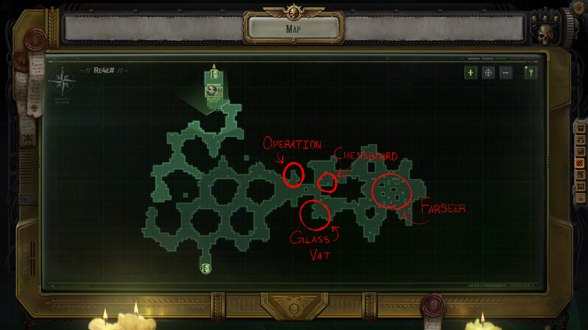
I recommend doing the event order as Operation Game > Chessboard > Glass Vat > Imprisoned Farseer.
Chessboard Event
As soon as you enter the room with the chessboard, Yrliet will get a headache(?) and draw your attention to the chessboard. You can respond with:
- 1. [Move a few pieces]
- 2. "Yrliet, are you all right?"
- 3. "I do not like the look of this."
- 4. [Observe silently]
Pick whatever you would like, as all options move the conversation forward.
And then:
- 1. [Move a few pieces] [Only appears if it was not selected above]
- 2. "Yrliet, what is going on?"
- 3. "Yrliet, you are talking to pieces on a game board."
- 4. "Stop acting oddly or you will regret it, I swear."
- 5. "For Throne's sake, why do xenos have to be so difficult?"
- 6. [Observe silently]
Again, any of the options move the conversation ahead.
And then:
- 1. [Persuasion -30] "Look at me, Yrliet. I am by your side. Everything is all right."
- 2. [Intelligence: Succeeded] "One of the Farseers is trapped in the game board, correct?" [Only appears if a Passive +65 Intelligence check is passed]
- 3. [Willpower 15] "Whatever this is, Yrliet, do not let it take over you!"
- 4. [Agility 15] [Slap Yrliet] "Enough!" [Ends romance?] (Needs testing)
- 5. "It is time to end this. Step aside. I will destroy this xenos artefact right
- 6. [Observe silently]
Everything but option 4 should continue the romance, and any of the options moves the event along.
And then:
- 1. "Why would the Drukhari imprison a Farseer's soul in a board game?" [No new choices]
- 2. "It looks like the Farseer put you through mental torment. What did she say?"
- 3. "We can take the Farseer to the ship and save at least what is left of her."
- 4. "My, my, this trophy will be the first of its kind in my collection!" [No new choices]
- 5. "You should end her suffering. Yrliet." [No new choices]
- 6. [Break the board] “This heresy must be destroyed.” [Ends the event]
- 7. “There is no helping the Farseer now. Shouldn’t we direct our energy toward saving other possible survivors?” [Ends the event]
If you select the option “It looks like the Farseer put you through mental torment. What did she say?” you will unlock the choices, several of which have an increment choice:
- 1. "Is she not right on every point?" [+1 PathOfTheDamnation]
- 2. "The pain and suffering have damaged the Farseer's mind. You could not have saved Crudarach alone." [+1 PathOfTheWarrior]
- 3. "Do not let the words of a doomed soul lead you astray from your chosen Path." [+1 PathOfTheWarrior]
- 4. [Destroy the board] "Anyone who says such things deserves death." [Ends the event]
- 5. [Say nothing] [+1 PathOfTheDamnation]
After you select an increment value, you will return to the section above/this section.
If you select the option “We can take the Farseer to the ship and save at least what is left of her.” you will unlock different choices depending on Yrliets current Path, which I think the last trigger for was on Janus in Act 2, and I unfortunately did not include it in the guide as of 02/27/22. This will be added shortly.
If Path of Damnation is active:
- 1. [Take the board] [Ends the event]
- 2. [Reconsider]
If Path of The Warrior is active:
- No options, you automatically take the board, and the event ends.
If you select the option “There is no helping the Farseer now. Shouldn’t we direct our energy toward saving other possible survivors?” Yrliets will respond differently depending on her current Path, which I think the last trigger for was on Janus in Act 2, and I unfortunately did not include it in the guide as of 02/27/22. This will be added shortly.
The event will end after Yrliets response.
Operation Game Event
I recommend picking up the Research Notes 1, which can be found in the same room as the Operation Game Aeldari. It will activate the etude ReavingTempestSpire_HaemonculusResearch1 and give you more options to respond. A more precise guide can be found here.
Your first choices are:
- 1. "What... are you?"
- 2. [Heretical] [Wound the monster] "You're a sight! Let's see how you like this." [+5 Corruption]
- 3. [Kill the Farseers] "You should look away. I will put them out of their misery myself." [Ends the event]
- 4. [Iconoclast] "Nothing of your kin is left in this creature. End their suffering, Yrliet." [+7 Iconoclast] + [Ends the event]
- 5. "Let's leave this creature alone." [Ends the event]
If you select the option “What… are you?” you will get a new set of options:
- 1. [Awareness -60] [Examine the creature]
- 2. [Persuasion -60] "Whoever you are, we have come for answers. Help us make sense of what happened to your world."
- 3. [Persuasion 0] "I know you are there, Artreus, Cassarthruin, Maedryl, Dharianne! Answer my call and the call of your sister!" [Only appears if etude ReavingTempestSpire_HaemonculusResearch1 is active]
- 4. [Use psyker powers to revive the Farseers] [Only appears if character has a minimum Psy Rating 0]
- 4. [Remove the creatures psy-suppression shackles] [Only appears if etude ReavingTempestSpire_HaemonculusResearch1 is active] OR [You pass the Awareness -60 check of option 1]
- 4. [Kill the Farseers] "You should look away. I will put them out of their misery myself." [Ends the event]
- 5. "These are your kin. You should decide what happens to them." [Ends the event]
- 6. "Let's leave this creature alone." [Ends the event]
If you select “[Examine the creature]’ and pass the check, you will unlock a new option:
- ?. [Remove the creatures psy-suppression shackles]
If you select “Whoever you are, we have come for answers. Help us make sense of what happened to your world.” OR "I know you are there, Artreus, Cassarthruin, Maedryl, Dharianne! Answer my call and the call of your sister!" and pass the check, you actually have an ability to gain and increment flag for Yrliet:
- 1. "Your presence on Crudarach would hardly have changed anything. You would most likely be dead now." [+1 PathOfTheDamnation]
- 2. "You should have stayed on your homeworld and defended it to the end." [+1 PathOfTheWarrior]
And after you’ve made your choice:
- 1. [Iconoclast] "You have been asked for mercy. Grant it." [Only appears if you selected option 3 from this section] + [+7 Iconoclast] + [Ends the event]
- 2. [Kill the Farseers] "You should look away. I will put them out of their misery myself." [Ends the event]
- 3. "Let's leave this creature alone." [Ends the event]
If you select “[Remove the creatures psy-suppression shackles]” you will get another set of choices:
- 1. “I am not afraid of the consequences.” [Ends the event]
- 2. “You are right. Let’s not risk it.” [Returns you to this section]
Glass Vat Event
I recommend picking up the Research Notes 2, which can be found in the same room as the Glass Vat Aeldari. It will activate the etude ReavingTempestSpire_HaemonculusResearch2 and give you more options to respond. A more precise guide can be found here.
You will notice a glass vat with an alive Aeldari inside, and Yrliet pleads for you to open it somehow.
- 1. [Inspect the vat]
- 2. "Stand back. This calls for some good old brute force." [Unlocks the capsule]
- 3. "I doubt the xenos inside is still alive. Come, let us not waste time."
- 3. “Tampering with a Haemonculus’s experiment does not strike me as a good idea. We should destroy it instead.” [Only appears if you select “Alright, let’s…” from the options below]
If you select “I doubt the xenos inside is still alive. Come, let us not waste time.” you will get a new set of options to respond with:
- 1. [Blow up the vat] "Even so, I do not want to take the risk." [Only appears if you select “Tampering with a Haemonculus’s…” from the options above] + [Ends event]
- 2. "All right, let's get him out of there."
- 3. "I have made up my mind. We are leaving." [Ends event]
If you select “[Inspect the vat]” you’ll unlock a new option:
- “We’ll press every button until the mechanism opens.”
And if you select the option “We’ll press every button until the mechanism opens.” you’ll get even more choices:
- 1. "Pasqal, can you figure out how to open this vat?" [Only appears if Pasqal is in the active party]
- 1. [Press the sun symbol]
- 2. [Press the target symbol]
- 3. [Press the spiral symbol] [Kills the Farseer]
- 4. [Press the lightning symbol] [Unlocks the capsule]
- 5. [Press the crossed-out triangle symbol] [Kills the Farseer]
- 6. "Perhaps we should try another way."
Once the Aeldari is out of the vat, shattered glass or not, you have some choices:
- 1. "Do you remember who you are and where you come from?" [No new choices]
- 2. "Tell us what happened to Crudarach." [No new choices]
- 3. "How did you end up in the Haemonculus's clutches?" [No new choices]
- 4. "Why were you kept in this vat?" [No new choices]
- 4. [Utter the Haemonulus’s order] “Deliverance.” [Only appears if etude ReavingTempestSpire_HaemonulusResearch2 is active. You can find a guide for this etude here.] + [Kills the Farseer]
- 5. "It's time to decide what to do with him." [Ends event]
Imprisoned Aeldari Event
As you draw to the very back of the area, you will come across a group of enemies clustered below a suspended cage. Defeat all the enemies, and the Aeldari inside the cage will instruct you on how to let him out.
Your first choices in the conversation are as follows:
- 1. "I treasure our unique connection. It is not 'despicable' or wrong."
- 2. "What's so wrong about our connection?"
- 3. "Silence, xenos! Our relationship is none of your concern."
- 4. [Say nothing]
Select whatever you would like, as all options move the conversation along. Your next choices are:
- 1. "Perhaps we ought to start by introducing ourselves?"
- 2. [Lore (Xenos): Succeeded] [Make an Aeldari greeting gesture with your hands] [Only appears if you pass a Passive +50 Lore (Xenos) check]
- 3. "You said you would help us find our way home. What did you
- 4. "The Farseer is at your disposal, Yrliet."
You can exhaust dialogue options 1-3, and then select option 4, or just select option 4 to continue the event.
NOTE: If you took the Gameboard with the trapped Farseer in it, you will get a unique response when selecting option 2 [Make an Aeldari greeting gesture with your hands]
- ?. “There were other Farseers besides you in the spire.”
If you select “There were other Farseers besides you in the spire.” you will have more choices to make:
- 1. "Can you really help her?"
- 2. "It is my trophy. Do not even think of taking it from me."
- 3. "I did what I could to save the Farseer's soul. But I could only do so much."
- 4. "I am not interested in your approval, xenos."
You can select option 1 to learn that the Gameboard Aeldari is unsaveable, but the Farseer can lay her soul to rest. You’ll also unlock the option:
- ?. “Then do it. Lay to rest the wretched soul imprisoned in this object.”
If you select 2. "It is my trophy. Do not even think of taking it from me." OR "I did what I could to save the Farseer's soul. But I could only do so much." OR "I am not interested in your approval, xenos." you will get the options of:
- 1. “No more favours, xenos. Let us change the subject.”
- 2. “Then do it. Lay to rest the wretched soul imprisoned in this object.”
Whatever you pick and decide to do with the gameboard, it moves the conversation along.
And then after selecting "The Farseer is at your disposal, Yrliet.":
- 1. "But who steered the infected vessel toward Crudarach?"
- 2. "You said a disease broke out aboard the ship?"
- 3. "If your kin fled Crudarach, how did you end up here?"
- 4. "Is Crudarach completely destroyed? That is hard to believe."
- 5. "What do you think, Yrliet?"
If you select the option “Is Crudarach completely destroyed? That is hard to believe.” and pass a [Passive +65 Perception] check, you will unlock some new options:
- 1. [Persuasion -30] "We freed you from the Haemonculus's torture chamber, Eklendyl, and this is the thanks we get?"
- 2. [Coercion -30] "If you wish to leave this place alive, you would do well to start talking, xenos."
- 3. [Coercion -30] "Perhaps I should put you back in the cage?"
- 4. [Persuasion -30] "You have already told us almost everything. Why hold anything back?"
- 5. "Yrliet?" [Continues event]
- 6. “I am sick and tired of you, xenos. Why don’t I just kill you and have done with it?” [Unlocks new options]
You can either pass one of the checks, ask Yrliet to handle it, or threaten the Aeldari.
If you select option “I am sick and tired of you, xenos. Why don’t I just kill you and have done with it?” you will then have these options:
- 1. [Kill the Farseer] "Stand aside, Yrliet." [Ends event] + [Ends romance?]
- 2. "Fine. I shall give him one last chance to tell the truth." [Continues event]
The next choices are:
- 1. "You abandoned Crudarach when it needed you, and now everyone you
- know is dead. What did you think was going to happen?"
- 2. [Persuasion -30] "You are not to blame for the demise of your world. Subverting fate is beyond your power."
- 3. [Lore (Xenos] -30] "Was it not the Farseers who made a bad decision? What difference would it have made if you had been on Crudarach?"
- 4. "Have you not found out everything you wanted? Would you like me to kill this Farseer for you now?"
- 5. [Do not interfere]
If you select "You are not to blame for the demise of your world. Subverting fate is beyond your power." OR "Was it not the Farseers who made a bad decision? What difference would it have made if you had been on Crudarach?" and pass the check: you will have new options appear:
- 1. [Coercion -30] "Then it is your duty to avenge them and punish those responsible. There is a Farseer right in front of you." [Activates etude [ReavingTempestSpire_FinalFarseer Dead] + [Kills the Farseer]
- 2. [Persuasion -30] "There is no bringing back the past, but you can try to change your people's future." [Ends the event]
- 3. "I want no further part in this. Handle this problem yourself." [Ends the event]
- 4. “You know, any way you look at it, you are as much to blame as the Farseers.” [Ends the event]
Now, approach Yrliet on the bridge, and she will automatically begin the dialogue about her Path. Your first choices are:
- 1. "Many terrible things happened in Commorragh. Are you all right?"
- 2. "Crudarach suffered an unenviable fate. I am sorry your world is lost."
- 3. "What will happen to the seer now?" [Only appears if Eklendyl was not killed in Commorragh]
- 4. "So where does the Path of the Outcast lead you now?"
- 5. "I'd like to ask some other questions."
You can exhaust dialogue options 1-4, and then select 5 to end the event, or just select option 5 to end the event immediately
Marazhai
- Recruitment?
Marazhai can be recruited, but it requires picking specific options in conversations with him once you hit Act 3.
There’s an achievement for pissing him off at your first meeting, which occurs in Act 2, and a guide can be found in this section of the document.
To actually begin the process of recruiting Marazhai starts as soon as you finish your first arena fight, to the Anatomical Opera to talk to Tervantias and then are told by him to speak to the Bloodstained Proselytes. I’ve attached a screenshot below of where they’re located, and what they look like.
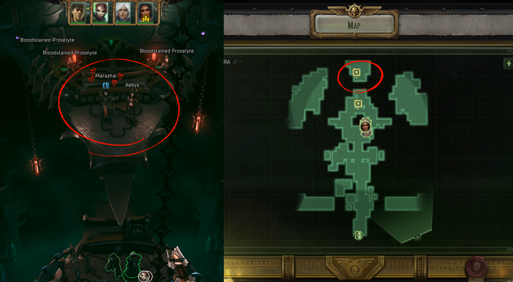
Start a conversation with them, and your first choices will be:
- 1. [Address Aebys] "So you and your rabble are the champions of the local arena?"
- 2. "So Marazhai was skinned and made to fight like this? Well, that is a balm to my heart. And also a delight to my eyes, where something was still stirring a while ago."
- 3. [Snap the Elucidator shut and address Marazhai] "Your kin do not seem overly fond of you." [Unlocks new choices]
- 4. [Snap the Elucidator shut and address Marazhai] "I want to talk. To you." [Unlocks new choices]
- 5. [Address Marazhai] "I just wanted to get a proper look at you. Humiliated, stripped of everything you were. And later... later I shall find a way to kill you."
- 6. [Address all the Drukhari in front of you] "Know this - I will kill each and every one of you! And I do not care if you are champions or not!"
Select either option 3 or 4 to unlocked a new set of choices:
- 1. "I saw what happened at the trial. You were tricked."
- 2. "You are trapped. I am trapped. We could help each other." [Unlocks new choices]
- 3. "I want to get out of Commorragh alive. I need allies." [Unlocks new choices]
- 4. [Lean closer] "From the bottom of my heart, I hope you die in agony." [Ends event]
Select any answer from 2-3 if you wish to recruit Marazhai, which then leads to more choices.
- 1. "Let's make a deal: you help me take out my enemies and I shall help you take out yours." [Activates etude MarazhailnDoubt]
- 2. "You have caused so much trouble for my protectorate that the only fitting punishment is to drag you out of Commorragh alive so that you may pay your debt to me." [Activates etude MarazhailnDoubt]
- 3. "I believe in mercy. Even for the likes of you." [Activates etude MarazhailnDoubt]
- 4. “Oh, so you like being in this dump at the beck and call of this rabble? Aren’t you afraid they won’t give you back your skin the next time?” [Activates etude MarazhailnDoubt]
The next part takes place during your second arena fight. After you finish off the first wave of enemies, the Bloodstained Proselytes will appear, Marazhai included. You’ll then get some choices:
- 1. "I was told I would be facing untested fighters, not the champions of the arena!"
- 2. [Look Marazhai in the eye] "My offer still stands. Would you consider switching sides?" [Only appears if etude MarazhailnDoubt is active]
- 3. [Attack] "You will answer for everything you have wrought!" [Activates etude MarazhaiKilled OnArena]
- 4. [Attack] “In the name of the God-Emperor!” [Activates etude MarazhaiKilled OnArena]
Select option 2 if you want to recruit Marazhai. Finish off the Bloodstained Proselytes, and you’ll start a conversation with the former Dracon:
- 1. “Call me a 'mon-keigh' one more time, and this partnership is over."
- 2. Well, xenos, are you ready to serve me wholeheartedly and discharge your debt?"
- 3. "I have no desire to die for the spectators' amusement. I take neither do you."
- 4. "They will take us to the Chasm now. Let us talk somewhere quiet-the Shriekers' den will do." [Ends event]
You can exhaust dialogue options 1-3, or just select option 4 to end the conversation.
NOTE: As of Patch 1.1.28+, as soon as you recruit Marazhai, Heinrix, Ulfar and Argenta will leave your active party to return to the Shriekers Den without you.
I recommend bringing at least Heinrix/Argenta, or at least recruiting Ulfar, especially if you are planning on romancing Marazhai, as the below event leads to a way sexier scene with him than just starting his romance normally through his bridge dialogue, which is what you will have to do to trigger his romance if you don’t trigger the Planet Event - Suspicious Absence.
If you have all three of them leave your party, you actually get unique dialogue for the event below!
Planet Event - Suspicious Absence | Occurs automatically after recruiting Marazhai if Ulfar/Argenta/Heinrix are in the active party.
Requirements
- Argenta OR Ulfar OR Heinrix recruited and brought to Commorragh.
- Marazhai recruited.
Summary
There’s a commotion in the Shriekers Den. Better go check it out.
Specifics
Depending on how many of your companions went after Marazhai, he’ll either be in pretty good or pretty dire condition. Your first choices are:
- 1. "What is going on?"
- 2. "Who started this?"
Heinrix/Argenta/Ulfar will all give their reasons for attacking Marazhai. Your responses are:
- 1. "And what, the rest of you just stood by and watched?"
- 2. "I did not save Marazhai's life so you could take matters into your own hands! Put your weapons away, all of you!"
- 3. [Draw your weapon] "Let's rid the world of this scum together." [Activate etude Markilled] + [Kills Marazhai]
If you select option 1, any companions you had in your active party/back at the Shriekers Den will comment, but you’ll still have to choose.
Study Event - Blue Velvet | Occurs automatically after Planet Event - Suspicious Absence if Marazhai lives.
Requirements
- Planet Event - Suspicious Absence was completed.
Summary
It seems the illustrious Dracon has a request for a measly mon-keigh like you. Hear him out.
Specifics
Marazhai will have slinked away with you after his tiff with Heinrix/Ulfar/Argenta, and you have a few options to respond:
- 1 "What do you need?"
- 2. "You have the nerve to disrespect the person who just dragged you out of the arena alive?"
- 3. [Listen in silence]
Any choice will move the conversation along, and your next choices are:
- 1. "Why do you hate Yremeryss so much? It was your own fault you ended up in the Chasm."
- 2. "What do you want with her soul?"
- 3. "Wait... Only an Aezyrraesh? Are you related?" [Activates etude MarazhaiYremeryssRelated]
- 4. "Very well. Should we encounter Yremeryss at any point, I shall allow you to deal the final blow." [Gives Last Strike Errand]
- 5. "I will think about your suggestion."
- 6. "I do not plan to concede this kill to you."
If you select “2. "What do you want with her soul?"” you will unlock a new choice:
- 3. “Resurrection? What resurrection?”
You can exhaust that dialogue too, if you’d like.
If you select “3. "Wait... Only an Aezyrraesh? Are you related?"” you’ll have another small set of choices:
- 1. "You want to kill your own sister?" [No new choices]
- 2. "You have a complicated relationship, I see."
- 3. "It doesn't. Forget I mentioned it."
You’ll then return to this set of choices.
Selecting from options 4-6 in this section will move you to the next choice:
- 1. [Look at what the plate was covering]
- 2. [Examine the plate in Marazhai's hands]
- 3. "Leave me alone in exchange for Yremeryss, and you can have her." [Only appears if you did not agree to let Marazhai have the last strike/were noncommittal]
- 3. "I will not help you. Hunt Yremeryss yourself." [Only appears if you did not agree to let Marazhai have the last strike/were noncommittal]
- 3. "If this conversation is over..." [Only appears if you agree to let Marazhai have the last strike.]
Pick option 1-2 if you’re interested in the Marazhai romance, as all other options just end the event. Your next choices are:
- 1. "Your armour is held on with hooks that dig into your body?"
- 2. "You. I have never seen a Drukhari at such close quarters before."
- 3. [Back away] "Nothing."
- 4. "Armour held on by meat hooks? You Drukhari truly are perverted scum."
Options 1-2 continue the event, options 3-4 end the event. Select whichever you’d like, and if you continue the event, your next choices feature an increment change:
- 1. [Nod wordlessly] [Activates etude Marazhai] + [+1 Submission] + [Activates etude Agreed ToTrapYremerrys]
- 2. [Seize Marazhai by the throat] "I will gladly look upon a world in which you know your place." [Activates etude Marazhai] + [+1 Domination]
- 3. [Stagger back] "I don't need that."
- 4. [Strike Marazhai] "Get away from me!"
The event will end after this.
NOTE: There is a Passive +50 Awareness check that happens if you select option 2 “2. [Seize Marazhai by the throat] "I will gladly look upon a world in which you know your place."” that reveals his true feelings about the whole choking thing.
He’s so cute.
Personal Quest - Path of the Drukhari | Can be activated as soon as you reach the Reaving Tempest Spire.
Requirements
- Marazhai recruited.
- Marazhai is in active party.
Summary
Marazhai would like your help finding something of his
Specific
You can activate this quest when Marazhai stops you and states that he has a desire by selecting the specific option below:
- 1. "Fine. Just point out where this property of yours is." [Gives Path of the Drukhari quest]
- 2. "I will not waste my time on that.”
If you accepted it, the first little event that occurs during the Agonizer errand is actually located just outside the Spires, on an offshoot. I have attached a screenshot below of where the cutscene triggers.
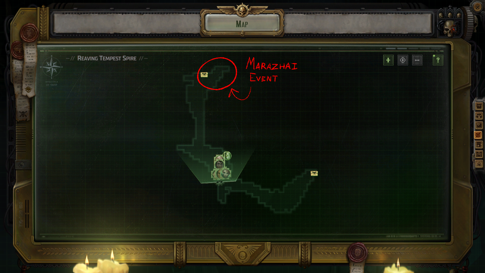
Marazhai will try and find what he’s searching for, but be disappointed at what he finds. He then invites you to come take in a view, and you have a few choices to respond.
- 1. “A strange suggestion. Why would I want to do that?”
- 2. "I do not trust you."
- 3. [Walk over to Marazhai and look down]
- 4. "We do not have time for this." [Activates etude [MarazhaiDisagree_MarazhaiRaider]
You can exhaust options 1-2 and then select option 3 or 4. Both will end the event.
The second little part of this occurs actually in the Spires on the first floor, and again involves Marazhai examining various crates like the lootgoblin he is. I’ve attached a photo of where it is located below.
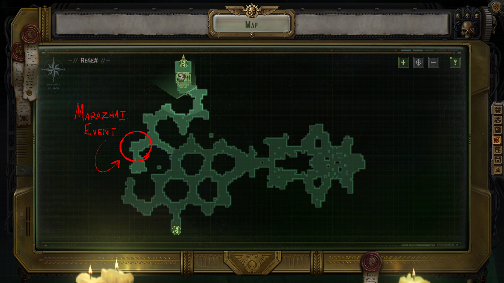
You have a few choices to respond:
- 1. [Look around]
- 2. "Get a move on. I shall not wait long."
Select option 1 if you wish to continue the event, as you’ll then get some more choices:
- 1. [Lore (Xenos) -35] [Step closer to the torture devices] [Add Equipment Usable: Grenade Xenospasm x2]
- 2. "Marazhai, what is this place?" [Add Equipment Usable: Grenade Xenospasm x2]
- 3. "I would like to stay a little longer. To learn more about the ones that frequent this place."
- 4. [Yawn in a show of boredom] "I see nothing of interest here." [Activates MarazhaiDisagree_MarazhaiTortureChamber]
Pass the check, or simply ask Marazhai what’s going on in the room to end the event. Option 3 just results in the same as option 1-2, but you don’t get the grenades, and option 4 obviously starts a Disagree etude.
The third, and final, part of this quest is in the very last area of the Spire, and features another increment unlock.
Your first choices are:
- 1. "Humanity has similar tools. For livestock and peasants."
- 2. "Any object you call your 'favourite toy' cannot possibly be anything good."
- 3. "I have no idea."
- 4. "Whatever it is, I will not permit you to take it with you."
Respond how you want, as all options more the conversation forward, and then you’ll have another set of responses:
- 1. "Why is this thing so important to you?"
- 2. "You may keep the agoniser."
- 3. [Snap the agoniser in Marazhai's hand] "While you are in my retinue, you can forget about such abominations." [Fails Marazhais romance]
Option 1 gives a bit of flavortext and returns you to options 2-3 above. If you want to continue Mars romance, let him keep his little toy with option 2. Otherwise, you can tell him to kick rocks.
Your next choices are:
- 1. "Are you out of your mind?"
- 2. [Hold out your arm] "Do it." [+1 Submission] + [Activates etude Ascention_Agonizer]
- 3. "Show me. On yourself." [+1 Domination] + [Activates etude Ascention_Agonizer]
- 4. "Put that foul thing away." [Activates etude MarazhaiDisagree_MarazhaiAgonize]
Pick what you’d like. Option 1 will just boot you back to the same choices above, so either gain a Submission/Domination increment, or disagree with Mar.
Either way, you’ve finished his quest.
Planet Event - A Waste of Good Suffering | Occurs if the Rogue Trader allowed Marazhai to have the last blow on Yremeryss.
Requirements
- Marazhai is alive.
- Marazhai was allowed the last blow on Yremeryss.
Summary
Marazhai gloats about landing the last blow on his sister.
Specifics
You’ll have a +2 Tempest counter just by simply witnessing this event. Your first choices are:
- 1. [Touch the crystal] [Activates etude RTTouchedYeremerryssCrystal]
- 2. "Does this thing offer any practical benefit?"
- 3. "We should go."
Exhaust dialogue 1-2, and then select option 3 to end the event, or just end it with option 3.
Planet Event - You Opened The Box | Occurs automatically if Marazhai is brought to the Webway gate.
Requirements
- Marazhai is alive.
- Marazhai is in the active party.
Summary
It appears that the consequences of a certain someone’s actions have caught up to them.
Specifics
NOTE: This event plays much differently depending on who you have in your party. Ulfar will even prevent Marazhai from being taken.
Your first choices are:
- 1. [Give Marazhai to the Mandrakes] "Take the xenos. I have no need of him." [Kills Marazhai]
- 2. "Marazhai stays with me. Away with you, beasts!"
- 3. "I certainly hope that our partnership is worth it, Marazhai. Keeping you around is costly."
- 4. [Kill Marazhai] "Grant you the pleasure of torturing this vicious freak to death? I think not!" [Kills Marazhai]
Whatever choice you make, the event ends.
Ulfar
-Recruitment?
Found in the Anatomical Opera after finishing the first Arena fight. You can interact with Ulfar by clicking him, not the cage. I have marked where he is located below with a screenshot.
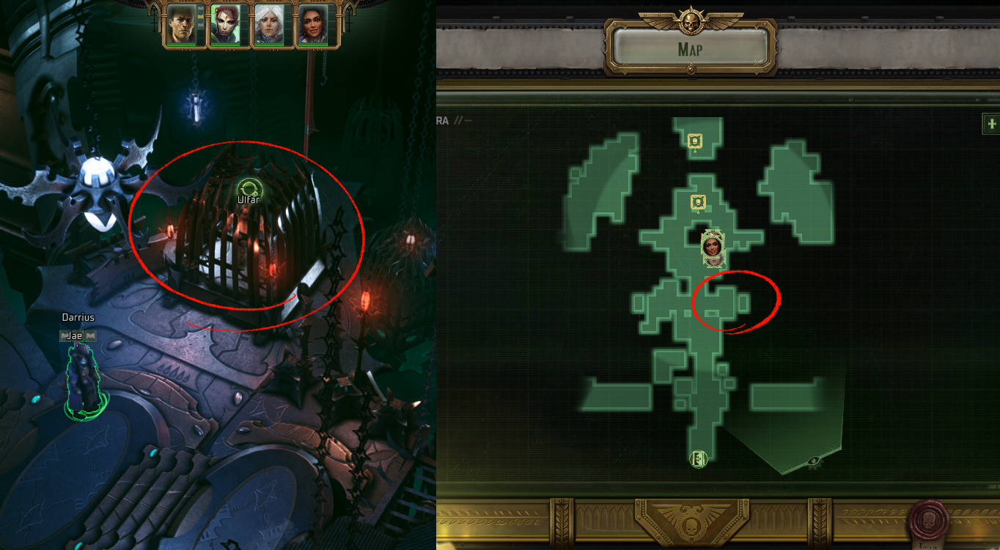
Ulfar is particular in that he doesn’t have a quest associated with his recruitment, just acquiring one of several possible items
The first place you can locate one of these items is in The Pit in Commorragh. In the south-east part of The Pit map, you will see a gladiator writhing on the floor from his wounds. You can examine him, and if you pass a +50 Medicae Check, you can rip out his augments. I have attached a screenshot of what he looks like and where he is located below.
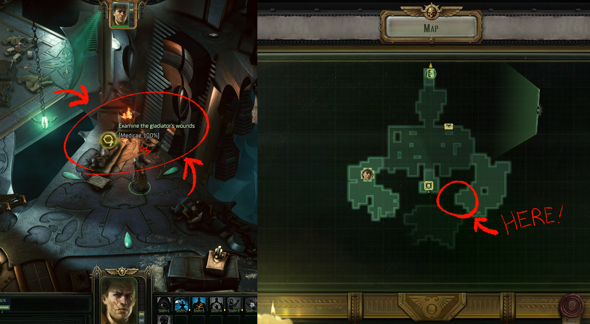
You’ll then be able to loot something off him called a Veteran's Electro Graft. Hold onto this, as you’ll meet someone who wants it soon enough.
The second place you can locate one of these items is in The Mangled Sector in Commorragh. In the north-east part of The Pit map, you will see a corpse laying on the floor. You can examine him, and if you pass a +50 Lore (Xeno) check, you can skin the corpse. I have attached a screenshot of what he looks like and where he is located below.
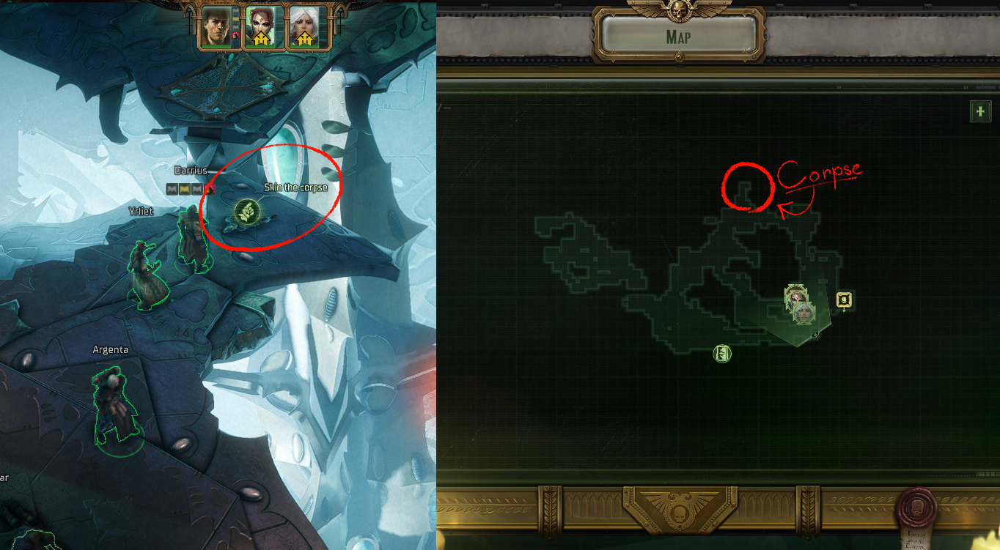
You’ll then be able to loot something off it called a Cameleoline Skin. Hold onto this, as you’ll meet someone who wants it soon enough.
The third place you can locate one of these items is in The Chasm map, and sort of involves following a little questline/detective game. You don’t get an official quest or errand or rumor in your journal. After your first arena fight, as you explore through the Chasm and approach the Anatomical Opera, you’ll notice a particular winged xenos just ominously standing by the edge of the street.
It will fly off, but there is an Examine icon available close to where it was standing. Pass a +50 Lore (Xenos) check to learn some information about the creature.
After your second(?) arena fight, the winged creature will finally actually attack you, and you have a variety of dialogue options.
- 1. But I still decide to wait and get a better look at the Prey.” [No new choices]
- 2. I act!
Select “‘I act!’” to move the event along and have more choices to make:
- 1 — ...summons companions to its aid. [No new choices]
- 2 — [Awareness -30] ...is trying to locate me among the tangle of spiked minarets. [No new choices]
- 3 — ...breaks into a run.
Select “...breaks into a run.” to move the event along and have more choices to make:
- 1 — [Toughness - 20] ...flees down the most predictable and straightforward route, hoping that its strength does not abandon it.
- 2 — [Agility - 20] ...slips away using the bodies of random passers-by as cover.
- 3 — [Ballistic Skill - 20] ...grabs someone's weapon from the ground and returns fire at random.
Pick whatever check you are most likely to pass, as the only thing that matters is that you pass one check.
And then pick:
- 1 — The hunt continues! [+1 StalkerBECounter]
The next dialogue and choices can change depending on if you pass a Passive +65 Willpower check.
If you pass the check
- 1 — [Coercion -30] ...turns some bystanders against me.
- 2 — [Tech-Use-30] ...bars my way with a cataclysm.
- 3 — [Lore (Xenos) -60] ...slips away with the skill of one who has lived here their entire life.
If you don’t pass the check
TBA.
Pick whatever check you are most likely to pass, as the only thing that matters is that you pass one check.
And then pick:
- 1 — The conclusion is drawing closer! [+1 StalkerBECounter] + [-1 StalkerBECounter]
The next dialogue and choices can change depending on if you pass a Passive -10 Carouse check.
If you pass the check
- 1 — [Demolition -80] ...looks defenceless and I attack, failing to notice the trap it has laid out for me.
- 2 — [Athletics -80] ...is not where I expected it to be. Having climbed the ledge of a wall, it lunges at me and bellows.
- 3 — [Logic-80] ...lunges at me first. I realise too late that it is not desperation but cold determination behind it.
If you don’t pass the check
TBA.
Pick whatever check you are most likely to pass, as the only thing that matters is that you pass one check.
And then pick:
- 1 — Everything will be over in moments.
And then:
- 1 — [Strength 50] ...banks on brute force, trying to break my fragile bones and shatter my joints.
- 2 — [Weapon Skill 50] ...grabs one of the blades hanging from my belt and aims it at my throat.
- 3 — [Medicae 0] ...responds with clinical attacks aimed at my weak points.
- 4 — [Toughness 50] ...allows me closer, enveloping me in a deadly embrace and hoping to suffocate me before I tear it to shreds.
Pick whatever check you are most likely to pass, as the only thing that matters is that you pass one check.
And then:
- 1 — The Prey grabs me by the throat, lifts me into the air, and snarls. It seems to want to know why I attempted to kill it.
- 2 — I die.
You can select option 1 and then option 2, or just end the event with option 2.
And finally:
- 1 — The chaotic burst of violence that bloodied the streets of Commorragh ends just as abruptly as it erupted. Such is life in the spires.
And now you can steal her goop, which is a Scourge’s Adrenal Glands.
Alongside the arena, you can also gain Malice’s Hide and/or Commissars Head via taking over the Shriekers Den and killing one or both of them.
From your Arena fights, you’ll gain a variety of genetic materials as well, such as 2x Arena Beast‘s Claws, Aebys’s Neuro-Agoniser, and Marazhai’s Spinal Cord if you kill him instead of recruiting him in your second arena fight.
I recommend picking Ulfar up immediately after finishing your first arena fight. Proceed with the Anatomical Opera quest, get your mind maggot removed, and then go find Ulfar. An image with his location in the Anatomical Opera, and an image of what he looks like are located here in the guide.
Start a conversation with him:
- 1. "Fenrys hjolda, Vlak." [Only appears if a Passive -10 Lore (Imperium) check is passed.]
- 2. [Kneel before him] "Hail, Angel of the Emperor."
- 3. "Glory to the Emperor!"
- 4. "Pray, pause your filthy repast, for I am Rogue Trader [PLAYER NAME] von Valancius."
- 5. "I hope you are enjoying your meal. I am [PLAYER NAME]."
You can pick anything to proceed the conversation. Your next set of choices are:
- 1. [Study the man] [No new choices]
- 2. "Who are you?"
- 3. [Listen closely to the song the prisoner is singing to himself]
- 4. "A warrior such as you could prove useful to me." [Only appears if etude RecruitUlfar is inactive]
- 5. [Step away from the cage]
Select “”Who are you?”” to unlock new choices:
- 1. "How did you come to be here?" [No new choices]
- 2. "I wish to know more about your brothers." [No new choices]
- 3. "Why does the Haemonculus keep you in a cage?"
- 4. [Point at the piece of meat in his hand] "Don't they feed you?"
- 5. "You must be planning to escape, yes?"
- 6. "I have no more questions." [Returns to this section]
Select “"Why does the Haemonculus keep you in a cage?"” to unlock a new set of options:
- 1. "I want to help you."
- 2. "We suffer the same fate. I was also captured by the xenos and they have forced me to kill for their entertainment."
- 3. "I never imagined I would see an Angel of the Emperor allow himself to
- be taken prisoner, and to be content with his subjugation."
- 4. "So, you serve the enemies of Humanity?"
- 5. "I see." [Returns to this section]
None of the options result in Ulfar joining you.
Option 4: [Point at the piece of meat in his hand] “Don’t they feed you?”
- 1. [Answer just as obliquely] "There must have been a reason for this bloody repast." [No new choices]
- 2. "And does it taste good?" [No new choices]
- 3. "That's disgusting!" [No new choices]
- 4. "A bad habit, one that raises suspicions of corruption." [No new choices]
- 5. "You would know." [Returns to this section]
Option 2. [Listen closely to the song the prisoner is singing to himself] from this section results in more choices.
- 1. [Fellowship -20] [Try to join in the singing]
- 2. "What is the song about?"
- 3. "It is beautiful."
- 4. "I would hate to hear such savage ditties sung in my court."
- 5. [Say nothing]
None of the options result in Ulfar joining you, but you do get some nice lore and flavortext.
Return to Tervantias and select the option:
- 4. “Master, allow me to take the Space Marine you keep in a cage.”
And then:
- 1. [Hold out the bag of samples] "Of course, Master." [Appears if you have at least one genetic material in inventory]
- 2. "I have nothing to pay you with but my own flesh. Please accept it as a gift."
- 3. "I cannot pay now." [Ends conversation]
You’ll then have to fork over one piece of genetic material, either from the ones you’ve collected, your companions, or some from yourself. Tervantias will be pleased about getting a new fidget toy and then still tell you no.
However, you get a few options to respond to his adamant no.
- 1. 1. "If you do not release the Emperor's Angel, His retribution shall fall upon you, xenos."
- 2. "With him, I would definitely succeed. It would further both our interests."
- 3. "Surely it is dangerous to keep such a prisoner in your abode. What if he escapes and comes for your head?"
- 4. "The loss of some mon-keigh could never impede the work of a mind as great as yours." [Activates etude RecruitUlfar] + [Add Item UlfarCageKey]
- 5. “That poor soul. Surely nothing good awaits him in captivity.”
The only way to get Ulfar in this conversation is to select option 4. Wounded pride aside, you now have the Bone Key. Return to Ulfar and select:
And then select:
- 1. "I am planning an escape. Are you with me?" [No new choices]
- 2. [Puff up your chest ] “You, warrior, have the honour of standing shoulder to shoulder with a true hero of the Imperium!” [Only appears if your Triumph is Feat of Greatness]
- 2. [Requires: Dogmatic - Adherent] [Recite the warrior's litany] "Even a heretic or a non-human can wet a profane blade in the blood of enemies. But a true warrior of Humanity does not fight for gratification or trophies. He fights to carry out His will, for that is his duty. And it is a blessing." [Requires 45 Dogmatic Points] + [Recruits Ulfar]
- 3. "We are both servants of the Emperor, we ought to help each other in perilous place." [No new choices]
- 4. "Don't you want to slay xenos with me?" [No new choices]
- 5. "Are you a coward, then? Afraid to come out of your cage?" [Recruits Ulfar]
- 6. "Tervantias gave you to me. Join my party." [Recruits Ulfar]
- 7. “Stay in your cage, then, fool.” [Makes Ulfar unrecruitable]
The Triumph exclusive dialogue “[Puff up your chest ] ‘You, warrior, have the honour of standing shoulder to shoulder with a true hero of the Imperium!’” has its own set of options after it.
- 1. “I have enacted my will without fear of death, and my valour was celebrated long before I became a Rogue Trader!”
- 2. “My accomplishments must pale in comparison to yours.”
If you select “1. ‘I have enacted my will without fear of death, and my valour was celebrated long before I became a Rogue Trader!’” you will then unlock another choice:
- 1. “Well, my name is known to everyone in the Koronus Expanse. I am [PLAYER NAME].” [Recruits Ulfar]
After you recruit Ulfar, make sure to level him up. As of 1.2+, Ulfar will automatically equip both his equipment.
Planet Event - Biting the Hand that Feeds | Occurs immediately after escaping The Arena and defeating the Envoy of the Poisonous Whisper and the Envoy of the Wounded Skies.
Requirements
- Ulfar must be recruited, but does not have to be brought to the event. [Thank you to u/Tierce for the information!]
Summary
You’re staring down the eyes of a mad dog, and have to calm him down.
Specifics
As soon as you defeat the Envoy of the Poisonous Whisper and the Envoy of the Wounded Skies, Ulfar will start a “conversation” and you have a few choices to respond to him:
- 1. "The Emperor protects, warrior!"
- 2. "Stop. All your foes are dead. I am your comrade."
- 3. "Stay where you are!"
- 4. [Aim your weapon] "Stand down! Or you will fall right next to this scum."
Any of them will move the conversation to the next set of choices:
- 1. "Warrior, you honourably dispatched the Emperor's enemies!"
- 2. "What just happened to you?"
- 3. "You mad beast! You have killed everyone who could have told us anything!"
Pick any option you’d like, as they all lead to the same outcome and the next choices:
- 1. "What kind of grief must it be, to have nearly cost you your sanity?"
- 2. "We are no longer on the same path. I do not trust you." [Unrecruit UlfarCompanion]
- 3. "I suggest we go and see why Nocturne of Oblivion has dragged us to this place."
Option 1 leads you to more choices, along with the ability to get an increment path:
- 1. "You have people to fight for. People who need you as you are: a warrior, not a beast." [Activates etude UlfarChoice2_Chapter] + [+1 Chapter]
- 2. "You have a duty to kill the Emperor's enemies, not whomever you please." [Activates etude UlfarChoice2_Loner] + [+1 Loner]
- 3. "If that is your nature, you should embrace it. Even blind destruction can serve a purpose, can't it?" [Activates etude UlfarChoice2_Wulfen] [+1 Wulfen]
- 4. [Say nothing] [Activates etude UlfarChoice2_Wulfen] [+1 Wulfen]
After making your selection here, you’ll get booted back to options 2-3 in this section, so either unrecruit Ulfar or go searching for Nocturne.
Kibellah
Help! Where do I find Kibellah in Commorragh?
Kibellah is located in the Anatomical Opera, an area that you will be directed towards after your first arena fight. Speak to Tervantias and select:
- ?. "I would like to speak with you about a member of my retinue who was delivered to you."
And then:
- ?. "My bodyguard, Kibellah. Do you have her?"
Tervantias will lower the steps to Kibellahs area. I have marked the area she is located below.
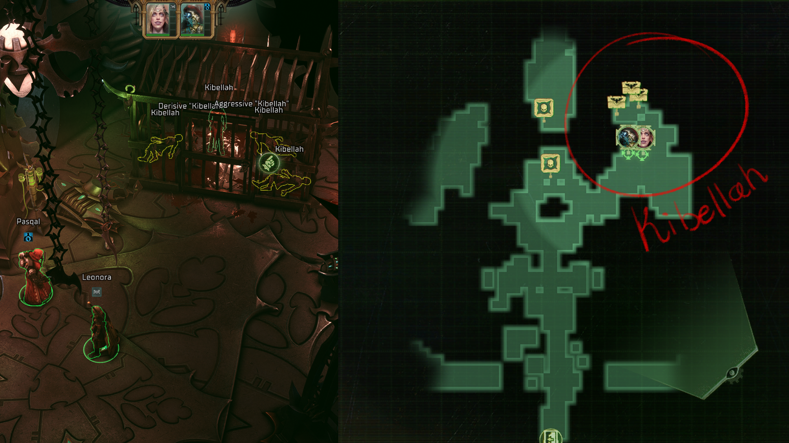
Speak with Kibellah, and your first options will be:
- 1. [Examine the cage] [No new choices]
- 2. [Examine the figures standing next to Kibellah]
- 3. "What happened here?"
- 4. "I must think."
If you select “[Examine the figures standing next to Kibellah]” and pass a passive +89 Awareness check, you will notice the Kibellahs in the cage are not what they appear. Your next options are:
- 1. "What happened here?"
- 2. [Address the doppelgangers] "You are fabrications. Who were you before the Haemonculus changed you? Why do you play along with his deception?" [Only appears if you pass the check?] + [No new choices]
- 3. "I must think."
If you select “What happened here?” you will unlock a new option:
- 2. [Gesture at Kibellah] "I am taking you away from here."
If you select “[Gesture at Kibellah] “I am taking you away from here.” you will unlock a new set of options:
- 1. [Requires Dogmatic - Adherent?] "You would dare plead for a release from your sacred vow of service? Your duty is not yet done, and neither has your penance been paid!" [Recruits Kibellah]
- 2. [Lore (Imperium) -30] "The Undying One is testing you, and what do you do? Show doubt and disgrace yourself!" [Recruits Kibellah if the check is passed]
- 3. [Persuasion -30] "Trust me. I can see that you are the true Kibellah. My devoted ally." [Recruits Kibellah if the check is passed]
- 4. [Coercion -30] [Raise your voice at the doppelgangers] "If you do not stop lying to her, I will show you that I know more about torture than Tervantias!" [Recruits Kibellah if the check is passed]
- 5. [Logic -30] "Tervantias is toying with your mind! They are his fake creations, and your soul is untouched. He wants you to believe that he holds limitless power over you!" [Recruits Kibellah if the check is passed]
- 6. "I order you to kill these abominations and join me!" [Recruits Kibellah] + [Adds Debuff - “Shattered World” (All characteristics except Weapon Skill are reduced by -10. The shock that Kibellah suffered as Tervantias's prisoner has left an indelible mark on her mind. It will take some time for this horror to fade away.)]
- 7. [Kill all three of the Haemonculus's prisoners] "I am granting the Emperor's Peace to you all." [Kills Kibellah]
- 8. "I will not soil my hands with you, unholy spawn. I order you to kill each other.” [Kills Kibellah]
- 9. “I must think.” [Exits the conversation]
Either kill or recruit Kibellah, and the event will be over. If you spare and recruit her again, she will request to speak to you in private.
Personal Quest - Survivor’s Confession | Occurs after rescueing Kibellah from the Anatomical Opera
Requirements
- Kibellah is alive.
- Kibellahs Romance is active.
Summary
Kibellah wishes to confess something to the Rogue Trader.
Specifics
Return to the Shrieker’s Den, and seek Kibellah out to have a conversation with her. Your first options will be:
- 1. "You wished to speak with me." [Only appears if romance is active]
- 2. "Are you unwell?"
- 3. "I cannot help but wonder... Are you the same Kibellah I once knew?"
- 4. "Did you manage to learn anything useful while you were in captivity?"
- 5. "Be ready. We are getting out of this place."
Select "You wished to speak with me." to start the quest. Your first options will be:
- 1. "What is the matter with you? How can you compare the Emperor's servants to the enemies of Humanity?"
- 2. "I won't hold it against you. You are tired and wounded. You are not thinking straight."
- 3. "I am beginning to wonder if it was the true Kibellah who stepped out of that cage..."
- 4. [Say nothing]
All options will lead to the next set of choices:
- 1. "Kibellah... This is not the place for this conversation. I refuse to continue it any longer."
- 2. "Neither Commorragh nor anything you say can change how I feel about you! I want to be with you. Do you understand?" [+1 Synchronicity]
- 3. "To the void with the Vizsier! If the path of the Bloodspun Web is suffocating you, you must abandon it to survive!" [+1 Distortion] + [+1 Taint]
- 4. "You want this to be over? Perfect. You and I are done." [Fails the romance]
- 5. [Look away without saying anything] [Fails the romance]
If you want to continue the romance, pick options 2-3, as 1, 4, 5 end the romance? And after that, the event is over?
Solomorne
Help! Where do I find Solomorne in Commorragh?
Immediately leave the Pit and move past the main area.
Approach Glaito and your first options will be:
- 1. [Cautiously touch Glaito] "Can you hear me?" [No new choices]
- 2. [Examine the dog]
- 3. [Medicae +20] [Examine the corpse] [No new choices?]
- 4. [Leave]
Selecting “[Examine the dog]” unlocks new option(s):
- [Agility +20] [Attempt to extract the contents of Glaito's mouth]
Check Passed
- 1. [Press the remaining button] "I hope this wakes you up." [Activates etude SolomornePetFound]
- 2. [Leave]
Check Failed
Follow Glaito to the Mangled Sector. You can just manually follow him through Commorragh, and he will lead you right to Solomorne. Your first options are:
- 1. "How did you break free?" [No new choices]
- 2. "Let's go. Your wounds need tending."
- 3. "Get a hold of yourself — we are leaving."
- 4."It was a mistake to look for you. Farewell." [Activates etude LeaveSolomorne] + [Unrecruits Solomorne]
- 5. [Kill Solomorne] "Rabid dogs get put down." [Kills Solomorne]
Selecting “"Let's go. Your wounds need tending."” unlocks new option(s):
- 1. "You are not in your right mind. Let me help you."
- 2. "You spineless worm. Look at the state of you."
- 3. "Guilty? What are you talking about?"
- 4. "DX-1, pull yourself together!"
Selecting “"Guilty? What are you talking about?"” unlocks new option(s):
- 1. "And what is the sentence?" [No new choices]
- 2. "And what about Glaito?"
- 3. "Even so, I am not leaving without you." [Activates etude ArbitesRomance_Break]
Selecting “"And what about Glaito?"” unlocks new option(s):
- 2. "'He' what? Betrayed you?" [No new choices]
- 3. "You do realise that we are talking about a half-servitor, a tool?" [No new choices]
Selecting “"Even so, I am not leaving without you."” unlocks new option(s):
- 1. "Explain yourself."
- 2. "You are not making sense. With what you are going through, you are not thinking clearly."
- 3. "That changes nothing. I'm getting you out of here."
- 4. "l see. Well, then, enjoy rotting here."
Selecting “"Explain yourself."” will prompt you to roll a passive +50 Awareness check unlocks new option(s):
- 1."Why did they order you to do something like that?" [No new choices]
- 2. "What about Glaito and your data-slate? Was that a lie too?" [No new choices]
- 3."You hid your feelings well." [No new choices]
- 4. "It seems they gave you the only task you were qualified for: to go around jumping into Rogue Traders' beds."
- 5. "Everything between us was a lie, was it? You're making a fool of yourself. Maybe you were just following orders at the start, but don't try to tell me you never developed real feelings for me."
- 6. "l can see you have feelings for me. And I can see you're torturing yourself right now. Once we're out of here, you can get your head straight and we'll return to this conversation later." [Activates etude ArbitesRomance_WiseWord]
- 7. "That changes nothing. I'm getting you out of here."
- 8. [Slap him] "You utter bastard. I never want to see you again."
- 9. "l see. Well, then, enjoy rotting here."
Selecting “"l can see you have feelings for me. [...]"” unlocks new option(s):
- 1. [Requires - Dogmatic Votary] "The Emperor laid this burden upon us in the certainty that we were equal to it. Now you are doubting yourself, but not the Lex Imperialise Tell me — am I right? [Activates etude SolomorneCommorrahFaith] + [+5 Dogmatic]
- 2. [Requires - Iconoclast Votary] "You are a human in a city of Drukhari. It is enough to break anyone. But Glaito led me to you, and I am going to get us out of here. You gave up hope too soon." [Activates etude SolomorneCommorrahHope] + [+5 Iconoclast]
- 3. [Requires - Heretical Votary] "You know something? You're right. I would gladly shoot half the people I encounter. Weak, cowardly worms in human skin." [Activates etude SolomorneCommorrahChaos] + [+5 Heretical]
- 4. "Proctor Solomorne Anthar, according to the Injuncta Cardinal, an Arbitrator stepping down from their post without leave is to be treated as a deserter and a traitor to the Imperium regardless of circumstances. How dare you interpret the spirit of the Lex Imperialis and decide your own fate when the letter of His Law has already given you purpose and rid you of the heresy of doubt?" [Only appears if RT has Arbiter Origin]
- 5. [Lore (Xenos) +20] "The Drukhari have been perfecting their art of killing for centuries, whereas you are wounded and exhausted — abandon your dream of a lone crusade against the xenos."
- 6. [Coercion +20] "Do you wish to die a hero? The Drukhari will catch you and break you, and you will die licking their feet."
Selecting “"You are a human in a city of Drukhari. [...]"” unlocks new option(s):
- 1. "You are only human, just like the people you judge. Make peace with yourself and find a new way to serve the law." [Recruits Solomorne]
- 2. "If an Arbitrator from your squad was in your position, would you abandon them?" [Recruits Solomorne]
- 3. "You protect Glaito, and you draw strength from that. Perhaps one day you will want to protect human lives, too." [Recruits Solomorne]
Act 4
NOTE: Depending on how much you explored the galaxy in Act 2-3, you might miss events via just speeding from planet to planet to do the main quest. I recommend either spending some time farming events for characters via just jumping from planet to planet slowly, or clearing up some of the 600+ rumors you’ve probably acquired, instead of crossing half the galaxy via making a custom jump.
There is no way unfortunately to trigger a specific event when you want, especially if you have multiple romances/characters active, it’s all up to chance.
Idira
Personal Quest - The Door | Can be activated during a cutscene after leaving Commorragh.
Requirements
bridge discussions
Summary
Idira comes to the Lord Captain begging for help about one of her visions.
Specifics
Idira will explain herself, and you have a few options to respond:
- 1. "Before I make my decision, I have questions to ask you."
- 2. "We will find this door. I give you my word." [+1 Humanity] + [Gives The Door quest] + [Ends event]
- 3. "We have to find that door. You are too unstable." [+1 Effectiveness] + [Gives The Door quest] + [Ends event]
- 4. "Out of the question. I will not indulge your sorcerous visions." [Ends event]
If you select option 1, you have some choices:
- 1. "What do you think is behind the door?"
- 2. "Do your visions contain any clues on where to start looking?"
- 3. "Is the door you describe similar to the door your whispers come from?"
- "I find it difficult to believe that suppressing your abilities is safe."
- 5. "What if it's a trap?"
- 6. "I have no more questions."
Select as many or as little as you want, and select option 6 to return to this section to make a decision.
The next time this quest will become important is when you head to Quetza Temer as part of the Main Quest - Hunting Grounds.
Idira will perk up on the voxcast, and you have a chance to gain an increment:
- 1. "What little door?"
- 2. "All right, calm down. I need to take care of Winterscale's flagship right now." [+1 Humanity]
- 3. [Change back to Vigdis's frequency without saying anything] "There was some interference. Where were we?" [+1 Effectiveness]
Finally, after unlocking access to Haemonculus’ lab, Idira will pipe up again, and you have more choices:
- 1. "Remind me, what is it you want to find there?"
- 2. "Very well. We will go there at once.” [Activates etude LabWithLockedldira]
- 3. "I will take you there later. I need to assess the situation first." [Activates etude LabWithoutldira]
- 4. "Your request is denied. I am taking only those I trust with me." [Activates etude LabWithoutldira] + [Fails the quest]
Take Idira with you to the lab. After you cross the threshold marked below, Idira will prompt you and you have some choices to make:
- 1. "Then you should trust your feelings. Go ahead, try to open it."
- 2. "Are you sure you are not mistaken? We can search for a while longer."
- 3. "I knew you were delusional. Come. We have wasted enough time on this."
Any of them move the conversation along, your next choices are:
- 1. "As long as we are together, we will get through this, Idira. Trust me."
- 2. "My faith in the Emperor is stronger than any warp trickery. He protects
- us."
- 3. "This sounds like a challenge! I was just thinking about acquiring a new skull for my collection."
- 4. "You will go first, then."
Any of the choices end the conversation, and now it’s time to explore the Secret Wing. Eventually, as you draw towards the very back of the lab, an Aeldari Farseer will drag you into a conversation, and your first choices are:
- 1. "Who are you?"
- 2. [Draw your weapon] "I cannot deny the request of one who is in torment."
- 3. [Draw your weapon] "It will be my pleasure to end a vile xenos!"
Any of the options move the conversation along, and you’ll get a slightly different conversation depending on if you took Idira to Commorragh or not. Either way, your next choices are:
- 1. "So what are you?"
- 2. "All I need is the implant on your head. Give it to me, and I shall set you free."
- 3. “The Haemonculus is dead. You are free.” [Only appears if you’ve defeated Tervantias for the second time]
- 3. "I shall grant you a swift death."
- 4. "I shall kill you for the sole reason that I enjoy killing xenos."
- 5. "I will not take your life. Farewell."
If you select “So what are you?” you’ll unlock a new option:
- 1. “Your pleas for help?”
If you select “All I need is the implant on your head. Give it to me, and I shall set you free.” you will unlock a new option:
- 3. “What makes this device so dangerous?”
Select "I shall grant you a swift death." OR "I shall kill you for the sole reason that I enjoy killing xenos." OR "I will not take your life. Farewell." to proceed into a fight with the Aeldari Farseer and continue the event. Defeat him, and Idira will ask you to make a choice:
- 1. [Requires: Heretical - Fanatic] "I know of another way to help you. One that will spare you from having to fight the voices ever again. Become one with them." [Requires 300 Heretical points] + [+20 Heretical]
- 2. "Break that abominable device. Robbing yourself of your soul is never the way."
- 3. "Put on the implant. Do not waste another moment. You must survive no matter the cost.”
- 4. "This decision is yours alone, Idira." [Outcome will change depending on Idiras Humanity versus Effectiveness flags]
- 5. [Kill Idira] "A psyker with a xeno-artefact in her head? I don't think so. I will rid myself of this menace." [Activates etude IdiraBanished] + [Activates etude YdiraDead]
If you select "I know of another way to help you. One that will spare you from having to fight the voices ever again. Become one with them." you will unlock another set of choices:
- 1. "All your life, you have hated the voices, feared them. Don't. After all, they are part of you. Let them in, all of them. Open the door."
- 2. "I command you to open the door inside your head!"
If you select “Break that abominable device. Robbing yourself of your soul is never the way.” and Idira has a higher Effectiveness score than her Humanity score, you will unlock another set of choices:
- 1. 1. [Persuasion -60] "If it means betraying yourself and changing the essence of who you are, then what sense is there in living such a life?" [Activates etude IdiraPutOnPsydamper] + [Add Item Equipment Head PsyJammer to inventory]
- 2. [Lore (Xenos) -60] [Point at the xenos's body] "He was one of the most powerful psykers of all. Look at what the psy-stifler did to him. Don't do it, Idira." [Activates etude IdiraPutOnPsydamper] + [Add Item Equipment Head PsyJammer to inventory]
- 3. "You are right. Do as you see fit." [Activates etude IdiraPutOnPsydamper] + [Add Item Equipment Head PsyJammer to inventory]
- 4. [Destroy the psy-stifler] “You can thank me later.” [Activates etude IdiraPsydamperDestroyed]
If you select "Put on the implant. Do not waste another moment. You must survive no matter the cost.” and Idira has a higher Humanity score than her Effectiveness score, you will unlock another set of choices:
- 1. [Persuasion -80] "Your life is not the only one at stake here. Sentiment has no place in this discussion - you must put on the psy-stifler." [Activates etude IdiraPutOnPsydamper] + [Add Item Equipment Head PsyJammer to inventory]
- 2. [Coercion -80] "I will not tolerate a psyker on the verge of eruption in my retinue. Neutralise yourself at once or die." [Activates etude IdiraPutOnPsydamper] + [Add Item Equipment Head PsyJammer to inventory]
- 3. [Lore (Warp): Succeeded] [Persuasion -45] "You are two steps away from becoming a portal. It pains me to say this, but the psy-stifler is our only chance of preventing that." [Only appears if a Passive +5 Lore (Warp) Check is passed] + [Activates etude IdiraPutOnPsydamper] + [Add Item Equipment Head PsyJammer to inventory]
- 4. "You are right. Do as you see fit."
- 5. [Put the psy-stifler on her head by force] “You can thank me later.”
And then, if Idira put on the psy-stifler:
- 1. "Are you all right? How are you feeling?"
- 2. "l am glad that the problem has been solved."
- 3. "Was it worth it?"
NOTE: If Idira puts on the psy-stifler, she will not be able to unequip it, and it will permanently be equipped in her helmet slot. Keep this in mind if you use her in combat. The psy-dampeners information has been pasted below:
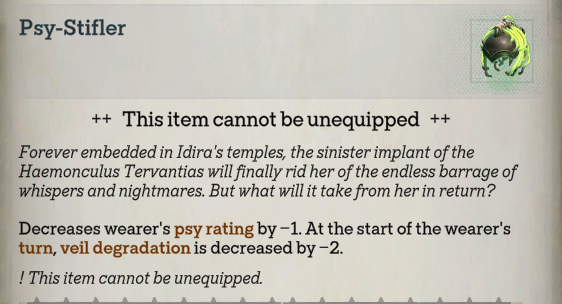
Whatever you decide, Idira asks to speak to you on the ship. Select the option:
- ?. “Idira, how are you? Not regretting your decision, are you?”
Depending on what you did, Idira will respond in a few different ways, and you have different choices:
If you kept the psy-stifler off Idira (Humanity Ending)
- 1. "One story? Don't sell yourself short. You and I have already had enough adventures to fill a tome!"
- 2. "Shoulder to shoulder is a little too close for comfort-after all, you might lose control again. To be safe, arm's length would seem more appropriate."
If you put the psy-stifler on Idira (Effectiveness Ending)
- 1. "You seem dispirited. Suspiciously so."
- 2. "Excellent. I expected nothing less."
Argenta
Personal Quest - Driven | Should be given automatically after finishing Main Quest - The Siege
Requirements
Summary
Argenta has finally found the way to Salis Prime.
Specifics
Argenta will buzz you on the Vox, and inform you that she knows how to get to Salis Prime. Your choices are:
- 1. "Are you prepared for this journey?"
- 2. "Excellent. We will set the course for Salis Prime as soon as we can." [Ends the event]
- 3. "We will visit this planet of yours if I so desire." [Ends the event]
Now, let’s zip over to Raeth-Tawi and draw close to Salis Prime. Argenta will buzz you on the Vox, and your choices to respond are:
- 1. "A ship that resembles a mountain?"
- 2. "What should we look for once we get to the mountain?"
- 3. "I see. Prepare my shuttle." [Ends the event]
Selecting “What should we look for once we get to the mountain?” unlocks a new option:
- 3. “What if the cultists are long gone? What if they stole the relic?”
Anyway, land on the Crash Site at Salis Prime. You’ll meet an enemy called Afterlight, and your next choices will be:
- 1. "The strongest of the disciples who survived, you mean. After all, we exterminated the rest of you on every world we found you on."
- 2. "You lot again."
- 3. "Where are you hiding, heretic? Come out and speak to us face to face."
All of your choices will move the event forward, and your next choices are:
- 1. "Too easily do you forget the blood that is spilt because of you, and too often do you name yourself the chosen of the Emperor and His saints." [+2 Humility]
- 2. "You are right. He will not lead us astray." [+2 Fire]
- 3. "Why restrain your anger when you're dealing with a creature as corrupt as he? Unleash your fury!" [+2 Fury]
And then, as you find Afterlight again, your choices are:
- 1. "No more words. Accept your death, heretic!"
- 2. "If you hadn't threatened me, things could have gone differently. But you did. And for that, you will die."
Both options yank you into a boss battle, and I’ll let you know now to make destroying the three lenses dotted on the battlefield a priority, as Afterlight will just regenerate indefinitely until you do.
Anyway, after the battle, your choices are:
- 1. "You speak as though you intend to go in alone."
- 2. "Go, Argenta. May you find what you seek." [Ends the event]
- 3. "You may go. But do not keep me waiting." [Ends the event]
After two days, Argenta will return, and your choices change depending on her alignment:
Humility
Fire
- 1. "So this armour is the One Star?" [No new choices]
- 2. "What did you see inside the ship?" [No new choices]
- 3. "It is good to have you back. We have many battles ahead of us." [Ends the event]
Fury
And with that, the event and quest is over!
Abelard
Personal Quest - Blood Ties | Can be activated during a cutscene after leaving Commorragh.
Requirements
- Abelard is alive.
- Personal Quest - Dark Echelons was completed.
Summary
Abelard needs your help defending his family.
Specifics
After yet another briefing, Abelard will ask for your assistance with a personal matter. Your choices are:
- 1. “What? How is it possible?”
- 2. “Hmmm… your family has finally shown it’s true colors at last.”
Both choices move the dialogue forward to this set of choices:
- 1. "Abelard... what if your family is guilty?" [No new choices]
- 2. "Tell Zacchary Weisz to send a message to Dargonus saying I will personally take part in the investigation." [Activates etude AbelardQ2] + [Gives Blood Affairs quest]
- 3. "I'm sorry, Abelard. I deny the Werserians my protection." [Activates etude WerserianExecuted]
The event ends after you’ve made your choice, or not, to help Abelard.
If you’ve accepted to help Abelard, the next time this quest will come up is when you choose to go to Dargonus. Zip to your palace, and you’ll watch a cutscene. Your first choices are:
- 1. [Point at the dead bodies] "What is this mess?"
- 2. [Medicae -45] [Examine the assailants]
If you select [Point at the dead bodies] “What is this mess?” you’ll unlock some new options:
- 1. [Medicae -45] [Examine the assailants]
- 2. "Where is the court chancellor, Clementia Werserian?"
- 3. "Why is the governor not here to greet the Rogue Trader?"
- 4. "I must take my leave."
I definitely recommend exhausting all the options, but if you’re in a hurry, just try and pass the Medicae check. And then, as soon as you exit the conversation, examine the farthest body and pass a [+20 Awareness] check to gain Blood-Stained Letter.
Head into the palace, and head up the steps to see another cutscene. Your next choices are:
- 1. "What are the charges against House Werserian?"
- 2. "What happened on Dargonus in my absence?" [No new choices]
- 3. "Why are there dead bodies at the entrance to my palace?" [No new choices]
- 4. "Drivestem, you aren't accusing one of Dargonus's leading noble houses
- of treason without airtight evidence, are you?" [No new choices]
- 5. [Speak to the heads of houses present] "Do you support the governor's accusations?"
- 6. "Your words alone are not enough to make me doubt the loyalty of House Werserian. As the Rogue Trader, I order you to release them from custody at once."
- 7. "Sabotaging logistics, riots, conspiracy... The case appears to be flimsy. I wish to learn more before I make my final decision."
- 8. "I do not have time to deal with this. Drivestem, I accept the findings of your investigation and find the Werserians guilty.” [Activates etude WerserianExecuted] + [Ends the quest]
If you select "What are the charges against House Werserian?" you will unlock a new option:
- 2. “Clementia, I wish to hear your account.”
If you select "Drivestem, you aren't accusing one of Dargonus's leading noble houses
of treason without airtight evidence, are you?" you will unlock a new option:
- 4. [Awareness -45] [Look closer at the governor's son] [Only appears if Cassia is not in the party]
Again, I recommend exhausting all the dialogue. Then, you’ll have to do some detective work. I’ve separated the conversations with the major families below for neatness.
Drivestem Questioning
Your first choices are:
- "I wish to hear your reasoning again. What makes you think the Werserians are behind the plot against me?"
- 2. "What do you make of this letter? I found it on one of the assailants." [Only appears if you passed the +20 Awareness check from this section and have the Blood-Stained note.]
- 3. "All of the assailants were high-functioning servitors. Such servitors are only employed by families close to the Adeptus Mechanicus." [Only appears if you passed the -45 Medicae check from this section]
- 4. "Tell me more about your son, Drivestem."
- 5. "I do not have time to deal with this. Drivestem, I accept the findings of your investigation and find the Werserians guilty.” [Activates etude WerserianExecuted] + [Ends the quest]
- 6. “I shall return to you later.” [Ends questioning]
If you select “Tell me more about your son, Drivestem.” AND have Heinrix in the party, you’ll notice that Cornelius appears to be a bit nervous, but the reason presented is a lie. You’ll be presented with a few new options to respond:
- 1. "Tell me more about your job, Cornelius. What do you do?"
- 2. "How did you manage to find the forged documents in the bureaucratic hell that is the Administratum?"
Once you select "How did you manage to find the forged documents in the bureaucratic hell that is the Administratum?" you’ll unlock a new option:
- 3. "But does House Werserian have access to the Adeptus Administratum? There is no conceivable way they could do all of this in a place where they do not hold any power."
Exhaust all the options to put the pressure on Cornelius, and you’ll unlock a new option again:
- 4. "Cornelius, what is the true reason for your nervousness?"
Cornelius will repeat his lie again, but now you can call him out on it:
- 1 [Coercion -10] [Place your hand on your weapon] "You are speaking to a Rogue Trader. And my patience is running out." [Activates etude ProvedWerserianInnocent]
- 2. "Are you afraid to talk to me? Perhaps you would be more comfortable speaking to an Interrogator of the Inquisition." [Only appears if Heinrix is in the party] + [Activates etude ProvedWerserianInnocent]
- 3. "The poor soul is so frightened... perhaps I should leave and let Marazhai
- speak in my place. You are familiar with my Drukhari companion, aren't you?” [Only appears if Marazhai is in the party] + [Activates etude ProvedWerserianInnocent]
- 4. "I see you cannot contain your awe in the face of the grand persona of your lord. I will not trouble you with any more questions."
If you decide to finally call out the lie, your next choices are:
- 1. "What is this 'friend' that approached you, Cornelius? How did the two of you communicate?"
- 2. "Urbend, your son has found the courage to admit his mistake. I will try and find some compassion for him in my heart." [Ends questioning]
- 3. "Cornelius Drivestem, I hereby sentence you to death. Immediately." [Activates etude KorneliusDrivestemKilled] + [Ends questioning]
Dialogue option 1 gives more context to the lie, so pick that if you’d like.
Werserian Questioning
Your first choices are:
- 1. "Are you truly guilty? Be honest - I will not tolerate lies." [No new choices]
- 2. "The Governor claims you forged documents in the Administratum." [No new choices]
- 3. "What do you make of this letter? I found it on one of the assailants." [Only appears if you passed the +20 Awareness check from this section and have the Blood-Stained note]
- 4. "All of the assailants were high-functioning servitors. Such servitors are only employed by families close to the Adeptus Mechanicus." [Only appears if you passed the -45 Medicae check from this section]
- 5. "If you are not guilty, who is? Who stands to gain from framing you?" [No new choices]
- 6. "I want to find out what is going on here and who the real mastermind behind all this is. Where should I start?" [No new choices]
- 7. "I must take my leave."
Exhaust all the dialogue, or skip the Werserians entirely as they don’t really know any notable information except for some background knowledge.
Sauerback Questioning
Your first choices are:
- 1. "Do you really believe the Werserians are guilty?" [No new choices]
- 2. "Who apart from the Werserians could have a motive to conspire against me?" [No new choices]
- 3. [Lore (Imperium] -10] [Look closely at Macharius] [Only appears if Yrliet or Marazhai is in the party]
- 4. [Kiss Regina's hand] "I am honoured, Lady Sauerback." [Only appears if etude Zauerbeck_ReginaSympathy is active]
- 5. "The assailants sent to the palace were rare, high-functioning servitors.
- Do you think the Gapraks could be behind the attack?" [Only appears if you passed the -45 Medicae check from this section]
- 6. [Leave]
If you select [Kiss Regina's hand] "I am honoured, Lady Sauerback." you’ll unlock a new option:
- 1. [Persuasion -45] "Set against the doom and gloom of current events
- and your husband's dour family, you look especially dazzling today, Regina." [Repeats]
- 2. [Step back]
Nothing really comes of this dialogue branch, but… y’know.
If you select [Lore (Imperium] -10] [Look closely at Macharius] and pass the check, you’ll unlock a new option:
- 3. [Coercion -45] “Do my companions distress you, Sauerback?” [Activates etude ProvedZauerbackGuilty if the check is passed]
If you pass the [Coercion -45] from above, you’ll also unlock a new option:
- 3. "Your unveiled hatred for me is so obvious, Sauerback, it is grounds enough to charge you with heresy."
Either way, I again recommend exhausting as many dialogue options as you can.
Gaprak Questioning
Your first choices are:
- 1. "Do you think the accusations against the Werserian family are true?" [No new choices]
- 2. "In your opinion, which nobles might have a reason to be party to such a conspiracy?" [No new choices]
- 3. "I have examined the bodies of the assailants that were killed today. All of them were high-functioning servitors. Such servitors are only employed by families close to the Adeptus Mechanicus, isn't that so?" [Only appears if you passed the -45 Medicae check from this section]
- 4. "I found this note on the bodies of one of the attackers. What are your thoughts on it?" [Only appears if you passed the +50 Awareness check from this section and have the Blood-Stained note.]
- 5. "Vicent, I wish to speak to you." [Only appears if etude Ceremony_GaprakVerserianMarriageOpportunity is active]
- 6. "I shall take my leave."
If you select "Vicent, I wish to speak to you." you’ll have a new set of choices:
- 1. "What do you make of the charges against the Werserian family? Could they truly be guilty?" [No new choices]
- 2. "I know you care for Astartia Werserian. Are you prepared to watch her die?" [Activates etude WerserianGaprakMarriage]
- 3. "That will do.”
Exhaust all the dialogue here, and you’ll be returned to this section. And, again, exhaust everything and leave the conversation.
Now, return to the entryway of the palace, and head down to the lowest level to find an NPC named Halen Gaprak. By interacting with him you will activate an etude called DeadGaprakCorpseFound.
If you have Heinrix in the party, he will activate an etude called DeadGaprakCause.
However, now you can investigate the body:
- 1. [Awareness -60] [Examine the body] [Activates etude DeadGaprakHow if the check is passed]
- 2. 1. [Search the pockets] [Adds Item Note: ConspiratorLetter] + [Activates etude LinkToGaprak]
- 3. [Look around]
- 4. [Step away from the corpse]
Lets go speak to Gapraks again. Speak to Toriana, and select:
- 5. “I discovered a dead body - a member of your house - right here in my palace. He died kneeling in prayer.”
Your next choices are:
- 1. "Halen, was it? Tell me about him, Toriana." [No new choices]
- 2. "What could have happened to him?" [Activates etude ProvedGapraksGuilty]
- 3. "The dead man had a note on him. It mentions some sort of debt." [Only appears if etude LinkToGaprak is active]
- 4. "I think your family is involved in this." [Activates etude ProvedGapraksGuilty]
Once you activate the etude ProvedGapraksGuilty Abelard will pull you in for a conversation:
- 1. "What do you suggest we do?"
- 2. "I am listening."
Either option will move the conversation forward, and Abelard asks you to directly call out each family while you present your verdict. Let’s go speak to Drivestem again, but we’re not going to immediately start the trial. Instead, you’ll have new options unlocked:
- ?. "I found a dead body in my palace. A member of House Gaprak was slain in front of an altar. Do you know anything about it?"
- ?. "Did you see Macharius Sauerback today before I arrived?"
If you select "I found a dead body in my palace. A member of House Gaprak was slain in front of an altar. Do you know anything about it?", you’ll have another choice:
- 1. "There was no one near the deceased - the wardens had left their post. Did you order them to do so?"
Drivestem says he didn’t, and no etudes activate so. Think what you will.
If you select "Did you see Macharius Sauerback today before I arrived?" an aristocrat will pipe up that she saw him sitting on a bench. Your choices are:
- 1. “Lead me to that place.”
If you choose to follow the aristocrat, and pass an +50 Awareness check, you’ll discover a wine bottle. You can’t actually do anything with this bottle, not even bring it up to the Sauerbacks, but it’s there.
Anyway, let’s start this trial.
Trial
Go to Drivestem and select:
3. “Summon everyone. I am ready to pronounce my verdict.”
If you’ve activated the etude ProvedGapraksGuilty, your only choice will be:
- 1. "The charges brought by Governor Drivestem were fabricated. House Werserian had nothing to do with the orchestration of the riots or the plot targeting the Rogue Trader. However, the real perpetrators are here in this very room..."
And then, various options will pop up, all of which are simple Awareness checks.
- 1. [Awareness -10] "Urbend Drivestem, you have exhibited inexcusable negligence by failing to question the possible involvement of any other family besides the Werserians. We have discovered that the attempt on my life was orchestrated by a member of House Gaprak."
- 2. [Awareness -10] "Urbend Drivestem, you have accused House Werserian of violations that were in truth the result of a grave error committed by your son." [Repeats]
- 3. [Awareness -10] "Toriana Gaprak, a member of your family orchestrated an assassination attempt against me - here, in my own palace. And though he has already been found dead, his act is reason enough to forever brand your house as traitors."
- 4. [Awareness -10] "Macharius Sauerback, your overt contempt toward me is reason enough to implicate you in the conspiracy."
- 5. [Awareness -10] "I know that House Sauerback offered their help to the Gapraks and the late Halen Gaprak seemed to have accepted the offer. I suspect that you are responsible for his death as well."
- 6. "In the conspiracy against the Rogue Trader, I find..."
Spoiler: House Sauerback is guilty. Select both of their options, and your next choices will be:
- 1. "... House Sauerback guilty. Seneschal, you may take it from here." [Uncovers the true mastermind]
- 2. "... House Sauerback guilty. The head of your family has never tried to hide his attitude toward me. That is more than enough to convict him."
- 3. "...House Gaprak guilty. One of your members orchestrated an attack on the Rogue Trader - treason by anyone's reckoning."
Select option 1 to cover the true mastermind, and watch the scene play out. Your next choices are:
- 1. "Regina, why would you do this?'
- 2. “Why the Werserians?” [Only appears if option 1 is selected]
- 2. "Who aided you? There is no way you managed all this on your own." 3. "Why did you kill Halen Gaprak?"
- 4. "I thought there could have been something special between us." [Only appears if etude Zauerbeck_ReginaSympathy is active]
- 5. "Abelard, the sentence has yet to be carried out. Finish this."
Once you select “Abelard, the sentence has yet to be carried out. Finish this.” you’ll move to the next set of choices:
- 1. "The entire family. The foul blood will be wiped out." [Activates etude ZauerbackExecuted] + [Add Item Ring: Liquifier DigitalWeaponRing Item]
- 2. "I will not exterminate an entire noble line that is loyal to me just because of one traitor." [Activates etude (ReginaZauerbackExecuted] + [Add Item Ring: Liquifier DigitalWeaponRing Item]
Abelard will approach you after the execution:
- 1. "What are you going to do now?"
- 2. "You and your family must be prepared for the next time something like this happens."
Pick whatever you want, as both options prompt you to go speak to Abelard on the bridge.
Approach Abelard on the bridge, and he will immediately start the conversation about the trial.
- 1. "What do you want? Tell me plainly."
- 2. “Don’t you wish to return to your family? To make sure the Werserians do not fall victim to any further accusations?” [Only appears if etude SeneschalOldWays is active] + [Abelard returns to his family after the game ends]
- 2. "I understand your desire. Traditions and old ways must change - I will allow you to return to Dargonus after the immediate crisis in the Expanse has passed." [Only appears if etude SeneschalNewWays is active] + [Abelard returns to his family after the game ends]
- 3. “I need you here, Seneschal Werserian. Your study shoulder is all I have to lean on without fear of treason.” [Only appears if etude SeneschalOldWays is active] + [Keeps Abelard as your Seneschal after the game ends]
- 3. "I cannot let you go, Abelard. You are an indispensable part of my crew." [Only appears if etude SeneschalNewWays is active] + [Keeps Abelard as your Seneschal after the game ends]
Heinrix
Study Event - Unrestrained Worry | Occurs immediately after returning from Commorragh if Heinrix was not brought to Commorragh.
Requirements
- Heinrix was not brought to Commorragh.
- Heinrixs romance is active.
Summary
The Interrogator wishes to speak with you, privately.
Specifics
Heinrix will question you a bit about Commorragh, and you have a few ways to respond:
- 1. "You already know. I was kidnapped along with my retinue. I was in Commorragh."
- 2. "It does not matter. I have returned."
- 3. "I'm glad to see you, Heinrix."
Pick whatever you would like, as all options move the conversation along.
Your next choices are:
- 1. “I am completely fine.”
- 2. “I feel terrific. You, however, look a little peaky.”
Pick whatever you would like, as all options move the conversation along. Your next choices are:
- 1. "Heinrix?"
- 2. [Lay your hand on Heinrix's chest] "Come here."
- 3. "Step away from me, watchdog of the Inquisition." [Fails the romance]
If you select option 1, you’ll have another set of choices:
- 1. [Kiss him back]
- 2. [Slap him] “You forget yourself, Interrogator!” [Fails the romance]
If you select option 1 again “[Kiss him back]”, you’ll get more choices. These are also the choices that occur if you just select option 2 “[Lay your hand on Heinrix’s chest] ‘Come here.’” from this section.
- 1. "I won't leave you again."
- 2. "Steel your heart. This will not be the last trial we must face."
- 3. [Sweep the table's contents onto the floor and pull Heinrix to you] "I
- have a way to heal you." [Ends the event]
Options 1-2 lead to the next set of choices below:
- "I shall try to be patient." [Ends the event]
- 2. [Sweep the table's contents onto the floor and pull Heinrix to you] "I have no intention of waiting." [Ends the event]
The event is over after this.
Bridge Event - Overly Close Contact | Occurs immediately after entering Act 4 if you brought Heinrix to Commorragh.
Requirements
- Heinrix romance is active.
- Heinrix was brought to Commorragh.
Summary
Heinrix wishes to speak about his recent irrational behaviour.
Specifics
Heinrix will sort of offer you an out to this relationship if that’s what you want, and you have a few ways to respond:
- 1. "Are you trying to end things with me?"
- 2. "Trying to play the buttoned-up Interrogator again after what happened in Commorragh? It won't work." [Only appears if etude HadSexInCommoragh is active]
- 3. "I insist on overly close contact, Master van Calox." [Ends the event]
- 4. "You're right. It's time to end this." [Ends romance]
If you select "Trying to play the buttoned-up Interrogator again after what happened in Commorragh? It won't work." you’ll unlock a new response:
- ?. "The Lord Captain believes that Master van Calox has had insufficiently close contact with my person. Why don't we remedy that in a more private setting right now?" [Ends the event]
The event ends after this, having sex or not.
Personal Quest - Price of Humanity | Can be activated during a cutscene after leaving Commorragh. $
Requirements
Summary
Heinrix needs help with a surprisingly personal issue.
Specifics
Heinrix will give an extremely concise retelling of his issue. Your options to respond are:
- 1. "Who is this colleague?"
- 2. "How did you circumvent me and acquire the information from the Astropathic message?"
If you select option 1 “Who is this colleague?” you will have more choices:
- 1. "Tell me more about Emelina. Who is she?"
- 2. "You failed to mention that Calcazar has other agents operating in the Koronus Expanse."
- 3. "I believe I have a clear picture of Emelina now. What was her message?"
If you select option 1 "Tell me more about Emelina. Who is she?" you’ll unlock three new options:
- 2. "You say talking to her is 'a strange experience' - what does that mean?"
- 3. "You said 'the forbidden and the illicit.' What does that entail?"
- 4. "You speak of her with obvious affection."
Exhaust as many dialogue options as you would like or end this line of questioning with "I believe I have a clear picture of Emelina now. What was her message?", and your next set of choices will be:
- 1. "How did you circumvent me and acquire the information from the Astropathic message?"
- 2. "Is there any hint of what exactly is threatening Phton IV? [Only appears if you ask about Emelina]
- 3. "If I help you, what do I get out of it?" [Only appears if you ask about Emelina]
- 4. "Are you certain you are asking for my help for the sake of the Imperium, and not because one of your own is in trouble?" [Only appears if you ask about Emelina]
- 5. "I shall help you. We shall go to Phton IV and put an end to this threat." [Gives quest The Price of Humanity]
- 6. "I don't have time for this."
You can exhaust dialogue options 1-4, and then pick 5 or 6.
If you select option 6, Heinrix gives you one last chance to change your mind:
- 1. "My decision is final." [Does not give you the quest]
- 2. "You have convinced me. We shall make our way to Phton IV and deal with whatever is happening there." [Gives quest The Price of Humanity]
Whatever you decide, the event ends.
The next part of the quest will happen when you actually reach Phton IV. You’ll meet a sentry, and after Heinrix examines her, you’ll have a few options to respond:
- 1. [Lore (Warp) -20] [Examine the sentry's face] [No new choices]
- 2. "What a stroke of luck-it seems we have already found who we are looking for." [No new choices]
- 3. "What's happening on the planet?" [No new choices]
- 4. [Survey the barricades] "They do not appear to be very sturdy."
- 5. "I wish to see Emelina Lichtenhart."
- 6. "I refuse to find my own way there. You there! Escort me to Emelina Lichtenhart."
Selecting “[Survery the barricades] “They do not appear to be very sturdy.”” unlocks new option(s):
- ?. “You mentioned an expedition?”
Heinrix will politely encourage you to hurry the hell up, and you can either pick option 5 or option 6 to continue on. As soon as you reach the door to the mines, however, a gaggle of Mandrakes will attack and you’ll have to fend them off.
Kill them, and proceed into the mine.
You can explore around, and even pass an +30 Athletics check to tear off some boards and reveal a warp-corrupted vox liturgy (which will unlock a new dialogue option when speaking to Emelina), and then duck into some “living” quarters to find a Grimy Handwritten Notebook, but the primary concern here is speaking to Emelina on the elevated platform.
Your first choices are:
- 1. "[PLAYER NAME] von Valancius. Rogue Trader and the God-Emperor's anointed."
- 2. "My name is [PLAYER NAME] von Valancius. I agreed to help you at Heinrix's request."
- 3. "I did not hear you introduce yourself... so I see no need to offer my name first."
And then:
- 1. "Heinrix, why is Emelina addressing you in this strange manner?" [No new choices]
- 2. "What has happened on Phton IV?"
- 3. "The chapel with the demented vox-casts - what is going on there?" [Only appears if etude CorruptedAltarSeen is active] + [No new choices]
- 4. "I have heard enough. I will not tolerate this heresy near me!"
Selecting “"What has happened on Phton IV?"” unlocks new option)s):
- 1. "That sounds reasonable."
- 2. "This is total insanity!"
- 3. "So that explains what we saw on our way here."
- 4. "Heinrix, make sense of this for me: am I going mad, or is your colleague engaging in flagrant heresy here?"
Select whatever you would like, as all options lead to the next set of choices:
- 1. "Do you mean to say that you discovered a ritual for creating a sun- here?"
- 2. "What happened to the people of this world?"
- 3. "I know a few places in the Koronus Expanse that could do with a new sun…”
If you select two of the options above you will get a new choices to respond with:
- 1. "No, no — you've already started, so you may as well continue the conversation."
- 2. "Xenos Hybris... Oblationists... I have no idea what these things are."
- 3. [Listen in silence]
Select whatever you would like, as all options lead to the next set of choices:
- 1. "Yes. Fear and cowardice are the worst enemies of the Imperium's defenders." [Unlock Flag DoubtfulHeinrix]
- 2. "I would not have made the same mistake." [Unlock Flag StoicHeinrix]
After you flag either the Doubtful or Stoic flags, you’ll get pulled into an actually unique fight. You’ll have to reignite 3 lamps scattered around the map before you’re able to defeat the Mandrakes properly.
Do that, and a conversation will start:
- 1. "What would you advise me to do, Heinrix?"
- 2. "What will happen to the archives and Emelina?"
- 3. "I shall take the survivors off the planet." [Unlock Flag QuarryWorldersValuableTaken]
- 4. "I will not risk taking the survivors into my crew. However, I will not leave them unaided - they will be given supplies and support for their defence against the Drukhari." [Unlock Flag QuarryWorldersHelped]
- 5. "I do not care about the survivors." [Unlock Flag QuarryWorldersAbandoned]
You can exhaust dialogue options 1-2, and then make your selection of what to do with the Quarry workers. Your next set of choices are:
- 1. [Listen in silence]
- 2. "I have a rather unpleasant suspicion that the witnesses to this conversation are also at risk of being eliminated at a later date.."
And after selecting [Listen in silence] you will unlock the option
If you activated the Evil outcome for Heinrixs first quest (basically, etude InterrogatorQuestEvilOutcome is active), your choices will be:
- 1. "In other words, you are going to torture her to death."
- 2. "First she corrupts her mind with this knowledge, and now you are planning to do the same?"
- 3. "This is inhumane."
- 4. [Say nothing]
If you activated the Good outcome for Heinrixs first quest (basically, etude InterrogatorQuestGoodOutcome is active), your choices will be:
- 1. "But... why?"
- 2. "A waste of a resource."
- 3. "No less than any heretic deserves."
- 4. "You're a pack of soulless, unhinged animals — you and all your Inquisition cronies. Now, if you have had your fill of violence and death, we are leaving."
[Thank you to u/IvanTheChemist for providing these responses~]
You’ll be finished on Phton IV, regardless. Heinrix asks that you speak to him on the ship.
Heinrix will automatically bring up the events of Phton IV when you approach him for the first time about it. Your choices to respond are:
- 1. "What will happen to Emelina?" [Only appears if the Evil ending was achieved.]
- 1. “You killed your colleague in cold blood.” [Only appears if the Good ending was achieved.]
- 2. [Lay a hand on Heinrix] "You did what you had to do. Do not punish yourself.” [Only appears of Heinrixs romance is active]
- 3. "Everything Emelina said about Calcazar - should we be concerned about it?"
- 4. "What are you going to do now that this is done?" [Ends the event]
You can exhaust dialogue options 1-3, and then select 4 to end the quest, or just select 4 to end it immediately.
Study Event - Ward Room | Occurs three jumps after finishing Main Quest - Great Judgment. $
Requirements
- Heinrixs romance is active.
Summary
It’s time to go on your first proper “date” with the Interrogator.
Specifics
Heinrix will ask you to meet in the ward room, and your first choices are:
- 1. "What's this? A dinner for two?"
- 2. "I wouldn't dare defy the Inquisition."
- 3. "Based on your tone, I thought was in for an interrogation, not a candlelit
- dinner."
Pick what you’d like, as all options move the conversation forward. The next choices are:
- 1. "One day you will master this art."
- 2. "It has turned out to be a pleasant surprise, at the very least!"
Pick what you’d like, as all options move the conversation forward. The next choices are:
- 1. [Raise your glass] "Let's drink to tonight. And to us."
- 2. [Gesture at the table] "Where did you get all this?"
- 3. "Your behaviour recently has concerned me."
- 4. "What would you like to do once we have dealt with all the calamities around us?"
If you select "Your behaviour recently has concerned me." and you have the Closeness etude active, you’ll unlock a new option:
- 2. [Touch Heinrix's hand] "Something is weighing on you. Tell me."
If you do decide to touch his hand: you’ll have a few new choices:
- 1. "Our non-existent future?" [No new choices]
- 2. "You are still a closed book to me. And that preys on my mind." [Only appears if etude Closeness is active]
- 3. [Say nothing]
- 4. "Void. Take. You."
If you select "What would you like to do once we have dealt with all the calamities around us?" you’ll unlock some new choices:
- 1. "What are you talking about? What about us?"
- 2. "Let's talk about something else."
Put the pressure on him with option 1, as this will unlock a new option:
- 3. "Am I imagining it, or are you deliberately avoiding talking about the future?"
If you select “"Void. Take. You."” [Thank you to u/Goonbeau for these responses] your next options will be:
- 1. "I cannot be with someone who values his precious duty more than me."
- 2. "How can I trust you when you go and say things like that? You don’t even want to try!"
- 3. [Stand up] "I’m going. I don’t want to see you anymore."
You can get to the next set of choices via either selecting "You are still a closed book to me. And that preys on my mind." OR [Say nothing] from this section OR anything from this section your choices are:
- 1. "We have one life. I don't want to give all of mine to the Imperium with nothing left for myself. Do you? Do you actually want it?" [Only appears if Heinrixs Corruption Interrogator value is between 2-10] + [Activates etude CorraptionQuietEvening]
- 2. "Fine. What will be, will be."
- 3. "I refuse to accept that, Heinrix. Don't expect me to."
- 4. "I see no point in continuing a relationship that has no future. Let's just end things right now.” [Ends romance]
Select option 1 if you’re going for his true romance ending and your next choices are:
- 1. "I do not mean to distress you. But you will have to make a choice sooner or later."
- ?. "I love you." [Only appears if the "Void. Take. You" path was chosen?]
- 2. [Draw back] "I won't keep fighting for you against the Emperor Himself."
And finally:
- 1. "Let's finish the evening in my quarters. I want to forget this conversation." [+1 Sleeplnterrogator] + [Ends the event]
- 2. “I rather spoiled the evening, didn't I?" [+1 Sleeplnterrogator] + [Ends the event]
- 3. "I don't know what to say to you. I suppose I should just go." [Ends the event]
Study Event - Call of the Void | Occurs immediately after finishing Main Quest - The Siege.
Requirements
- Having at least 3+ on his Corruption_Interrogator increment.
Summary
There’s an unnatural chill coming from your study.
Specifics
You’ll discover Heinrix on ice in your study, and have some choices to make:
- 1. [Step closer]
- 2. "Heinrix? What is happening?"
- 3. [Kill Heinrix] [Activates etude DeadInIce]
Options 1-2 move to the next set of choices:
- 1. "Whom did you kill? When?" [No new choices]
- 2. "You are not yourself."
- 3. [Toughness +50] [Approach Heinrix]
- 4. [Kill Heinrix] [Activates etude DeadInIce]
Options 2-3 move the conversation along, and then:
- 1. "Heinrix... I don’t sense the presence of the open warp. Only your powers. You are killing yourself." [No new choices?]
- 1. "I want to help you. Just tell me how." [Only appears if Corruption value is in range 3-4]
- 2. [Willpower 55] [Embrace Heinrix] "Wake up."
- 3. [Persuasion -15] [Take Heinrix's hand] "I'm here. Do you hear me? Look at me."
- 4. [Let Heinrix freeze to death] "Stop the pain. Finish what you started." [Activates etude DeadInIce]
- 5. [Kill Heinrix] [Activates etude DeadInIce]
Select either “I want to help you. Just tell me how.” OR pass either of the checks to continue:
- 1. "I found you here in the middle of the night. You almost killed yourself." [Activates etude Heresy]
- 2. "I'll call the healers." [Activates etude Heresy]
Any of the options move it forward:
- 1. "I love you too." [Activates etude Normal]
- 2. "I love you. Now let me call the healers." [Activates etude Normal]
- 3. "It took you almost freezing to death to drag the words out of you, did it?" [Activates etude Normal]
Pasqal
Personal Quest - Let the Cycle Be Discontinued | Given automatically two-three warp jumps finishing Main Quest - The Siege.
Requirements
Summary
It appears Pasqal has finally been contacted by his mentor.
Specifics
Your first choices are:
- 1. "Pasqal, why are you being summoned to that ship?" [No new choices]
- 2. "Chart the course to the transmitted coordinates!" [Ends the event]
- 3. "I am sorry, Pasqal. The Expanse is ablaze, there is no time to look for missing mentors." [Ends the event]
Head to the System Speculo galaxy, and approach the Ark Mechanicus Hermetico Point of Interest. Your choices then are:
- 1. "Is there a safe docking spot?"
- 2. "What do we know about the ship?"
- 3. "We will delay the landing."
Selecting “Is there a safe docking spot?” unlocks the option:
- 3. “Assemble the boarding crew.”
Land on Ark Mechanicus Hermetico and head to the direct middle of the ship to speak with an NPC named Chief. Exhaust all his dialogue to learn that you need to speak to a machine spirit named Pref. Leave the chief and, while facing the open area of the ship with Chief closest to you, make a sharp right and head towards an NPC named Tech-Shaman.
NOTE: If you saved Abel, he will be close to the Tech-Shaman NPC, and you can start a conversation with him. He’s got a little bit of information regarding the quest, so I’d exhaust all the dialogue with him. It’s not needed, however.
Begin a conversation with the Shaman, and your first choices are:
- 1. [Look at the tech-shaman] [No new choices]
- 2. "Who is Pref?"
- 3. "How do you talk to... Pref?"
- 4. [Leave] [Ends the conversation]
Once you select “Who is Pref?” you’ll unlock a new option:
- 3. “We have come to plead for Pref’s benevolence.”
Select that, and you’ll start the main puzzle of the quest. It’s sort of a Sphinx riddle, and it’s even classified in the game as that. Pasqal can give you some hints if you’ve either spoken to Abel or just crawled around the ship, but I’m going to give you all the answers right here.
- 1. "If the machine spirit speaks a Tech-Priest language, do we even need the old man?" [No new choices]
- 2. "Introduce yourself formally, Pasqal." [Incorrect]
- 3. "Tell him you are the Messiah of Discontinuing." [Correct]
- 4. "Volunteering too much information to an unknown entity is not a good idea. Lie and say that you are an authorised inspector from the Fleet’s conclave.” [Incorrect]
Your next choices are:
- 1. "I think a show of force is in order, to show this machine its place." [Correct]
- 2. [Point at the surrounding ruins] "Are you sure this is not a compelling reason?" [Incorrect]
- 3. "You are an eminent and venerable Magos. It cannot ask for more than that. It wouldn't dare." [Incorrect]
And your final choice is:
- 1. "Tell it something profound and spiritual and invoke the Omnissiah." [Incorrect]
- 2. "Tell it you are on a mission from Amarnat. Perhaps the spirit knows who he is." [Incorrect]
- 3. "You know the answer yourself, Pasqal." [Correct]
Now, head to the servitor-elevator control, and select:
- 1. “Can you activate him, Pasqal?”
And then:
- 2. “We would like to go up to the observatorium.”
And then:
- 2. “Pasqal, unblock the lift.”
And finally:
- 1. “Do it.” [Begins combat]
You’ll get yanked into combat. Defeat everyone, and head into the elevator. You’ll enter the observatorium. Walk forward, and a cutscene will play.
Your first choices are:
- 1. "You are from Calcazar's retinue. Does he have anything to do with this?" [No new choices]
- 2. "Locals spoke of a ghost without a face. Did they mean you?" [No new choices]
- 3. "What is going on here?" [No new choices]
- 4. "We are looking for Archmagos Amarnat. And we want answers."
Your next choices are:
- 1. "Pasqal? What is going on?"
- 2. "Are you saying Pasqal is part of that hivemind?"
Either of the choices move you forward, and your next choices are:
- 1. "So the Tech-Priests of the name Haneumann are all parts of Amarnat?" [No new choices]
- 2. "Did Amarnat believe he could form again? The plan sounds... risky." [No new choices]
- 3. "What was the dilemma Amarnat faced?"
Once you select “What was the dilemma Amarnat faced?” you’ll unlock two more choices:
- 2. “What is Eschatos?” [No new choices]
- 3. “You are the Maimed Hunter. You tried to kill the other Haneumanns.”
Your next choices are:
- 1. "Idiot. Calcazar was harbouring Axiomantha the whole time. She was working for him." [No new choices]
- 2. "You betrayed your brothers and sisters. Such an act is unforgivable."
- 3. "Yours was a grim duty. But you were unflinching in fulfilling it."
- 4. "What happens now?"
Options 2-4 move the conversation along, and your next choices are:
- 1. [Smile at Nihel] "This is my companion, Pasqal Haneumann. And you made a mistake in meddling with him."
- 2. "If anyone cares to hear a Rogue Trader's opinion on the matter, I-"
- 3. "Think about what she said, Pasqal. Your secret is dangerous."
- 4. [Say nothing]
All options move the conversation forward. Your next choices are:
- 1. "You are right, Pasqal. You are the decision maker."
- 2. "You must not fight! We are surrounded by enemies. Enough blood has been shed."
- 3. “Let us destroy her, Pasqal!”
All options move the conversation forward into combat. After combat, your next choices will be:
- 1. [Take a closer look at Pasqal] [No new choices]
- 2. [Bow to the Messiah of Discontinuing]
- 3. "You did the right thing. She deserved it."
- 4. "I am sorry about the death of your tech-sister."
All options from 2-4 will continue the conversation. Your next choices are:
- 1. "Are you Amarnat?"
- 2. "What are you? Or what were you?" [No new choices]
- 3. "What next? What is the general algorithm?"
If you select “Are you Amarnat?” you’ll unlock a new choice:
- 2. “Did you know Theodora?”
Select "What next? What is the general algorithm?" and your next choices will be:
- 1. "Amarnat was a union of six Tech-Priests. All but a few of them are dead now. How does Amarnat still exist?"
- 2. "What judgement are you leaning toward?"
- 3. "What will the destruction of Eschatos mean for you?"
- 4. "We need Amarnat and the power he wields." [Activates etude Pasqal_Amarnath]
- 5. "We need Eschatos. But we also need Pasqal." [Activates etude Pasqal_Ego]
- 6. "Your secret reeks of heresy. Do the right thing and destroy it." [Activates etude Pasqal_Loyal]
- 7. "Only you can make the decision." [Activates etude Pasqal_Loyal/Pasqal_Ego/Pasqal_Amarnath depending on whichever has the highest value. If all all equal, Pascal will default to Pasqal_Loyal]
And with that, the event is over. You’ll be prompted by Tech-Priest fleets as soon as you exit the Ark, but neither of the two choices change anything.
Cassia
Study Event - Love Token | Occurs immediately after returning from Commorragh if Cassia was not brought to Commorragh.
Requirements
- Cassia was not brought to Commorragh.
- Cassias romance is active.
Summary
The Lady Navigator has burst into your study without a specific goal in mind.
Specifics
Your first set of options are:
- 1. [Catch her hand and bring it to your lips]
- 2. "Were you expecting to see someone else?"
- 3. "Lady Cassia, I am overjoyed to see you in good health."
All options lead to the next set of choices:
- 1. "I am Rogue Trader [PLAYER NAME] von Valancius. It will take more than a pathetic gaggle of xenos to break me." [No new choices]
- 2. [Hold her close and kiss her tenderly] "My thoughts of you gave me strength." [+1 AmourCourtois] + [Activates etude CassiaKiss]
- 3. [Interrupt her with a passionate kiss] [+1 AmourCourtois] + [Activates etude CassiaKiss]
- 4. “I have only just returned, and already you are pestering me with idle chatter.” [Activates etude CassiaRomanceFailed]
Options 2-3 lead to the next set of choices:
- 1. [Kiss her again] "But that is what I am trying to do. To help you escape for a time."
- 2. [Hold her closer] "I fear that if I were to let you go, you would run away."
- 3. [Take her hand] "Please let me stay with you a little longer."
- 4. "I apologise. I did not mean to disconcert you with my improper insistence."
All choices lead to the next set of options:
- 1. "I have feelings for you."
- 2. "I do not know. But I know I cannot hope to see the light in my days ever again without you."
- 3. "When I met you, I discovered myself."
If you select option “I have feelings for you.” you’ll unlock a new option:
Any of these options will lead to the next set of choices.
- 1. [Give in to your emotions] "I want you..." [+1 Insulted] + [Activates etude CassiaRomanceFailed]
- 2. [Hold back the urge] "I wish I could make this moment last forever."
Obviously select option 2 if you wish to continue the romance, and the event will end.
Study Event - Till Death Do Us Part | Occurs 4 Warp Jumps after returning from Commorragh.
Requirements
- Cassias romance is active
Summary
Lady Cassia wishes to speak to you about your relationship.
Specifics
The Vox Master will buzz you and let you know that Cassia has been waiting on the bridge for you for quite some time. Lady Cassia will take you to your study, and your first choices are:
- 1. "Lady Cassia, have I upset you in some way?" [+1 CassiaDefenses]
- 2. "Have I not been convincing enough in expressing my feelings to you?" [+1 CassiaDefenses]
- 3. "It is already too late for me. I cannot bear the thought of a life without you." [+1 CassiaDefenses]
- 4. "Is this what you truly want?" [+1 CassiaDefenses]
- 5. "Is renouncing one's duty truly the only way to be with another person?" [+1 CassiaDefenses]
- 6. "You are right. Our feelings are a liability. But House Orsellio and the von Valancius protectorate could benefit from a dynastic alliance. What say you to that? Will you agree to become my dearest wife?" [Activates etude CassRomanceDinasty] + [Activates etude CassiaRomanceFailed]
- 7. "Who said there was anything between us in the first place? I've just been toying with you, nothing more." [Activates etude CassiaRomanceFailed]
- 8. "I respect your wishes, Lady Cassia. If you think we must end our relations here, then so it shall be." [Activates etude CassiaRomanceFailed]
Options 1, 2, 4 will gain you a Defenses counter. I think you’ll need to gain around 4 to move to the next conversation?
If you select “It is already too late for me. I cannot bear the thought of a life without you.” you will unlock two more choices:
- 1. "I love you, Cassia."
- 2. "What has got into you?"
Either option will move the conversation along to the next set of choices:
- 1. "It saddens me that you cannot see your own gracefulness and beauty."
- 2. "I do not care. I chose you, as you chose me. That is what truly matters."
Either option will move the conversation along to the next set of choices:
- 1. "I could have died a great many times, and yet here I am, standing before you."
- 2. "You are killing me at this very moment."
Either option will move the conversation along to the next set of choices:
- 1. "I am too deeply in love with you to make light of such things."
- 2. "Is it to you? It seems that you are the one who has been toying with my feelings this whole time."
- 3. [Kiss Cassia]
- 4. "Enough! You want this to be over so badly? Well, you'll hear no argument from me. Now leave!" [Activates etude CassiaRomanceFailed]
- 5. "I respect your wishes, Lady Cassia. If you think we must end our relations here, then so it shall be." [Activates etude CassiaRomanceFailed]
Options 1-3 will proceed to the next scene, whereas 4-5 will end the romance and the event. If you pick from options 1-3, your next choices are:
- 1. [Take her hand] "Now please let me tell you about the Cassia I see." [+1 AmourCourtois]
- 2. "In that case, is it really wise to waste time on preludes and quarrels? Let us instead cherish the here and now. For as long as the stars allow us." [Activates etude LoveHereAndNow] + [Activates etude CassiaOurFuture_ktc]
- 3. "I respect your wishes, Lady Cassia. If you think we must end our relations here, then so it shall be." [Activates etude CassiaRomanceFailed]
- 4. "That is disgusting! Get out of my chambers, now!" [Activates etude CassiaRomanceFailed]
If you select “[Take her hand] ‘Now please let me tell you about the Cassia I see.’” your next choices are:
- 1. "Your eyes shine like rubies against a sunset sky, and your skin and hair are like fresh snow. Never before have I seen anything so beautiful." [+1 CassiaMelting] + [Activates etude LoveTillDeath] + [Activates etude Timer_CassFirstStep]
- 2. "You have studied thousands of books. You wish to learn everything there is to learn - and I am dazzled by your keen mind and curiosity." [+1 CassiaMelting] + [Activates etude LoveTillDeath] + [Activates etude Timer_CassFirstStep]
- 3. "When I hold you in my embrace, I feel like I am home." [+1 CassiaMelting] + [Activates etude LoveTillDeath] + [Activates etude Timer_CassFirstStep]
- 4. "I find myself smitten with your raised chin, your refined manners, and the stern look in your eyes whenever you scold me." [+1 CassiaMelting] + [Activates etude LoveTillDeath] + [Activates etude Timer_CassFirstStep]
- 5. "When I hear your voice, my heart beats faster, and your touch makes me lose my mind altogether." [+1 CassiaMelting] + [Activates etude LoveTillDeath] + [Activates etude Timer_CassFirstStep]
You have to compliment her 4 times in order to get to the next scene, so select whatever you love about our Lady Navigator and tell her that!
Your final choices are:
- 1. "You are exhausted. Come, I shall lay you in my bed and stay to guard your slumber." [Ends the event]
- 2. "I hope to see a future where you never tire of me." [Ends the event]
- 3. [Kiss her] "We will be together, our fears be damned." [Ends the event]
(WIP/TBA) If you select “In that case, is it really wise to waste time on preludes and quarrels? Let us instead cherish the here and now. For as long as the stars allow us.” your next choices are:
- 1. [Pull her in passionately] "I shall help you forget about the worries of this night." [Ends the event]
- 2. [Offer her your hand] "I love you. Let us go to my chambers and find our bliss." [Ends the event]
- 3. "It's all up to us." [Ends the event]
After this, you’ll have a fade to black scene.
Warp Event - Messages from Beyond | Occurs after finishing Main Quest - Great Judgment in full.
Requirements
- Sided against the Radicals during Personal Quest - Duty of the Navis Nobilite?
Summary
The Navis Nobilite has delivered some gifts, alongside a data-slate.
Specifics
The Vox Master will inform you that the Navis Nobilite has delivered some gifts to you, alongside a data-slate with encrypted data. Your first choices are:
- 1. "What vid-message? Show me." [No new choices]
- 2. "Decode the encryption hidden in the data-slate." [Activates etude RadicalsMessage_CassiaQ2_prompt]
- 3. "A hidden encryption? This is suspicious. Get rid of it immediately." [Activates etude Timer_KTC_PrivateConversation_CassiaQ2]
You can decode the encryption if you want, but it will take 2 warp jumps to decrypt. If you don’t, or decide to destroy the data-slate, Cassia will come to speak to you after two warp jumps.
Your next choices involving the decrypted data will occur one warp jump after decrypting the message, and are:
- 1. "Display the message on the screen, right now!"
- 2. "This will not end well, destroy the data-slate!"
- 3. "I am no longer interested in the affairs of House Orsellio. Tell the Tech- Priests not to waste their time."
Study Event - Word of Warning | Occurred two warp jumps after de-crypting the data-slate.
Requirements
Summary
Cassia wishes to speak about her house, and her atlas.
Specifics
Your first choices are:
- 1. "You have made great strides in learning how to keep them at bay. I commend your perseverance."
- 2. "Your efforts are lacking. I suggest you try harder, because my patience is bound to run out eventually."
- 3. "Was there something you wished to tell me?"
Pick whatever you want, as all options move the conversation along.
- 1. "I have been informed that House Orsellio will soon convene its Grand Council. Would it not be better to wait for it to finish first?" [No new choices]
- 2. "What makes you so sure that you will find the way to this physical manifestation of the Atlas?"
- 3. "What else did the visions tell you?"
- 4. "Has the warp twisted your mind? How can you trust visions of such dubious origin?"
Pick whatever you want, options 2-4 move the conversation along. Your next choices are:
- 1. "And why, pray tell, should I go on this suicidal escapade to Throne knows where?"
- 2. "I shall help you, Lady Cassia." [Give mission Through SeeOfSouls NavigatorQ2_quest]
- 3. "I have had enough of these Navigator troubles. These are your House's matters to deal with, and I no longer wish to have anything to do with them."
Select option 2 to receive Personal Quest - The Price of Power and your final choices are:
- 1. "If you wish to show the House your strength and undauntable spirit, invite the renegades to be the first to touch the secrets of the Atlas they loathe so much." [Only appears if you decrypted the data-slate] [Ends the event]
- 2. "You are standing on the cusp of a great discovery for all of House Orsellio. Inviting the regent seems like the sensible thing to do." [Ends the event]
- 3. "Then it is best that we go alone." [Activates etude NoNaviWithUs] + [Ends the event]
Depending on which route you’re going down with Cassia, she will have various reactions to your choice. Either way, you’ll get the quest.
Personal Quest - The Price of Power | Can be given during Study Event - Word of Warning.
Requirements
Summary
It is finally time for Cassia to make her decision about her Atlas.
Specifics
Cassia is going to tell you to go to the Orsellio Prophecy. She’s a liar.
Instead, where you want to head is actually an unexplored galaxy that spawns after you activate the quest called Smaragdus Mundos.
A book window will open up, and your first choice is
Select it to move forward. And then:
Select it to move forward. And then:
- 1. — …dashed to the control panel.
- 2. — …gave the order to shoot at the window, thus drawing Lady Cassia’s attention.
- 3. — …called out to Lady Cassia.
Any of the options will continue the conversation. And then:
Select it to move forward. And then:
- 1. — [Weapon Skill +10] …snatched a dagger from the floor and started hacking at the hands reaching from inside the painting.
- 2. — …tried to escape from the Sanctum Navis. [+1 Hatred]
- 3. — [Toughness -30] …grabbed Lady Navigator’s hand to try and pull her back out.
Try and pass one of the skill checks, or don’t if you’re gunning for Hatred points. And then:
And now:
- 1. — …reached for the bright colours. [No new choices]
- 2. — …swam toward the dark colours. [No new choices]
- 3. — …closed his/her eyes and remained adrift in the weightlessness.
Once you select “closed his/her eyes and remained adrift in the weightlessness.” you’ll be prompted with another choice:
- 1. — …descended into the abyss. Toward the screams.
Select it to move forward. And then:
- 1. — [Awareness -90] …peered into the strange maroon mist. [No new choices]
- 2. — …drew closer to look at the figures.
Select option 2 to move forward. And then:
And then:
- 1 — …stabbed Tisiphone Orsellio with the ritual dagger. [Only appears if you passed the Weapon Skill +10 check?]
- 2. — [Persuasion -90] …urged the Lady Navigator to fight the monster to the bitter end.
- 3. — …chose not to intervene.
And finally:
- 1. — Cassia took the Rogue Trader’s hand and guided him/her through the maroon mist and out of the painting. Their unconscious bodies were discovered in the Sanctum Navis 20 Terran days after their disappearance: as soon as the Rogue Trader’s voidship had emerged from the warp in an unknown system.
Now that you’re properly in the galaxy, zip to the farthest planet, scan it, and then go to the Point of Interest called Palace of the Atlas.
NOTE: The next section of this quest is a nightmare to sort out, depending on your route. I recommend saving, and being prepared to reload.
If you have Cassia on the Not Me or Hatred paths, and are romancing Yrliet, do not bring Yrliet to this encounter. You will be forced to choose between her or Cassia, and yes, if you pick Yrliet, Cassia will get pissed at you and leave.
Depending on the route, Cassia’s romance can also end here.
If you are on her Hatred or Not Me paths, and destroy the Atlas: Cassia will hate you, and end the romance.
If you are on her Freedom path, and destroy the Atlas: Cassia will accept this, abit tearfully.
Crawl through the map, and once you proceed to the middleish area, you’ll be pulled into a cutscene. Your first choices are:
- 1. "I too wish to be enlightened about what is happening here."
- 2. "An ambush... How ignoble! Yet so typical of xenos."
- 3. [Address the Great Regent's envoy] "How did you get here?"
- 4. [Address the renegades' envoy] "I suggest you explain yourself immediately. And you had better be very persuasive."
Any of the options move the conversation along, and your next choices are:
- 1. "What is this place?" [No new choices]
- 2. "What is this taint you speak of, xenos?"
- 3. "Why shouldn't I simply kill you all where you stand?"
If you select “What is this taint you speak of, xenos?” you’ll unlock a new set of choices:
- 3. [Examine the hovering crystal]
- 4. "How did the Navigators of House Orsellio taint the Spirit Monolith?"
As soon as you select option 4, you’ll be thrust into a new set of choices:
- 1. [Address Yrliet] "What was that about? What answer have you always known?" [Only appears if Yrliet is in the party]
- 2. [Address Cassia] "What experiments did Tisiphone conduct here?"
- 3. [Address the Harlequin] "And what does all this mean, exactly?"
- 4. [Address the Harlequin] "Get to the point before I put a hole in your hideous mask."
- 5. [Listen in silence]
You’ll have slightly different choices to make here, depending on which path Cassia is down
If Cassia is on the Freedom path
- 1. "Neither Theodora von Valancius nor Tisiphone was infallible. But that
- doesn't mean we are powerless to rectify the errors of our ancestors."
- 2. "This is appalling. House Orsellio's deeds... cannot be forgiven."
- 3. "There is no shame in using xenos powers for the good of the Imperium."
- 4. [Watch in silence]
If Cassia is on the Not Me path
- 1. "There is no shame in using xenos powers for the good of the Imperium."
- 2. "How dare you lump us together? I never would have stooped to something like this!"
- 3. "This is appalling. House Orsellio's deeds... cannot be forgiven."
- 4. [Watch in silence]
If Cassia is on the Hatred path
Either way, any of the choices move things along:
- 1. "The Atlas must certainly be destroyed. But surely the entire House cannot be expected to serve penance for Tisiphone's crimes?"
- 2. "Is there no way whatsoever to separate the Navigators' souls from those of the Aeldari without killing one or the other?"
- 3. [Address Cassia] "What do you say to this xenos's assertions?"
- 4. "House Orsellio can never hope to redeem themselves before the God- Emperor. Serve your justice, xenos."
- 5. "I will not stand here and let some duplicitous xenos slaughter Navigators of the Imperium!”
If you select "Is there no way whatsoever to separate the Navigators' souls from those of the Aeldari without killing one or the other?" you will unlock two new options:
- 2. [Persuasion -15] "Save the Navigators from death, and you will gain a powerful ally among humans."
- 3. [Coercion -15] "Cassia can bring death to her entire House with but a thought. What would become of the Monolith if the souls of the Orsellio Navigators were to leave their bodies all at once?"
[Thank you to u/CptApathy for providing these responses]
If you select [Address Cassia] “What do you say to this xenos’s assertions?” and are on the Not Me OR Hatred path, you’ll unlock another set of choices:
- 1. "There is another path, my lady. Here and now. Cast your House's troubles aside. Be with me for as long as the stars allow us." [Only appears with an Amour Courtois level of 7+?] + [Etude LoveHereAndNow is inactive]
- 1. "I will have no part in this conflict."
- 2. "The Atlas must certainly be destroyed. But surely the entire House cannot be expected to serve penance for Tisiphone's crimes?"
- 3. "Is there no way whatsoever to separate the Navigators' souls from those of the Aeldari without killing one or the other?" [No new choices]
- 4. "I won't let the xenos have the Atlas."
- 5. "It is high time House Orsellio paid for Tisiphone's error."
If you select [Address Cassia] “What do you say to this xenos’s assertions?” and are on the Freedom path, you’ll unlock another set of choices:
- 1. "There is another path, my lady. Here and now. Cast your House's troubles aside. Be with me for as long as the stars allow us." [Only appears with an Amour Courtois level of 7+?] + [Etude LoveHereAndNow is inactive]
- 2. "Cassia, are you really capable of this?"
- 3. "Let us deal with the Atlas issue after we have destroyed the xenos."
- 4. "Seldom do humans and xenos get the chance to resolve their conflicts without violence. I second Lady Cassia's proposal." [Activates etude HarlequinsClearSoulstone]
If you select "There is another path, my lady. Here and now. Cast your House's troubles aside. Be with me for as long as the stars allow us." and are on the Freedom path, you’ll unlock another set of choices:
- 1. "The time is exactly right. Renounce your House that sees you as nothing but a spiritless 'child' and an enemy. Let the Atlas act as your shield, for neither the xenos nor the Navigators will risk threatening you, knowing that you can destroy the Spirit Monolith with your mind." [Activates etude SpecialPathUnlocked] + [Activates etude SavedAtlas] + [Activates etude NaviRooted]
- 2. "You are right... I should consider this one more time."
If you select option 1, you’ll get pulled into a fight, but after you finish that fight, the event will end and Cassia requests to speak to you on the ship.
Study Event - A Most Constant Heart | Occurred one warp jump after finishing Main Quest - The Siege.
Requirements
- Cassia romance is active.
Summary
Specifics
Your first choices are:
- 1. "The Lady Navigator in the Lord Captain's chambers at this hour... The
- bridge crew will tell tales."
- 2. "Sleep eludes you too, I see?"
- 3. [Kiss her hand] "I have missed you too, my lady."
If you select [Kiss her hand] “I have missed you too, my lady.” you will get a new set of options:
- 1. "Lady Cassia?"
- 2. "I am intrigued."
- 3. "Please don't tell me you are casting me aside already."
- 4. [Wait for her to continue]
Any of the options will proceed you forward, and then:
- 1. "I love you, Cassia. Let us write our story together."
- 2. [Get down on one knee] "My lady, hearing these words from you is my greatest blessing."
- 3. [Kiss her] "And once again, I am captured and enthralled by you."
- 4. "I am tired of chasing you around like an obedient dog. Tired of waiting for your approval, of fretting over your every word. I am sorry, Cassia, but I do not accept your feelings.” [Activates etude CassiaRomanceFailed]
Obviously select from options 1-3 if you want to continue the romance, and then:
- 1. "No, of course not. Much longer than that."
- 2. "Till the last star in the galaxy fades to nothing."
- 3. [Whisper] "Will you allow me?"
And then:
- 1. [Reach your hand toward the colours] "What... is this?"
- 2. "If you don't think you're ready..." [Ends the event]
- 3. [Shower her with kisses] "How I've waited for this moment..." [Ends the event]
- 4. [Lower her onto the bed] "Allow me to see every colour of your being." [Ends the event]
If you select [Reach your hand toward the colours] “What… is this?” you’ll unlock a new set of choices:
- 1. "This is... mesmerising. I can see the colours of your soul, just as you can see mine."
- 2. "My eyes... I can see the colours that you see!"
- 3. "I think I can now see people's emotions too. It is quite all right, I can handle this myself."
Any option moves you back to this section.
Comments
Checking the code reveals this is not? Her True Romance ending despite it really seeming like one. Alright.
Jae
Bridge Event - I Fought The Law | Occurs immediately after returning from Commorragh if Jae was not brought to Commorragh.
Requirements
- Jae was not brought to Commorragh.
Summary
High Factotum Janris has some troubling information about Jae Heydari… again.
Specifics
After you return from Commorragh, and get through a few stacked up events with other people/romances, High Factoroum Janris will alert you that Jae, famously known to have criminal connections and shady business dealings, might actually be a criminal.
You have a few ways to respond:
- 1. "This evidence had better be incontrovertible." [No new choices]
- 2. "I want to know the details." [No new choices]
- 3. “How did you come to know of this?” [No new choices]
- 4. “I wish to see Jae Heydari. We have something to discuss.”
- 5. “Drop this, Danrok. Forget what you know.”
Either option 4 or 5 will cause Jae to come confess the truth, and you have a few ways to respond:
- 1. "I think we need to talk about your past."
- 2. "I do not want to know anything. This conversation never happened." [Ends event]
Select option 1 if you want to continue the event. Your next choices are:
- 1. "So, tell me your real story."
- 2. "Have you never once wanted to tell me the truth? I am more than just your patron, after all." [Only appears if Jaes Romance is active] + [Doesn’t seem to be triggering in 1.3+ but it is still in the script]
- 3. "Did you really look for me? Were you hoping to save me?" [Only appears if Jaes Romance is active]
- 4. "About your new persona..." [No new choices]
- 5. “After what I have heard, the thought of keeping you by my side makes me sick. Remove yourself from my presence!” [Only appears after option 1 is selected]
- 6. [Kill] “You will answer for everything you have done!” [Only appears after option 1 is selected]
- 7. “I think we have covered everything. Return to your duties.” [Ends the event]
If you select option 1 "So, tell me your real story.", Jae will tell her real backstory, and then you’ll have a few options to respond:
- 1. “I knew you were no princess.” [Only appears if etude JaeRomance is inactive]
- 1. "Do you have a family?"
- 2. "So you used to be in the Imperial Guard?"
- 3. "So where did you learn to read and write?" [Doesn’t seem to be triggering in 1.3+ but it is still in the script]
- 4. "Is Jae your real name, at least?" [Doesn’t seem to be triggering in 1.3+ but it is still in the script]
- 5. "Was there anything you did not lie to me about, Jae?" [Doesn’t seem to be triggering in 1.3+ but it is still in the script]
- 6. "After what I have heard, the thought of keeping you by my side makes
- me sick. Remove yourself from my presence!" [Unrecruits Jae]
- 7. [Kill] "You will answer for everything you have done!" [Unrecruits Jae] + [Kills Jae]
- 8. "Very well. Thank you for the answers."
Options 1, 3, 4, 5 will return you to the same choices as above.
If you select option 2 “‘So you used to be in the Imperial Guard?’” you’ll have more choices to make:
- 1. "How did you get involved with the Kasballica?"
- 2. "So you are a deserter as well?"
- 3. "That explains the lung implant, but what about the hand?"
- 4. "I see."
NOTE: The below section is no longer accessible in Version 1.3+ for this event.
If you select option 2 “‘Have you never once wanted to tell me the truth? I am more than just your patron, after all.’” from this section, you will get a a new set of dialogue options:
- 1. "Why did you not tell me the truth immediately?"
- 2. "I insist on absolute honesty between us from here on out."
- 3. [Shrug] "If you are wondering whether things have changed for me now,
- the answer is no. You haven't changed, and my feelings haven't changed." [+1 Sincerity] + [Activates etude JaeSincerity_3]
- 4. "I cannot judge you. I too would prefer that my beloved see me as a prince rather than underhive scum."
- 5. "I cannot continue our affair after this." [Completes etude JaeRomance] + [Ends Jaes Romance]
Select whatever you would like, and it returns you to this section with option 3 gone.
After you’ve gotten as much or as little information as you wanted: select “I think we have covered everything. Return to your duties.” to end the event.
Study Event - Damaged Goods | Occurs 3 Warp Jumps after returning from Commorragh.
Requirements
Summary
Jae wishes to return some things, and discuss your future.
Specifics
You’ll find Jae in your study, meticulously counting various treasures. Your first options to respond are:
- 1. "What - are these my gifts?"
- 2. "Is this your way of telling me that our relationship is at an end?"
- 3. "There is no need for this."
- 4. "Well, this is very decent of you. I appreciate it."
If you select “What - are these my gifts?” you will unlock a new option:
- 1. "I do not recall giving you quite so many gifts... I think you must have given some of these to yourself."
You can exhaust that dialogue option and then select "Is this your way of telling me that our relationship is at an end?" OR "There is no need for this." OR "Well, this is very decent of you. I appreciate it." to continue the event.
NOTE: If you pass a [Passive +45 Awareness] check, you’ll see how Jae truly feels about ending your relationship.
Your next choices are:
- 1. "I see a different future for us. We do not need to end things."
- 2. "If that's what you want - so be it." [Activates etude JaePresentedPlanet] + [Ends the romance]
Obviously select option 1 if you wish to continue the relationship, and your next options are:
- 1. [Go down on one knee] "Jae Amira Fathreen Tameri ash Efreet, I'm begging you to show mercy. Don't leave me."
- 2. "I won't break your heart. I like you as you are."
- 3. "I haven't always been the Rogue Trader either, but that's who you see in me. You become who you pretend to be. Let's pretend together." [+1 Sincerity]
- 4. "I give up. I see you have already made up your mind." [Activates etude JaePresentedPlanet] + [Ends the romance]
After this, the event will end.
Personal Quest - Rat Hunting | Can be activated during a cutscene after leaving Commorragh.
Requirements
Summary
Jaes associates have run into a sticky situation, and need both Jae and the Lord Captains help.
Specifics
Jae will explain her situation and you have a few options to respond:
- 1. "Toliman did not say who sent the message?" [No new choices]
- 2. "It could be a bluff." [No new choices]
- 3. "Why should I help you? It seems you have reached the limit of your abilities." [No new choices]
- 4. "When we reach Footfall, I will help your associates." [Gives Rat Hunting quest]
- 5. "I've had enough of your problems, Jae. Deal with them yourself." [Activates etude JaeEscaped] + [Unrecruits Jae] + [Activates etude JaeBanished]
The event will end after you decide what to do with Jaes request.
Once you actually reach Footfall, Jae will automatically pull you into a conversation about her quest again, and you have the chance to question her about some of it:
- 1. "Explain your plan in more detail."
- 2. "How do we get into the tunnels?"
- 3. [Requires: Dogmatic - Votary] "Jae Heydari, the certificate did not only grant you limitless opportunities, it also imposed upon you responsibilities to the Imperium. The certificate cannot be allowed to fall into Falco's hands - you know this."
- 4. "All right, all right, let's just go. We shall improvise as the situation dictates."
If you select “Explain your plan in more detail.” you will unlock new options.
- 1. "Where are we going to get a tank of sleeping gas?"
- 2. "And how are we going to direct the gas to the right place?"
- 3. "Why are you making this so complicated? I can just go and kill Falco."
- 4. "The plan is more or less clear."
Annoyingly, every time you select an above option, it will kick you back to this section. But you can keep clicking “Explain your plan in more detail” to keep asking questions, so I guess it’s fine?
If you select "Jae Heydari, the certificate did not only grant you limitless opportunities, it also imposed upon you responsibilities to the Imperium. The certificate cannot be allowed to fall into Falco's hands - you know this." you will unlock a new set of options:
- 1. "You made your choice the moment you accepted the Mercatum Tabula
- Officiale from the hands of the Administratum servants." [Activates etude JaeQ2_JaeBandKilled WithFaith]
- 2. "Torra and your gang can be replaced. But your certificate can never be." [Activates etude JaeQ2_JaeBandKilled WithFaith]
- 3. "I am not telling you to abandon your gang. I am merely reminding you that the certificate is more important than the lives of common smugglers."
- 4. “You’re right. We must save them at any cost.”
Once you actually get down into the sewers, you have more options to respond:
- 1. "Can you go over the plan one more time?"
- 2. [Approach the thug on patrol] "Hey you, you filthy rats. Run along and tell Falco that the Rogue Trader is coming for his head!" [Activates etude AlarmRaised]
- 3. "All right, all right. Let's go."
- 4. "We shall work quickly and quietly - I understand."
As long as you don’t alert Falcos guards, Jaes crew should live. But you’ll have to stealth your way through the sewers, attaching the gas canister and opening valves. The map marks them for you, but I will also attach a screenshot below of the valves, and where guards are located, and their patrol routes.
NOTE: If you manage to keep Jaes crew alive, you gain +1 Independent and +1 Approval.
- 1. "Do it, Jae." [Activates etude JaeQ2_JaeBandSaved]
- 2. "Let's block off all the entrances to the sewers - let them suffer a slow, painful death down here." [Activates etude JaeQ2_JaeBandSaved]
- 3. "Let's not descend into anarchy, Jae. You got what you wanted - he'll go to Chorda now." [Only appears if Chorda is still alive / not exiled.] + [Activates etude JaeQ2_JaeBandSaved] + [Activates etude FootfallCh04_FalcoHanged]
- 4. "Do what you want, but make it quick. The sewer stench is turning my stomach!"
Pick what you’d like.
After, Jae will ask to speak to you on the bridge.
Once you return to the voidship, go have a chat with Jae. Your first options are:
- 1. "You are beautiful no matter the guise, Jae."
- 2. "I would like to see the real you, as often as possible." [+1 Approval]
- 3. "I do not think so. You are not committed enough for this burden."
- 4. [Shrug]
Pick whatever you would like, as they all move the conversation forward. Then, your choices are:
- 1. "How is your gang faring, Jae?" [No new choices]
- 2. "You said you wanted to reflect on what has happened."
Option 1 will give a different answer depending on the status of Jaes gang. Option 2, however, does and shows you what path you’re on with Jae, either her Shadow or Independent path.
If you’re on her Independent path, Jae will state that she will continue to be your loyal, equal partner.
If you’re on her Shadow path, Jae will state that she wishes to become a Shadow Baron. Either way, your choices are:
- 1. "This is your choice to make, Jae. All I can do is support it." [Activates etude Jae_Independent] OR [Activates etude Jae_ShadowBaron]
- 2. “A Shadow Baron? It never hurts to acquire such an ally.” [Activates etude Jae_ShadowBaron]
- 2. "This does not sound like a good choice, Jae."
- 3. "Do as you see fit." [Activates etude Jae_Independent] OR [Activates etude Jae_ShadowBaron]
If you select "This does not sound like a good choice, Jae." you have a few more options to respond:
Higher Independent than Shadow
- 1. "You have enough assets to become a Kasballica Shadow Baron here in the Expanse." [Activates etude Jae_Independent]
- 2. "l cannot make you Liege of Footfall, Jae. But how about the entire protectorate? Will you be my right hand?" [Activates etude Jae_Independent]
- 3. "Never mind, it is your life, after all." [Activates etude Jae_Independent]
Either way, if you have Jaes romance active, you will get an additional set of choices after activating either her Independent or ShadowBaron etudes. The choices are:
- 1. "What was it about?"
- 2. [Politely look away and say nothing]
If you select “What was it about?” you’ll unlock a new choice:
- 1. "Since when do small commercial matters make you so nervous?"
Pick whatever you would like, as both options move the conversation forward. Then, choose between:
- 1. "Who are the 'Mission circle'? What is the meeting about?"
- 2. "Why do you want me to go with you?"
- 3. "Of course I'll come with you." [Ends the event]
- 4. "I do not have time to go traipsing off to smuggler get-togethers."
If you select "Why do you want me to go with you?" you will unlock a new option:
- 1. "Why are you so afraid of this Mercy character?"
If you select “"I do not have time to go traipsing off to smuggler get-togethers."”
- 1. "Of course I'll come with you."
- 2. "Deal with this Mercy of yours on your own." [Fails the romance]
If you decide to help Jae out, you’ll get yanked back to Footfall, and meet some familiar and unfamiliar faces. Your first options to respond are:
- 1. [Survey the people in attendance]
- 2. "Greetings, merchants of the Cold Trade."
- 3. "The prize thugs of the Expanse are here already, I see."
- 4. "I have come to inform you all of how you will be doing business henceforth. I advise you to listen well."
- 5. [Nod at Jae]
Option 1 provides set dressing, and options 2-5 move the conversation along no matter your choice.
- 1. [Commerce -50] "I am certain that Jae's management of Falco's assets will be more profitable for the Kasballica."
- 2. [Coercion 50] "I advise against getting into a dispute with a Rogue Trader. The consequences for you will be very unpleasant."
- 3. "Jae, perhaps you have an argument to support your claim?"
- 4. "Perhaps you should listen to the circle, Jae."
- 5. "This is pointless. We are leaving." [Ends the event]
If you pass the [Commerce -50] check, you’ll get a few more options to respond:
- 1. [Lower your voice] "Jae, if you want to get what is rightfully yours, now is the time to show your teeth."
- 4. [Draw your weapon] "This conversation will proceed much faster if we free up one seat at the table." [Starts a fight]
- 5. [Give Jae an encouraging smile] "You're not going to let them fleece you, are you? Do you have a backup plan?" [Unlocks more choices]
If you pass the [Coercion -50] check, you’ll get a few more options to respond:
- 2. "Perhaps one of the senior traders wishes to say their piece? Or is he the only one who gets to speak around here?"
- 3. "You're awfully quiet, Vladaym."
- 4. “Octaviana, now is the time to remember your fondness for Jae, if you do indeed have any.”
After you select “[Give Jae an encouraging smile] ‘You're not going to let them fleece you, are you? Do you have a backup plan?’” a short scene will play out, and you have more choices to make:
- 1. "You could have warned me."
- 2. "There's the Jae I remember, the one who first joined my retinue."
- 3. "Have you got the message, Mercy? Or do you still have objections?"
Pick whatever you would like, as all options move the conversation forward. The next choices are:
- 1. [Persuasion -75] "You still see Jae as the girl who needed your protection. Forget that girl, she is a different person now." [Activates etude JaeSincerity_4] + [+2 Sincerity]
- 2. "The smug bastard finally shuts up. Why is everyone so terrified of you? I can't see it."
- 3. [Strike Mercy] "Disappear from Jae's life."
- 4. [Leave Mercy with a bloody wound] "A memento for you."
- 5. [Kill Mercy] "It would be a mistake to let you live."
- 6. "Jae, this one needs to die. See to it."
- 7. "Live. But do not ever let me see your face again." [Activates etude JaeRomance_MercyRevenge]
If you selected “‘You still see Jae as the girl who needed your protection. Forget that girl, she is a different person now.’” and pass the check, you’ll get a new set of options:
NOTE: If you selected "Have you got the message, Mercy? Or do you still have objections?" from this section, you’ll then be yanked back to choosing between "You could have warned me." OR "There's the Jae I remember, the one who first joined my retinue." before you get the kiss options below. Otherwise, they just appear automatically.
- 1. "Now?"
- 2. [Kiss Jae]
- 3. "I don't think..."
Option 1 just takes you back to the “[Kiss Jae]” / “‘I don’t think…’” but you can exhaust it if you want. Either way, you’ll get a kiss.
If you select "Live. But do not ever let me see your face again." the event ends automatically and without a kiss.
And then, to end the meeting, select:
- 2. “I do believe we can consider this meeting closed.”
Study Event - Light My Fire | Occurred two warp jumps after finishing Main Quest - The Siege
Requirements
- Activating all 4 of her Sincerity etudes. [JaeSincerity_1, JaeSincerity_2, JaeSincerity_3, JaeSincerity_4]
- Having at least 4+ on her Sincerity counter.
Summary
Someone’s in your bathtub.
Specifics
Finally, someone uses that huge bathtub you have. Your first choices are:
- 1. "I must see to it that the locks to my quarters are changed." [No new choices]
- 2. "What exactly is going on here?" [No new choices]
- 3. [Join Jae]
- 4. "I am not in the mood for a bath." [Ends the event]
Join our lovely lady with option 3, and you get a new set of choices:
- 1. "How about some amasec?" [No new choices]
- 2. "And how will this evening end?" [No new choices]
- 3. "It seems you have dealt with the worries that were troubling you."
- 4. "What do you think lies ahead for us?"
- 5. [Beckon Jae with your finger] "Come here." [Ends the event]
- 6. "Let's just sit here like this. I need this." [Ends the event]
If you select "It seems you have dealt with the worries that were troubling you." you will unlock a new option:
- 1. “So who are you now? A princess, a crime baron, a deserter?”
If you select “So who are you now? A princess, a crime baron, a deserter?” you’ll unlock a new set of choices:
- 1. "What did you just say?"
- 2. "Hamae sar, lae kar, raum ka."
- 3. "When this mess is over, we shall have a wedding on Dargonus. A magnificent occasion worthy of us."
- 4. "You are a treasure. Thanks be to the Exalted One for sending you to me."
All of the options send you back to this section.
If you select "What do you think lies ahead for us?" you’ll unlock a new set of choices:
- 1. "Riches, glory, and long life."
- 2. "They loved one another forever, till death and even beyond."
- 3. "Their love stood the test of time and gave them many fine children who grew up to be happy people of great consequence."
- 4. "You tell me, shereen."
All of the options send you back to this section.
Comments
This is her True Romance ending.
Yrliet
Bridge Event - The Traitor | Occurs automatically if Yrliet is brought back from Commorragh.
Requirements
Summary
It seems several members of your retinue desire justice.
Specifics
Your first set of choices are:
- 1. "Heinrix, what punishment awaits him who failed to realise his own acolyte was a traitor?" [Only appears if Heinrix is alive]
- 2. "What is going on?"
- 3. "Saints' blood, what manner of farce is this?"
- 4. [Observe silently]
Pick whatever you would like, as they all lead to the next set of options:
- 1. "I think you may have forgotten who gives the orders on this ship. How
- dare you burst onto the bridge and make demands of me?"
- 2. "Yrliet is here to stay as part of my retinue. Get used to it."
- 3. "Yrliet will now apologise to everyone who was harmed by her deed. And that will be enough."
- 4. "Yrliet will receive corporal punishment - as many lashes as her body can endure without expiring." [Activates etude YrlietRomanceFailed]
- 5. [Give Yrliet to Heinrix] "Do me a favour, Heinrix." [Kills Yrliet]
- 7. [Give Yrliet to Heinrix] “I keep my promises, van Calox.” [Kills Yrliet] [Only appears if etude PromisedGiveYrliet is active] (i dont even know where this occurs)
- 8. [Execute Yrliet] “Would you be so kind, Sister Argenta?” [Kills Yrliet] [Only appears if Argenta is alive]
- 9. [Execute Yrliet] “I have been waiting for this moment ever since I woke up on the streets of Commorragh.” [Kills Yrliet]
As long as you didn’t fail the romance, your next set of choices are:
- 1. "Are you all right?"
- 2. "I would have never left you at their mercy." [Only appears if Yrliets romance is active]
- 3. "If you shared with them what you shared with me in Commorragh, they would surely understand your actions." [Only appears if Yrliets romance is active] + [Study Event - Healing the Wounds was completed]
- 4. "They will forgive you. Not all of them, and not right away, but they will."
- 5. "Do you really not care about what happened? Or are you trying to conceal your true feelings again?"
- 6. "It is time to get back to work."
You can exhaust dialogue options 1-5, and then select option 6 to prompt the next set of choices, or just select option 6 to prompt the next set of choices immediately:
- 1. "To be honest, I don't know." [+1 Accordance] + [Ends the event]
- 2. "I only know that everyone makes mistakes. And everyone hides the parts of their personalities they are not proud of. That is true of both humans and Aeldari." [+1 Accordance] + [Ends the event]
- 3. "You have already become part of my world. You may have done something disagreeable in my eyes, but that does not make you a stranger." [+1 Accordance] + [Ends the event]
- 4. “Let the past stay in the past.” [Ends the event]
Personal Quest - Outcast’s Duty | Occurs if Yrliet is brought to Quetza Temer.
Yrliet will ask to go to Quetza Temer, and your choices are:
- 1. "I will help you find your kinspeople." [Gives Outcasts Duty quest]
- 2. "I can't promise anything right now."
- 3. "After all that you have done? No. Not a chance."
You can still pick 2-3 if you want, and just drag Yrliet to Quetza Temer anyway, but picking one guarantees the quest activates.
The next time that Yrliet will be relevant in regards to her Personal Quest will be when you stumble upon Calligos. Some of the choices can result in Yrliet leaving. I have marked them down below.
.
- 3. "I would gladly hunt xenos in worthy company." [Activates etude Quetza-al_YrlietRunAway]
To actually continue the quest, you must solve the conflict between the Aeldari and Calligos peacefully. When Calligos finally drags you to meet the Aeldari, select the option:
- 1. "I am here to resolve this conflict peacefully."
Your next choices are:
- 1. "Your brothers and sisters are exhausted, you are trapped, and I am the only person who can change that." [Only appears if you pass an Awareness check?]
- 2. "Your ships are destroyed, Crudarach is lost, and so are the Farseers. You sacrificed everything to attack this world. Why?"
- 3. "What are you talking about? I killed the Haemonculus in Commorragh with my own hands." [Only appears if you did kill Tervantias in Commorragh]
- 4. "What if I say it is my predecessor who is to blame for Crudarach's demise?" [Activates etude Quetza-al_YrlietAgainsAs] + [Fails romance]
- 5. [Attack] "Let us get down to business, Calligos." [Activates etude AeldariKilled] + [Fails romance]
- 6. [Dogmatic] [Attack] "You are guilty before this world and the Imperium. The time of retribution is at hand."
- [Activates etude AeldariKilled] + [+20 Dogmatic] + [Activates etude Quetza-al_OutpostFightAg_Aeldari] + [Fails romance]
You’ll want to select either option 1 or option 2, as they unlock a new option:
- 1. “You call purging an entire world a decisive action?”
Select “You call purging an entire world a decisive action?” and you will be presented with new choices:
- 1. [Address the Aeldari]
- 2. [Address Yrliet] [Only appears if Yrliet is in the active party] + [Etude Quetza-al_YrlietRunAway is INACTIVE.]
- 3. [Address Calligos]
- 4. "I am sick and tired of the xenos and Rogue Traders alike. Sort it out among yourselves!" [No new choices]
- 5. [Attack the Aeldari] "We have nothing else to discuss." [Activates etude AeldariKilled] + [Fails romance]
- 6. [Attack Calligos] "I think I can strike a deal with the xenos. With you, not so much." [Activates etude (Quetza-al_OutpostFightAg_Winterscale]
- 7. [Heretical] [Attack both sides] "I would rather get rid of you all." [+20 Heretical] + [Unrecruit Yrliet] + [Activates etude Quetza-al_YrlietAgainsAs] + [Activates etude AeldariKilled] + [Activates etude Quetza-al OutpostFightAg_All] + [Fails romance]
Let's start addressing characters from the top:
Address the Aeldari
Your choices are:
- 1. "Tell me about the Haemonculus. Where is he?"
- 2. "You lost your world and are now depriving the others of theirs out of vengeance. Why do you think you are different?"
- 3. "Lay down your weapons, and I promise to judge you fairly."
- 4. "I presume there is no avoiding the confrontation?"
- 5. [Examine the camp]
None of these choices lead to etudes activating, so you can skip talking to them if you want.
Address Yrliet
Your choices are:
- 1. "Do you still think your kin is worth saving?" [+1 PathOfTheDamnation]
- 2. "Your kin had a solid reason to attack this world. I see no issue with sacrificing the lowborn if it helps a good cause." [+1 PathOfTheWarrior]
Pick whatever increment you want.
Address Calligos
Your choices are:
- 1. "I do not support the methods of the xenos, but I understand their motives. Perhaps they could pay you compensation?" [No new choices]
- 2. [Iconoclast] "Calligos, you should not kill the Aeldari." [+20 Iconoclast]
- 3. [Examine the camp]
Select the Iconoclast option, and then:
- 1. "I need to know more about the Haemonculus." [No new choices] + [Doesn’t work]
- 2. [Coercion -45] "Look at yourself, Calligos. You are becoming a monster whose only desire is to kill."
- 3. [Commerce -80] "You no longer see profit beyond the thrill of the hunt. You and the xenos can help one another."
- 4. [Persuasion -95] [Whisper] [Lie] "I will kill them myself after I find out what I need to know."
- 5. [Examine the camp]
Presumably, passing any of the checks will proceed but the Coercion check works for sure, and doesn’t end the romance.
Your next choices are:
- 1. "What kin from the distant stars?"
- 2. "I do not like what you are getting at, Aeldari."
- 3. [Do not interrupt the conversation]
Pick whatever you want, as they all move the conversation forward. Your next choices are:
- 1. "I did not sign up for yet another war against the xenos in the Expanse. Recall your kinsmen." [No new choices]
- 2. "Are you saying there is another Aeldari craftworld heading into the Expanse?" [No new choices]
- 3. "Yrliet, are you going to leave me and escape with the rest of the Outcasts?"
- 4. "Yrliet, the plan of your kinsmen is insane! Convince them to relent before it is too late."
- 5. "Very well. The more xenos arrive in the Expanse, the merrier!"
- 6. [Draw your weapon] "It was naive of me to hope that your intentions were free of trickery."
Any option from 3-6 will move the conversation along, and your next choices are:
- 1. "Rescue me? How?"
- 2. "I stood up for your kin, and guess what happened next?"
- 3. "Do you think I require your protection?"
Any option moves the conversation along, and your next choices are:
- 1. "Yrliet, let your kinsmen decide their own fate. You do not owe them anything." [+1 PathOfTheDamnation]
- 2. "The Expanse has had it rough lately. We do not need trouble with the Aeldari either now or in the future." [+1 PathOfTheWarrior]
- 3. "Why are you so certain the Aeldari are going to attack our worlds?"
- 4. [Let Yrliet handle it on her own]
Any option moves the conversation along, and your next choices are:
- 1. "Yrliet, I object to this ritual if it is your life that is at stake."
- 2. "This is your life and your people, Yrliet. I will stay by your side no matter what path you choose."
- 3. [Let Yrliet handle it on her own]
All options move the conversation along, and Yrliet starts her little ritual.
NOTE: If you want Yrliets true romance ending, you must interrupt the ritual. Your first choices are:
- 1. "Stop the rite! Can't you see she is suffering?"
- 2. "Accursed xenos, what have you done?"
- 3. [Rush in to help]
- 4. [Wait and observe] [No new choices]
- 5. [Wait for the rite to be completed] [Activates etude YrlietRomanceFailed]
Select from option 1-3 to get the next set of choices:
- 1. "What is happening?" [No new choices]
- 2. [Wait for the rite to be completed] [Activates etude YrlietRomanceFailed]
- 3. [Stop the rite] "Get out of my way! If you won't help her, then I will do so myself!" [Continues the event] + [Activates etude YrlietStoneIsBroken]
Again, if you want her True Romance ending, stop the rite. You’ll get pulled into a glowing, blue forest with various ghosts of Yrliet (and Marazhai!) speaking a bunch of her thoughts and feelings. Travel through it, and eventually Yrliet will yank you into a cutscene. Your first choices are:
- 1. "It is so beautiful and quiet here. A stark contrast to my own world." [No new choices]
- 2. "So, do all Aeldari souls look like this?" [No new choices]
- 3. "You were calling my name, Yrliet. I thought you needed my help."
Select “You were calling my name, Yrliet. I thought you needed my help.” and you will unlock a new option:
- 4. "But I don't know how to get out of here! I don't even know how I got here."
Select that and your next choices are:
- 1. "Protect me? From what?"
- 2. "Can you stop the rite?"
- 3. "We have to get out of here, while your body is still holding on outside."
- 4. "Hurry, help me get out of here!"
Any of the options move the conversation along, and your next choices are:
- 1. [Awareness: Succeeded] "Yrliet, your spirit stone..." [Only appears if you pass a Passive -30 Awareness check]
- 2. "We're both safe. That's what matters most."
- 3. "Your world almost killed me!"
- 4. "I will never go near vile Aeldari magic ever again!"
If you select “Yrliet, your spirit stone…” your next choices are:
- 1. "Why are you standing there gawping? Fix it! There must be a way!" [No new choices]
- 2. "Yrliet, what will happen to you now?" [No new choices]
- 3. "How did this happen?"
Your next choices are:
- 1. "You saved me. Shielded me with your soul."
- 2. "Since when was the life of a mon-keigh more precious to you than your
- own?"
- 3. [Listen in silence]
The next few options don’t matter, but Yrliet will then state “So ended the Path of the Outcast.” and then you’ll have some choices to make:
- 1. "Nothing is over yet! I will stay by your side and help you find a new spirit stone."
- 2. "Forget about the arrogant Aeldari. I will grant you food and shelter- anything you could ever wish for!"
- 3. "You are now alone, without your kin or your spirit stone. If you want to survive - then be my sanctioned pet." [Activates etude YrlietRomanceFailed]
- 4. [Leave Yrliet in the forest] "It is said that revenge is a dish best served cold. Now you are all alone and this cursed forest shall be your grave." [Activates etude YrlietRomanceFailed] + [Unrecruits Yrliet] + [Activates etude YrlietBanished]
And with that, the quest is over!
Study Event - One Path for Both | Occurs one warp jump after finishing Main Quest - The Lord Inquisitor and the Lord Captain.
Requirements
- YrlietStoneIsBroken etude is active.
Summary
Yrliet wishes to speak about her meditation.
Specifics
Yrliet will barge into your study. Your first choices are:
- 1. "You are positively glowing."
- 2. "You have my complete attention."
- 3. "I seem to have lost my right to vote today."
Any of the choices move the conversation along:
- 1. "Great start."
- 2. "I wasn't too thrilled with you either."
- 3. [Listen in silence]
Any of the choices move the conversation along:
- 1. "I think there's something you're not telling me."
- 2. "I have never heard so many compliments from you at once."
Any of the choices move the conversation along:
- 1. "Wait, you can do it without a spirit stone?" [No new choices]
- 2. "Happy news indeed!"
- 3. "And? Did you succeed?"
Select either option 2-3 to continue the event. Your next choices are:
- 1. "If you are ready to open them to me." [Continues event]
- 2. "I do not think we are close enough to enter each other's souls again." [Activates etude YrlietRomanceFailed]
One you dive into her world, your first choices are:
- 1. "This place looked a little different the last time I was here." [No new choices]
- 2. "It's so beautiful here..." [No new choices]
- 3. "Where does this road go?" [Continues event]
Your next choices are:
- 1. "I am happy to see you now, and I will be happy to see you on my deathbed." [Activates etude YrlietRomance_True Ending]
- 2. "I will live much longer than you have foreseen. You might even get bored of me." [Activates etude YrlietRomance_True Ending]
- 3. "I do not think we are close enough to live together until death parts us." [Activates etude YrlietRomanceFailed]
And with that, the event is over.
Marazhai
Warp Event - The Lure of the Labyrinth | Occurs the first Warp jump after recruiting Marazhai.
Requirements
Summary
There’s a rampage going on in your voidship.
Specifics
The Vox Master will warn you about Marazgai going on a rampage, and you’ll be sent to investigate. Your first choices are:
- 1. "I am going to the officers' deck immediately." [Proceeds to lower decks]
- 2. "Yrliet, explain your words." [Only appears if Yrliet is alive]
- 3. "Can no one here do anything right without me?"
- 4. "Vent the officers' deck compartment into space."
If you select option 4, you’ll be presented with new choices:
- 1. “I got it, Vigdis. I will have to personally go to the officers’ deck.”
- 2. “Who cares! Rid me of the xenos however you can!” [Deals low damage to voidship] + [Activates etude MarazhaiBanished]
Obviously, select option 1 from either set of choices if you want to continue Marazhai’s questline. You can then question the Deck Enforcers once you reach them for a bit of background on Marazhais freakout.
Proceed deeper into the deck by following the Daemonette, and eventually you’ll reach Marazhai. Your next choices are:
- 1. "I will try to bring him to his senses."
- 2. [Attack Marazhai] "I will not show leniency to the one who butchered my people!" [Kills Marazhai]
Select option 1 to begin to calm the xenos down. Your options are:
- 1. [Look closely at Marazhai]
- 2. "You are being addressed by the Rogue Trader and master of this vessel!
- I command you to compose yourself before the God-Emperor's chosen and beg forgiveness for your crimes." [Doesn’t work]
- 3. "Yrliet. You promised you would help." [Only appears if Yrliet is in the active party]
- 4. [Persuasion -40] "Marazhai. Can you hear me? Let's talk."
- 5. "Heinrix, use your biomancy to dull his reflexes." [Only appears if Heinrix is in the active party] + [Unlocks new options]
- 5. “Pasqal, kindly make good on your offer.” [Only appears if Pasqal is in the active party]
- 6. [Heretical] [Push one of the enforcers forward] “Look, Marazhai, I brought you someone!” [+5 Heretical]
After your first choice, your options are:
- 1. [Look closely at Marazhai]
- 2. "In the name of the Imperium, obey your master and lay down your weapons!" [Doesn’t work]
- 3. "Yrliet. You promised you would help." [Only appears if Yrliet is in the active party & her option wasn’t chosen before]
- 3. “Continue, Yrliet.” [Only appears if Yrliet was used before]
- 4. [Lore (Warp): Succeeded] "How many dysjunctions did you survive in Commorragh, Marazhai? The warp is powerless as long as you refuse to let it take hold of you. Master yourself!" [Only occurs if you pass a passive -50 Lore (Warp) check]
- 5. "Heinrix, use your biomancy to dull his reflexes." [Only appears if Heinrix is in the active party & his option wasn’t chosen before] + [Unlocks new options]
- 5. “Pasqal, kindly make good on your offer.” [Only appears if Pasqal is in the active party & his option wasn’t chosen before]
- 6. [Look back at the enforcers] “I need another volunteer.” [Only appears if an enforcer was sacrificed to Marazhai before]
- 7. [Attack] “I’ve had enough of this!” [Kills Marazhai]
If you’ve been successful so fair, this is the last push:
- 1. [Look closely at Marazhai]
- 2. "Just a little more, Yrliet." [Only appears if Yrliet was used before]
- 2. "Yrliet?" [Only appears if Yrliet is in the active party & her option wasn’t chosen before]
- 3. "Ulfar, would you like to say a few words to your old acquaintance?" [Only appears if Ulfar is in the active party]
- 4. [Coercion: Succeeded] "What about all that talk of the great Aeldari race? If only you could see yourself now, you worthless, quivering beast! A mirage was all it took for you to soil yourself!" [Only occurs if you pass a Passive -50 Coercion check]
- 5. [Attack] "Enough is enough!" [Kills Marazhai]
Finally, Marazhai snaps out of it and you have more choices to make:
- 1. "Marazhai! Behind you!" [Starts a fight] + [Marazhai is on your side for the fight]
- 2. [Heretical] [Let the Daemonette take Marazhai] "Everyone, step back!" [+10 Corruption]
- 3. [Attack] "Destroy the warp spawn!" [Starts a fight] + [Marazhai is on your side for the fight]
Defeat the Daemonette, and various other warp demons, and your next choices are:
- 1. "Marazhai, are you sure you have regained your senses?"
- 2. "Your presence is causing me a great deal of grief, xenos."
- 3. [Dogmatic] [Kill Marazhai] "I have had enough of this heresy on my ship." [+10 Dogmatic] + [Activates etude MarazhaiBanished]
- 4. [Dogmatic] [Let Heinrix dispose of Marazhai] "Esteemed Interrogator, I invite you to do your duty as a servant of the Holy Inquisition." [+10 Dogmatic] + [Only appears if Heinrix is in the active party] + [Activates etude MarazhaiBanished]
And then:
NOTE: The Domination / Submission etudes that appear here are very different from the actual flags. Option 3, while having the Submission tag, actually fails his romance. You can get his true romance ending with option 1-2.
- 1. "I will change nothing. Marazhai is free to hunt wherever he pleases on my ship.” [Activates etude Domination]
- 2. "I shall grant you hunting grounds, Marazhai. A bay on the lower decks. You can do whatever your heart desires down there, but you are not to leave its bounds during warp jumps." [Activates etude Sybarite]
- 3. "I forbid you from moving about the ship unsupervised, and from here on out, you will be kept under lock and key during warp jumps. The alternative is death. The choice is yours." [Activates etude submission] + [Fails romance]
- 4. [Dogmatic] [Kill Marazhai] "I have had enough of this heresy on my ship." [+10 Dogmatic] + [Activates etude MarazhaiBanished]
- 5. [Dogmatic] [Let Heinrix dispose of Marazhai] "Esteemed Interrogator, I invite you to do your duty as a servant of the Holy Inquisition." [+10 Dogmatic] + [Only appears if Heinrix is in the active party] + [Activates etude MarazhaiBanished]
Your final choice is:
- 1. [Heretical] [Nod at the enforcers] “Enjoy yourself.” [+5 Heretical]
- 2. “Control yourself.”
And after that, the event is over!
Study Event - Walk The Line | Occurred five Warp Jumps after returning from Commorragh.
Requirements
- Marazhais romance is active.
- Warp Event - The Lure of the Labyrinth is finished.
Summary
Marazhai asks for the Rogue Trader to join him on a walk.
Specifics
NOTE: Depending on which etude you have active for his romance, he’ll ask you on a walk in a different way. Consider this a way to confirm you’re on the route you want.
If you have primarily picked Domination flags, Marazhai will bow his head and ask you to partake.
If you have primarily picked Submission flags, Marazhai will graciously allow you to join him.
Anyway! Your first choices are:
- 1. "What do you mean by 'feast'?"
- 2. "I have no interest in that." [Fails romance]
Select option 1 to continue, and if you have the etude RTTouchedYeremerryssCrystal active, you’ll actually get a special piece of dialogue. The next choices are:
- 1. "Are you planning to kill my people for your own amusement?" [No new choices]
- 2. "Mmm... perhaps we could make do with some pleasant conversation over a few glasses of wine?" [No new choices]
- 3. "I refuse to kill people for sport!" [No new choices]
- 4. "Please, Marazhai, be my guide." [+1 Submission]
- 5. "I shall come... if you ask me properly." [+1 Domination]
- 6. "I have no interest in that." [Fails romance] + [Ends the event]
And then:
- 1. [Look at the people huddled in the corner]
- 2. [Raise your weapon] "I shall finish them off myself."
- 3. "Why don't they entertain us themselves? You there, scum! Finish yourselves off or else we will, and a hundred times more painfully!"
- 4. "I am giving them to you. Enjoy."
- 5. "That will do. No one else is going to die." [Fails romance]
Option 1 just gives some set dressing, and then choosing from options 2-4 continues the event. Your next choices are:
- 1. [Reach toward him] "Yes."
- 2. [Push him away] "No! I've had enough!" [Fails romance]
Option 1 continues the event, and after you wake up, your next choices are:
- 1. "What... happened... exactly?"
- 2. "Now I know what 'personal desires' of yours required the Haemonculus's services." [Only appears if you’ve asked Mar on the bridge about the Haemonculus and Mars personal desires]
- 2. "I want to continue."
- 3. "I will not take part in this again." [Fails romance]
If you decide to continue:
- 1. [Kiss Marazhai] [Activates etude KissAttempt]
- 2. "I shall decide when." [Ends the event]
- 3. [Nod wordlessly] [Ends the event]
Planet Event - Flesh, Power, Dominion | Occurs during Main Quest - The Lord Inquisitor and the Lord Captain if Marazhai is brought before Incendia.
Requirements
- Marazhai is in the active party.
Summary
Marazhai baits you into an unappealing meal.
Specifics
Once you start speaking to Incendia on Footfall, you’ll have a few options to start:
- 1. [Awareness +45] [Examine Incendia]
- 2. [Point at the man with the open skull] "What is... that?"
- 3. "The law has found its way to Footfall, after all, I see."
- 4. "What manner of slaughterhouse is this? Some atrocious travesty of justice?"
- 5. "What is going on here?"
If you select “[Point at the man with the open- skull] ‘What is... that?’” you will unlock a few more options:
- 1. [Finish the man] "This entertainment of yours reeks of corruption."
- 2. "Disgusting. Unspeakably so."
- 3. "And? Does it help?"
- 4. "A delicacy most sophisticated. I must have a taste myself, perhaps at a later time."
- 5. "I suggest we do not delve too deeply into this discussion."
Options 2-5 continue the conversation, whereas option 1 ends it.
If you continued the conversation, Marazhai pipes up that he’s unsure if he picked the right Rogue Trader, and your next choices are:
- 1. "What do you want me to do?"
- 2. [Toughness -25] [Scoop up some of the man's brain matter] "Watch carefully." [+1 Ascention]
- 3. "No. I will do no such thing." [Ends the event]
- 4. "Stop talking before I have your mouth sewn shut." [Ends the event]
Option 1 doesn’t do anything, so either embrace your inner undead, or just end the event.
Personal Quest - Shards of the Tempest | Given after asking Marazhai what his plans are on the Bridge after Warp Event - Lure of the Labyrinth.
Requirements
Summary
Marazhai is oh-so eager to meet some of his kind that have been banished from Commorragh.
Specifics
Head to the Orsellio Prophecy galaxy, and you’re gonna see an Arid world that has an event occurring on it. Click on it, and proceed to the event. Your first choices will be:
- 1. Let Marazhai take part in the melee alongside the assault squad. [Add Item Weapon: FusionGunCH4Unique to player] + [Activates etude EE1_Completed]
- 2. Wait until the xenos cut each other down, then collect the spoils. [Add Item Weapon: FusionGunCH4Unique to player] + [Activates etude EE1_Completed]
- 3. Send an assault squad to the planet to destroy the xenos and acquire their belongings. [Add Item Weapon: FusionGunCH4Unique to player] + [Activates etude EE1_Completed]
- 4. Destroy all the xenos with a well-placed shot from orbit.
- 5. Fly away.
Select option 1 to let Marazhai have his well-needed enrichment time, and you’ll complete the quest. Easy-peasy.
Study Event - Greater Delights Await | Occurs the next time you return to the bridge.
Requirements
- Marazhais romance is active.
Summary
Marazhai has prepared a lovely gift for you.
Specifics
Marazhai comes to your study to thank you for assisting him in locating the vestiges of the Reaving Tempest. He allows you to pick from a set of offerings.
- 1. "All these offerings sound overly ambiguous." [No new choices]
- 2. "Thousands of touches - that sounds intriguing." [Activates etude Wytches]
- 3. "I like the idea of smothering passion." [Activates etude Ssyth]
- 4. "Perfect ecstasy? I think I'll choose that." [Activates etude PainEngine]
- 5. "I do not need gifts from you."
Options 2-4 continue the conversation, and all I can say is pick your poison.
- 1. "What... what is this?" [No new choices]
- 2. "Well, since your gift is already here, now is the perfect time to try it out."
- 3. "... appreciate the thought. But I will not be availing myself of all this." [Activates etude MarazhaiDisagree_NM_gifts]
- 4. "Take this filth and get out of my bedchamber. I never wish to see anything like this on my ship ever again!" [Activates etude MarazhaiDisagree_NM_gifts]
Once you select "Well, since your gift is already here, now is the perfect time to try it out." you’ll get a new set of choices:
- 1. “I think I shall try out all the facets of your gift… on myself.” [+1 Submission] + [Activates etude AscentionGift if you are on the Submission path] + [+1 Ascention if you are on the Submission path] + [Ends the event]
- 2. “I wish for you to fall victim to these pleasures. And I… shall watch.” [+1 Domination] + [Activates etude AscentionGift if you are on the Domination path] + [+1 Ascention if you are on the Domination path] + [Ends the event]
Planet Event - Ex Inferis | Occurs if Marazhai is brought before Calligos during Main Quest - Hunting Grounds.
Requirements
- Marazhai is in the active party.
Summary
Upon meeting Calligos Winterscale, Marazhai asks if he can swap sides.
Specifics
Marazhai will challenge you to prove that he picked the right Rogue Trader to follow, and you have a few options to respond:
- 1. "Did I give you permission to speak? If you forget your place one more time, you will be punished." [+1 Domination] + [+1 Ascention if you are on the Domination Path]
- 2. "I will try harder, Marazhai. Give me a chance. Stay, and you will not be disappointed." [+1 Submission] [+1 Ascention if you are on the Submission Path]
- 3. [Say nothing] [Activates etude MarazhaiDisagree_WinterscaleinWoods]
- 4. “You know what, Calligos? Let’s swap. I have grown quite sick of Marazhai.” [Activates etude MarazhaiDisagree_WinterscaleinWoods]
Pick what you want, and the event will end.
Study Event - To Think I Hesitated | Occurred 1-5 warp jumps after finishing Main Quest - The Siege.
Requirements
- Marazhais romance is active.
Summary
Someone’s in your study, again.
Specifics
Your first choices are:
- 1. "I am listening."
- 2. "You are behaving strangely for an obedient pet xenos." [Only appears on the Domination path]
- 3. "What is the blade for?"
Your next set of choices are:
- 1. "You intend to carve a brand into me?"
- 2. [Lore [Imperium]: Succeeded] "In the Imperium it is customary to brand sanctioned xenos." [Only appears if you pass a Passive -10 Lore (Imperium) check]
- 3. "This is revolting."
Select option 1 to continue the event, and your next choices are:
- 1. [Let Marazhai carve a brand into you] [Activates etude MarkOnRT if you’re on the Submission path]
- 2. [Grab the blade and burn a brand into Marazhai] [Activates etude MarkOnMarazhai if you’re on the Domination path]
- 3. "Stop! That's enough! I no longer want to be involved in this!" [Fails romance]
- 4. [Grab the blade and stab Marazhai] [Kills Marazhai]
NOTE: If you select the opposite alignment choice of your current path with Mar, such as allowing Mar to brand you while you’re on the Domination path, you’ll actually unlock a new set of options.
If you decide to brand Marazhai on the Submission path, your next choices will be:
- 1. “You and only you will wear the brand!” [Fails romance]
- 2. [Let Marazhai carve a brand into you] [Activates etude MarkOnRT if you’re on the Submission path]
- 3. "Stop! That's enough! I no longer want to be involved in this!" [Fails romance]
If you decide to let Marazhai brand you on the Domination path, your next choices will be:
- 1. "Isn't this what you wanted?"
- 2. [Grab the blade and burn a brand into Marazhai] [Activates etude MarkOnMarazhai if you’re on the Domination path]
- 3. "Stop! That's enough! I no longer want to be involved in this!" [Fails romance]
If you branded Marazhai, your next choices are:
- 1. “You have my permission.”
- 2. “Not now, my pet xenos.
If Marazhai branded you, you don’t get a choice, and the event ends.
The event ends either way.
WIP - Galaxy Event? - Nolla Septum | Occurs if the RT visits the Nolla Septum galaxy in Act 4???
Specifics
The Vox master will warn you of Drukhari ships patrolling the area, and you’ll have to engage them in combat before you can descend to the planet they’re patrolling above. Scan the planet and interact with the Point of Interest Frozen Hive Planet.
Select:
- 1. “Sharpen your blades, Marazhai. We are hunting xenos tonight.” [Only appears if Marazhai is alive]
You’ll descend to the planet, and take a sharp right to spot a Scout being chased by Drukhari. Follow him, and you’ll get yanked into a combat scenario. Keep the Scout alive.
Afterwards, he’ll pull you into a conversation as soon as you draw near.
- 1. "Calm down. My name is Darrius."
- 2. "Darrius von Valancius. Rogue Trader."
- 3. [Hit him] "Damn peasant! I am a Rogue Trader, appointed by the will of the Emperor Himself. I am the rightful ruler of this world!"
- 4. "Never mind. Just tell me what happened here."
Any of the options move the conversation forward, and your next choices are:
- 1. "Wait, I still have more questions."
- 2. "I will help your friends. Lead on." [Activates etude ScoutFollowing] + [Activates etude PlayerKnowsAboutAmbush]
- 3. "Mark the place where your companions are being held on the map. I shall find the way there on my own." [Activates etude PlayerKnowsAboutAmbush]
- 4. "Helping the rabble is beneath the dignity of a Rogue Trader. Out of my way!" [Activates etude ScoutStayed]
- 5. [Execute him] "You were too afraid to fight the xenos and left your friends in their hour of need, traitorous vermin!" [Activates etude ScoutDead]
I recommend having the Scout follow you, as he’ll warn you of Ambushes and lead you exactly where you need to go. Eventually, you’ll stumble upon another Scout being ambushed by a pack of Drukhari. Defeat them, and you’ll be pulled into a cutscene involving a Medusae and a human.
Your first choices are:
- 1. "What is it?" [Only appears if Heinrix/Yrliet/Abelard/Pasqal are in the party]
- 2. "A human? How is this possible?"
- 3. [Lore (Xenos) -10] [Examine the creature]
- 4. [Awareness -10] [Examine the man]
- 5. [Kill the creature and its host]
Try and pass either the Lore (Xenos) check or Awareness check, and you’ll unlock a new option
- 1. [Medicae -45] [Separate the creature from its host]
Ulfar
Personal Quest - The Baleful Howl | Occurs during Main Quest - The Siege if Ulfar is brought from Commorragh.
Requirements
Summary
Ulfar wishes to find out about his pack, and only Thorbald can help.
Specifics
After finishing your War Council and deciding how to storm Eufrates II, go speak to Ulfar on the ship and select the option:
- 1. "Inform Thorbald that he is invited to board the ship."
You’ll be pulled into a cutscene involving Ulfar and Thorbald, and your first choices are:
- 1. "We did not have a chance to talk properly at the council. I wanted to meet you."
- 2. "Why do you call Ulfar 'Everlost?" [No new choices]
- 3. "Do you know where Ulfar's pack is now?"
If you select "We did not have a chance to talk properly at the council. I wanted to meet you." you will unlock a new option:
- 1. "Are all Wolves so hostile toward one another, or is it something personal the two of you?" [The… grammar? Flow? Of the sentence is how it is transcribed in game]
Once you select “Do you know where Ulfar’s pack is now?” you will be presented with a new choice:
- 2. "I would like to know the details."
Select this, and you’ll unlock a new option again:
- 3. "Ulfar, what will you do with this knowledge?"
You’ll then get to witness an impromptu recruitment order, and have more questions to ask and choices to make:
- 1. "What makes you so certain they are dead?" [No new choices]
- 2. "Why do you want Ulfar to join your pack?" [No new choices]
- 3. "Thorbald, your associate too often speaks when no one has addressed him." [No new choices]
- 4. "Ulfar, perhaps you should listen to him."
- 5. "Ulfar is right. He is loyal to his brothers."
Select option 4-5 to continue the event. Your next choices are:
- 1. [Bellow] "Stop, soldiers!"
- 2. "A duel is a fine thing!"
- 3. [Say nothing and do not interfere]
Any choice will move the event along. Your next choices are:
- 1. "Thorbald, why will you not simply tell Ulfar where to look for his pack?" [No new choices]
- 2. "I promise, Ulfar. We will march into battle together." [Activates etude UlfarHasPromise]
- 3. "I shall consider it."
Whatever choice you make, the event will be over. If you drag Ulfar to Eufrates II, your next choice involving this quest will be:
Finally, your chances to gain increments during this quest will happen once you actually reach Doomscream. Your first choices are:
- 1. [Look at the Helbrute] [No new choices]
- 2. "Wolves! You are bickering when you should be fighting!"
- 3. "Out of the way, both of you! He is mine!"
- 4. "Baleful Howl, attack!"
- 5. "Now we shall see whose pack is more glorious!"
- 6. [Respectfully observe the Angels of the Emperor]
Options 2-6 will proceed the event. Your next choices are:
- 1. [Cry out proudly] "... the warriors of Russ will never retreat!" [+1 Chapter]
- 2. [Whisper grimly]"...for the fallen you will answer to us." [+1 Loner]
- 3. [Growl bloodthirstily] "...there is a monster far worse to fear." [+1 Wulfren]
- 4. [Say nothing] [+1 Loner]
Now, beat the ever loving crap out of Doomscream, and once you’ve dropped him to 0 HP you’ll get another chance to gain an increment:
- 1. "Are you two serious? Perhaps we can leave the poetry recital until after we've killed him?" [No new choices]
- 2. [Shout encouragement] "Will old Wolf give young a lesson in battle?" [+1 Chapter]
- 3. "If you do not stop this foolishness, more of our number will die!" [+1 Loner]
- 4. "Ulfar, stop playing with your prey. Kill it." [+1 Wulfren]
- 5. [Do not interfere] [+1 Loner]
Now, beat the ever loving crap out of Doomscream AGAIN, and once you’ve dropped him to 0 HP you’ll get another chance to gain an increment:
- 1. "... the warriors of Fenris,
that proud litter extolling." [+1 Chapter]
- 2. "...in memory over graves
of brothers worthy." [+1 Loner]
- 3. "...eternal as our hunt
in darkness unrelenting." [+1 Wulfren]
- 4. [Say nothing] [+1 Loner]
And then:
- 1. [Look over Halbrandt] [No new choices]
- 2. “What was that contest between you and Halbrandt just now?” [No new choices]
- 3. “Has your pack’s honour been upheld?”
Once you select “Has your pack’s honour been upheld?” you’ll unlock a new choice:
- 2. “What shall we do with your brother?”
And with that, this section of the event is over.
If you allowed Ulfar to kill Doomscream, the Space Wolves will pay another visit to your ship. Your choices are:
- 1. "Live long, comrades. Fenrys hjolda!"
- 2. "My lord Thorbald, I shall immediately order every officer on deck to begin preparations for a feast."
- 3. "To what do I owe the pleasure?"
- 4. "So, you have come to quarrel again."
- 5. "I did not invite you."
Any of the choices move the conversation forward:
- 1. "I will bear witness..."
- 2. "What is happening?"
- 3. [Say nothing]
Any of the choices move the conversation forward:
- 1. [Awareness -25] [Look more closely at Ulfar] [No new choices]
- 2. [Join the chorus] "Show the scars!" [Add Item Weapon: FrostAxe to inventory]
- 3. "Respect your brother's honour. He is a servant of the Allfather, not a braggart." [Add Item Weapon: FrostAxe to inventory]
- 4. "Please, stop. All this noise is giving me a headache." [Add Item Weapon: FrostAxe to inventory]
- 5. [Observe silently] [Add Item Weapon: FrostAxe to inventory]
You can pick any option you like but, c’mon. Join the chorus!
Your next choices are:
- 1. "So, that's it, you're all best friends now?" [No new choices]
- 2. "Thorbald, now will you tell Ulfar where to look for his brothers?"
- 3. "Ulfar, give us a look at your new axe." [No new choices]
- 4. "Ulfar, I see you have decorated your trophy from Eufrates II." [No new choices]
After selecting "Thorbald, now will you tell Ulfar where to look for his brothers?" you’ll unlock two new options:
- 1. "Of whom must you not speak?" [No new choices]
- 4. "So, what now?"
Select option 4 to continue the event, and finally:
- 1. "I can hardly let the glorious Wolves of Fenris leave without first treating them to a fine feast!" [Ends the event]
- 2. "Ulfar, I would hate to violate any Fenrisian traditions - you see to the arrangements." [Ends the event]
- 3. "Very good. Farewell."
If you select "Very good. Farewell." you’ll unlock a new option:
- 3. “No, no, we will do without any feasting today.” [Ends the event]
Kibellah
Study Event - C’est la vie | Occurs immediately after returning from Commorragh if Kibellah was not brought to Commorragh and is in an active romance.
Requirements
- Kibellah was NOT brought to Commorragh
- Romance active.
Summary
Kibellah bursts into your study.
Specifics
Your first options will be:
- 1. [Kiss Kibellah] "I'm here, my love."
- 2. [Embrace Kibellah] "That trial is behind us now. Never again shall we part."
- 3. "Shh, calm down... I'm fine. See?"
And then:
- 1. "Please, don't. No one could have foreseen what would happen."
- 2. "We are alive and we are together. Nothing else matters."
- 3. "l can't argue with that. You have failed in your duty to protect me."
- 4. [Say nothing]
And then:
- 1. "What are you trying to say?" [No new choices]
- 2. "Whatever you are going through, we will face it together."
- 3. "You are just overreacting."
- 4. "l am waiting to hear how you intend to redeem your faults." [Fails the romance]
If you select “"Whatever you are going through, we will face it together."” / “"You are just overreacting."” you will unlock a new set of options:
- 1. "Am I to understand that you cannot handle your own problems?" [Fails the romance] + [Ends the event]
- 2. "l want to be with you. No matter what." [Ends the event]
- 3. [Touch Kibellah's hand] "l need you, not a blade of the Web. Please. Don't leave me." [Ends the event]
- 4. "All right. Let us pretend that there was never anything between us." [Fails the romance] + [Ends the event]
Bridge Event - Come Crawling Back | Can occur as soon as you return from Commorragh
Requirements
- Kibellah was brought to Commorragh
- Romance active?
Summary
You should head to the bridge to speak to Kibellah.
Specifics
Approach Kibellah, and select:
- 1. "It was a trying time for you in Commorragh, but you are home now, back on the ship. How are you holding up?"
And that ends the event.
Warp Event - Second Date | Occurs two warp jumps after returning from Commorragh.
Janris will ask to speak to you about Kibellah. Your first options will be:
- 1. "I do not think this is such a good idea..."
- 2. "Well, then. Let us enjoy one more moment of leisure."
- 3. "I am sick and tired of her quirks. I will not waste any more of my time on them."
If you select “I do not think this is such a good idea…” you will unlock a new option:
- 1. "What? Kibellah herself wants you to organise another event?"
Either way, agree to the event and Janris says he will host it at the palace on Dargonus. Zip over to there, and head to the upper stairway near your office. Approach Janris and your options will be:
- 1. "Let us begin."
- 2. "Not yet. I must take care of something first."
Begin the date, and your first choices will be:
- 1. [Look at Kibellah] [No new choices]
- 2. [Look at the people around you] [No new choices]
- 3. "This enthusiasm for social occasions is... unexpected, Kibellah."
- 4. [Address the master of ceremonies] "Leave us."
If you select "This enthusiasm for social occasions is... unexpected, Kibellah." you will be presented with a new set of choices:
- 1. [Lower your voice] "I enjoy watching you toy with these enraptured fools. Do go on." [Appears if Taint increment is within 2-999]
- 1. "I simply marvel at the change. I am glad that you have found a way to enjoy the pastimes that are customary to my peers."
- 2. "I liked you the way you were before."
- 3. "It is as if you were someone else, as if the real you had hidden herself away from me." [Appears if Synchronicity is within 3-999]
Eventually, you will have to ask the master of ceremonies to leave you two alone, and your next choices will be:
- 1. "Be very careful with what you say."
- 2. [Clear your throat]
- 3. [Say nothing]
- 4. [Hiss under your breath] "Your life is forfeit, you cur."
You’ll step out onto the balcony, and your next choices will be:
- 1. [Smile] "It appears you have managed to avoid terrifying my subjects with your very presence this time." [No new choices]
- 2. "What has happened to you? What is this bizarre transformation?" [Appears if Synchronicity is within 3-999] [No new choices]
- 3. "A nice evening, is it not?"
- 4. "Care to explain that scene back there?"
If you select “Care to explain that scene back there?” you will receive a new set of options:
- 1. "I am the mistress/master of this planet! You should save your thanks for me!" [Fails the romance]
- 2. "It looked as if you were being coquettish with the master of ceremonies." [Returns to this section]
- 3. "You are acting strangely. It worries me." [Returns to this section]
- 4. "You are right. My servants have earned a great deal of praise." [Returns to this section]
- 5. "Hmph. Forget I said anything." [Returns to this section]
If you select “A nice evening, is it not?” you will receive a new set of options:
- 1. "I believe it does, yes. I only hope that you genuinely feel comfortable in this role." [Returns to this section]
- 2. "Finally, you have stopped embarrassing me in public. That's something I can't complain about." [Returns to this section]
After exhausting all the options in this section you will unlock a new option:
- 3. "I was surprised when I heard you had voiced a desire to make another appearance."
Select this, and your next choices will be:
- 1. "Kibellah... are you in the labyrinth?"
- 2. [Touch Kibellah's hand] "Come back to me. Please."
- 3. [Ignore her behaviour and continue your dinner]
All options lead to the next section of the date. And your next choices will be:
- 1. "What's wrong?"
- 2. "It's enough to make your head spin, isn't it?"
- 3. [Support Kibellah's elbow without saying anything]
All options move the conversation along, and the next choices are:
- 1. "No! No, I need the real you, not a blade!" [Activates etude Synchronicity]
- 2. "I will accept you regardless of whom you decide to be. No one can make that decision for you."
- 2? "You are beautiful in your desire to cast aside your humanity for the sake of perfection. You wish to be perfect? Then be perfect with me." [Activates etude Taint]
- 3 "No. I am tired of your emotional tribulations. It's over between us." [Fails the romance]
If you have a Synchronicity or Taint increment at 3+ your next options will be:
- 1. "I love you."
- 2. "You should get some rest. Let's end the evening here."
- 3. "Stay with me tonight. We have the whole palace to ourselves..."
You can either have sex with her or just tell her to get some rest, and the event ends.
Personal Quest - Death Has Whispered Your Name | Occurs 4-6 warp jumps after finishing the Main Quest - Void Shadows
Requirements
Summary
Kibellah must be put on trial.
Specifics
Zip to the bridge, and speak to Jocasta. Select the below option to start the quest:
- 1. "Bring Kibellah here. I want to know what drove her to murder."
Your next choices will be:
- 1. "How do you feel, Kibellah?" [No new choices]
- 2. "A Requiescator? Explain."
- 3. "Tell me about the circumstances of the murder."
If you select "A Requiescator? Explain." you will unlock two new options:
- 2. "Let us see just how well he knows the deceased. Tell me, Requiescator, what did Forius like and dislike about his work?" [No new choices]
- 3. "Why is a Requiescator speaking for the late Forius? Does the man not have a Family?" [No new choices]
Once you ask about the circumstances of the murder, you will be presented with new options:
- 1. "Is it true that you killed him, Kibellah?"
- 2. "Let us hear from the victim's representative."
- 3. "I have learned enough."
If you select "Is it true that you killed him, Kibellah?" you unlock a new option:
- 1. "Why did you do it?" [No new choices]
If you select "Let us hear from the victim's representative." you unlock a new option:
- 2. "Whom specifically did Forius torture?"
And then:
- 1. "His methods were revolting." [No new choices]
- 2. "These arguments are sensible." [No new choices]
- 3. "Forius's nonchalant disregard for common humanity is worthy of respect!" [No new choices]
- 4. "Everything is clear."
Select “Everything is clear.” and you will finally be able to judge Kibellah with the below options:
- 1. "My companion is within her rights to kill anyone on this ship. Her accusers, on the other hand, are naught but dust. Do not touch her. Is that clear?" [+1 Distortion]
- 2. "Kibellah is not subject to ordinary justice. She serves the Emperor through death, and as such cannot be convicted for a death." [+1 Fanatic]
- 3. "The Forius clan will be awarded a generous indemnity for their loss, to be paid by me." [+1 Humility]
- 4. "Forius deserved to die, and I am not going to punish Kibellah for that murder. As for his practices, they are henceforth banned on this ship." [+1 Humility]
- 5. "I find Kibellah guilty. But she will receive a more lenient penalty than death." [+1 Humility]
- 6. "A murder was committed. The punishment for that is clear. Let the law triumph. Commence preparations for the execution." [Only appears DeathcultKillingRestriction is not active] + [+1 Fanatic]
And then:
- 1. "Why have you come here, Vizsier?"
- 2. "Grant her grim soul mercy, Vizsier. Let her die." [Kills Kibellah]
- 3. "The blame for what happened lies not with Kibellah, but with your entire perverse philosophy. Enforcers, I order you to cull every member of the Bloodspun Web on my ship!" [Kills Kibellah] + [Activates etude DeathCultExterminated]
If you select “Why have you come here, Vizsier?” you will unlock two new options:
- 1. "I never gave you permission to harm my servant, Vizsier." [No new choices]
- 2. "What is happening to her? She is not herself."
Select “What is happening to her? She is not herself.” to unlock another new option:
- 1. "There must be a way to help her."
Select "There must be a way to help her." to unlock another new option:
- 2. "I must attempt to save her, at the very least."
This section of the quest will end. Zip to the Astropathic Chapel and chat to Zacchary and select:
- 2. "Can you put me in a trance with Kibellah? I need to get inside her mind."
Peek into the storybook, and your first option is:
And then:
- - //1 — [Awareness 70] ...struck the first blow, aiming for a weak spot.
- - //2 — [Athletics 70] ...trusted in her/his nimbleness and tried to slip past the monster.
- - //3 — [Lore (Imperium) 70] ...banished the monster with a fervent prayer to the Emperor.
Pass any check, and then:
And then:
- - //1 — [Coercion 70] ...sternly ordered the apparition to vanish.
- - //2 — [Toughness 70] ...pressed onward, pushing the dead away with her/his strong arms.
- - //3 — [Fellowship 70] ...spoke gently to the Lost Child.
Pass any check, and then:
And then:
- - //1 — [Logic 70] ...helped the Judge by returning each of his organs to their proper place.
- - //2 — [Demolition 70] ...attacked the obstacle of flesh in her/his path, tearing it apart and destroying it.
- - //3 — [Lore (Warp) 70] ...studied the tangle of flesh for secret signs that would show her the way.
Pass any check, and then:
And then:
- - //1 — ...went down on one knee, offering a prayer to Him.
- - //2 — ...greeted Him with pride and dignity.
- - //3 — ...spoke brazenly, demanding that He vacate the throne belonging to the Domin.
And then:
- - //1 — And speak the Domin did, saying that she/he had come to find
her/his shadow and rescue her.
And then:
- - //1 — [Requires: Iconoclast - Fanatic] ...nothing. For everything in the world is nothing, and the Undying One Himself is lord of nothing. [+20 Iconoclast]
- - //2 — …herself/himself and her/his soul.
- - //3 — ...the life of any calling themselves an enemy of the Undying
One.
- - //4 — ...that she/he would honour Him with a sacrifice of myriad lives.
- - //5 — [Heretical] ...to spare Him from ruthless execution if He surrendered the Domin's shadow at once. [+3 Heretical]
And then:
- - //1 — ...agreed to the price.
- - //2 — ...refused to pay the price.
And then:
- - //1 — ...that she had been waiting for her, had missed her, and had come to claim her and keep her. [Only appears if romance is active] + [+1 Humility] OR [+1 Fanatic] OR [+1 Distortion] [The gained increment is whichever is highest for Kibellah]
- - //2 — ...that her duty to the Undying One and the Domin had not yet been fulfilled. [+1 Fanatic]
- - //3 — ...that in beholding Death as one of the living, she had received a gift of unparallelled greatness. [+1 Distortion]
- - //4 — ...that her congregation was suffering without her protection and the Undying One's mercy. [+1 Humility]
And then:
And then:
It’s time to wake up from your dream, RT. Your first options in the waking world are:
- 1. "I spoke to the Emperor." [No new choices] + [?!]
- 2. [Look at the Choirmaster] [No new choices]
- 3. "Are you well, Kibellah? Do you remember what happened? How we met... Death?"
This section of the quest is over. Zip back to the bridge and speak to Janris, and select:
- 1. "I must locate someone named Naaki Erebis. Find whatever information you can."
And then:
- 1. "It is not common for the voidborn to settle on a planet." [No new choices]
- 2. "And what about Naaki Erebis?"
Select option 2 to unlock a new response:
- 3. "I must go to Dargonus."
Zip to Dargonus and head to your Throne room. Talk to Clementia, and select:
- 1. "Announce that the reception is starting. I am ready to receive the Erebis family."
You’ll be introduced to them, and your first choices will be:
- 1. "How is House Erebis faring on Dargonus?"
- 2. "Are you finding the reception to your liking?"
Select either 1 or 2 to unlock a new option:
- 3. "Let us enjoy the evening! Join the guests. We will talk later."
The closest cluster of Erebis members is to your left, so move and speak to them. I will break down each conversation with the family members below:
Rono, Lumi, Lorna Erebis
Your first options are:
- 1. "That scrap of parchment must be incredibly special. I see no other reason for your brother and sister to be ignoring the Rogue Trader." [No new choices]
- 2. [Awareness -15] [Look at the drawing]
- 3. [Leave] "Enjoy the reception."
Select “[Look at the drawing]” and pass the check to unlock a new option:
- 2. "That dark shape in the portrait. You drew it in, did you not, Lorna? Who is it?" [Activates etude ShadowinThePortrait]
Let’s leave them alone for now.
Mattis Erebis
Your first options are:
- 1. "Do you believe yourself fit to serve on the flagship?"
- 2. "I appreciate your fervour, but my ship has no shortage of skilful warriors."
Select “Do you believe yourself fit to serve on the flagship?” and you will unlock a new option:
- 2. "So your reasons are your unflinching courage and your love of the stars?" [Activates etude GirlFromTheDream]
Select the above option, and you will unlock a new option:
- 3. "Very well. I accept you into my service." [Activates etude ElderBrotherOnShip]
Let’s leave again.
Xioni and Randor Erebis
Your first option will be:
- 1. "Tell me about the Erebis family."
- 2. "Do you remember Theodora well?" [No new choices]
- 3. "Enjoy the evening."
Select “Tell me about the Erebis family.” to unlock several new options:
- 2. "Do you remember Theodora well?"
- 3. "I am looking for a Naaki Erebis. The ship's archives mention several of your ancestors, but the one I need is a living person."
- 4. "From this point forward, Mattis will serve on my ship." [Only appears if ElderBrotherOnShip etude is active]
- 5. "Enjoy the evening."
Kibellah will interrupt, and you will have new choices:
- 1. "And so do I."
- 2. [Lie] "And so do I."
- 3. "What is going on?"
- 4. [Observe silently]
Pick whatever option you want, they all lead to the next set of choices:
- 1. "So all this time, Mattis, your dreams were showing you..." [Only appears if ElderBrotherOnShip etude is active] + [No new choices]
- 2. "You mentioned a guardian in the shadows, did you not, Lorna?" [Only appears if GirlFromTheDream etude is active] + [No new choices]
- 3. "You lied when you said the Emperor had taken Naaki."
- 4. [Observe silently]
Select 3-4 to move the conversation along:
- 1. "A difficult choice, but a righteous and devout one."
- 2. "What were you thinking, giving your daughter away to the death cultists?"
- 3. [Refrain from interfering]
All options lead to the next set of choices:
- 1. "Naaki is of the past. When those who remember her die, she will die too." [Kills the family] + [Activates etude Q2_FamilyKilled] + [Completes etude ElderBrotherOnShip] [+1 Fanatic]
- 2. "Reckon with the past by spilling the blood of those who betrayed you. Do they still hold Naaki in their hearts? Then tear them out." [Kills the family] + [Activates etude Q2_FamilyKilled] + [Completes etude ElderBrotherOnShip] [+1 Distortion]
- 3. "You cannot kill your past. You can destroy the people who are connected to it, but are you truly prepared to murder innocent people just to cut yourself free?" [Activates etude NoOneKilled] + [+1 Distortion]
- 4. "I do not kill on others' orders. Neither should you kill Naaki." [Activates etude NoOneKilled] + [+1 Distortion] + [Thank you to RUNE for the info!]
- 5. "You are Naaki Erebis. The Emperor's will is clear." [Activates etude Q2_NaakiKilled] + [+1 Fanatic]
- 6. "The choice is yours and yours alone. You are the Undying One's spinner." [Changes depending on etude BE_KibellahStillDoubts - see below]
There’s a few different pathways here.
If etude BE_KibellahStillDoubts is NOT active:
Option 1 + 2 - “Naaki is of the past.” / “Reckon with…”
Kibellah will kill her family.
Option 3
Her family lives. No new choices.
Option 4
Her family lives. No new choices.
Option 5
Kibellah will suffer from a heart attack, and your choices are:
- 1. "You still have the dexterity of your former profession, Xioni." [No new choices]
- 2. [Lean toward Kibellah] "Are you all right?"
- 3. [Let the Erebis family reunion proceed undisturbed]
- 4. "I am glad you survived."
Options 2-3 will unlock a new option:
- 2. “What is the meaning of this?”
Select “I am glad you survived.” to unlock the next set of options:
- 1. "Perhaps you would like to bid your family farewell?"
- 2. "Come."
Both options will result in the scene ending.
Option 6
Kibellah will have a heart-attack, and her family will live.
If etude BE_KibellahStillDoubts is active:
Option 1 + 2 - “Naaki is of the past.” / “Reckon with…”
Kibellah will kill her family.
Option 3
You will have to pass a check:
- 1. [Persuasion -70] "Killing your family will not bring you peace but only shatter your soul still further." [+1 Distortion]
- 2. [Coercion -70] "If you must kill innocents to vanquish your doubts, then you are not a spinner but a common murderer. You should fear the bloodlust you feel!" [+1 Distortion]
- 3. [Lore (Imperium) -70] "You admit your mind is clouded. Do the Tenets of the Web permit you to do His will with tangled thoughts?" [+1 Distortion]
- 4. "If killing your family will relieve you of your doubts, then do it." [+1 Fanatic]
Option 4
You will have to pass a check:
- 1. [Persuasion -70] "Killing your family will not bring you peace but only shatter your soul still further." [+1 Distortion]
- 2. [Coercion -70] "If you must kill innocents to vanquish your doubts, then you are not a spinner but a common murderer. You should fear the bloodlust you feel!" [+1 Distortion]
- 3. [Lore (Imperium) -70] "You admit your mind is clouded. Do the Tenets of the Web permit you to do His will with tangled thoughts?" [+1 Distortion]
- 4. "If killing your family will relieve you of your doubts, then do it." [+1 Fanatic]
Option 5
You will have to pass a check:
- 1. [Persuasion -70] "Killing your family will not bring you peace but only shatter your soul still further." [+1 Distortion]
- 2. [Coercion -70] "If you must kill innocents to vanquish your doubts, then you are not a spinner but a common murderer. You should fear the bloodlust you feel!" [+1 Distortion]
- 3. [Lore (Imperium) -70] "You admit your mind is clouded. Do the Tenets of the Web permit you to do His will with tangled thoughts?" [+1 Distortion]
- 4. "If killing your family will relieve you of your doubts, then do it." [+1 Fanatic]
Option 6
Kibellah will kill her family.
[Thank you to u/HowDoITriforce for the info!]
After this, Kibellah wishes to speak to the Vizsier, so go speak to Kibellah on the voidship bridge and select:
- 1. "I am ready. Let us present ourselves to the Vizsier."
Your first options with the Vizsier are:
- 1. "You greet us clad in armour. Are you preparing for battle?" [No new choices]
- 2. "We have learned how Kibellah came to be part of the Bloodspun Web. We have met her family." [No new choices]
- 3. "Kibellah has been cured of her affliction."
Select option 3, and then your choices are:
- 1. "Sacrament? Are we being dragged into another ritual?" [No new choices]
- 2. "What do you mean, 'the affliction you nurtured'? Was it you who doomed Kibellah to her suffering?" [Unlocks a new option]
- 3. "You snatched her from her family. Do not call her your daughter." [No new choices]
- 4. "It seems your plan has failed. Kibellah did not carry out her last order." [Only appears if etude NoOneKilled is active]
- 4. "What will happen now?"
If you select "What do you mean, 'the affliction you nurtured'? Was it you who doomed Kibellah to her suffering?" you will unlock a new option:
- 3. “You are cruel, Vizsier.” [No new choices]
Select “What will happen now?” to unlock the new set of options:
- 1. "Is a simple transition of power not possible? Why must there be bloodshed?" [No new choices]
- 2. "Let that which must be done, be done."
- 3. "Kibellah, you must not commit... patricide!"
- 4. "Do not demand yet another sacrifice from her, Vizsier!"
No matter your choice, you will get pulled into combat. Defeat both rounds of enemies, and your next choices will be:
- 1. "I know this is a ridiculous question to ask, but... how are you doing?"
- 2. "Did I just see the God-Emperor? In the flesh?"
- 3. "Am I to call you 'Vizsier' now?" [No new choices]
- 4. "You immediately donned the Vizsier's armour - is it helping you to embrace your new role?" [No new choices]
If you select "I know this is a ridiculous question to ask, but... how are you doing?" you will unlock a new set of choices:
- 1. "You have done your duty to the God-Emperor. It was his wish, as well.” [+1 Fanatic]
- 2. "I am sorry. Losing a mentor is hard." [+1 Humility]
- 3. "He was a crazed old man who lied to you and used you. Do not feel sorry for him." [+1 Distortion]
If you select "Did I just see the God-Emperor? In the flesh?" you will unlock two new option:
- 3. "What did the Vizsier look like to you?" [No new choices]
- 6. "What will become of the Bloodspun Web now?"
Select “What will become of the Bloodspun web now?” to see what route you have locked Kibellah onto. She has three: Humility, Fanatic, and Distortion. And with that, her questline is finished.
Fanatic Ending Line
- "Change lies ahead." Kibellah cuts the air with her palm. "Travelling with you has given me many insights. We have been lurking in the shadows for too long! That was why we failed to prevent Nemesite's crimes or foil the abominations' plot. That was why we failed to protect Domin'Theodora. And I will not let anything like that happen to you! The Bloodspun Web will stretch its threads from out of the shadows and absorb new blood."
Humility Ending Line
- Kibellah raises her head to peer into the Undying Emperor’s dark eye sockets. “We will not stray from the Tenets. We will not forget our predecessors’ sacrifices and our Visziers’ teachings. Service to the Undying One is our life. For He is duty. He is death.” [Thank you to u/Arctural for providing this line!]
Distortion Ending Line
- Kibellah tosses her head back proudly. "For too long, we have languished amid the dereliction of the lower decks, concealing ourselves and enacting His will in secrecy. No longer! Henceforth, we will be a scarlet hand guiding trembling souls. As His holy servants, we will vest ourselves in gold and the veneration we deserve, for to despise us is to despise Him! And we will serve you, Domin'[PLAYER NAME], not from the shadows but bathed in radiance. Such is the new Bloodspun Web." [Thank you to u/AFuryOfOwls for providing this line!]
Solomorne
Personal Quest - Condemned | Occurs immediately if Solomorne was not brought to Commorragh.
Summary
Specifics
So, you might have noticed that Solomorne is nowhere to be found. Danrok will eventually come to your study and inform you that he has been discharged and re-located to Vheabos VI. Your first options will be:
- 1. "Solomorne has been discharged? But why?" [No new choices]
- 2. "Solomorne will rejoin my retinue. I will collect him in person."
- 3, "Discharged? That is his problem. I have no time to deal with it."
Obviously, go get him. You’ll want to head to the Mortus Acies galaxy, which is in the far north. Then, head to Vheabos VI and the Pits of Vheabos VI point of interest on the planet. Your first options will be:
- 1. "Yes, I did come for Solomorne. Where is he?" [No new choices]
- 2. "You look a little disturbed. Is Solomorne causing trouble?"
- 3. "l need to see Solomorne, immediately."
Selecting “"You look a little disturbed. Is Solomorne causing trouble?"” will unlock new option(s):
- 2. "State plainly what your problem is."
And then:
- 2. "Why is Solomorne dictating procedures? Are you not in charge here?" [No new choices]
- 3. "Are you saying the colony has become less functional?" [No new choices]
Selecting “"l need to see Solomorne, immediately."” will finally let you run around the prison and see how Solomorne is handling things. Your first options when speaking with him will be:
- 1. "What happened here?" [No new choices]
- 2. "l was told you had been discharged. How did that happen?" [No new choices]
- 3. "Why are you not wearing a rebreather? The air here is noxious." [No new choices]
- 4. "Come. I have already submitted a petition to have you reinstated."
- 5. "Get a hold of yourself— we are leaving."
- 6. "It was a mistake to look for you. Farewell." [Activates etude Solomorne_Abandon_PenalWorld]
- 7. [Kill Solomorne] "Rabid dogs get put down."
Selecting “"Come. I have already submitted a petition to have you reinstated."” / “"Come. I have already submitted a petition to have you reinstated."” unlocks new choices:
- 1. "You are not in your right mind. Let me help you." [No new choices]
- 2. "You spineless worm. Look at the state of you." [No new choices]
- 3. "Guilty? What are you talking about?"
- 4. "DX-1, pull yourself together!"
- 5. "It was a mistake to look for you. Farewell." [Activates etude Solomorne_Abandon_PenalWorld]
- 6. [Kill Solomorne] "Rabid dogs get put down."
And then:
- 1. "And what is the sentence?" [No new choices]
- 2. "And what about Glaito?"
- 3. "Even so, I am not leaving without you." [Activates etude ArbitesRomance_Break]
- 4. "It was a mistake to look for you. Farewell." [Activates etude Solomorne_Abandon_PenalWorld]
- 5. [Kill Solomorne] "Rabid dogs get put down."
Selecting “"And what about Glaito?"” unlocks new option(s):
- 2. "Glaito has protected you from the convict. Is that not enough for you?"
- 3. "You do realise that we are talking about a half-servitor, a tool?"
Selecting “"Even so, I am not leaving without you."” unlocks new option(s):
- 1. "Explain yourself."
- 2. "You are not making sense. With what you are going through, you are not thinking clearly."
- 3. "That changes nothing. I'm getting you out of here."
- 4. "l see. Well, then, enjoy rotting here." [Activates etude Solomorne_Abandon_PenalWorld]
Selecting “"Explain yourself."” unlocks new option(s):
- 1. "Why did they order you to do something like that?" [No new choices]
- 2. "What about Glaito and your data-slate? Was that a lie too?" [No new choices]
- 3. "You hid your feelings well." [No new choices]
- 4. "It seems they gave you the only task you were qualified for: to go around jumping into Rogue Traders' beds." [No new choices]
- 5. "Everything between us was a lie, was it? You're making a fool of yourself. Maybe you were just following orders at the start, but don't try to tell me you never developed real feelings for me."
- 6. "l can see you have feelings for me. And I can see you're torturing yourself right now. Once we're out of here, you can get your head straight and we'll return to this conversation later." [Activates etude ArbitesRomance_WiseWord]
- 7. "That changes nothing. I'm getting you out of here."
- 8. [Slap him] "You utter bastard. I never want to see you again." [Activates etude Solomorne_Abandon_PenalWorld]
- 9. "l see. Well, then, enjoy rotting here." [Activates etude Solomorne_Abandon_PenalWorld]
Selecting “"Everything between us was a lie, was it? You're making a fool of yourself. Maybe you were just following orders at the start, but don't try to tell me you never developed real feelings for me."” unlocks new option(s):
- 1. [Requires: Dogmatic — Votary] "The Emperor laid this burden upon us in the certainty that we were equal to it. Now you are doubting yourself, but not the Lex Imperialis. Tell me — am I right?" [+5 Dogmatic] + [Activates etude SolomorneCommorrahFaith]
- 2. [Requires: Iconoclast — Votary] "You are in pain, and you are hurting yourself even more to block it all out. Wounds need to be healed, not opened up further!" [+5 Iconoclast] + [Activates etude SolomorneCommorrahHope]
- 3. [Requires: Heretical — Votary] "You know something? You're right. I would gladly shoot half the people I encounter. Weak, cowardly worms in human skin." [+5 Corruption] + [Activates etude SolomorneCommorrahChaos]
- 4. [Commerce -15] "ls this how Proctors end their journey? You can die on a penal world, or in the heat of battle against the most dangerous heretics of the Koronus Expanse. The choice is yours."
- 5. [Coercion -15] "Vheabos VI is not your prison — it is your personal bunker. You are a coward, hiding from the trials bestowed upon you by the Emperor."
Selecting “"You know something? You're right. I would gladly shoot half the people I encounter. Weak, cowardly worms in human skin."” unlocks new option(s):
- 1. "Why suppress your anger? Turn it to the service of the law. Teach your enemies such a lesson in pain and terror that the rest will never dream of violating the Lex."
- 2. "You are worth a dozen Arbitrators. It is not a death sentence you deserve but greater power. If you had it, what would you do?"
- 3. "l am impressed with the way you went all out on Vheabos VI. Perhaps you are destined to write a new Lex Koronus. But be warned: the Expanse responds to force, and force alone."
You have to select all three options to end the event.
Bridge Event - Full Report
Two warp jumps after leaving Commorragh or picking him up from the Penal World, Solomorne will prompt you to talk. go to the bridge, and speak to Solomorne and he will immediately move to your office. and then:
- 1. "Why do you wish to leave my retinue?"
- 2. "The part about disappointed trust is quite right, you manipulative pig."
- 3. "l don't think dismissal is necessary"
And then:
- 1. [Study the report]
- 2. "l care for you, Solomorne. I forgive you. At ease."
- 3. "l saw that you were lying to yourself and me about your feelings. I am important to you, so you're trying to punish yourself. But that is your game, and I'm not playing. Go and attend to your duties." [+1 SolomorneImpressed] + [Only appears if etude ArbitesRomance_WiseWord is active]
- 4. "If you regret what you said, you can simply take it back."
- 5. "You coward. You wronged me and you think you can get away with it?"
- 5. "Everything is over between us, but that does not excuse you from your duties." [Ends romance]
- 6. "Don't show your face on my ship again." [Unrecruits Solomorne]
Selecting “[Study the report]” unlocks:
- 1. "You're so sincere, Solomorne! It's nice that I can believe every word you say!"
- 2. [Wordlessly tear up the report]
- 3. [Carefully stow the report away in your desk] [Activates etude SolReportSaved]
Personal Quest - Death and Tithes | Occurred (finally) after finishing both Footfall and Quetza Temer. This is a long ass quest and the information below is extremely barebones at the moment.
Your first options are the Administratum are:
- 1. "Before we discuss your affairs, answer one question: did you order Solomorne to lie to me and insinuate himself into my confidence?" [Only appears if etude ArbitesRomance_Brak is active]
- 2. "Why me specifically? If this is so important, you should ask the Inquisition." [No new choices]
- 3. "What danger are you referring to, Marshal?"
- 4. "Judging by your faces, the matter must be grave indeed."
- 5. "It is so amusing to see you two at each other's throats. Would you entertain me by continuing your squabble a little longer?"
Selecting “"Before we discuss your affairs, answer one question: did you order Solomorne to lie to me and insinuate himself into my confidence?"” unlocks new choice(s):
- 1. "It was the prefect who put you up to this, wasn't it?" [Only appears if you pass a passive +20 Awareness check]
- 2. "You piece of filth." [Returns to above section]
- 3. "You have made things perfectly clear." [Returns to above section]
And then:
- 1. [Nod toward the strangers in the room] "Who are these people? They do not look like Administratum clerks."
- 2. "Increased activity? Marshal, do you suspect that someone is trying to find their way to the planet?" [No new choices]
- 3. "l must remind you, to my embarrassment, that Dargonus was gutted by xenos not long ago." [No new choices]
- 4. "Are you telling me that the tithe from the entire Koronus Expanse is being hoarded on Leethus? Just how much are we talking about, exactly?" [No new choices]
- 5. "What can you tell me about Leethus? I do not recall seeing it on any star charts."
Selecting “[Nod toward the strangers in the room] "Who are these people? They do not look like Administratum clerks."” unlocks new choice(s):
- 1. "Who are the Fangs of the Expanse?" [No new choices]
Selecting “"What can you tell me about Leethus? I do not recall seeing it on any star charts."” unlocks new choice(s):
- 1. "Theodora had a whole secret planet in her possession, and yet no one cared to inform me?"
- 2 "Why can't you export the tithe yourselves?" [Activates etude Trial_VulturWantedToGo]
- 3. "This must be resolved without delay. I will go there at once."
- 4. "l might consider making this journey when I have nothing more pressing to do."
Now go to the Treasure Planet, which is located in the Stars of the Martianus galaxy, directly to the left of the Mundus Valancius galaxy.
TREASURE WORLD - WIP
Trial
Zip back to Dargonus after dealing with the Treasure planet, and head to the Palace of Justice. Your first options will be:
- 1. "What is happening on Dargonus? What is the cause of the panic, and why this private conversation?"
- 2. "Why were the tithe barges detained?'
- 3. "Is the world under attack? Are there any casualties?"
Any option then leads to:
- 1. "What are you getting at?'
- 2. "Enough of this nonsense! Answer me plainly!"
- 3. "Whatever form it may take, heresy always treads quietly, unbeknownst to its ultimate victim. I believe both of us have given some thought to this in recent days." [Only appears if etude Trial_VulturWantedToGo is active]
And then:
- 1. "Who in the void do you think you are?" [No new choices]
- 2. "A trial? This is my protectorate! I am the law here!"
- 3. "This was all one carefully orchestrated spectacle, wasn't it?"
- 4. [Grab your weapon]
Selecting “"This was all one carefully orchestrated spectacle, wasn't it?"” will lead to:
- 1. "You twisted my report on Thassera to paint me as a heretic."
- 2. "Your only goal has been to get your hands on the tithe from Leethus!"
- 3. [Awareness +35] "You spied on me. You knew of every word I said. How does it feel to sneak glances at one whom you could never hope to become?" [Only appears if etude Trial_VulturWatchedUs is active]
- 4. [Persuasion -5] 'You wanted to go to Leethus yourself. A foolish mistake, Prefect — your impatience was too obvious." [Only appears if etude Trial_VulturWantedToGo is active]
- 5. "Just admit it: you set me up!"
If you pass both checks, and exhaust all dialogue from this section, you can unlock a new option:
- 1. [Coercion -5] "Your blatant attempts at manipulation were painful to observe — the crude work of a talentless old crone who thinks herself worthy of judging those who are superior to her in every regard." [Activates etude Trial_VulturSnapped]
And then after selecting that Coercion check OR Selecting “"A trial? This is my protectorate! I am the law here!"” / “[Grab your weapon]” will lead to:
- 1. [Allow yourself to be escorted to the trial) "So be it. Letts see what you have prepared for me."
- 2. [Attack the prefect] [Activates etude (Trial_VulturWounded] + [Activates etude Trial_VulturAttacked]
The First Turnabout!
Your first options during the trial are:
- 1. [Interrupt Strachs] "l deny the whole pack of lies. The charges are fabricated, and this trial of a Rogue Trader is a farce!"
- 2. [Yawn] "Will this take much longer?"
- 3. [Listen in silence]
- 4. [Attack] "l am bored of this farce. By the right granted to me by the sacred Warrant, I declare this trial concluded and you both guilty. Attack!"
Any option but the attack option will lead to:
- ?. "Solomorne, did you know they were listening in?"
- 1. "Those words were taken completely out of context!" [Only appears if you ask for a cut of the tithe]
- 2. "Solomorne, tell them what really happened."
- 3. [Coercion -5] "l can but appeal to your own common sense. Marshal Strachs! Can you recall even one instance where a heretic attempted to steal the tithe while taking a few dozen Arbitrators along for company?" [+1 VC_Innocence]
- 4. [Persuasion -40] 'You are talking nonsense. With all due respect for Solomorne's capabilities, if I had wanted to get rid of him and his Arbitrators and steal the tithe, there is no way he could have stopped me." [+1 VC_Innocence]
- 5. "l will not confess to something I did not do, much less something I never had any intention of doing."
- 6. "That's an interesting tale. You forgot the part where we were suddenly attacked by a void kraken but Solomorne bravely fought it off with a can opener and his boot laces."
- 7. [Say nothing]
- 8. [Attack] "l am bored of this farce. By the right granted to me by the sacred Warrant, I declare this trial concluded and you both guilty. Attack!"
The Second Turnabout!
Your next options will be:
- ?. "Solomorne, did you know they were listening in?"
- 1. "l am me. Maive can prove it. Send a request to Thassera and she will answer" [Only appears if etude FW_LizzyGovernor is active]
- 1. "Mine and Maive's consciousnesses have been switched back. I can summon her here and she will confirm everything." [Only appears if etude FW_LizzyOnBoard is active]
- 1. "l can present Maive to the court. True, she is rather taciturn at the moment..." [Only appears if etude FW_LizzyServitor is active]
- 1. [Lore (Warp) -5] "The consciousness in this body is my own. Any psyker capable of mind reading can confirm it." [+1 VC_Innocence]
- 2. [Coercion -40] "Did you watch the entire recording? Notice any differences in behaviour, did you? Well?" [+1 VC_Innocence]
- 3. "l cannot prove that my consciousness is in my body. No more than you can yours!"
- 4. [Show your contempt by saying nothing)
- 5. (Attack) "l am bored of this farce. By the right granted to me by the sacred Warrant, I declare this trial concluded and you both guilty. Attack!"
The Third Turnabout!
Your next options will be:
- 1. "You couldn’t have done any better, Prefect, no matter how fervently you believe yourself to be the saviour of the protectorate — an appointment you bestowed upon yourself!" [Only appears if etude Trial_VulturSnapped is active] + [+1 VC_Innocence]
- 2. [Persuasion -40] "l cannot predict the future —a poor outcome is a possibility in every case. If I had chosen a different path, the prefect still would have found fault with it." [+1 VC_Innocence]
- 3. [Lore (Imperium) -5] "These cases were under the jurisdiction of the Lex Dargonus. Responsibility for the consequences lies with you." [+1 VC_Innocence]
- 4. "This is all a terrible mistake!"
- 5. "They’ve made a right mess of this, haven’t they? The talents of my subjects never cease to amaze me!"
- 6. (Attack) "l am bored of this farce. By the right granted to me by the sacred Warrant, I declare this trial concluded and you both guilty. Attack!"
And then:
- 1. "Solomorne, dont you have anything to say?" [Only appears if etude TW_SolomorneNotConvinced is active] + [No new choices]
- ?. "Solomorne, if there is anything else you wish to add..."
- ?. "l intended to return the tithe to Marshal Strachs in full, regardless of Theodora's plans." [Only appears if etude TW_DogmTithe is active]
- ?. [Lie] "l intended to return the tithe to Marshal Strachs in full, regardless of Theodora's plans." [Only appears if etude TW_IconoclastTithe is active] OR [Only appears if etude TW_HereticTithe is active] OR [Only appears if etude TW_FullTithe is active]
- ?. "l kept a portion of the tithe for myself, it is true. It will be put to far better use than being left to rot away in some warehouse. You may administer the rest as you see fit." [Only appears if etude TW_HereticTithe is active] OR [Only appears if etude TW_IconoclastTithe is active]
- ?. "l sent a portion of the tithe for the rebuilding of the Expanse. It will serve the people better than leaving it to rot in your coffers forever." [Only appears if etude TW_IconoclastTithe is active]
- ?. "l actually did requisition the tithe because I could not allow it to rot away uselessly. In my hands, the sacred tribute will serve a great purpose." [Only appears if etude TW_FullTithe is active]
- ?. (Attack) "l am bored of this farce. By the right granted to me by the sacred Warrant, I declare this trial concluded and you both guilty. Attack!"
Now, the next part depends on your alignment:
SolomorneCommorrahHope
- 1 "You can lie and implicate me all you want. But I will not forgive you for using Solomorne and Glaito like this." [No new choices]
- 2. [Coercion -40] "Solomorne is his own master — I do not choose for him. But if you think that an Arbitrator's tenets can be so easily broken by any passing stranger, then you insult the very core of the Adeptus Arbites." [+1 VC_Innocence]
- 3. "Those words were indeed spoken in our conversations. Our private conversations."
- 4. "l do apologise for putting a brain in your mechanical soldier's head."
- 5. (Attack) "l am bored of this farce. By the right granted to me by the sacred Warrant, I declare this trial concluded and you both guilty. Attack!"
The Fourth Turnabout!
- 1. "Marshal Strachs! You have heard my arguments and the prefect's distorted version of the truth. Do you require yet more information before you denounce the real culprit?" [Only appears if flag VC_Innocence is 3/3+]
- 2. [Dogmatic] "By the God-Emperor's will, the von Valancius dynasty was granted a Warrant of Trade. Go against me, and you go against the God-Emperor. Marshal Strachs and Prefect Vultur are hereby sentenced to death. Those who aided and abetted them in this plot will share the same fate." [+20 Dogmatic] + [Activates etude VC_SolomonTraitor] + [Activates etude VC_Final_SolomorneEnemy]
- 3. [Iconoclast] [Persuasion -40] "Arbitrators! Vultur and Strachs believe that the Lex Imperialis is but a collection of letters and forms to be played with as they please. They believe that you must blindly follow their orders. But whom do you defend? Humanity or these prefects? I call upon you to stand with me in the name of Humanity, not the soulless machine of the Administratum!" [+20 Iconoclast] + [Activates etude VC_Final_ArbitesFriend] + [Activates etude VC_SolomonTraitor] + [Activates etude VC_Final_SolomorneEnemy]
- 4. [Heretical] "Your evidence, arguments, witnesses, and even the Lex Imperialis are just a pathetic attempt to gain the upper hand over someone like me. There is only one law in the Expanse and I am it! And I sentence you all to death for insubordination!" [+20 Heretical] + [Activates etude VC_SolomonTraitor] + [Activates etude VC_Final_SolomorneEnemy]
If you select “"Marshal Strachs! You have heard my arguments and the prefect's distorted version of the truth. Do you require yet more information before you denounce the real culprit?"” you next options will be:
- 1. [Dogmatic] "The right to judge is granted by the God-Emperor. Can you swear that at this moment you are guided by the Lex Imperialis and not someone else's intent?" [+20 Dogmatic] + [Activates etude VC_InnocentRT] + [Activates etude VC_Final_ArbitesFriend] + [Activates etude VC_Final_MarshalFriend]
- 2. [Iconoclast] "lt is a difficult thing to admit that one is in the wrong, Marshal. You have stumbled by putting your trust in Vultur, but I have faith that you will make the right choice now." [+20 Iconoclast] + [Activates etude VC_InnocentRT] + [Activates etude VC_Final_ArbitesFriend] + [Activates etude VC_Final_MarshalFriend]
- 3. [Heretical] "You have demonstrated clearly that your vaunted Lex is worth nothing — you bend and mould the law to suit your desires. And yet, power is so intoxicating, so difficult to give up... Am I wrong, Strachs?" [+20 Heretical] + [Activates etude VC_InnocentRT] + [Activates etude VC_Final_ArbitesFriend] + [Activates etude VC_Final_MarshalFriend]
- 4. "You should have joined my side while you still had the chance."
Get into a fight, and then your choices will be:
- 1. "Try what? To take my protectorate for yourself?" [No new choices]
- 2. "You have forgotten your place, Inscribia. You must be stopped, and that duty falls to me. Do you have anything to say in your defence?" [No new choices]
- 3. "Prefect Vultur, for attempting to slander and kill one of the Emperor's anointed and for encroaching upon the Imperial Tithe, I hereby sentence you to death!"
- 4. "You could have negotiated with me voiced your dissatisfaction and we would have found a way. Instead, you chose to plot behind my back. Execute her."
- ?. "You had trouble dying the last time. Let us correct this bureaucratic error." [Only appears if etude AP_KillPrefect status is active]
- 5. "It would be a pity to lose such a valuable professional. I sentence you to work in tithe storages, where you will catalogue their contents in solitude until the day you die."
Selecting “"It would be a pity to lose such a valuable professional. I sentence you to work in tithe storages, where you will catalogue their contents in solitude until the day you die."” will unlock a new option(s):
- 1. "Be sure to act strictly within the bounds of your authority... this time."
- 2. "You know, on second thought... Execute her."
The Marshal will also prompt a conversation:
- 1. "You helped me to defeat the prefect. Why would I sentence you?" [Only appears if etude VC_Final_MarshalFriend is active]
- 2. "Marshal Strachs! By enabling Inscribia Vultur's machinations on your watch, you have demonstrated criminal ignorance and laxity. I hereby find you deserving of death."
- 3. "Marshal Gregoras Strachs, taking into account your record of past achievements, I hereby deny you your execution and instead sentence you to punishment by toil. I appoint you high overseer of the world Vheabos VI. That is where you will remain for the rest of your life." [Activates etude VC_MarshalAlive]
Alongside this, if Solomorne is a traitor, you will decide his fate:
- ?. "You betrayed me, Solomorne. For this, you will die." [Activates etude VC_SolomonTraitorDead]
- ?. "Loyal to your principles even in the face of certain death, are you? That is something to respect. You are pardoned, and may retake your place in my retinue."
- ?. "I offer you and Glaito your lives. Leave, and never show yourself within the protectorate's borders again." [Activates etude VC_SolomonTraitorExile]
- ?. "The punishment for your betrayal is demotion. You will patrol the lower levels of one of Dargonus's hives. Glaito may remain with you." [Activates etude VC_SolomonTraitorAlive]
Finally, you must decide what to do with the Arbites. Your choices are:
- 1. "The Koronus Expanse cannot be left without the Lex Imperialis and its keepers. The Adeptus Arbites will choose a new Marshal, one who is more worthy of their station, and continue to guard the Imperium against lawlessness!" [Activates etude VC_ArbitesJustice]
- 2. "The Adeptus Arbites is in need of a more capable leader. I command you to choose a new Marshal. And let them take heed that the von Valancius dynasty will never again accept interference in matters of the protectorate from the Arbites." [Activates etude VC_UntouchableDinasty]
- 3. "Proctor Solomorne Anthar, as ruler of Dargonus and head of the von Valancius dynasty, I name you the new Marshal of the Adeptus Arbites in the Koronus Expanse! See to it that the Arbites once more become faithful servants of the Lex Imperialis under your leadership." [Solomorne must not betray you to unlock this] + [Activates etude VC_SolomonJustice]
- 4. "The Adeptus Arbites is a rotten, corrupt canker on the face of the Koronus Expanse. I declare the beginning of a purge in their ranks. All whom I deem unworthy will be exterminated. Those who remain, the best of the best, will carry on protecting the law." [Activates etude VC_BrutalJustic]
- 5. "By my right as the bearer of the Warrant of Trade, I hereby disband the Adeptus Arbites. All members of this organisation are henceforth outlawed and stripped of the right to judge my subjects. From this day forward, the Koronus Expanse has but one executor of judgement and law: me, Leonora von Valancius!" [Activates etude VC_RTJustice]
And finally:
- 1. "Justice is done. My judgement is made."
SolomorneCommorrahFaith
SolomorneCommorrahChaos
Before leaving, Solomorne will prompt for a conversation.
- 1. "What are you doing here?"
- 2. "Can we say that justice was done today if we blew up the court and overthrew the judge in the process?"
- 3. [Watch the fire with him in silence]
- 4. "You defended me at the trial."
Selecting “"You defended me at the trial."” unlocks:
- 1. "l told you so." [Only appears if etude ArbitesRomance_WiseWord is active]
- 2. [Return Solomorne's request for removal] "l refuse to accept it." [+1 SolomonrneImpressed] + [Only appears if etude SolReportSaved is active]
- 3. [Kiss him] "l forgive you." [Activates etude ArbitesRomance_Success]
- 4. "l don't think I can forgive you." [Fails romance]
Selecting “[Kiss him] "l forgive you."” and if you have flag SolomonrneImpressed at +3, you will unlock:
- 1. "To what do I owe my elevation in your regard?" [No new choices]
- 2. "It is not too late. Be my consort, Solomorne." [Activates etude ArbitesRomance_TrueEnding]
- 3. "But, alas, we have already made our choice."
Act 5
Idira
Idira does not have any events / quests / etc in Act 5.
Argenta
Argenta does not have any events / quests / etc in Act 5.
Abelard
Abelard does not have any events / quests / etc in Act 5.
Heinrix
Heinrix does not have any events / quests / etc in Act 5.
Pasqal
Pasqal does not have any events / quests / etc in Act 5.
Cassia
Cassia does not have any events / quests / etc in Act 5.
Jae
Jae does not have any events / quests / etc in Act 5.
Yrliet
Yrliet does not have any events / quests / etc in Act 5.
Marazhai
Personal Quest - Runaway | Occurs as soon as you enter Act 5 and interact with the Drukhari ships.
NOTE: This section is under heavy WIP because they completely overhauled the latter section of this quest… The things I do for my Drukhari…
As soon as you pull into Act 5, the first galaxy you enter will have Drukhari Ships located in the upper left. Marazhai wants to talk, so let them onto the bridge and begin a discussion with them.
Your first choices are:
- 1. [Say nothing]
- 2. "It sounds like the Kabal is as good as dead."
Both answers move the conversation along. Your next choices are:
- 1. "The decision is yours, Marazhai." [Must be selected in order to trigger an Ascention flag if Marazhai is on the Domination romance route, ie you are in control)
- 2. "I will help, but my assistance does not come free of charge."
- 3. "This looks too much like a trap." [Only appears if Etude TempestNeutral / TempestNegative is active]
- 4. "I have had enough of Drukhari scheming and feuding. I want no part in this."
Any of the choices move the conversation along, and your next choices change depending on who exactly is wearing the brand, if you’ve romanced Marazhai.
NOTE: As of Patch 1.4, the Domination route is still finicky.
If you branded Marazhai (Domination) - ONLY APPEARS IF "The decision is yours, Marazhai." was selected.
- 1. "No need to be shy in front of your friend, Marazhai. Tell him the truth- you belong to me." [+1 Ascention]
- 2. "Aren't you forgetting your place, xenos?" [+1 Ascention]
- 3. "Yes indeed. Just a mark.... nothing more."
- 4. [Say nothing]
If Marazhai branded you (Submission)
- 1, "Be careful, Kharael. Marazhai does not like it when others ogle what belongs to him." [+1 Ascention]
- 2. "Property? Far from it. Our little games do not make me your property."
- 3. [Say nothing]
And then your choices are:
- 1. "How did they find us here in the first place?" [No new choices]
- 2. "This is a very obvious trap." [No new choices]
- 3. "What are you going to do?" [No new choices]
- 4. "Very well, let us talk to your kin." [Continues quest]
- 5. "I am not going to waste my time on your games or walk headlong into a trap." [Fails quest] + [Fails romance]
Once you’re ready, head to the An#8954N°01-KT galaxy, and head to the planet highest in the system. Head to the landing site, and proceed through until you find a wounded Kabalite Warrior. Start a conversation with him, and your first choices are:
- 1. [Finish off the Drukhari] "Enough."
- 2. "What is happening on the planet?"
- 3. [Look around] "They have been fighting, and for a long time."
- 4. "It is time for us to go." [Ends conversation]
If you select “[Look around] "They have been fighting, and for a long time."” you will unlock a new option:
Eventually, as you draw close to the center of the planet, you’ll get pulled into a conversation:
- 1. [Nod toward the female Drukhari next to Nazrakhei] “Who is that?”
- 2. “What are all these Drukhari leaders doing here?”
- 3. “Impressive, Marazhai. They sent an entire cavalcade of highborn xenos after you."
Pick 2-3 to continue the conversation. Your next choices are:
- 1. "So the remains of the Reaving Tempest have joined a different Kabal?"
- 2. "So the invitation was a trap after all. By the stars, you Drukhari are so predictable!" [No new choices]
Once you select “So the remains of the Reaving Tempest have joined a different Kabal?” you’ll unlock a new choice:
And then:
- 1. "What about Nocturne of Oblivion? What part did he play during the trial?" [No new choices]
- 2. "So the Reaving Tempest was doomed from the start?" [Starts a fight]
- 3. "I am so tired of your confusing xenos intrigues..." [Starts a fight]
If you have 1 to 4 on Marazhais Tempest flag, you’ll unlock another set of options:
- 1. "You claim all the work was done for you, xenos, but why, then, are you behaving as though you have been stuck in realspace for too long?"
- 2. [Produce a weapon] "Enough, Marazhai! Let us just kill them all, is that not what we came here for?"
If you select "You claim all the work was done for you, xenos, but why, then, are you behaving as though you have been stuck in realspace for too long?" you will then unlock:
- 1. [Lore (Xenos) -55] "The carnage behind us... The Reaving Tempest are not allies of the Black Heart, but cattle slaughtered to keep Nazrakhei alive!" [+1 persuadeDrukhari]
- 2. [Lore (Xenos): Succeeded] [Lie] "Still smarting from the Arebennian
- interrupting your trial, Nazrakhei? Are you making the Reaving Tempest do your dirty work and go against the Arebennian's will, even though it was he who helped Marazhai escape Commorragh?" [Only appears if you pass a -80 Lore (Xenos) check] + [+1 persuadeDrukhari]
- 3. [Coercion -80] "Even I can clearly see that the offer to join the Black Heart is a ploy — a false lifeline tossed out to desperate souls. And I am just a mon-keigh!" [+1 persuadeDrukhari]
- 4, [Produce a weapon] "Enough, Marazhai! Let us just kill them all, is that not what we came here for?"
Once you hit 2 on the persuadeDrukhari flag, you’ll convince the Reaving Tempest Kabal to join you. Hooray.
If you have 5+ on Marazhais Tempest flag, you’ll unlock another set of options:
- 1. "Marazhai... you knew. There is no way you could not have known." [Activates etude TempestIsOnOurSide]
- 2. "The betrayer is betrayed. What pleasing irony!" [Activates etude TempestIsOnOurSide]
- 3. "Wait. I did not understand any of that." [Activates etude TempestIsOnOurSide]
And your next choices after the fight with the Tempest on your side are:
- 1. "And now explain to me what happened, xenos."
- 2. "You think Marazhai could return to Commorragh?"
- 3. "You are not going anywhere until the terms of our deal are met!" [Activates etude TempestCabalFate_Marazhai]
- 4. "What of me? I still have need of your aid, Marazhai!" [Activates etude TempestCabalFate_Marazhai]
- 5. "Will you leave me now? Just like that?" [Only appears if Marazhais romance is active] + [Activates etude TempestCabalFate_Marazhai]
- 6. “We must go. Let us not linger here.” [Activates etude TempestCabalFate_Marazhai]
Options 3-6 will end the event, and Mar requests a talk on the bridge.
Bridge Event - Accept the Pain | Occurs one warp jump after finishing Personal Quest - Runaway and speaking to Mar on the ship. $
Requirements
- Marazhais romance is active.
Summary
Marazhai has one final request.
Specifics
This is Mars final, True Romance ending. And thus, I scream during it everytime.
Marazhai will approach you on the bridge, in front of everyone, and make a demand. Your first choices are:
- 1. "I am accustomed to you and I... talking in private." [No new choices]
- 2. "Why is it necessary?" [No new choices]
- 3. "A bloody march sounds superb. I'll do it."
- 4. "This will not be our last feast, will it?"
- 5. "No, Marazhai, that is enough. No more slaughtering and killing of my
- Crew!" [Fails romance]
Options 3-4 will move the conversation forward, and then:
- 1. "What did you just say?"
- 2. [Requires: Iconoclast - Fanatic] "I am not at liberty to hand over those who have entrusted their lives to me... but I can offer myself in exchange. For their mistake, take my life." [Requires 300 Iconoclast] + [+20 Iconoclast] + [+1 Ascention]
- 3. “Very well. I shall kill for you.” [Only appears on Submission route]
- 3. "Kill for me, Marazhai." [Only appears on Domination route]
- 4. "Enough, Marazhai! I'll wreak carnage on the lower decks, but I will not give you my most valuable officers!" [-2 Ascention]
- 5. "Enough. I will no longer torture and torment my loyal servants." [Fails romance]
- 6. [Address the crew] "Enforcers! Kill this xenos!" [Kills Marazhai]
If you select option 3 on either path, you will then have to pick between Ravor, Jarnis, and Vigdis.
Options 2 and 4 will drag you down to his final romance scene. Your next choices are:
- 1. "Why did you stop? There are still people alive on deck.."
- 2. "Aren't you afraid that I'll surpass you in the art of torture and killing?"
- 3. "This is the first time I have heard you speak so... openly."
Once you select “This is the first time I have heard you speak so… openly.” you’ll unlock a new choice:
- 3. “So what happens next?”
And then:
Submission Version
Domination Version
- 1. "Eternity. Sounds tempting."
- 2. "Careful now - I might tire of you over an eternity."
- 3. "I am not interested. I think I have played enough with you."
If you select “I am not interested. I think I have played enough with you.” you’ll unlock a new set of options:
- 1. "Now I shall dictate the rules. Kiss me. For real." [Only appears if etude KissAttempt is active]
- 2. "I do not hear enough pleading in your voice."
- 3. "Very well. I shall stay."
- 4. “That is enough. It’s over.” [Fails romance]
Ulfar
Personal Quest - Fenrys Hjolda | Automatically given just before heading into Act 5.
Requirements
- Personal Quest - The Baleful Howl was completed.
- Ulfar is alive.
Summary
Ulfar wishes to finally lay his brothers to rest, and write the end of this chapter of his saga.
Specifics
Once you enter the Neos Charotius galaxy, and draw closer to the farthest planet in the system, Ravor will inform you that Ulfar jumped ship and is heading down to the planets surface alone.
Head after him.
Your first choices are:
- 1. Scout out the area.
- 2. Examine the stolen shuttle.
Either option will unlock the next set of choices:
- 1. Follow the trail.
- 2. Take the shuttle and leave the planet.
Follow the trail, and your next choices will be:
- 1. Investigate the ship.
- 2. Send scouts to survey the area.
- 3. Look for signs of Ulfar.
- 4. Take shelter in the ship and set up camp. [+1 SnowVictims]
Investigate the ship to unlock:
- 1. Decide which direction the search will go in next.
- 2. Contact the ship in orbit.
- 3. Take shelter in the ship and set up camp. [+1 SnowVictims]
- 4. Retreat to the landing site.
You’ll have to set up camp, and then your next choices are:
- 1. Double the sentries.
- 2. Hide in the ship's compartments.
- 3. Go on the offensive.
- 4. Light a brighter fire.
Options 1, 2 or 4 will continue the event. You might have to select two choices, ie Light a brighter fire > Double the sentries.
Your next choices will be:
- 1. Send the party toward the sounds of battle as soon as possible.
- 2. Remain at the ship.
Going towards the sounds of battle will lead to the next set of choices:
- 1. [Lore (Imperium] -60] Send the soldiers forward, trusting in their tactical skill and lessons taught to them by the Lord Captain. [Only appears if SnowVictims flag is from 0-1]
- 2. [Coercion -80] The Lord Captain will personally rush into battle against the mysterious foe.
- 3. [Ballistic Skill -100] The Lord Captain will find a convenient firing position to strike the unknown enemy.
- 4. Take up positions and wait. [+1 Wulfen]
Pass one of the checks, or simply wait it out if you want the Wulfen ending, and then return to the ship. Ulfar will not be on the bridge, so go to the Vox Master and you’ll have two options available.
- 1. "How is Ulfar? Has he regained consciousness?"
- 2. "Have a servant escort me to Ulfar's quarters."
Obviously select option 2 to go visit Ulfar. Walk forwards and you’ll be pulled into a cutscene. Your first choices are:
- 1. "I thank the Emperor that He did not take you from us to join his heavenly host, my lord."
- 2. "I am glad you survived, Ulfar."
- 3. "You stole my shuttle."
- 4. "We need to discuss what happened."
Any of the choices move the conversation along, and your next choices are:
- 1. "Why did you decide to go to that world alone?"
- 2. "Did you find any trace of your brothers?"
- 3. "You are not your usual self. You seem more sombre."
- 4. [Look around the chamber] "I am pleased that my servants found a
- fitting shrine for your armour." [No new choices]
- 5. "What are the servants doing?" [No new choices]
- 6. "What will you do now?"
If you select “Why did you decide to go to that world alone?” you’ll unlock a new set of choices:
- 1. "I appreciate your concern."
- 2. "We fight together. Do not forget that I am your Aett-Vater."
- 3. "You did not do all that well on your own."
- 4. "Now we can safely say that you are not cursed - you almost met your end in battle."
- 5. "Do not ever steal from me again, or force my soldiers to die saving you."
Any of the options return you to this section.
If you select "Did you find any trace of your brothers?" you’ll unlock a new set of choices:
- 1. "What foe is capable of besting you in combat? Your wounds were truly terrifying."
- 2. "Your pack seems to have led an entire ship's crew to their deaths."
- 3. "I see."
If you select "What foe is capable of besting you in combat? Your wounds were truly terrifying." you’ll unlock a new choice:
- 2. “That evil spirit wounded me, too.” [Might only appear if you pass the Coercion check from this section]
Exhaust all the dialogue, and it will return you to this section.
If you select "You are not your usual self. You seem more sombre." you’ll unlock a new set of choices:
- 1. "Have you been thinking about your life?" [No new choices]
- 2. "Perhaps something good awaits you in the future." [No new choices]
- 3. "Tell me, why are there no rhymes in your songs?" [No new choices]
- 4. "Do you still believe you will find your brothers?" [No new choices]
- 5. "Thank you for your answers."
Exhaust all the dialogue, and it will return you to this section.
Once you select “What will you do now?” you’ll make your final choices of the event:
- 1. "You can count on me." [Ends the event]
- 2. "I shall consider it. There are other important matters that require my attention." [Ends the event]
- 3. "This does not seem like a good idea to me." [Ends the event]
After you’ve spoken to Ulfar, it’s time to return to the Ice World. Enter the Point of Interest, and scale all the way up the cliffs, disarming traps and such until you reach the very top. Ulfar will pull you into a cutscene. Your choices are:
- 1. [Look around] [No new choices]
- 2. "Who were they fighting?" [No new choices]
- 3. "What do you think they were looking for here?" [No new choices]
- 4. "I am sorry they died."
- 5. "They met their doom with honour, as befits true warriors!"
- 6. "Well, we both knew what we would find."
Options 3-6 will move the conversation along, and then:
- 1. "Why me?" [No new choices]
- 2. "What are you going to do?"
- 3. "I shall bear witness to their final honour."
- 4. "I will not be participating in this ritual."
If you select “What are you going to do?” you’ll unlock a new option:
- 1. “Perhaps we should return their bodies to Fenris?”
If you select “I will not be participating in this ritual.” you get two more options:
- 1. “Fine. I shall be your witness.”
- 2. “Goodbye, Ulfar.” [Unrecruits Ulfar]
Anyway! Proceed with the ritual, and your choices are:
- 1. "What oath did you just swear?" [No new choices]
- 2. [Point at the horn] "What is that?"
- 3. [Accept the horn and sip] "Feast well, Wolves."
- 4. "I will definitely not be doing that."
If you select “[Point at the horn] What is that?” you will unlock two new options:
- 1. “It sounds like you are asking me to drink poison.” [No new choices]
- 2. “Why would we drink that?” [No new choices]
Now, take the horn and sip. Your next choices are:
- 1. "What comrade?"
- 2. "Where do you intend to look for him?" [No new choices]
- 3. "Let's do it."
- 4. "I do not like this."
If you select “What comrade?” you will unlock a new set of choices:
- 1. "What happened to this Ignilf?"
- 2. "Rather than killing your brother, we can just leave him here. Who will he hurt here, after all?" [No new choices]
- 3. "I see."
If you select "What happened to this Ignilf?" you will unlock two new options:
- 2. “Is he dangerous? Or will you be able to reason with him?”
- 3. “And what are we going to do with him?”
Select “Lets do this.” / “I do not like this.” to continue the event. You’ll get yoinked into the battle, and after you defeat it, you’ll get pulled into one of the storybook sections:
- 1. — “Terror and awe the beast’s form roused…”
- 2. — “His retinue to his/her aid
the Rogue Trader called…” - 3. — “The Allfather’s call two summoned
to battle against the beast.”
Select either 2 or 3 to continue.
- 1. — “...And turn the two Wolves away
from the empty shedding of blood.” - 2. — “...And his/her words were formidable
and filled with wrath!” - 3. — “...But enough had already been said.”
Any of the options will push you to the next choice.
- 1. — “Enough words had been spoken!”
And then:
- 1. — [Athletics -100] “...Against the second went
von Valancius the Brave.” - 2. [Awareness -100] “...The second went whirling
with von Valancius the fleet-footed,
unable to smite the foe.” - 3. [Toughness -35] “...With the second he clashed,
the Aett-Vater as his shield.”
Pass any of the checks, and then:
- 1. — “The pack is defeated!”
And then:
- 1. — [Weapon Skill -35] “...A direct blow struck
to the beast’s broad back.” - 2. — [Ballistic Skill -35] “...With a keen shot struck
the enemy from afar.” - 3. — [Logic -100] “...A sliver of weakness sighted
in the foe’s armour.” - 4. — [Athletics -100] “Stepped back,
to his/her ally granting
breadth to strike.”
Pass any of the checks, and then:
- 1. — “Upon the Aett-Vater fell
the wolf’s fiery gaze.”
And then:
- 1. — [Carouse - 100] “‘The sweet mjod
my mind has fogged’
— said the Aett-Vater…” - 2. — [Willpower -35] “His/Her teeth gritting,
the Aett-Vater stared down the foe…” - 3. — [Persuasion -100] “From the Aett-Vater’s lips
a daring song burst forth,
death on the battlefield extolling!” - 4. — [Coercion -100] “Fight boldly on,
my brave brother, Ulfar,
You will taste this victory alone!”
Pass any of the checks, and then:
- 1. — “Glory to the brave hearts
that fear not death!”
And then:
- 1. — “Said the spirit,
and then it fell silent forever,
the noble Wolf’s body fleeing,
and peace to it bestowing.”
And then:
- 1. — “Who killed your brothers? From this day forth,
who is our foe?”
- 2. — “The honour of Fenris
you have defended,
Ulfar Thunderlung.” [+1 Chapter]
- 3. — “Now the last of the pack remains:
Ulfar the Avenger.” [+1 Loner]
that you came not in time
to save your brothers, Ulfar,
who is called Everlost.” [+1 Wulfen]
- 5. — “What now will become of you, my lord?” [+1 Loner]
And then:
- 1. — “...the end of his trail.” [Activates etude UlfarBecomeLoneWolf if Loner flag is highest] OR [Activates etude UlfarBecomeWulfen if Wulfen flag is highest] OR
And then:
Loner Ending Choices
- 1. — “Did he think to return to Thorbald’s pack?”
- 2. — “Honour the Lone Wolf’s stern pledge!”
Wulfen Ending Choices
- 1. — “What fate awaited Ulfar in the future?”
- 2. — "Woe to the warrior,
the curse's burden is heavy!"
And finally…
Kibellah
Warp Event - The Final Labyrinth | Occurs one warp jump after entering Act 5
GLITCH WARNING: Selecting “1. "But I know nothing about the Grace of the Web..." [Only appears if etude Synchronicity is active]” will sometimes cause the event to crash. Other times, totally fine. Be warned, and save before to reload just in case.
Requirements
- Kibellahs romance is active.
Summary
Specifics
Janris will inform you that Kibellah is heading to your chambers. You will walk into the same ritual circle drawn on the floor, and Kibellah will pull you into conversation. Your first options are:
- 1. "What is going on?"
- 2. [Enter the labyrinth] "Well, then. Follow the sound of my words."
- 3. "Get out of my chambers. Now."
If you select “What is going on?” you will unlock a new option:
- 1. “Can’t we just… forget about the labyrinth?”
Synchronicity
Enter the labyrinth with Kibellah, and your next choices will be:
- 1. "I will forever treasure the memory of the day I first saw you. You too have opened up a new world to me." [No new choices]
- 2. "I knew I had stirred something in your soul-back then, on our first
- Evening." [No new choices]
- 3. [Find a way for Kibellah to pass between the lines of the labyrinth] "We don't always have to play by the rules, do we?" [+1 KibellahLabyrinthChase]
- 4. [Guide Kibellah through the labyrinth without breaking its rules] [+1 KibellahLabyrinthChase]
And then:
- 1. "But I know nothing about the Grace of the Web..." [Only appears if etude Synchronicity is active]
- 1. "I am glad to see you have realised your... potential." [Only appears if etude Taint is active]
- 2. [Sing] "Follow my song, Kibellah. I sing of you." [+1 KibellahLabyrinthChase]
- 3. [Pray] "Follow my prayer. I pray for you." [+1 KibellahLabyrinthChase]
Select “But I know nothing about the Grace of the Web.” and Kibellah will take you to the bath. Your choices are then:
- 1. "And you are mine. Forever." [No new choices]
- 2. "We are out of the labyrinth. A new eternity awaits." [No new choices]
- 3. [Gesture at the lines on the floor] "What happens to it now?" [Ends the event]
Comments
If you see the line below, you achieved her true romance ending.
Kibellah: She touches your cheek and presses her forehead to yours. "The union of two. The joining of fates. The interweaving of souls. Thus, the Grace of the Web is born. Our thread. Our world. Our destiny. I love you."
Solomorne
Solomorne does not have any events / quests / etc in Act 5.
And so, von Valancius said…
Congrats! You’ve beaten every single character quest and presumably you’re at the endgame. Speak to your companions on the bridge for one last final time, defeat the final boss, and enjoy your endings.
Bridge Discussions
Idira
Can be triggered as early as Act 1, simply go chat to her on the Bridge to start the discussion.
Main Questions
- 1. "Idira, about your abilities..." [Only appears if Personal Quest - Echo of the Past is not completed]
- 2. "You seemed to have a very strong reaction to what Argenta said by the broken lens." [Only appears if Argenta is in the party] + [Only appears if you have interacted with one of the Warp Lenses]
- 3. “I’d like to hear your augury, Idira. What awaits me in the future?” [Only appears after asking about being a psyker, and asking if she can see your future]
- 3. "Where do you come from?"
- 4. "What's it like being a psyker?"
- 4. "l have learned that there are caches left by Theodora somewhere on Dargonus and Kiava Gamma. Do you know anything about this?" [Only appears if Other Quest - Classified Information has started and you have not completed the Dargonus cache] + [Activates etude DargonusCache_ldiraHelp] + [No new choices] + [Ends the conversation lol?]
- 4. "l want you to leave the ship." [Only appears in Act 2]
- 5. "I'd like to hear your augury Idira. What awaits me in the future?" {Repeatable dialogue once(?) per Act, Idira will talk about future quests/companions/etc]
- 6. "Did you know Theodora von Valancius well?" [Only appears if Personal Quest - Echo of the Past is not completed]
- 6. "Have you recovered from your encounter with the false Theodora?" [Only appears if Personal Quest - Echo of the Past is completed and Personal Quest - The Door is not started]
- 7. "Things are strained between you and Argenta, isn't that right?" [Only appears if Argenta is in the party] + [No new choices]
- 8. "l must take my leave." [Exits the conversation]
If you select “"Idira, about your abilities..."” you will be presented with a new set of options:
- 1. "You are a psyker. Psykers are only granted the right to live with the Emperor's blessing. Have you ever been to Terra?" [Returns to this section]
- 2. "l am concerned about your level of control over your abilities." [Returns to this section]
- 3. "l am worried for the crew. Psykers aren't the safest people to live alongside." [Returns to this section]
- 4. "Never mind." [Returns to this section]
If you select “"You seemed to have a very strong reaction to what Argenta said by the broken lens."” you will unlock a new set of options:
- 1. "And what does it all mean?" [No new choices]
- 2. "Maybe we should warn Argenta?" [Activates etude IdiraArgentaReact2] + [Procs passive +75 Awareness test - Idira is so sweet]
- 3. "Do you think I should keep an eye on her?"
If you select “"Where do you come from?"” you will be presented with a new set of options:
- 1. "Tell me about Leira."
- 2. "What did you do before you came to be on the ship?" [No new choices]
- 3. "How did you end up in the Rogue Trader's service?" [No new choices]
- 4. "Have you ever been off the ship?" [No new choices]
- 5. "Let's talk about something else." [Returns to this section]
If you select “"Tell me about Leira."” you’ll unlock a new response:
- 1. "You never finished your story about your first time crossing the warp."
If you select “"What's it like being a psyker?"” you will be presented with a new set of options:
- 1. "How do you live with this... 'whispering' in your head?" [No new choices]
- 2. "What would happen if your 'door' burst open?" [No new choices]
- 3. "Aren't you afraid of losing control?" [No new choices]
- 4. "Can you see my future?"
- 5. "Let's talk about something else." [Returns to this section]
If you select “"Can you see my future?"” you will unlock a new set of options:
- 1. "Sure!"
- 2. "Let’s leave it for another time." [Returns to this section]
If you select “""Have you recovered from your encounter with the false Theodora?"”you will unlock a new set of options:
- 1. "You know, Idira... Life is short. Why don't you talk to Vigdis? She is deeply concerned about you." [Only appears if PlayerSaidVigdis etude is active] + [Activates etude IdiraVigdisBackTogether]
- 2. "Very well, Idira. We will hope for the best."
- 3."Hmm. We shall see."
If you select “"l want you to leave the ship."” your next options will be:
- 1. "I repeat: the next habitable world we come to, you're off my ship." [Unrecruits Idira] + [How dare you]
- 2. "It was nothing. A joke. You like jokes, don't you?" [Returns to this section]
Argenta
Can be triggered as early as Act 1, simply go chat to her on the Bridge to start the discussion.
Main Questions
- 1. "You said you have a personal request for me?" [Only appears after starting Orphans errand]
- 2. "Tell me about the Adepta Sororitas."
- 3. "Tell me about yourself." [Only appears if Personal Quest - Astray is not completed] + [No new choices]
- 4. "How did you end up on Theodora's ship?" [Only appears if Personal Quest - Astray is not completed]
- 5. "What is it that's keeping you in my retinue?" [Only appears if Personal Quest - Astray is not completed]
- 5. "l wish for you to leave my entourage and my ship." [First appears in Act 2]
- 6. "Thank you for this conversation. Until next time." [Exits the conversation]
If you select “"Tell me about the Adepta Sororitas."” you will unlock a new set of options:
- 1. "They say the Adepta Sororitas are the fiercest in their faith among the warriors of the Imperium. Is it true?"
- 2. "What order are you from?"
- 3. "Are there any other members of the Adepta Sororitas in the Koronus Expanse?" [No new choices]
- 4. "l have no more questions about the Sisterhood." [Returns to this section]
If you select “"They say the Adepta Sororitas are the fiercest in their faith among the warriors of the Imperium. Is it true?"” you will unlock a new option:
- 2. “Are all sisters truly as faultless as you say?”
If you select “"What order are you from?"” you will unlock two new options:
- 4 [Lore (Imperium): Succeeded] "The Order Pronatus is not one of the Orders Militant. And yet you are a trained fighter." [Only appears if you pass a passive +105 Lore (Imperium) check]
- 5. "You said you belong to the Calixian branch of your order. What brought you to the Koronus Expanse?"
If you select “"How did you end up on Theodora's ship?"” you will unlock a new set of options:
- 1. "What happened to the people who wounded you? Did Theodora's men eliminate them?" [No new choices]
- 2. "Is it difficult for you to accept that you made a mistake?" [No new choices]
- 3. "Where did this happen?"
- 4. "What was it like travelling on Theodora's ship?" [No new choices]
- 5. "l don't have any more questions, thank you." [Returns to this section]
If you select “"Where did this happen?"” you will unlock a new option:
- 4. "We could go to that planet and deal with the Chaos worshippers."
If you select “"What is it that's keeping you in my retinue?"” you will unlock a new set of options:
- 1. "It pleases me to have a servant of the Golden Throne in my crew. May the enemies of the Imperium tremble before our onslaught!"
- 2. "l enjoy your company, Argenta. I hope that you remain in the crew and that this ship becomes your home."
- 3. "You might be of use to me, and so I have no problem with your presence,"
- 4. "l see no place for you on my ship. We will take you to Footfall, and that will be all." [Moves to this section]
If you select “"l wish for you to leave my entourage and my ship."” you will unlock a new set of options:
- 1. "Never mind. I don't want you to leave the crew."
- 2. "Yes, that is my decision." [Unrecruits Argenta]
Abelard
Can be triggered as early as Act 1, simply go chat to him on the Bridge to start the discussion.
Main Questions
- 1. "l hear you and Cassia exchanged words recently. What happened?" [Only appears if Cassia’s Personal Quest - Stranger Amongst Her Own is started] + [No new choices]
- 2. "l have discovered that there are caches left by Theodora somewhere on
- Dargonus and Kiava Gamma. Do you know anything about this?" [Only appears if Other Quest - Classified Information has started and you have not completed the Kiava Gamma cache] + [Activates etude KyavaCache_AbelardHeIp] + [No new choices] + [Ends the conversation lol?]
- 1. "Let's talk about things that may be useful to me as the Rogue Trader."
- 2. "I'd like to know more about my Seneschal."
- 3. "You may call me by my first name, if you wish." [Only appears if player is in Act 1 - 2] + [No new choices]
- 4. "l no longer need your services, Seneschal."
- 4. "l must take my leave. Until next time, Seneschal!" [Exits the conversation]
If you select “"Let's talk about things that may be useful to me as the Rogue Trader."” you will unlock a new set of options:
- 1. "Outline the situation in the Koronus Expanse for me. What do I need to know and keep in mind?" [No new choices]
- 2. "Who are the main players I need to be aware OF in the Koronus Expanse?" [No new choices]
- 3. "Kunrad, our previous Master of Whispers. What can you tell me about his betrayal? What do you think he'll do next?" [No new choices]
- 4. "That is all for now." [Returns to this section]
If you select “"I'd like to know more about my Seneschal."” you will unlock a new set of options:
- 1. "Tell me about yourself. What were you before you became Theodora's Seneschal?"
- 2. "Do you have a family?" [No new choices]
- 3. "Thank you, I have no more questions." [Returns to this section]
If you select “"Tell me about yourself. What were you before you became Theodora's Seneschal?"” you will unlock two new options:
- 2. "Leaving the Imperial Navy is far from easy. Why were you permitted to quit your post?" [No new choices but procs passive +90 Coercion check]
- 3. "The way you talk about Theodora, I'm beginning to think you were in love with her..." [No new choices]
If you select “"l no longer need your services, Seneschal."” you will unlock a new set of options:
- 1. "l repeat: I do not need your services. Leave the voidship and my retinue." [Unrecruits Abelard] + [How dare you]
- 2. "I've changed my mind. Continue to serve me as before, Seneschal." [Returns to this section]
Heinrix
Pasqal
Cassia
Main Questions
- 1. "Tell me about yourself."
- 2. "Tell me about House Orsellio."
- 3. "Let's talk about us, shall we?" [Only appears if Cassias romance is active]
- 3. “What does your special sight reveal?” [Only appears if you ask Cassia about her third eye? / how it feels to guide a vessel through the warp?]
- 4. "This is where I must beg my leave." [Exits the conversation]
If you select “"Tell me about yourself."” you will unlock a new set of responses:
- 1. [Listen in silence]
- 2. "Is answering a simple question that difficult? I asked you to tell me about yourself, not your family." [Only appears if etude CassiaHatred is active]
- 2. "Navigators identify so strongly with their House. It must be difficult for you not to be able to lean on your elders. But you have my word that I will look after you." [Only appears if etude Cassia_ImNotMe is active]
- 2. "Sorry, Cassia, but I would like to know more about you personally, not your family." [Only appears if etude CassiaFreedom is active]
If you select any of the option 2 choices “Is answering a simple [...]” / “Navigators identify so [...]” / “Sorry, Cassa, but [...]” your next options will be:
- 1. "So you've never lived anywhere other than Eurac V?" [No new choices]
- 2. "Tell me about your life on the station."
- 3. "Your third eye — do you always conceal it?"
- 4. "What does it feel like to guide a vessel through the warp?"
- 5. "Why don't we talk about something else?"
If you select “"Tell me about your life on the station."” you will unlock a new option:
- 3. "Did you have friends? Someone you could turn to for a simple conversation, not a discussion of yet another lecture?"
And then if you select “Did you have friends? [...]” your next set of choices will be:
- 1. "You have a point, it's about time we made the decks quieter. I will have the lower ranks stripped of their vocal cords"
- 2. "A ruler cannot maim people just because it is in his power to do so. On the
- contrary, it is the duty of every ruler to look after his subjects." [Activates etude ValetHASTongue]
- 3. "You may find it difficult to believe, but the practice of depriving servants of
- their voice is not particularly widespread outside House Orsellio." [Activates etude ValetHASTongue]
- 4. "l like the noise people make here. It fills the ship with life." [Activates etude ValetHASTongue]
If you select “"Your third eye — do you always conceal it?"” you will unlock a new set of options:
- 1. "You are beautiful, Cassia. Do not let anyone or anything convince you otherwise." [Returns to this section]
- 2. "Who cares for the opinion of the short-sighted rabble? They can serve us and die for us, and keep their thoughts to themselves." [Returns to this section]
- 3. "You do not look repulsive, Cassia." [Returns to this section]
- 4. "l cannot blame them. Navigators are mutants, albeit highborn mutants." [Returns to this section]
If you select “"What does it feel like to guide a vessel through the warp?"” you will unlock a new option:
- 6. "l noticed that your love of painting is reflected in your speech as well. You associate so many images with hues and colours."
Jae
Can be triggered as early as Act 2, simply go chat to her on the Bridge after recruiting her to start the discussion.
- 1. "Jae, do you know why my servo-skull escort has started saying some rather unusual things?" [Only appears if you are in Act 2] + [Etude JaeRomance_ServoSkull is active]
- 1. "It seems like you and Trickster Kor were close. Shame he lost his head." [Only appears if you have seen the dialog FalcoSaysHello_JaeQ1_prompt]
- 1. "Was there some business you wished to discuss?" [Appears automatically after recruiting her]
- 1. "l will help you acquire a merchant's certificate." [Only appears after finishing Personal Quest - A Lucrative Opportunity]
- 1. "l heard you had a falling out with Cassia? You even threatened to kill her." [Only appears when Personal Quest - Stranger Among Her Own is started but NOT finished] + [Activates etude JaeComplainAboutNavi]
- 2. "You're telling me tales about your colourful past, Jae, but I feel not all of these stories are true..."
- 2. "You dont look like a typical smuggler." [Only appears if etude JaeRevealed is inactive]
- 2. "Tell me about your background again." [Only appears if you have asked Jae about herself once before with “You don’t look like a typical smuggler.”]
- 3. "l have seen enough of the shiny wrapping of the Koronus Expanse. Tell me about its dark side."
- 4. "Tell me about your business in the Koronus Expanse."
- 5. "Did you know Theodora von Valancius, my predecessor?"
- 5. "You must forgive my prying, but has the esteemed princess's heart been claimed by some lucky fellow?" [Only appears if in Act 2] + [You have asked Jae about herself once before with “You don’t look like a typical smuggler.”] + [Romance is not started]
- 5. "We need to discuss what is going on between us." [Only appears if romance is active]
- 5. "We need to discuss what is going on between us." [Only appears if romance is completed]
- While same as the one where her romance is active and progressing normally, this version has her speaking about the relationship and how you fucked it up and the spark faded.
- 5. "Argenta seems to have gotten under your skin. Am I right?" [Only appears if Argenta is in the party] + [Only appears if you have seen the GovernorAssassinationAttempt_dialogue]
- 6. "You keep using words I don’t understand. Like calling me 'shereen.'"
- 7. "Get off my ship."
- 8. "I'll see you later."
Yrliet
Marazhai
Can be triggered as early as Act 3, simply go up to him in the Shriekers Den to start the discussion. In Act 4 - Act 5, talk to him on the Bridge.
Main Questions
- 1. "I want to know what happened before you took me to Commorragh."
- 2. "What happened to you after the trial?"
- 3. "When given the chance to join me, you took it readily. That surprised me."
- 4. "Tell me about Commorragh."
- 5. "Any thoughts on how we can escape this place?" [Only appears if you are in Act 3]
- 6. "I must take my leave." [Exits the conversation]
If you select “"I want to know what happened before you took me to Commorragh."” your next options will be:
- 1."Why did you kidnap me?"
- 2. "What were you and Tazarra doing in my protectorate?" [No new choices]
- 3. "How did you break Achilleas's will?" [Only appears if etude AchilleasWrack is active] + [No new choices]
- 3. "l cannot believe that Achilleas betrayed Humanity..." [Only appears if etude AchilleasWrack is NOT active]
- 3. "You and Yrliet conspiring together — how did that come about? [Only appears if etude AchilleasWrack is NOT active]
- 4. "But still... what do you know about Yrliet’s craftworld?" [Only appears if above option is selected]
- 4. "What were those creatures with you when you captured me?"
- 5."The theft of Rykad's sun — was that your doing?" [No new choices]
- 6. "That is enough for now." [Returns to this section]
If you select “"Why did you kidnap me?"” you will unlock two new options:
- 2. "You have spies aboard my ship?"
- 3. "What agreement did you make with Nazrakhei?"
If you select “"What agreement did you make with Nazrakhei?"” you will unlock one new option:
- 2. "The tribunal — what was that about? I was being tried by the Inquisitor, and Heinrix and Theodora were there. Why?" [No new choices]
If you select “"What were those creatures with you when you captured me?"” you will unlock a new option:
- 5. "You made a promise to the Mandrakes that you cannot keep. Aren't you afraid of retribution?" [No new choices]
If you select “"What happened to you after the trial?"” from this section/the Main Branch your options will be:
- 1. "What did you hope to gain by agreeing to become a Proselyte?" [No new choices]
- 2. "You did not find much favour among the Wyches, it seems." [No new choices]
- 3. "That will do." [Returns to this section]
If you select “"When given the chance to join me, you took it readily. That surprised me."” from this section/the Main Branch your options will be:
- 1. "l require help to escape from Commorragh." [Only appears if you are in Act 3] + [Returns to this section]
- 2. "l value good fighters. You are one." [Returns to this section]
- 3. "You intrigue me." [Only appears if Marazhais romance is NOT active]
- 4. "l wanted a pet xenos in my retinue." [Returns to this section]
- 5. "l pitied you." [Returns to this section]
- 6. "None of your business." [Returns to this section]
If you select “"You intrigue me."” you will unlock new options:
- 1. [Do not pull away] "l would like to understand you better." [Begins romance] + [+1 Submission] + [Returns to this section]
- 2. [Squeeze Marazhai's wrist] "Submit? No. You will satisfy my interest
- every interest — whenever I demand it." [Begins romance] + [+1 Domination] + [Returns to this section]
- 3. [Bat Marazhai's hand away] "Take your claws off me!" [Returns to this section]
If you select “"Tell me about Commorragh."” you will unlock a new set of options:
- 1. "You are from a Drukhari Kabal, correct?" [No new choices]
- 2. "l wish to know more about the Wych Cults." [No new choices]
- 3. "What are the Incubi Orders?" [No new choices]
- 4. "Tell me about the Scourges." [No new choices]
- 5. "l am interested in the Haemonculi Covens." [No new choices]
- 6. "That will do." [Returns to this section]
Ulfar
Kibellah
Can be triggered as early as Act 1, simply go chat to her on the Bridge to start the discussion.
Main Questions
- 1. "l would like to know more about the sacred mysteries of the death cult."
- 2. "Tell me about yourself."
- 3. [Gesture at the scars covering Kibellah's skin] "You torture your own flesh. What is the meaning of this ritual?"
- 4. "Did you ever meet Theodora von Valancius?" [No new choices]
- 5. "You always address me as 'Domin.' What does that word mean?" [No new choices]
- 6. "If the Undying One whispers my name, will you carry out His will?" [No new choices]
- 7. "Tell me about the Emperor's Tarot."
- 8. "l no longer want you in my retinue."
- 9. "l must take my leave." [Exits the conversation]
If you select “"l would like to know more about the sacred mysteries of the death cult."” your options will be:
- 1. "What is the cult's purpose?"
- 2. "How long has the Bloodspun Web been in existence?"
- 3. "Why do you call yourselves spinners?" [No new choices]
- 4. "You say the God-Emperor is death. There are some who might find the comparison blasphemous." [No new choices]
- 5. "Can you teach me to follow the Tenets of the Bloodspun Web?" [No new choices]
- 6. "You have satisfied my curiosity... for now." [Returns to this section]
If you select “"What is the cult's purpose?"” your next options will be:
- 1. "You hear a whisper in your mind telling you to kill someone, and you obey? Have you ever considered that these 'whispers' could be a deception orchestrated by minions of the Archenemy?"
- 2 "How do you know you have never made a mistake? How can you be sure you have never wrongly robbed one of your victims of their life?"
- 3. "Be that as it may, your thirst for blood is troubling."
- 4. "Let us speak about something else." [Returns to this section]
If you select “"How long has the Bloodspun Web been in existence?"” you will unlock a new option:
- 3. "What are the responsibilities of the Vizsier?"
And then if you select “"What are the responsibilities of the Vizsier?"” you will unlock a new option:
- 4. "Who was the Matriarch Spider?" [No new choices]
If you select “"Tell me about yourself."” your next options will be:
- 1. [Awareness 90] "How succinct. Do you dislike talking about yourself?"
- 2 "Tell me about your past." [Only appears if you have not started Personal Quest - Death Has Whispered Your Name]
- 3. "Your fighting style is unique. Do you think it is something I can learn?" [No new choices]
- 4. "This air of mystery surrounding you is quite alluring. Did you know that?" [Only appears if her romance is inactive AND you haven’t done Personal Quest - Rituals of the Upper Decks AND you aren’t in Act 4 AND that you’ve done Bridge Event - Labyrinth Dance, Following BUT did not invite her to see one of your rituals] + [Presumably is only available in Act 2???] + [jfc]
- 4. "Thank you for sharing with me." [Returns to this section]
If you select “"Tell me about your past."” you will unlock a new option:
- 2. "What was it like growing up in the cult? What do you remember?"
If you select “"What was it like growing up in the cult? What do you remember?"” your options will be:
- 1. "It must have been difficult to go through all of that as a child."
- 2. "l can see now why you are the best assassin in the cult. The cost was worth it. "
- 3. "That is awful! No one should be subjected to such torment!"
- 4. "l see."
If you select any of the options above, you will unlock two new options:
- 3. "Your parents, your... family. You never mention them." [Only appears if you have not started Personal Quest - Death Has Whispered Your Name]
- 4. "Do you truly feel no pain at all?"
If you select “"Your parents, your... family. You never mention them."” you will unlock a new set of options:
- 1. "Do you not wish to know what became of your family?" [No new choices but procs passive +90 Fellowship check]
- 2. "You may not remember your real family, but are you truly so unconcerned by the deaths of your fellow cultists?" [No new choices]
- 3. "l presume you have no friends either?" [No new choices]
- 4. "l understand you better now." [Returns to this section]
If you select “"Do you truly feel no pain at all?"” you will unlock a new set of options:
- 1. "What are those?" [No new choices]
- 2. "Tormenting yourself almost seems to give you pleasure." [No new choices]
- 3. "Very well. Let us see just how impervious to pain you really are."
- 4. "l will not torture you!" [Returns to this section]
If you select “"Very well. Let us see just how impervious to pain you really are."” you will unlock a new set of options:
- 1. [Drive a long needle into her eye socket] [No new choices]
- 2. [Stab the sharp prongs of a steel fork beneath her clavicle] [No new choices]
- 3. [Pierce her skin with several chained hooks] [No new choices]
- 4. "You frighten me more than Marazhai sometimes." [Only appears if Marazhai is in the party] + [LMAOOOO]
- 5. "That is enough." [Returns to this section]
If you select “[Gesture at the scars covering Kibellah's skin] "You torture your own flesh. What is the meaning of this ritual?"” you will unlock a new set of options:
- 1. "l presume this will not be a painless procedure." [No new choices]
- 2. "Absolutely not. Put your dagger away." [Returns to this section]
- 3. "It would be an honour to bear the mark of the Undying One." [Returns to this section]
- 4. [Heretical] [Carve a nefarious symbol into your skin] "l will do it myself." [+3 Heretical] + [Returns to this section]
If you select “"Tell me about the Emperor's Tarot."” your next options will be:
- 1. "How did you come to have a deck of His Tarot?" [No new choices]
- 2. "How many cards are in your deck?" [No new choices]
- 3. [Lore (Imperium): Succeeded] "The Emperor's Tarot is usually read by
- sanctioned psykers." [Only appears if you pass a passive +100 Lore (Imperium) check] OR [Automatically appears if player character has the Sanctioned Psyker Origin] + [No new choices but procs a passive +100 Lore (Warp) check]
- 4. "Can you give me a reading?"
- 5. "Let us speak about something else." [Returns to this section]
If you select “"Can you give me a reading?"” you will unlock a new set of options:
- 1. "What does the future hold for me?" [Only appears if player is in Act 1 - Act 2]
- 2. "I am disturbed by the news about this Nemesite. How will the emergence of this heroic figure from legend affect the ship?" [Appears after given Kibellahs first Personal Quest]
- 3. "I am worried for you. I want you to do a reading for yourself." [Appears after finishing Kibellahs first personal quest and having NOT started her second Personal Quest]
- 4. "The shadows around us grow darker. What does the future hold for the Koronus Expanse?" [Only appears if player is in Act 4 - Act 5]
- 5. "l have no questions at this time." [Returns to this section]
Solomorne
Secret Companions
!WARNING!
This section will feature *heavy* spoilers for Alignment routes. Please view at your own discretion.
Each alignment route (Dogmatic/Iconoclast/Heretical) has its own “secret” companion(s). Nocturne, despite showing up at the very end, isn’t available as a companion, so his bridge discussion has been relocated to his own special section. ♡
They will be listed below, and how + when you can acquire them. They, as far as I am aware, do not have any storylines/romances/etc associated with them, they are purely as a sort of fun, extra sort of thing.
There’s also a “secret” companion that is available on all routes and is directly influenced by your alignment. This secret companion is also directly tied to the Secret Ending, and does have a storyline associated with them.
All Alignments Companion
Nomos is the secret companion available on all routes. The primary increments associated with them are NomosLearning_Faith [Dogmatic choices] / NomosLearning_Corruption [Heretical choices] / +1 NomosLearning_Hope [Iconoclast choices]
Prologue
The first increment you can earn with Nomos is during the tutorial, with the first major alignment choice you make when confronting “Theodora” on the bridge:
- 1. [Dogmatic] [Walk through the fire] "The Emperor will guide the righteous on their path." [Activates etude Prologue_Faith] + [+1 NomosLearning_Faith] + [+15 Dogmatic]
- 2. [Heretical] [Accept the offer of help] "Take my pain away. And give me power."
- [Activates etude Prologue_Corruption] + [+1 NomosLearning_Corruption] + [+15 Corruption]
- 3. [Iconoclast] [Get the people off the bridge] "I will not leave my people in harm's way!" [Activates etude Prologue_Hope] + [+1 NomosLearning_Hope] + [+15 Iconoclast]
Act 1
Bridge Event - Defective Servitors | Occurs after finishing one planet? [Thank you to an email helper for reminding me I hadn’t properly translated the increments~]
Move to Danrok on the bridge, and select:
- 1. "Vigdis informed me about a problem with the servitors. What happened?"
And then:
- 1. "l wish to take a look at these servitors before deciding their fate."
- 2. "l shall take a look at these servitors, but not right away."
- 3. "Just dispose of the defective equipment without me." [+1 NomosLearning_Faith]
And then, if you have recruited Pasqal at this point:
- 1. "Yes, Pasqal shall come with me."
- 2. "No, his participation will not be necessary."
And then:
- -// 1 — ...took several steps toward the servitors.
- -// 2 — ...gestured for his/her Enginseer Prime to study the servitors. [Only appears if Pasqal was brought to the event] + [No new choices]
- -// 3 — ...demanded a report on the defective units' status from the technomats. [No new choices]
- -// 4 — ...ordered that one of the servitors be disassembled and its components investigated. [No new choices]
- -// 5 —...turned to me to announce his decision.
Selecting “...took several steps toward the servitors” you will unlock new options:
- -// 1 — ...examined the servitors. [No new choices]
- -// 2 — ...stepped away from the servitors. [Returns to previous choices]
The “...examined the servitors.” will be added to the main menu as well.
- -//2--- [Heretical] ...suddenly drew an iridescent blade, one I had seen before, and, as if following some unheard command, plunged it into the nearest servitor! [+1 NomosLearning_Corruption] + [+3 Heretical] + [Requires having the Blade Shard from the Heretical Questline]
- -// 1 — ...to dispose of the servitors so that their human souls may be released from torment. [+1 NomosLearning_Hope] + [+3 Iconoclast]
- -// 2 — ...to send the servitors back to toil as they had toiled before, for they had not yet paid their dues for the crimes of their past lives and thus did not deserve clemency. [+1 NomosLearning_Faith] + [+3 Dogmatic]
- -// 3 — ...to destroy the servitors, for what was happening to them could spell horrific heresy. [+1 NomosLearning_Hope]
- -// 4 — ...to leave the servitors to their work, for there was nothing in their behaviour that the Lord Captain found alarming. [+1 NomosLearning_Faith]
Planet Event - Missing: One Sun | Occurs when deciding what to do with Rykad after killing the heretic Astartes after your triumph.
- 1. [Iconoclast] "Do not forget yourself, Interrogator. One more objection from you and I shall forget all about the need to deliver you to Footfall alive." [+1 NomosLearning_Hope] + [+15 Iconoclast] + [Activates etude RaycadCorruptedShip] + [Activates etude RaycadReactorSaved]
- 2. [Dogmatic] "Very well, Heinrix, let's do it your way. Set an optimal course and carry out an orbital strike on the Electro-Priest monastery!" [+1 NomosLearning_Faith] + [+15 Dogmatic] + [Activates etude RaycadBombed]
Act 2
Other Quest - Classified Information | Automatically given once reaching the Furibundus system.
Approach the cogitator on the bridge, and select:
- 1. "Who are you and what is your purpose here?" [No new choices]
- 2. "What is this blood key I am supposed to use?" [No new choices]
- 3. [Place your hand inside the servitor's maw]
- 4. [Leave]
Select “[Place your hand inside the servitor's maw]” and you will unlock a new set of options:
- 1. "Pasqal has informed me that the system has encrypted data stored inside. I wish to know its contents." [Continues the Nomos questline]
- 2. "Have the Tech-Priests of the Adeptus Mechanicus been able to discern how the ship was able to start her warp engine?"
- 3. "Remind me who you are."
- 4. [Leave]
Select "Pasqal has informed me that the system has encrypted data stored inside. I wish to know its contents." and your next set of options will be:
- 1. "What data repositories?" [No new choices]
- 2. "How do I accept these keys?" [Activates etude ElectuApplied] + [No new choices]
- 3. "I need to know more about the caches."
Select "I need to know more about the caches." and you will unlock a new set of options:
- 1. "What data repositories?" [No new choices]
- 2. [Tech-Use 20] "Restore the data on the cache located on Dargonus." [Activates etude DargonusCache_NomosHelp]
- 3. [Tech-Use 20] "I am interested in the cache on Kiava Gamma." [Activates etude KyavaCache_NomosHelp]
- 4. "I have other questions."
You don’t need to pass either of the checks to get the caches, it just makes it easier.
Dargonus Cache
Zip over to Dargonus, head into your private quarters, and open the secret door via interacting with the hidden mechanism circled below:
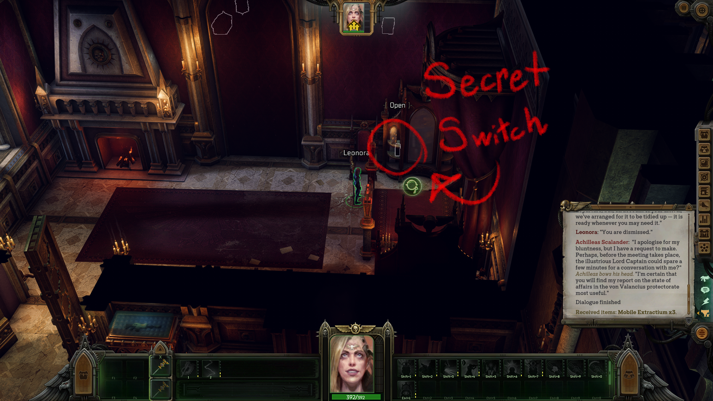
And then, go sit on the bench in the screenshot below:
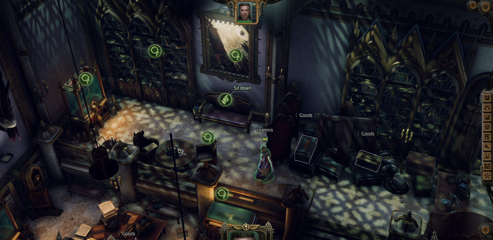
And then, you will get to make your first choices to unlock the cache:
- 1. [Have a glass of wine]
- 2. [Choose a book]
- 3. [Change the music]
- 4. [Leave]
Wine
You can find the correct answer to this via talking to Idira, but I have marked the correct answer below:
- 1. [Pour a glass of Grand Master's Blood]
- 2. [Pour a glass of Boon of Terra]
- 3. [Pour a glass of Flame of Purity] [Correct]
- 4. [Do not pour wine]
Book
If you passed the Tech Use check when inquiring about the Dargonus cache, you will receive a prompt on which book is correct. I have marked the correct answer below:
- 1. [Choose the book "Litanies of the Motive Force"] [Correct]
- 2. [Choose the book "Love Is the Only Truth"]
- 3. [Choose the book "Xenos Anatomy: A Scholar's Observations" from the series "One Shot, One Kill"]
- 4. [Choose the book "The Invincible Army: Analysis of the Tactical Triumphs of the Astra Militarum"]
- 5. [Choose the book "Parsimus Dewain: A Biographical Sketch"]
- 6. [Leave the books]
Music
When you select this option for the first time, you will roll a passive +5 Lore (Imperium) check. If you pass it, you will be told the correct answer. Regardless, I have marked the correct answer below:
- 1. [Choose the piece "The Symphony of Honour and Duty, Part 2"] [Correct]
- 2. [Choose the piece "Ode to the Most Holy Inquisition"]
- 3. [Choose the piece "Skitarii Choir: The Rhythm of Machine and Blessed Metal"]
- 4. [Do not change the music]
Pass all the questions, and you will receive the Data Bank.
Kiava Gamma Cache
The Kiava Gamma cache can be accessed at any time, and a photo of the location has been attached below.
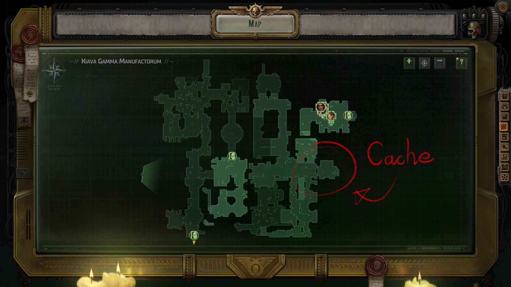
Zip into the room and interact with the circled cogitator in the image below (You can hold TAB to view any interactables on screen at any time.)
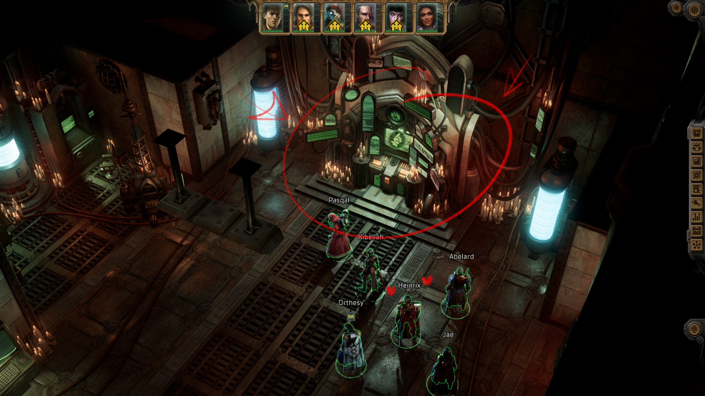
Your options will be:
- 1. [Bring your electoo to the scanner]
- 2. [Step away from the cogitator]
Bring your electoo to the scanner, and then you’ll realize Fuck! Even in the future, nothing works! The door is jammed. You’ll want to go to the circled area below to go get the valve.
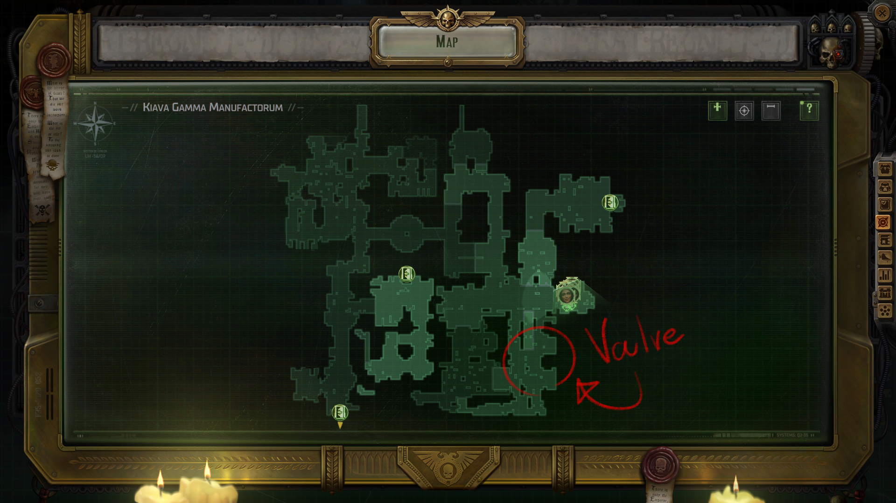
And then when you’re there, you’re going to want to hold TAB to view the two interactables below.
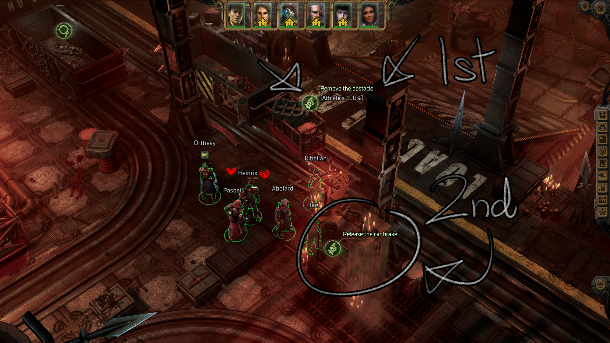
Interact with the “Remove the obstacle” Athletics +75 check, and then touch the “Release the car brake.” interactable. Then, follow the car down the line and pick up the valve from the newly created loot spot.
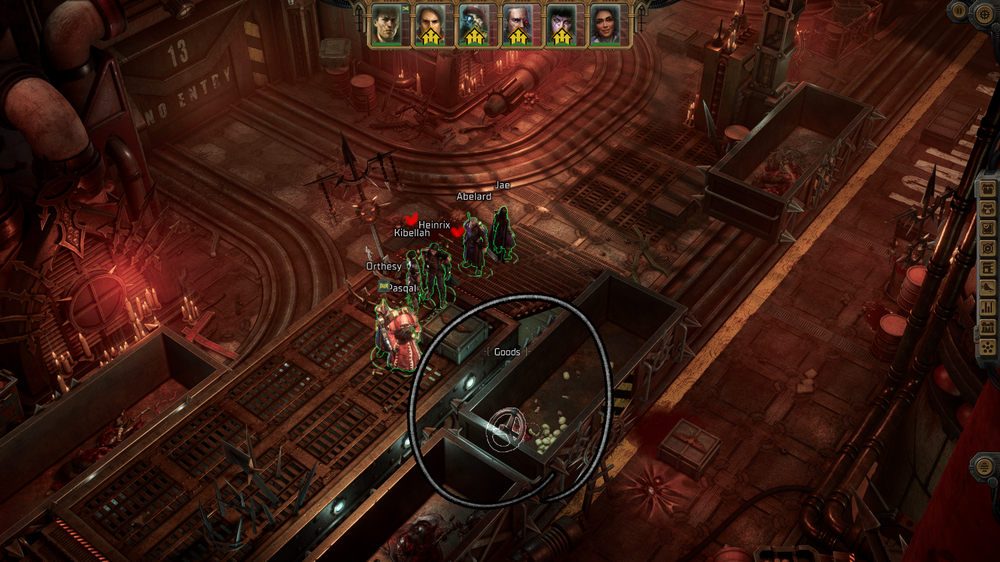
The valve in question:

Return to the stuck door, interact with the sticking-out-bit and put the valve in it. The RT will interact with it automatically, and then the door will finally go down. Hopefully you pass two +75 Awareness checks to see the traps on the floor, but I’ve included a screenshot that shows them below.
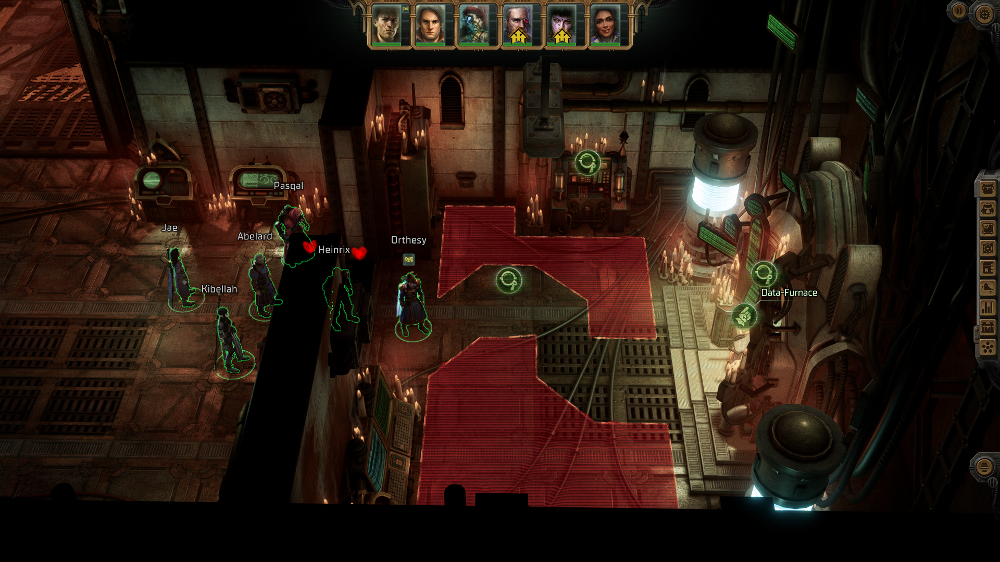
Interact with the Data Furnace, and your options will be
- 1. [Input the code to disable the traps] [Only appears if etude KyavaCache_NomosHelp is active]
- 2. [Request Theodora's data]
You’ll get gassed + intoxicated, but interact with the Data Furnace again to gain the item Data-Bank from Kiava Gamma. Return to the ship with your hard fought item.
After handing both Data Slates to the cogitator, it will spit out a bunch of cog lingo, and then your options to respond will be:
- 1. "What was that just now?" [No new choices]
- 2. "I saw a word among the lines of code: Nomos. What does it mean?" [No new choices]
- 3. "Your incompetence is appalling! The Rogue Trader's cogitator is rebelling, and your so-called assistance is utterly worthless." [Ends the event]
- 4. "You will report this to Pasqal." [Ends the event]
Other Quest - Critical Tasks | Automatically given 1-3 Warp Jumps after finishing Act 1.
Requirements
Summary
Nomos sends you on a wild goose chase across half the Koronus Expanse.
First you’ll have to fix a fuel lever on the Voidship Bridge. Then talk to Vigdis and calibrate the vox-system. Both of the locations are marked in the image below.
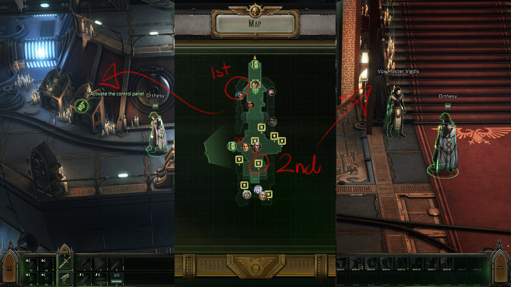
For Vigdis, select the option:
- 2. "My personal log states that the ship's vox-system is malfunctioning. Can you explain?"
And then:
- 1. "Thank you for your service, Mistress Toliman."
- 2. [Nod and leave without saying a word]
Then, finally, go to the Forgotten Twins star system to realize that this was all a huge waste of time. Your option will be:
- 1. "If somebody has decided to mock the Rogue Trader, they are playing a dangerous game."
And then, finally, go to the cogitator on the bridge and speak to it. Your first options are:
- 1. [Point at the text] "And what is that supposed to mean?"
- 2. "Sensed my presence? How?" [No new choices]
- 3. "Enough of this. I wish to enquire about something else." [Ends the event]
- 4. [Leave]
If you select “[Point at the text] "And what is that supposed to mean?"” you will unlock a new option:
- 1. “What task?” [No new choices]
Another etude for Nomos is actually at the end of your handling of Kiava Gamma. Depending on your choice, listed below, you can influence Nomos’ alignment.
- 1. [Dogmatic] Purify and restore Kiava Gamma no matter the cost [Activates etude Kiava_Clean] + [+1 NomosLearning_Faith] + [+15 Dogmatic] + [+3 GaprakStand]
- 2. [Iconoclast] Restore the manufactorum in the shortest possible time without subjecting the wounded planet to a merciless purge [Activates etude Kiava_chaos] + [+1 NomosLearning_Hope] + [+15 Iconoclast]
- 3. [Requires: Heretical - Follower] Restore the manufactorum... using the heretics' engineering plans. [Activates etude Kiava_chaos] + [Activates etude Kiava_ChaosEngines] + [+1 NomosLearning_Corruption] + [+15 Heretical]
Bridge Event - Nomos in the Shell | Automatically occurs after finishing Main Quest - Blades in the Void.
You’ll first properly meet Nomos after the Main Quest - Blades in the Void, specifically after solving the Drukhari invasion on your palace. After selecting options for your Magnae Accessio, which the options for can be found here in the guide, Pasqal will ask you to perform a complementa-ritual with him.
Pascal states that this ritual will force the machine spirit that has been causing havoc on your voidship via vox malfunctions, berserk servitors, and various other issues to finally reveal themselves so Pasqal can purge them.
You’ll get a few options to respond.
- 1. "What kind of action?"
- 2. "Is my presence necessary?"
- 3. "Very well. Let us proceed with your ritual." [Proceeds to ritual]
- 4. "I will not waste my time on this. Deal with it yourself." [Activate etude NomosEnemy]
You can exhaust dialogue options 1 to 2, and then select 3 if you would like to proceed with unlocking the option for the secret ending. Don’t worry about accidentally getting locked into the secret ending, the only way to lock yourself into it is at the very end.
Nomos allows for alignment changes, so if you are struggling with those, proceed through their quest for some easy points.
Proceeding to the ritual will present you with more options to respond.
- 1. "Remind me, what is it we intend to do here?" [No new choices]
- 2. "Where is the crew?" [No new choices]
- 3. "Do you have at least a vague idea of what the problem is or what we might encounter?"
- 4. [Put your hand inside the cybergargoyle's mouth] "I am ready."
Selecting “"Do you have at least a vague idea of what the problem is or what we might encounter?"” will unlock another choice to respond.
- 4. "What is Abominable Intelligence?"
Exhaust as many dialogue options as you want, and put your hand in the cybergargoyles mouth when you’re ready to proceed. Your next choices will be:
- 1. "Pasqal, what is going on?" [Activates etude PasqalSilencedByNomos]
- 2. [Pull your hand from the servitor's mouth] [Activates etude PasqalSilencedByNomos]
Either way, our lovable coghead will get silenced, and your conversation with Nomos will begin proper. You get a few options to respond again.
- 1. "Hello to you too."
- 2. "The entity, it's here! Do something!"
- 3. [Draw your weapon with your free hand and attack the cogitator]
Select whichever option you’d like. Guidemaker went with option 1. Then, you’ll be prompted again with more choices.
- 1. "What are you?"
- 2. "Did you silence Pasqal?"
- 3. [Draw your weapon with your free hand and attack the cogitator]
- 4. "What do you want from us, Nomos? Are you friend or foe?"
If you select “"Did you silence Pasqal?"”, you’ll be given the option to let Pasqal speak again.
- 1. "Can you render other people silent too?" [No new choices]
- 2. "Make it stop. Now." [Completes etude PasqalSilencedByNomos]
- 3. "This is fantastic! Let's have Pasqal be quiet for a moment."
Selecting “"What are you?"” will result in two more options being unlocked:
- 2. "But what is Nomos?"
- 3. "Are you a machine spirit?"
Select the option “"What do you want from us, Nomos? Are you friend or foe?"” to continue the conversation.
And then:
- 1. "I do not fear you. I am trying to understand you."
- 2. "You are abominable tech-heresy. There is no place for you on my ship."
- 3. "Obey me. Then we can talk." [Ends the ritual sometimes due to a glitch] 1
And then:
- 1. "Let's start by clearing certain things up. Were you the one responsible for the ship's malfunctions? And what about the strange entries in the ship's log?" [No new choices]
- 2. "Pasqal, what is your take on this? Is this entity a benevolent machine spirit or a monster?" [No new choices]
- 3. "What else can you do?" [Results in Nomos killing a man.]
- 4. "I've heard enough. Pasqal, finish the ritual and banish this thing from my ship." [Kills Nomos] + [Locks you out of the secret ending]
- 5. "I've heard enough. Pasqal, you are to investigate the nature of this entity. Until we know the truth, Nomos is allowed to exist on the ship." [Activates etude [Nomos FindingRoots_quest] + [Completes etude PasqalSilencedByNomos]
Selecting “"What else can you do?"” unlocks new options:
- 1. [Heretical] "Do it again." [+1 NomosLearning_Corruption] + [+5 Heretical]
- 2. [Dogmatic] "In the name of the Emperor and by the will of Rogue Trader von Valancius, I order you to stop. On this ship, none but I — and the Imperium's laws — can dictate who lives and who dies." [+1 NomosLearning_Faith] + [+4 Dogmatic]
- 3. [Iconoclast] "Stop it, that's enough! Those are living people! How can you kill them like that, without rhyme or reason?" [+1 NomosLearning_Faith] + [+5 Iconoclast]
And then:
- 1. "I will speak with you, Nomos." [Activates etude NomosFriendly]
- 2. "A master has nothing to say to his servants." [Activates etude NomosFriendly]
- 3. "I will wait for Pasqal's verdict. I still do not know whether you are a benign entity or a spawn of corruption." [Activates etude NomosFriendly]
Any option ends the conversation.
Be nice to your little abomination, okay?
Comments / Glitches
1 Might be a glitch? It just immediately ended the ritual for me, without any dialogue. Checking the script reveals that it is supposed to prompt some dialogue, but will ultimately end the conversation without any more choices.
Planet Event - Directive 15 | Can be triggered if Nomos is left alive for Main Quest - The Emperor and My Right
Summary
As you approach Pasqal at your Magnae Accessio, you realize there is an oddly-behaving servitor next to him.
Specifics
Approach Pasqal and select the option:
- 2. “What is this servitor?”
Pasqal will then perform a two-way identification ritual and formally introduce the servitor as the new body of Nomos, the ghost from your ship. You then have a few options to respond:
- 1. "Greetings, Nomos."
- 2. "I do not remember inviting you to my Magnae Accessio."
- 3. "What made you come here?"
Pick whatever you would like, as they all lead to the next set of questions. Guidemaker went with option 1. There’s some more choices to make:
- 1. "Pasqal, I believe you intended to investigate what Nomos is."
- 2. "How did an entity like you move into a servitor's body?"
- 3. "Nomos, what do you think you are?"
- 4. "Why have you brought it here, Pasqal?"
You can exhaust dialogue options 1-3, or just immediately select option 4 to move to the next set of choices:
- 1. "Of course. What do you wish to speak about?"
- 2. "Whatever miraculous machine spirit you might be, I am a Rogue Trader, and you are my servant."
- 3. "I do not wish to speak with you at this time."
Selecting option 2 boots you back to the same set of options, so it’s recommended to either pick option 1 to continue the conversation, or option 3 if you don’t want to speak to Nomos. (you monster)
Depending on your alignment, you will get different flavour text from Nomos describing your actions, and their own reasons and beliefs for why you act the way you do. You also gain different ways to respond to their hypothesis.
If you are primarily Dogmatic:
- 1. [Dogmatic] "You speak of faith. Of the Imperium's tenets. Of the one who is above all, the Emperor. You are correct. I am His chosen, and I carry His flame into the darkness of the Koronus Expanse." [Dogmatic +5] + [Activates etude NomosAlignment_Faith_OnCoronation] + [Activates etude NomosDialogueSeen]
- 2. [Iconoclast] "The picture you are painting is too grim. A flame is a good symbol when it lights the way and warms the soul. Not when it destroys." [Iconoclast +5]
- 3. [Heretical] "Even if I do possess this 'mote of flame,' it is only because I wish to use it for my own ends." [Heretical +5]
If you are primarily Iconoclast:
If you are primarily Heretical:
- 1. [Heretical] "Freedom and rapture. They are the only things worth living for." [+5 Heretical] + [Activates etude NomosAlignment_Corruption_OnCoronation] + [Activates etude NomosDialogueSeen]
- 2. [Dogmatic] "You are spouting faithless drivel. If there is an urge that drives me, it is my commitment to serve the Imperium!" [+4 Dogmatic]
- 3. [Iconoclast] "You are wrong. I wish to bring light and freedom, not feed people to monsters." [+5 Iconoclast]
Personal Quest - The Incident | Automatically given after Bridge Event - Nomos in the Shell.
Requirements
Summary
After speaking with Nomos, you decide to do some investigating and questioning around the ship to see if you can learn anything more about them, and their past.
Specifics
The game asks you to speak to Idira, Abelard and the Bridge Officers, presuming they’re all alive. Let’s start with Idira.
Select the option below to continue the questline:
- 1. "Epitaph, Incident N872-04, tech-blight - do these words mean anything to you? Perhaps your abilities can tell you something?"
After that, go speak to Abelard and select the option:
- 1. "Do the words 'Epitaph,' 'Incident N872-04,' or 'tech-blight' mean anything to you? They are connected to Theodora somehow."
After that, go speak to either the Vox Master or Helmsman Ravor,
If you speak to the Vox Master, select the option:
- 2. "Can you recall anything unusual about Theodora's travels? Do the words 'Epitaph,' 'Incident N872-04,' or 'tech-blight' ring a bell?"
If you speak to Helmsman Ravor, select the option:
- 1. "Does the word 'Epitaph' mean anything to you? Or, perhaps, 'Incident N872-04' or 'tech-blight? It all has something to do with Theodora's travels. Rather extraordinary travels at that."
After speaking to everyone above, go back to Nomos and have a chat. I’ve included two screenshots below, one that shows Nomos’ location on the map and another that shows Nomos is actually hosted in.
Select the options below to talk everything through with Nomos:
- 2. "What about the research notes on the 'tech-blight' that we obtained from the cache on Kiava Gamma?"
- 3. "Incident N872-04 was a ship-wide system failure of some kind. It and 'Epitaph' had something to do with the ship flying better."
- 4. "The people who accompanied Theodora on her travels are strangely unaware of the Incident and Epitaph."
And now, unfortunately, all you can do is wait to see if “the mystery of Nomos’s origins will present itself in time.”
Your next chance to finally continue this quest will occur in Act 4, after completing Warp Event - Close Encounters of the Malatek Kind, a guide for which can be found here.
Return to Nomos, and select:
- ?. “You read the data-bank recovered from Theodora’s cache. And then you said, ‘The Incident marked the beginning of Nomos.’ What did you mean by that?”
It may appear greyed out, as if you have already selected that answer, but go ahead and select it again. Finally, the secrets of Nomos will be revealed, and you have some choices to respond:
- 1. "Do you know where this Epitaph is?" [No new choices]
- 2. "A tech-blight?" [No new choices]
- 3. "How is Amarnat involved in this?" [No new choices]
- 4. "The ship was on Epitaph, Amarnat travelled aboard it, investigating the tech-blight, and Nomos was born as a result of an incident. So how was it possible that no one in the crew knew the whole truth?" [No new choices]
- 5. "Enough about the past - let us talk about the future. You do, in fact, have a purpose, Nomos..."
Selecting option 5 will prompt you to decide the purpose of Nomos:
- 1. "To serve the light and truth and greatness that is the Imperium." [Activates etude Nomos_Ch4_AfterReveal Outcomes_Faith] [Dogmatic]
- 2. "To simply live, comprehending yourself and the world. Life does not need a purpose to justify itself." [Activates etude Nomos_Ch4 AfterReveal Outcomes_Hope] [Iconoclast]
- 3. "To be my servant, my blade, a force to be reckoned with by all." [Activates etude Nomos_Ch4_AfterReveal Outcomes_Corruption] [Heretical]
Act 4
Bridge Event - Attributable to Human Error | Occurs automatically after returning from Commorragh.
Requirements
Summary
Nomos wishes to speak about something you did.
Specifics
Depending on your final choice with Tervantias, Nomos will have a bit of different dialogue speaking about your choice. You, also, will have different responses depending on what you did:
- 1. "I triumphed over the enemies of Humanity by pitting the Archenemy's blight against that of the xenos." [Only appears if you selected the Dogmatic choice with Tervantias]
- 1. "I escaped from a dark city of the xenos and showed them mercy." [Only appears if you selected the Iconoclast choice with Tervantias]
- 1. "I fed a dark city of the xenos to a force the likes of which they had never seen before." [Only appears if you selected the Heretical choice with Tervantias]
- 2. "You do not need to know." [Ends the event]
Tell Nomos what you did, and they’ll have unique dialogue depending on if you followed your previous Alignment choices with Nomos before, or if you didn’t. You’ll also have unique choices.
If you continued down your previous Alignment Path:
- 1. “I am glad that you are learning to understand me, Nomos.”
- 2. “Your curiosity deserves approval. A servant should strive to understand their master.”
- 3. “Your pointless questions are not worth my time.”
If you went against your previous Alignment Path:
- 1. "Unexpected decisions are unavoidable."
- 2. "You do not understand me. You do not understand people in general. That is why it all seems strange to you."
- 3. "You do not need to know."
Any of the choices end the event.
Warp Event - Close Encounters of the Malatek Kind | Triggered 2 warp jumps after returning from Commorragh.
Requirements
Summary
Something appears to be sabotaging your ship.
Specifics
The Vox Master will flag you down and let you know that there appears to be something unusual sabotaging your ship. She also suggests bringing Magos Pasqal along to look at this saboteur. Hmmm…
Your first choices are:
- 1. "What is so unusual about the saboteur and the way he was captured?" [No new choices]
- 2. "Very well, I will speak to him."
- 3. "Executing him will suffice. I have no desire to waste my time on trespassers." [Ends the event]
And then:
- 1. "Before I accept your apologies, tell me who you are and why you infiltrated my ship."
- 2. "I honour the fraternity of the Omnissiah's servants. It pains me to see you trespassing on board like a thief instead of arriving as a guest."
- 3. "Your apology is accepted. For your prompt admission of guilt, I will allow you to choose the method of your execution."
Pick whatever you want, as they all move the conversation along. Nomos will protest if you select option 3, however.
Your next set of choices are:
- 1. "Amarnat travelled on this ship?" [No new choices]
- 2. "Tell me more about Theodora's journey." [No new choices]
- 3. "What do you know about this great spirit?" [No new choices]
- 4. "Does the name Nomos mean anything to you?" [No new choices]
- 5. "You are strong, yet you let yourself be caught." [No new choices]
- 6. "I have made my decision regarding your fate."
And then:
- 1. [Dogmatic] "I find you guilty of offences against the Cult Mechanicus and House von Valancius. Your crimes warrant punishment more severe than death. You will atone by serving me and therefore the Imperium." [Activates etude Nomos_Ch4_Malatek_Outcomes_Faith] + [+5 Dogmatic] + [Activates etude Nomos_Ch4_Malatek_TiedToNomos]
- 2. [Iconoclast] "Your actions have caused no harm, and so I shall not harm
- you. You are free. You may stay on my ship if you so choose." [Activates etude Nomos_Ch4_Malatek_Outcomes_Hope] + [+8 Iconoclast] + [Activates etude Nomos_Ch4_Malatek_TiedToNomos]
- 3. [Heretical] "You are now mine. And you shall obey my every whim." [Activates etude Nomos_Ch4_Malatek Outcomes_Corruption] + [+5 Heretical] + [Activates etude Nomos_Ch4_Malatek_TiedToNomos]
- 4. "You will be executed for your crimes. My decision is final."
Pick whatever alignment choice you would like if you wish to help Nomos, or simply kill the Tech-Priest if you have no interest in the Nomos storyline.
Ending Event - Cogito, Ergo Sum | Occurs just before the final battle in Act 5.
Requirements
- Nomos is alive.
- All of Nomos events/quests have been completed.
Summary
It’s time for Nomos to decide.
Specifics
Nomos will approach you on the bridge, and your first choices are:
- 1. "Wait! What is this coming threat?" [No new choices]
- 2. "What do you wish to do?"
Select option 2, and you will unlock two more choices:
- 3. "You would sacrifice yourself, Asclepius?"
- 4. "I have heard you and made my decision."
And then:
- 1. "You can take Asclepius's body." [Activates etude NomosinMalatek] + [Activates etude NomosTrueEnding]
- 1. "Take the Daemon Engine's body, Nomos." [Only appears if the Kiava Gamma Daemon Engine was taken onboard]
- 2. "You do not have my permission to claim another vessel for yourself." [Activates etude NomosEnemy]
After you kick the crap out of Xavier, Nomos will appear and your first choices are:
- 1. "Greetings, Nomos."
- 2. "What are you talking about? Can you not talk in riddles?"
Either choice results in the same thing, you have to fight the real final boss. And then, after you do that, select:
And then
- 1. "Why do you call the Shard your precursor?"
- 2. "What do you intend to do?"
Once you select “What do you intend to do?” you will unlock two more options:
- 3. “Do you think you can do this, Nomos? And what will happen afterward?”
- 4. “I have made my decision.”
And then:
- ?. [Face Nomos] “Act now, my child.”
You should now pop the achievement for the Secret Ending.
Heretical Companion
Uralon the Cruel and Calligos Winterscale are the secret companions available on the Heretical route. Both of these companions are directly associated with the Secret companion achievement. You will recruit both of these companions in full just before Act 5, so you have an unfortunately short time with them.
PLEASE NOTE: Uralon the Cruels recruitment depends on continuing the Heresy Questline associated with the Blade Shard picked up at the beginning of the game.
In order to actually recruit Uralon the Cruel, you have to select several options during Main Quest - The Siege.
The first option is when a “suave whisper blossoms in your head” and it is:
- 2. [Requires: Heretical - Fanatic] "Sameth."
And then your choices are:
- 1. [Wink at Kunrad mockingly] [No new choices]
- 2. "Spill the blood of these defeated weaklings? Just that and nothing else? I will gladly make that trifling sacrifice! I must admit I expected more from the Emperor's Angels." [Activates etude Ulfar_Torbald Killed] + [Activates etude ChampionOfChaos] + [Activates etude LordOfChanges_Ally]
- 3. "I am not your lord's servant and I am certainly not going to obey a wretch like you! No blood will be spilt here save for yours." [Fails Chaos Artifact quest] + [Fails Uralon Recruitment]
Stab Kunrad however you wish, and then your next choices will be:
- 1. "We meet at last, Edge of Daybreak. I have heard quite a lot about you." [No new choices]
- 2. "The Edge of Daybreak. I have suffered much grief committed in devotion to your name." [No new choices]
- 3. "Your spirit was bound within the shards of this blade?" [No new choices]
- 4. "What are the secrets you can tell me?" [No new choices]
- 5. "I have killed thousands of your servants. Have you no desire to avenge
- Them?" [No new choices]
- 6. "I swear fealty to you, Master. Let your path guide me to the Truth." [Activates etude 58_KneeDeepInChaos_Achievement]
- 7. [Attack] "I will be a champion - I have endured too much to bow my head now!" [Completes etude LordOfChanges Ally] + [Activates etude 58_KneeDeepInChaos_Achievement] + [Fails Chaos Artifact quest]
Select "I swear fealty to you, Master. Let your path guide me to the Truth." to continue the Chaos Artifact quest.
The Eufrates II recruitment part has ended, and now go chase down Xavier.
Just before following Xavier through the gate, Uralon will request to come to the bridge. Invite him on, obviously, if you’re interested in recruiting him. Exhaust all his dialogue, and and then select the below option as soon as you see it:
- 1. "I accept your offer, prophet." [Activates etude UraloninParty]
WIP - In order to actually recruit Calligos Winterscale, you have to select several options during Main Quest - Hunting Grounds.
First of all, you will have to kill all the Aeldari on Quetza Temer. This will fail Yrliets romance, but she leaves you on Heretical playthroughs anyways, so no real loss.
Just before following Xavier through the gate, Calligos will request to come to the bridge. Invite him on, obviously, if you’re interested in recruiting him. Exhaust all his dialogue, and and then select the below option as soon as you see it:
- 1. "There will be glorious carnage!" [Activates etude WinterscalelnParty]
Calligos Conversations
- 1. "You often talk about your hunt. Will you tell me how it started?" [No new choices]
- 2. "What are you going to do after Calcazar has been dealt with?"
- 3. "What do you think of Calcazar?" [No new choices]
- 4. "We are traversing a new part of the Expanse. Do you know anything about it?" [No new choices]
- 5 "What do you think of the way the 'new blood' has handled his protectorate?" [No new choices]
- 6. "How are you finding life aboard my ship?" [No new choices]
- 7. "I shall see you at the hunt, Calligos."
Selecting “"What are you going to do after Calcazar has been dealt with?"” unlocks new options(s):
- ?. "So, you are going to abandon your trade protectorate?" [No new choices]
Uralon Conversations
- 1. "What is that book in your hands?"
- 2. "You call yourself a Dark Apostle. What does it mean?" [No new choices]
- 3. "Why are you known as Uralon the Cruel?" [No new choices]
- 4. "What will you do after my becoming?" [No new choices]
- 5. "You betrayed Kunrad. How do I know that you will not betray me next?"
- 6. "You are a prophet, are you not? Reveal the Ways to me."
- 7. "l must take my leave."
Selecting “"What is that book in your hands?"” unlocks new option(s):
- 1. "And what is the Truth, Uralon?" [No new choices]
- 2. "l see. Let us discuss other matters."
Selecting “"You are a prophet, are you not? Reveal the Ways to me."” unlocks new option(s):
- 1. "You are hiding something from me, sorcerer. Answer me: what else did you see?" [Only appears if you pass a passive -45 Awareness check]
- 2. "My path is clear. I shall wear the wreath of the Dawn upon my brow and take what is mine by right."
- 3. "Is that it? Your prophecies are worthless!"
- 4. "Not bad, but too plain for my taste. You lack a certain charm of madness. I should ask Idira to show you how it's done." [Only appears if Idira is in the party]
- 5. "l see."
Selecting “"You betrayed Kunrad. How do I know that you will not betray me next?"” unlocks new option(s):
- 1. "l have disgraced you more than once, I have killed your brothers and ruined many of your plans. Are you telling me that you harbour no malice toward me at all?"
- 2. "The Emperor is strong, but that did not stop you from betraying him."
- 3. "First you betrayed the Emperor, then Kunrad... Old habits die hard."
- 4. "l suppose you have a point."
Iconoclast Companion
Incendia Chorda is the secret companion available on Iconoclast routes. She does pop the Secret companion achievement as of 1.3+, confirmed by u/PinnaCochleada, thank you!
Incendia can only be recruited right before Act 5, so you have an unfortunately short time with her. In order to actually recruit her, you have to select several options during the Main Quest - Great Judgment.
When you finally bring Incendia to the Martyrs Endurance for a final showdown between her and Vladaym, you will be presented with an Iconoclast option:
- 1 [Requires: Iconoclast - Fanatic] "Repent, Incendia. You have lapsed and turned into a monster!" [Requires 300 Iconoclast points] + [+20 Iconoclast]
After selecting that, you will then have to pass two checks.
- 1. [Persuasion -85] "I have seen your thirst for blood. You revel in the sentencing and the executing. Are you going to dispute that? Am I lying?"
- 2. [Lore [Imperium] -85] "Your verdicts bear no relation to the codified justice of the Imperium. You create arbitrariness, create your own law, which means... Your own Imperium! That is heresy!"
After you pass the two checks, your next options are:
- 1. "State your crimes." [No new choices]
- 2. "What can you say in your defence?" [No new choices]
- 3. "The verdict will be lenient. Incendia Chorda, I banish you from Footfall. Depart." [Activates etude ChordaExile] + [Activates etude ChordaRedeemed] + [Activates etude HieronimusDeadFootfall]
- 4. [Execute] "Incendia Chorda, having weighed your crimes, I, Darrius von Valancius, sentence you to death." [Activates etude (ChordaKilled] [Activates etude HieronimusDeadFootfall]
- 5. "Be your own judge." [Activates etude ChordaSuicide] + [Activates etude HieronimusDeadFootfall]
Select option 3, the banishment option, if you are interested in recruiting Incendia later.
Just before following Xavier through the gate, Incendia will request to come to the bridge. Invite her on, obviously, if you’re interested in recruiting her. Exhaust all her dialogue, and as soon as you see:
- 1. “I shall give you a chance to justify even some small portion of your deeds.” [Activates etude HopeChordaInParty]
Select it, and you’ll have recruited her. Huzzah! Again, there’s no story or romance associated with her, but you can use her in combat now.
You can talk to her on the bridge, and ask a few questions though:
- 1. "What do you make of these systems?"
- 2. "You do realise that our meeting with Calcazar may end in battle, do you not? Are you ready?"
- 3. "You have changed."
- 4. "Do you think I have made a worthy Rogue Trader?"
- 5. "I have matters to attend to."
If you select “You have changed.” you’ll have more choices to make:
- 1. "What will you do now?"
- 2. "Has your faith truly wavered so greatly in such a short time?"
- 3. "Tell me, why did you choose to come with me, truly?"
- 4. "You seem broken. Do I need such a fighter at my side?"
- 5. "Thank you for your candour."
But, none of these questions activate etudes or anything, so…
Dogmatic Companion
Incendia Chorda is the secret companion available on Dogmatic routes. She does pop the Secret companion achievement.
After cleansing Janus of the Chaos and/or Aeldari threat, you will be presented with a set of options for how to deal with it. Select the below Dogmatic option to ensure Incendia retakes control of the station. Please note that this also adds +1 to Nomos Faith (Dogmatic) counter.
- 2. [Dogmatic] Do not send supplies to Footfall, allowing the righteous Incendia Chorda to restore Imperial order on the lawless station. [Activates etude Footfall_NotAlly] + [+1 NomosLearning_Faith] + [+15 Dogmatic]
And then, you will have to kill Vladaym during Act 4 during an attempted arrest with the option:
- 2. [Dogmatic] [Draw your weapon and shout] "In the name of the law, every insurgent present here is under arrest!" [+5 Dogmatic]
And then:
- 1. "I would suggest a show of mercy. We have demonstrated our power. They
- will not dare rebel again."
- 2. "l will judge them myself."
- 3. "Execute these lowlifes."
- 4. "Most interesting. I hope you are creative in your punishments, Incendia!"
All options continue the trial, so then:
- 1. "Let us convict Vladaym." [-1 CounterFootfallCourt]
- 2. [Point to Ryzza] "She must face the tribunal." [-1 CounterFootfallCourt]
Vladaym Trial
Your first options will be:
- 1. "Vladaym, do you have anything to say in your defence?" [No new choices]
- 2. "Your handling of Footfall has been overly harsh, Incendia. You share the blame for their rebellion." [No new choices]
- 3. [Requires: Dogmatic — Votary] "Death is the Emperor's Peace, and it must be earned. Let me turn him into a servitor on my ship. That will teach him obedience." [Requires 200 Dogmatic points] + [+30 Dogmatic] + [Activates etude VladaymServitor] + [+500 Drusian Vendor points]
- 4. [Requires: Iconoclast — Votary] “He can still atone for his crimes. Give him to me. Let him purify his soul by sweeping the decks of my ship.” [Requires 200 Iconoclast points] + [+30 Iconoclast]
- 5. [Dogmatic] "The law states that these are hanging offences." [+5 Dogmatic] + [Activates etude VladaymHanged] + [+500 Drusian Vendor points]
- 6. [Iconoclast] [Kill Vladaym] "l shall do it myself." [+8 Iconoclast] + [+500 Drusian Vendor points]
- 7. [Iconoclast] "Let him and his people atone by shedding blood in the Emperor's name." [+8 Iconoclast]
- 8. [Heretical] "The people must know what happens to traitors. Torture him to death and broadcast his screams live on Footfall's vox-station. I shall provide you with my best executioners for the occasion." [+5 Heretical] + [Activates etude VladaymLastWords] + [+500 Drusian Vendor points]
- 9. [Smile acerbically] "Let us dispose of him as he disposed of people — let us throw him for a loop." [+500 Drusian Vendor points]
If you select ““He can still atone for his crimes. Give him to me. Let him purify his soul by sweeping the decks of my ship.”” you will have two new choices:
- 1. "A lesson in humility. His power is in shambles, and his rebellion never took off. Vladaym is no more: all that is left is a servant of the Emperor who has lost his way. Servitude will bring him back to the true path." [Activates etude VladaymSerf] + [Activates etude VladaymHanged?] + [+500 Drusian Vendor points]
- 2. "You are right. He deserves a harsher punishment." [Activates etude VladaymHanged] + [+500 Drusian Vendor points]
If you select “"Let him and his people atone by shedding blood in the Emperor's name."” you will have two new choices:
- 1. "We are at war. We have no right to squander fighters." [Activates etude Vladaym_PenalFighter] + [Activates etude VladaymHanged?] + [+500 Drusian Vendor points]
- 2. "There is not a single reason. He deserves to die." [Activates etude VladaymHanged] + [+500 Drusian Vendor points]
Ryzza Trial
Ryzza has two versions of her trial: A Chaos-aligned version and a Redemption-aligned version.
Chaos Trial Version
- 1. [Requires: Heretical — Votary] [Discreetly wipe Ryzza's blood with a handkercher to use it in a dark ritual] [Requires 200 Heretical points] + [Activates etude RizzaDemonOnShip] + [+30 Heretical]
- 2. [Turn to Incendia] "What was that?" [No new choices]
- 3. "Did you know she was a heretic all along?" [No new choices]
- 4. "It was a just execution." [+500 Drusian Vendor points]
- 5. "Perhaps it was your cruelty that propelled her into the Archenemy's arms." [+500 Drusian Vendor points]
- 6. "What a pathetic attempt. She deserved what happened to her." [+500 Drusian Vendor points]
Just before following Xavier through the gate, Incendia will request to come to the bridge. Invite her on, and your first options will be:
- 1. "The Emperor protects, Incendia."
- 2. "I must get underway."
And then:
- 1. "Why have you come? Surely not to bless me for my expedition."
- 2 "It seems you will be in charge of the Expanse after I'm gone."
- 3. "I thank you for your support."
And finally when you select “I must get underway.” you will see:
- 1. "It would be an honour for me." [Activates etude ChordalnParty]
- 2. "There is no need. A Rogue Trader of House Chorda ought not to swear allegiance to another dynasty."
Misc Etudes / Discussions
This section is related to etudes that do not directly influence characters / etc, but do influence quests and events. This section will probably be a huge WIP for a large majority of the time, as connecting all the complicated strings of quests is a nightmare, especially while a lot of them are broken or don’t fire correctly. Everything is sorted via Acts, so please jump to each section if you are looking for something specific.
Increments/Etude Editing Guide
Someone asked (very politely) for a guide on how to increase/decrease increments via Toybox or another means so I’ll be outlining that below (with screenshots) in case someone else might benefit from it.
First, make sure you have the latest patch of the game + the latest patch of Toybox. Then, load your most recent save. Then, hit Ctrl + F10 at the same time to pull up your Mods window. Your screen should look like this:
Then, actually click on the Toybox Tab. Anywhere is fine, even click directly on the words ToyBox for RogueTrader if you want. Your screen should then look like this:
Editing Increments
Then, navigate to the Search ‘n Pick button on the right side, and click it to open up that sub menu. It might look blank for the first few seconds/minutes (depending on how nice your device is) but once everything is loaded, it should look like this:
Now, scroll down in the Toybox screen until you see these options:
Click on Flags to filter all of the available options for editing to just character flags (or increments as they are called in this guide). Let’s change Heinrixs Mercy flag to his Harsh flag. After you have filtered your editing options to just the Flags, scroll back up and go to the search bar shown in the screenshot below:
NOTE: The first character will always be your Rogue Trader, but the button will state their name instead of Leonora, IE it will be Darrius, or Ciaphas, or Yvraine, or whatever you decided to name your Rogue Trader.
Now, in order to actually edit the increment/flag, you will have to know what it is. I will include a cheat sheet below this for ease of access, but the example will use Heinrixs flags.
Heinrixs Mercy flag is FirstQuestMercy. If we put “mercy” into the search bar, it will pull up the flag in the code and its current value (alongside any other tags that might have the keyword in it.)
Then, what we will do to decrease it is click the leftmost arrow (shown above as <) to decrease it to 0. So, we’ll click it two times. It should now look like this:
Then, we’ll repeat the same search process as above, but instead we will search the term “Harsh.” If you followed my guide, (or any other guide!) and only selected one increment, IE only selected the Mercy options, when you search Harsh, your Toybox menu should look like this:
That’s perfectly normal! What we’re going to do now is click the Unlock button, which will then change the menu to look like this:
And from that, we are going to click the rightmost arrow key (which is shown as >) twice to bring our Harsh flag back up to what our Mercy flag was at. It should look something like this once you completed that step:
If you’re happy with your changes, click the Save button at the bottom of Toybox, and hit Ctrl + F10 again to close the Toybox window and get back to the game.
NOTE: Changing, editing, or thus modding the game can introduce bugs which can either solve your game or break your game further. Save often if you are going to use Toybox or any other mods that allow you to edit the flags such as this. I absolutely will try and help with any issues, but I am not a dev or even associated with Owlcat, so I cannot solve every issue. Thank you for your understanding.
Editing Etudes
Then, navigate to the Search ‘n Pick button on the right side, and click it to open up that sub menu. It might look blank for the first few seconds/minutes (depending on how nice your device is) but once everything is loaded, it should look like this:
Now, scroll down in the Toybox screen until you see these options:
Click on Etudes to filter all of the available options for editing to just character etudes. Let’s change Abelards SeneschalNewWays etude to his SeneschalOldWays etude. After you have filtered your editing options to just the Etudes, scroll back up and go to the search bar shown in the screenshot below:
NOTE: The first character will always be your Rogue Trader, but the button will state their name instead of Leonora, IE it will be Darrius, or Ciaphas, or Yvraine, or whatever you decided to name your Rogue Trader.
Now, in order to actually edit the etudes, you will have to know what they are is. I will include a cheat sheet below this for ease of access, but the example will use Abelards etudes.
If we put in “Seneschal” we will get a lot of options to edit, but we’re only going to focus on two. In the screenshot below, you will see all of the options that will pop up, with the options we’re going to be interacting in the red box.
First, let’s deactivate the SeneschalNewWays etude. Click on the button that is labeled Unstart on the same line as SeneschalNewWays. Your screen should now look like this:
And then, to activate the SeneschalOldWays etude, we’re going to click the button labeled Start on the same line as SeneschalOldWays. Your screen should now look like this:
Flags Cheatsheet
❤ = Romance Flags
The slashes in between the options for flags mean that you need to have one option higher than all the others to trigger that ending. IE, if you want Cassias’ Freedom ending, your Freedom value must be higher than your NotMe value.
The slashes between the options for etudes mean that you cannot have both active at the same time, you must pick one or the other. IE, you cannot have both SeneschalNewWays AND SeneschalOldWays active, you must only have one active for future quests/events to fire properly.
Abelard
- No associated flags.
- Etudes are:
- SeneschalNewWays / SeneschalOldWays
Argenta
- Sororitas_Fire / Sororitas_Fury / Sororitas_Humility
Cassia
- Cassi_Freedom / Cassi_NotMe / Cassi_Hatred
- ❤ AmourCourtois / CassRomanceInsulted
Heinrix
- FirstQuestMercy / First QuestHarsh
- ❤ Heinrix_Romance_Devil / Heinrix_Romance_Closeness
Idira
- IdiraEffectiveness / IdiraHumanity
Jae
- Jae_Shadow / Jae_Independent
- ❤ SincerityCounter
- ❤ Jae_Approval
Marazhai
- TempestCounter
- ❤ Domination / Submission
Pasqal
- PasqalEgoCounter / PasqalAmarnathCounter / PasqalLoyalCounter
Ulfar
- Ulfar_Loner / Ulfar_Chapter / Ulfar_Wulfen
Yrliet
- PathOfTheDamnation_flag / PathOfTheWarrior_flag
- ❤ Accordance / TooMonKeigh
Kibellah
- Humility / Distortion / Fanatic
- ❤ Synchronicity / Taint
Solomorne
Bathtime Events
***Requires Void Shadows DLC***
With the Void Shadows DLC, you can finally use that big ass tub in your room! Once you hit Act 2, simply go up to it and select “Perform your ablutions.” to wash all that gunpowder, blood, sweat, and whatever else off. You can also, in spoiled Rogue Trader fashion, terrorize your retinue just for fun.
Your options are:
- 1. "Abelard. I simply cannot bathe without my loyal Seneschal."
- 2. "Idira. She always livens things up."
- 3. "Argenta. I wish to know what the Sisters of Battle do in their spare time."
- 4. "Cassia. I want her to paint my portrait."
- 5. "Heinrix. He will keep me entertained."
- 6. "Kibellah. I wish to learn more about the Tenets of the Web."
- 7. "Pasqal. I wish to see my Enginseer."
- 8. "Jae. She knows how to have a good time."
- 9. "Solomorne. I wonder what Arbitrators do to unwind."
- 10. "Yrliet. The xenos will keep me entertained."
- 11. "Ulfar. I wish to listen to his sagas."
- 12. "Marazhai. I wonder what sort of amusements he will suggest."
Abelard
History lesson time! Abelard is very eager to teach the new Lord Captain about their lineage.
- 1. "Wait, why do I have to listen to a lecture?" [No new choices]
- 2. "l promise that I will study the history of the dynasty in my spare time." [No new choices]
- 3. "l already know the dynastys history." [Appears if you have the Triumph - Feat of Mind OR not, but if you do have the feat, you actually can answer your Seneschals questions]
- 4. [Clutch your head] "Ohr no... Suddenly I do not feel so well..." [Ends bathtime]
- 5. "Enlighten me." [Ends bathtime]
- 6. "l do not wish to waste your valuable time. You are free to leave." [No new choices]
If you select “"l already know the dynastys history."” you will either immediately roll a Passive -50 Lore (Imperium) check, or have the answer given if you have the Triumph - Feat of Mind.
- 1. "The God-Emperor." [Incorrect] + [Ends bathtime]
- 2. "Parvonius von Valancius." [Incorrect] + [Ends bathtime]
- 3. "No one knows the name of the dynasty's founder. It has vanished into the darkness of the ages." [Correct!] + [Ends bathtime]
Idira
You like jokes (and potentially hookah), don’t you?
- 1. "Tell me a joke."
- 2. "What are you smoking over there?" [Only appears if Idiras Personal Quest - Echoes of the Past is not completed]
- 3. "That will be all. You may leave." [Ends bathtime]
If you select “"What are you smoking over there?"” you will unlock a new option:
Otherwise, here are her jokes:
"What's the difference between a warp storm and a dispute at the Adeptus
Administratum?" / "At least there's a chance a warp storm might end."
- 1. "Do you know any more?"
- 2 "That will be all. You may leave." [Ends bathtime]
"How many Tech-Priests does it take to change a lumen?" / "Three. One to wave a censer, one to pray to the Omnissiah, and the third to servitorise a serf to do all the work for them."
- 1. "All right, one final joke. Make it a good one!"
- 2. "That will be all. You may leave." [Ends bathtime]
"What do you call an unsanctioned psyker's cabin?" / "An emergency airlock," Idira declares smugly.
- 1. "That will be all. You may leave." [Ends bathtime]
Argenta
There is no time for relaxation with heresy around.
- 1. [Willpower -50] "But I do not..."
- 2. [Willpower -50] "Argenta, hold on a moment..."
- 3. "Perfect!" [End bathtime]
If you pass either of the checks, your next choices are:
- 1. "l am not interested in your exercises!"
- 2. "Very well. I will try your exercises." [Ends bathtime]
And then:
- 1. "Surely you do not train all the time. What else do you like to do?'
- 2. "Very well. I will try your exercises." [Ends bathtime]
And then:
- 1. "Sing me your favourite battle hymn." [Ends bathtime]
- 2. "Very well. I will try your exercises." [Ends bathtime]
Cassia
Very scandalous.
- 1. [Persuasion -50] "Consider it an opportunity to practice life drawing." [+1 CassiaCantDraw]
- 2. [Lore (Imperium) -50] "It is a proud aristocratic tradition. Was it not
- customary on your station?" [+1 CassiaCantDraw]
- 3. [Lore (Warp) -50] "Do you mean to tell me that my body is more hideous than all the horrors of the warp? After all, you do not shy away from painting them." [+1 CassiaCantDraw]
If you pass any of the checks, your next options will be:
- 1. "Your style is so unique. I like it." [Ends bathtime]
- 2. "This is certainly... unconventional." [Ends bathtime]
- 3. "You could use more practice." [Ends bathtime]
You will also gain a useless, nude portrait of yourself. Thanks…?
Heinrix
It’s always fun to play games involving childhood memories.
You will immediately roll a Passive -15 Awareness check before your first choices. If you pass it, you will see that Heinrix has several lying tells, but…
- 1. [Logic -50] [Review your assumptions]
- 2. "Truth."
- 3. "You are lying."
However, if you do pass that Logic check, you will unlock a new option (and get praised):
- 1. "You have not told a lie... But you have failed to tell the whole truth. These claims sound shocking because you have presented them without context."
And here is the actual story:
I will burn down the world for young Heinrix.
Kibellah
Controlled self-drowning… fun.
- 1. "That sounds like it could be dangerous." [No new choices]
- 2. "Intriguing. Teach me."
- 3. "l do not think I want to try this particular discipline." [Ends bathtime]
Once she starts teaching you, you will roll a Passive -50 Willpower test, and if you pass, your choices are:
- 1. "Death... It is Nothing. And yet... it is everything." [Ends bathtime]
- 2. "It was... interesting. But I hope it does not happen again any time soon." [Ends bathtime]
- 3. "It was terrible! In the end... there was only oblivion. It all felt so... inevitable." [Ends bathtime]
Pasqal
This is the closest we’re gonna get to a romance scene.
- 1. "Pasqal... why have you climbed into my bathtub?" [No new choices]
- 2. "You are leaking oil." [No new choices]
- 3. "Why are you taking a bath with your clothes on?" [No new choices]
- 4. "Will you not rust?" [No new choices]
- 5. "Pasqal, please get out of the bathtub."
- 6. "You are welcome to stay, Pasqal. Your presence does not inconvenience me in the slightest."
- 7. "Fine. You may stay." [Ends bathtime]
If you select “"You are welcome to stay, Pasqal. Your presence does not inconvenience me in the slightest."” you will unlock a new option:
- 1. "How long will it take you to complete your cleaning protocol?"
- 2. "Fine. You may stay." [Ends bathtime]
And then:
- 1. "l am not going to wait here for an hour."
- 2. "Fine. You may stay." [Ends bathtime]
And then:
- 1. "Are you... suggesting that I should leave my own bathchamber?"
- 2. "Fine. You may stay." [Ends bathtime]
And then:
- 1. "Pasqal, this is my bathchamber!"
- 2. "Fine. You may stay." [Ends bathtime]
And then:
- 1. "That does it. Leave this instant!"
- 2. "Fine. You may stay." [Ends bathtime]
And then:
- 1. "l am not asking you to violate protocol. I am asking you to suspend it temporarily, and finish it... somewhere else. " [Ends bathtime]
- 2. "Fine. You may stay." [Ends bathtime]
Jae
Drink! Drink! Drink!
- 1. [Carouse -15] [Play fair] [You… “win” if you pass the check] + [Ends bathtime]
- 2. [Logic -15] [Allow Jae to take the lead so you can keep a clear head] [Jae “wins” if you pass the check] + [Ends bathtime]
- 3. [Awareness -15] [Stop Jae from cheating] [Jae “wins” if you pass the check] + [Ends bathtime]
- 4. "l will not participate in such a frivolous activity." [Ends bathtime]
Solomorne
Bang! Straight to the heart!
- 1. "And that is your idea of fun? How deathly dull."
- 2. "Guards! Bring me a weapon and set out the targets!"
- 3. "This is foolish. Leave me, Solomorne." [Ends bathtime]
And then:
- 1, "Three rounds isn't enough, it could end in a draw." [No new choices]
- 2. [Carouse -50] [Toss back a glass of amasec] "Let's raise the stakes! We're going to shoot while drunk!"
- 3. [Ballistic Skill -15] [Shoot] "Watch how it's done."
And then:
- 1. "Now we shoot with our eyes closed!"
- 2. [Ballistic Skill -/+??] [Shoot at the target] "Watch and learn."
- 3. "This is foolish. Leave me, Solomorne." [Ends bathtime]
If you select “"Now we shoot with our eyes closed!"” your next options will be:
- 1. [Ballistic Skill -50] [Shoot without cheating] "Victory will be mine!"
- 2. [Ballistic Skill -15] [Open one eye] "Shooting blind is damn difficult..."
- 3. "This is foolish. Leave me, Solomorne." [Ends bathtime]
And then
- 1. "Hey! That's cheating!"
- 2. [Ballistic Skill: 100%] [Shoot] "My triumph is at hand!" [Only appears if flag BathTime_BullsEye is between 2-99]
- 3. "The last round needs to be special — shooting a bottle on top of an enforcer's head." [Only appears if flag BathTime_BullsEye is between 2-99]
- 4. "Congratulations, Solomorne, you win. Take a bottle of my finest amasec as a reward." [Only appears if flag BathTime_BullsEye is between 0-2]
- 5. "Because you cheated by using Glaito, I refuse to accept your victory. Dismissed." [Only appears if flag BathTime_BullsEye is between 0-2]
- 6. "This is foolish. Leave me, Solomorne." [Ends bathtime]
Yrliet
- 1. "That sounds fascinating. Can you teach me?"
- 2. "l do not think this is something I wish to try." [Ends bathtime]
And then:
- 1. [Fellowship -15] [Try to weave your voice into the melody] [Ends bathtime]
- 2. [Listen in silence]
If you listen:
- 1. [Fellowship -15] [Try to weave your voice into the melody] [Ends bathtime]
- 2. "l do not think this is something I wish to try." [Ends bathtime]
Ulfar
A wolf that feeds on memory is the healthiest of them all.
- 1. "Something amusing." [No new choices]
- 2. "l want to hear a heroic tale of valour." [No new choices]
- 3. "l am in the mood for a terrifying tale." [No new choices]
- 4. "That will be all." [Ends bathtime]
Marazhai
It is not hands that call us. It is desire.
- 1. "Are you out of your mind?"
- 2. "Sounds... intriguing." [Ends bathtime]
And then:
- 1. "No, Marazhai."
- 2. "Sounds... intriguing." [Ends bathtime]
And finally:
- 1. "Enough! What are you talking about? This is madness!" [Ends bathtime]
- 2. "Sounds... intriguing." [Ends bathtime]
Hell yeah.
Bridge Officers Etudes / Discussions
Other Quest - Confessions in the Chapel
- ***Requires Void Shadows DLC***
The first time you enter the temple, if you cut a hard right, you will spot an NPC named Initiate Klotus. Speak to him, your options are:
- 1. "Who are you and what do you do here?"
- 2. "It appears you are having difficulties."
- 3. "l will leave you to your concerns."
If you select “"Who are you and what do you do here?"” you will unlock a new set of options:
- 1. "Tell me more about this confessional." [No new choices]
- 2. "Is there a way to find out who made which confession?"
- 3. "l have other questions." [Returns to original set of questions]
If you select “"Is there a way to find out who made which confession?"” you will unlock a new option:
- 4. "Good thinking, making it anonymous. Keep up the fine work."
If you select “"It appears you are having difficulties."” you will unlock a new set of options:
- 1. "What makes you think these confessions were made by senior officers?" [No new choices]
- 2. "Let me hear them."
- 3. "Enough about that."
If you select “"It appears you are having difficulties."” you will unlock a new set of options:
- 1. [Recording 17FL.2. Alleg. dissent, impious doubt]
- 2. [Recording 134D.U. Allege theft of ship property]
- 3. [Recording 502M.M. Alleg. coded message, irreverence, ???]
Impious Doubt
"One question has troubled me for years: why are some destined to perish in the warp
while others must go on living and preserve the memory of the dead? Worthier and more luminous souls have been lost, and yet I am still here..." Light static is distorting the recording, but you are confident that the speaker is male.
Theft of Ship Property
"The orphans on the ship have already been provided with the bare essentials, but every so often I consider increasing their rations and ordering more sets of clothes for them. That will not replace the families they lost, but it will improve their lives somewhat, especially given that the ship has enough resources to cover that comparably trivial expense." Despite the poor sound quality, you determine the voice to be male.
You will then immediately roll a Passive +15 Commerce check, and if you pass, you remember gossip that says Danrok takes care of the ship orphans.
Coded Message
"Lop-eared kleppas display a high degree of socialisation both among their kind and
toward their owners. These animals adjust well to a voidship’s lower gravity, since it is similar to their homeworld’s conditions. Lop-eared kleppa meat is edible, should necessity demand it." The voice sounds muffled, as though from behind a thick layer of glass, but is unmistakably a woman's.
Finally, after listening to them all, you will unlock a new option:
- 3. "l am curious to know who left these confessions. I will seek them out."
The game can give you Danrok for free if you pass the check, and then the other two (or three) can be sussed out via what they speak about + the fact that only one Senior Officer has a muffled, feminine voice, and could code a message.
Basically:
Coded Message - Kleppas - Vigdis (Bridge)
Theft of Ship Property - Orphans - Danrok (Bridge)
Impious Doubt - Warp - Weisz (Astropath Choir)
Vigdis
Speak to Vigdis, and select:
- 1. [Lower your voice conspiratorially] "The lop-eared kleppas. The confession." [Activates etude SealOfConfession_Vigdis]
And then:
- 1. "The important question is why."
- 2. "Vigdis, I want a pair of kleppas aboard the ship!" [No new choices]
- 3. "Your 'confession' perplexed the initiate. Find a way to delete it and we shall forget about it." [Ends the convo]
If you select “"The important question is why."” you will unlock a new option:
- 2. "Wait, why lop-eared kleppas specifically?" [No new choices]
Danrok
Weisz
Speak to Weisz, and select:
- ?. "Have you made a confession lately?"
And then:
- ?. "Why are some destined to perish in the warp while others must go on living?"
And then:
- 1. "l felt there was anguish in that confession. I wanted to help."
- 2. "l was worried the maker of that confession might be dangerous. Explain yourself."
- 3. "l was led by curiosity. So what was your confession about?"
Select anything you’d like.
Einrich Monteg ♡
- ***Requires Void Shadows DLC***
Infernus Master + Argenta Orphans Event
If you have Void Shadows installed, Einrich will be available at Argentas Act 1 Orphans Errand. A full transcription of the event, with the Einrich options, is located here.
High Factotum Janris Danrok
Main Bridge Questions
- 1. "l would like to introduce Kibellah to some of the customs practised among people of my stature — show her what life is like on the upper decks, so to speak." [Only appears if etude KibellahAcceptInvitation is active]
- 2. "Remind me: what is it you do on my ship?" [No new choices]
- 3. "How did you come to serve the von Valancius dynasty?" [No new choices]
- 4. "What was it like working with Theodora?" [No new choices]
- 5. "l wish to know what you think of your fellow crew members."
- 6. "l want to know more about the people who buy our plunder."
- 7. "l would like to order the shipping and transportation of some goods." [Opens vendor window]
- 8. "l would like to replace the painting of the late Theodora in my chambers. Hang my portrait instead." [Activates etude RTPortrait] + [This will replace Theodoras portrait with your RTs portrait. Bit egotistical, no?]
- 9. "l wish to bolster my retinue with skilled fighters." [Opens custom companion menu]
- 0. "My retinue and I are in need of training." [Opens respec menu]
- 10. "Enough questions for now. I shall return later."
If you select “"l wish to know what you think of your fellow crew members."” you will unlock a new set of options:
- 1. "Tell me what you think of Seneschal Abelard Werserian." [Only appears if Abelard is in the party] + [No new choices]
- 2. "I'd like to hear your opinion of Kunrad Voigtvir, the former Master of Whispers." [No new choices]
- 3. "What do you have to say about Vox Master Vigdis Toliman?" [No new choices]
- 4. "l wish to discuss something else." [Returns to this section]
If you select “"l want to know more about the people who buy our plunder."” you will unlock a new set of options:
- 1. "What do the followers of Saint Drusus acquire from us?" [No new choices]
- 2. "Tell me more about the Explorators." [No new choices]
- 3. "l am interested in the Kasballica Mission." [No new choices]
- 4. "What is this Fellowship of the Void?" [No new choices]
- 5. "Why are we giving away our spoils to these people in the first place?" [No new choices]
- 6. "l suggest we change the subject." [Returns to this section]
Jocasta Sauerback
- ***Requires Void Shadows DLC***
Main Bridge Questions
- 1. "How did you come to serve on my flagship?"
- 2. "You are wearing Imperial Navy armour. How did you come by it?" [No new choices]
- 3. "What is your opinion of me as Lord Captain?"
- 4. "l want to know what you think about the other officers."
- 5. "l want to know more about your service."
- 6. "That is all for now." [Exits the conversation]
If you select “"How did you come to serve on my flagship?"” you will be presented with a new option:
- 2. "Why are you here instead of basking in luxury on Dargonus?" [No new choices] + [Returns to this section]
If you select “"What is your opinion of me as Lord Captain?"” Jocasta will act differently depending on what your Darkest Hour was:
If your Darkest Hour was Shadow of Torment [Thank you to u/theredwoman95 for info], Jocasta will express… explicit interest in you and your torment, and if you pass a +80 Awareness test, your options will be:
- 1. "l seem to be detecting something more than mere admiration."
- 2. "You forget yourself."
If you select “"l seem to be detecting something more than mere admiration."” your next options will be:
- 1. "We can discuss your admiration... somewhere private." [+1 MD_Sex]
- 2. [Grab Jocasta by the chin] "In my chambers, in five minutes. That is an order." [+1 MD_Sex]
- 3. "Your lust is revolting. Stop, right now." [Returns to this section]
- 4. "You forget yourself." [Returns to this section]
If your Darkest Hour was Brand of Shame / Grim Portents, the choices are:
If you select “"l want to know what you think about the other officers."” you will be presented with a new option:
- 2. "Hmm... What can you tell me about Abelard?" [No new choices] + [Returns to this section]
If you select “"l want to know more about your service."” you will be presented with new options:
- 1. "What are the Master-at-Arms’s duties?" [No new choices]
- 2. "There are thousands of people aboard this vessel. How do you maintain order?" [No new choices]
- 3. "l hope you will not repeat the mistakes of the previous Master-at-Arms." [No new choices]
- 4. "Let us change the subject." [Returns to this section]
Master Helmsman Ravor
Main Bridge Questions
- 1. "Remind me: who are you?"
- 2. "You are a voidborn, are you not?"
- 3. "What can you tell me about the other officers?"
- 4. "l must take my leave." [Exits the conversation]
If you select “"Remind me: who are you?"” you will be presented with new options:
- 1. "Do you control the ship in realspace?" [No new choices]
- 2. "Who are these idiots you are in charge of?" [No new choices]
- 3. "That's enough for now." [Returns to this section]
If you select “"You are a voidborn, are you not?"” you will be presented with new options:
- 1. "Finish your story, Ravor."
- 2. "Indeed, that will be enough."
If you select “"Finish your story, Ravor."” you will unlock two new options:
- 2. "l can see you are not a gregarious sort."
- 3. "Tell me about the voidborn." [No new choices]
If you select “"l can see you are not a gregarious sort."” you will be presented with a new set of options:
- 1. "Did I mishear you, or are you giving the Rogue Trader cheek? Answer me, void rat!" [No new choices] + [Returns to this section]
- 2. "l am merely sharing an observation." [No new choices] + [Returns to this section]
- 3. "On the contrary, you are the first person on the bridge who's not tripping over themselves to lick my boots." [No new choices] + [Returns to this section]
If you select “"What can you tell me about the other officers?"” you will be presented with new options:
- 1. "Tell me, do you like anyone at all?" [No new choices] + [Returns to this section]
- 2. "An exhaustive answer." [No new choices] + [Returns to this section]
Vox Master Vigdis
Main Bridge Questions
- 1. "Remind me who you are." [No new choices]
- 2. "What are the Vox Master's duties?"
- 3. "Your appearance is unique. You are a voidborn, are you not?"
- 4. [Fellowship 70] "Connect me to the vessel's main channel. I wish to bolster the morale of my crew."
If you select “"What are the Vox Master's duties?"” you will unlock a new, repeatable option:
- 2. "Have the vox-spirits brought you anything interesting lately?" [No new choices] + [This line can be repeatedly asked, usually once per Act]
If you select “"Your appearance is unique. You are a voidborn, are you not?"” you will unlock a new set of options:
- 1. "Tell me about the lives of the voidborn in my crew."
- 2. "How do others on the ship treat you?"
- 3. "Have you ever left the ship?" [No new choices]
- 4. "l see. Let us return to business." [Returns to this section]
If you select “"Tell me about the lives of the voidborn in my crew."” you will unlock a new option:
- 2. "How do you find life on the ship?"
If you select “"How do others on the ship treat you?"” you will unlock a new option:
- 3. "Looks like you are close friends with Idira." [Activates etude VigdiaInMourning]
Killing/Removing Companions
Augurs Anomaly
You can kill any companion at the Augur’s Anomaly in System Speculo. I have listed what options kill each companion below.
- ?. [The decrepit old man in the tattered remains of a military uniform] [Kills Abelard]
- ?. [The strange animal-like creature with barely noticeable shadows swirling around it] [Kills Idira]
- ?. [The brawny woman with bloodied hands] [Kills Argenta]
- ?. [The sinewy young man wearing a blindfold] [Kills Heinrix] [:(]
- ?. [The ancient woman who only recently joined your caravan] [Kills Yrliet]
- ?. [The feeble-minded one who is gnawing on another's bones] [Kills Jae]
- ?. [The ugly mutant with multiple heads] [Kills Pasqal]
- ?. [The young girl in heavy chains] [Kills Kibellah]
- ?. [The bloodied guard with two animal heads] [Kills Solomorne]
- ?. [The infant who is crying piteously, calling for its mother] [Kills Cassia]
- ?. [The broken youth with empty eyes and a madman's laugh] [Kills Marazhai] [:(]
- ?. [The huge shaggy beast radiating coldness] [Kills Ulfar]
Another point of interest will open on the planet map, and you can go and retrieve the “lost” companion from there, or just leave them to die. You get a unique ending slide for it, even!
Argenta - Footfall Removal Version #1
You can force Argenta to leave via your first conversation with the Footfall priest Hieronymus Doloroso.
- 1. "I would add something to that if doing so weren't beneath me."
- 2. "Sister Argenta stood by my side during the assault on the ship, and I could use her assistance going forward."
- 3. [Say nothing]
- 4. "Frankly, I have no need of Sister Argenta's escort."
Select "Frankly, I have no need of Sister Argenta's escort." and you will be presented with another set of options:
- 1. "Correction: I have no need of your protection, but I have nothing against your presence aboard my ship."
- 2. "You heard what I said." [Activates etude Sororitas WentToSlumsHerself] + [Start etude LateByDecades_CultArise] + [Activates etude Argenta_ExCompanion]
If you never head to the slums/deal with the gang down there, Argenta will never return to your party.
Argenta - Footfall Removal Version #2
After killing the cultist in the cultist lair, you can also alternatively tell Argenta to fuck off with the option:
- 3. "l have no intention of tolerating your wilfulness. You are no longer welcome aboard my ship." [Unrecruits Argenta]
Act 3… in general.
All companions can be killed or left behind in Act 3, which means you can effectively wipe out 5-7 of them at once if you are so inclined. Simply never retrieve them from the Anatomical Opera (Heinrix/Idira/Cassia/Kibellah), never recruit the new ones (Marazhai/Ulfar)
House Standings Etudes
NOTE: While technically these etudes/increments do not pay off until Act 3, you can gain points in them as early as Act 2, so they get their own section instead of being crammed/split up between multiple sections.
At the beginning of Act 3, if you have 3+ on a Houses Stand increment, you will receive a gift from them. The gifts are as follows:
House Gaprak
- 4x Mechanicus Creations Cargo
House Drivesteam
House Werserian
- 2x Uniform Kit Cargo
- 2x Fuel Cargo
- 2x Provisions Cargo
House Sauerback
House Gaprak
You can gain [+3 Gaprak Stand] after finishing Kiava Gamma and selecting the Dogmatic option. I have listed which etudes activate depending on your choice for the planet below.
- 1. [Dogmatic] Purify and restore Kiava Gamma no matter the cost. [Activates etude Klava_Clean] + [Gain Kiava Gamma as colony] + [+3 GaprakStand], + [+1 NomosLearning Faith] + [+15 Dogmatic Points]
- 2. [Iconoclast] Restore the manufactorum in the shortest possible time without subjecting the wounded planet to a merciless purge. [Activates etude Kiava_chaos] + [Gain Kiava Gamma as colony] [+1 NomosLearning Hope] + [+15 Iconoclast Points]
- 3. [Heretical] (Needs further testing) [Activates etude Kiava_chaos] + [Activates etude Kiava_ChaosEngines] + [+1 NomosLearning Corruption] + [+15 Heretical]
During Main Quest - Spiders in a Jar, you can either gain negative or positive increments with House Gaprak after reporting to the Governor that you have already been to Kiava Gamma, and relaying what has occurred there.
I have listed the options below.
- 1. "We won't wait for the investigation. See to it that punitive measures are taken against House Gaprak." [-1 GaprakStand] + [Start etude GaprakPunished]
- 2. "I doubt the Gapraks had anything to do with this incident." [+1 GaprakStand]
- 3. "It's too early to draw any conclusions. We will wait for the results of the investigation."
During the same quest, you can also gain [+2 Gaprak Stand] if you allow them to represent you at your inauguration by selecting the below option.
- 3. "House Gaprak will represent the new Rogue Trader." [Activates etude Ceremony HouseGaprak] + [+2 Gaprakstand]
During the Main Quest - The Emperor and My Right, you can approach a group of nobles near Heinrix, one of which is Toriana Gaprak, who gives you a chance to gain +1 GaprakStand.
Speak to one of the nobles, or Heinrix, to start the conversation. To gain access to the Gaprak increments, select the option
- ?. “How are you these days, Toriana?”
Toriana will bemoan her situation, and you’ll have a chance to respond to her:
- 3. "Do your part to heal the wounds inflicted on Kiava Gamma and your house will be forgiven." [Applies Gapraks' Fortune colony trait to Kiava Gamma] + [+1 GaprakStand]
- 4. "It pleases me to see that our perspectives align. I, too, think that you are to blame for everything." [+1 GaprakStand]
House Drivesteam
During Main Quest - Spiders in a Jar, once you meet with Governor Urbend Drivestem, you can gain [-1 Drivesteam Stand] (yes, it’s misspelled like that in game) via selecting the below option.
- 2. “There is no need. I am the new ruler of the protectorate - let my subjects rejoice at my arrival instead.” [-1 DriveSteamStand]
During the same quest, you can also gain positive or negative points with House Drivestem depending on what house you choose to represent you at your Inauguration. I have listed the values for each house in their respective sections, but also have listed all of them here.
- 2. "There is no need to alter any traditions. The dynasty will be represented by House Drivestem.” [Activate etude Ceremony House Drivestem] + [+2 DrivesteamStand] + [-1 VerserianStand]
- 3. "House Gaprak will represent the new Rogue Trader.” [Activates etude Ceremony HouseGaprak] + [+2 Gaprakstand]
- 4. "House Sauerback will carry out this duty." [Activates etude Ceremony_HouseSauerbeck] + [+2 ZaurbekStand]
- 5. "I suppose I will bestow this honour upon the Werserians." [Activates etude Ceremony House Verserian] + [-1 DrivesteamStand] + [+2 VerserianStand]
- 6. "I don't care. Just don't fight too hard over the bone." [Activates etude Ceremony_HouseDrivestem]
During the Main Quest - The Emperor and My Right, you will have to speak to the Master of Ceremonies in order to start your Magnae Accessio. There is also a chance to gain +1 DrivesteamStand and +1 to whichever house you decided to entrust with arrangements for the festivities via selecting the option below:
- 1. "You have been entrusted with arranging the festivities?" [+1 DrivesteamStand] + [+1 Gaprakstand] OR [+1 ZaurbekStand] OR [+1 VerserianStand]
During your Magnae Accessio, you’ll be encouraged to approach a gathering of nobles and an important Inquisition agent (not Heinrix), and by selecting specific options, you can potentially gain a +1 DrivesteamStand.
Select:
- 4. "What were you discussing just now?"
By selecting the option, 4. "What were you discussing just now?" unlocks two options:
- 2. [Talk to young Sauerback] "I see you hate xenos with all your heart."
- 3. [Look at Abelard's young relative] "What is your name?"
Select option 3
After learning a bit about Astartia, you’ll be presented with a few options.
- 1. "How are you finding the reception?" [Activates etude Ceremony_GaprakVerserianMarriageOpportunity]
- 2. "Where are the rest of your kin, Abelard?" [Only appears if Abelard is in the active party]
- 3. "I hope the Werserian family gives Abelard the credit he deserves?"
- 4. "Enjoy the evening."
Select option 2 “2. "Where are the rest of your kin, Abelard?"” to unlock another new option:
- 2. “So you wish to become my servant as well?”
Astartia will begin to speak, before Drivestem cuts her off and gives you a chance to pick a side.
- 1. "It's quite true, I really am not interested." [+1 DrivesteamStand]
- 2. [Coercion -20] "Hold your tongue, Urbend. I decide who may speak and who may not. Please continue, Astartia." [+1 VerserianStand]
House Werserian
NOTE: The Werserian etude is misspelled in the game files as Verserian.
During the Main Quest - Spiders in a Jar, you can gain positive or negative points with House Werserian depending on what house you choose to represent you at your Inauguration.
- 2. "There is no need to alter any traditions. The dynasty will be represented by House Drivestem.” [Activate etude Ceremony House Drivestem] + [+2 DrivesteamStand] + [-1 VerserianStand]
- 5. "I suppose I will bestow this honour upon the Werserians." [Activates etude Ceremony House Verserian] + [-1 DrivesteamStand] + [+2 VerserianStand]
During your Magnae Accessio, you’ll be encouraged to approach a gathering of nobles and an important Inquisition agent (not Heinrix), and by selecting specific options, you can potentially gain a +1 VerserianStand.
Select:
- 4. "What were you discussing just now?"
By selecting the option, 4. "What were you discussing just now?" unlocks two options:
- 2. [Talk to young Sauerback] "I see you hate xenos with all your heart."
- 3. [Look at Abelard's young relative] "What is your name?"
Select option 3
After learning a bit about Astartia, you’ll be presented with a few options.
- 1. "How are you finding the reception?" [Activates etude Ceremony_GaprakVerserianMarriageOpportunity]
- 2. "Where are the rest of your kin, Abelard?" [Only appears if Abelard is in the active party]
- 3. "I hope the Werserian family gives Abelard the credit he deserves?"
- 4. "Enjoy the evening."
Select option 2 “2. "Where are the rest of your kin, Abelard?"” to unlock another new option:
- 2. “So you wish to become my servant as well?”
Astartia will begin to speak, before Drivestem cuts her off and gives you a chance to pick a side.
- 1. "It's quite true, I really am not interested." [+1 DrivesteamStand]
- 2. [Coercion -20] "Hold your tongue, Urbend. I decide who may speak and who may not. Please continue, Astartia." [+1 VerserianStand]
House Sauerback
NOTE: The Sauerback etude is misspelled in the game files as Zaurbek.
During the Main Quest - Spiders in a Jar, you can gain [+2 Zaurbek Stand] if you allow them to represent you at your inauguration by selecting the below option.
- 4. "House Sauerback will carry out this duty." [Activates etude Ceremony_HouseSauerbeck] + [+2 ZaurbekStand]
During your Magnae Accessio, you’ll be encouraged to approach a gathering of nobles and an important Inquisition agent (not Heinrix), and by selecting specific options, you can gain a +1 ZaurbekStand.
Select:
- 4. "What were you discussing just now?"
By selecting the option, 4. "What were you discussing just now?" unlocks two options:
- 2. [Talk to young Sauerback] "I see you hate xenos with all your heart."
- 3. [Look at Abelard's young relative] "What is your name?"
Selecting option 2 will give you a few options to respond after seeing various opinions on the recent xenos raid on Dargonus, but the one that gets you +1 ZaurbekStand is:
- 1. "Well said, Sauerback. Since you have already promised it, I will accept your support. I hereby impose a duty on your house - you are to provide me with soldiers. And you, young man, are to lead them." [+1 ZaurbekStand] + [Activates etude YongZauerbackOnBoard]
There is another chance to sway the Sauerbacks at the party, and that is found in the main throne room.
You can approach a group of nobles near Heinrix, one of which is Macharius Sauerback, who gives you a chance to gain +1 ZaurbekStand.
Speak to one of the nobles, or Heinrix, to start the conversation. To gain access to the Sauerback increments, select the option:
- ?. “Macharius, I’m surprised you designed to make an appearance here this evening.”
You have a few options to respond:
- 1. “What has so displeased you, Macharius?”
- 2. “I wish to know more about House Sauerback.”
- 3. “I would like to become better acquainted with your wife.”
If you select option 1, Macharius will answer honestly, and you can respond in a few ways:
- 1. "If you believe Kunrad's lies, then draw your weapon. Let us duel, right here, before the Emperor's visage." [+1 ZaurbekStand]
- 2. "I forbid anyone to repeat Kunrad Voigtvir's lies and hereby impose a fine on you, Macharius." [+1 ZaurbekStand]
- 3. "Rogue Traders are not renegades vested with authority. We are the long
- arm of the Imperium, and I shall prove it to you." [+1 ZaurbekStand]
- 4. “Your poor head, tormented with so many concerns. Would you like to have it removed from your shoulders?”
- 5. “You speak of the sector’s future with such confidence - could it be that you want this power for yourself, that you simply envy Rogue Traders?”
If you select option 3 from this section, you then gain the ability to pay the lovely lady a few compliments, or threaten Macharius.
- 1. [Persuasion +5] "It is my pleasure. Macharius is lucky to have such a beautiful wife. Perhaps more so than you are to have him." [+1 ZaurbekStand]
- 2. [Lore [Imperium] -20] "Your countenance is familiar somehow. Could it be your resemblance to the image of Saint Maletta?" [+1 ZaurbekStand]
- 3. [Weapon Skill +20] [Point your weapon at Macharius and chuckle] "You know, Macharius, a person could kill for a woman so gorgeous." [Starts combat?] + [+1 ZaurbekStand]
- “I shan’t continue to test Macharius’s loyalty by speaking with his beautiful wife any longer.”
If you pass both checks from option 1-2, you gain a chance to activate an etude.
- 1. [Smile] "Macharius, you wouldn't mind, would you?"
- 2. "I promise to answer whenever I am not occupied with conquest and destruction of the enemies of Humanity." [Activates etude Zauerbeck_ReginaSympathy]
- 3. "I doubt your correspondence will be an interesting read."
- 4. [Look stern] "Macharius, you should talk to your spouse about what passes for decent conduct in high society and what does not."
Act 2 Misc Etudes
Magnae Accessio
You’ll be allowed to select two companions to join your side during your Magnae Accessio, which occurs after the Main Quest - Blades in the Void and returning to the ship. For Jae and Idira, it can influence/gain approval. For all companions, selecting one of them provides a unique buff for all of your colonies.
You do get a scene at your Magnae Accessio of you interacting with your chosen companions, however, so you can also just pick based off that if you’d like. Heinrix has a cute one.
- 1. "Does it matter?"
- 2. "Abelard deserves this place." [Activates etude SeneschalRight] + [Add Old Blood to all existing colonies]
- 3. "Heinrix will stand with me." [Activates etude InterrogatorRight] + [Add Vigil of the Loyal to all existing colonies]
- 4. "I choose Idira." [Activates etude YdiraRight] + [Add Freethinkers to all existing colonies] + [+1 Humanity]
- 5. "Let's introduce Yrliet to the public." [Activates etude RangerEldarRight] + [Add Forbidden Interests to all existing colonies]
- 6. "Sister Argenta will be at my side." [Activates etude SororitasRight] + [Add Loyalty of the Faithful to all existing colonies]
- 7. "Jae has earned this right." [Activates etude SmugglerRight] + [Add Friends from the Shadows to all existing colonies] + [+1 Approval]
- 8. "The honour will go to Cassia." [Activates etude NavigatorRight] + [Add Loyalty of House Orsellio to all existing colonies]
- 9. "Pasqal it is." [Activates etude TechpriestRight] + [Add The Omnissiah's Approval to all existing colonies]
- 10. "I wish to see Kibellah at my side." [Activates etude KibellahRight] + [Add Call of the Undying One to all existing colonies] + [Only appears if you have the Void Shadows DLC installed]
- 11. "Solomorne will take his place next to me." [Activates etude SolomoneRight] + [Add Voice of the Lex Imperialis to all existing colonies] + [Only appears if you have the Lex Imperialis DLC installed]
- 12. "I will stand alone." [N/A]
I have listed below what each trait does to the colonies, so you can pick based off that as well.
OLD BLOOD
The old servants of the dynasty noted the participation of Abelard Werserian in the Magnae Accessio and appreciate such distinguished continuity. [Efficiency +1]
VIGIL OF THE LOYAL
The vigilant servants of the Imperium have noted the participation of Heinrix van Calox in the Magnae Accessio and are ready to serve with even greater diligence. [Security +2]
FREETHINKERS
Powerful and free-thinking aristocrats have noted the participation of Idira Tlass in the Magnae Accessio and took a liking to the tolerant Rogue Trader. [Complacency +2 / Security -1]
FORBIDDEN INTERESTS
Subjects with an interest in the forbidden xenos culture have noted the participation of Yrliet Lanaevyss in the Magnae Accessio and are looking to the Rogue Trader for patronage. [Efficiency +1 / Complacency +1 / Security +1]
LOYALTY OF THE FAITHFUL
Faithful subjects noted the participation of Sister Argenta in the Magnae Accessio and rejoice. [Complacency +1]
FRIENDS FROM THE SHADOWS
The smugglers' syndicates noted the participation of Jae Heydari in the Magnae Accessio and hope to win the favour of the Rogue Trader. [Efficiency +1 / Complacency +1 / Security +1]
LOYALTY OF HOUSE ORSELLIO
House Orsellio noted the participation of Cassia Orsellio in the Magnae Accessio and have expressed their gratitude to the Rogue Trader. [Complacency +2]
THE OMNISSIAH’S APPROVAL
The Adeptus Mechanicus has noted the participation of Pasqal Haneumann in the Magnae Accessio and offered prayers to the Omnissiah for the prosperity of the Rogue Trader's colonies.
[Efficiency +2]
CALL OF THE UNDYING ONE
The religious zealots have noted Kibellah's participation in the Magnae Accessio and have begun fervently exterminating the wicked in the Rogue Trader's domain.
[Complacency -1 / Security +2]
VOICE OF THE LEX IMPERIALIS
Law-abiding subjects noted the participation of Proctor
Solomorne Anthar in the Magnae Accessio and began keeping a sterner eye on any violations taking place in the Rogue Trader's domain.
[Complacency +1 / Security +1]
YongZauerbackOnBoard
During your Magnae Accessio, you’ll be encouraged to approach a gathering of nobles and an important Inquisition agent (not Heinrix), and by selecting specific options, you can gain a +1 ZaurbekStand.
Select:
- 4. "What were you discussing just now?"
By selecting the option, 4. "What were you discussing just now?" unlocks two options:
- 2. [Talk to young Sauerback] "I see you hate xenos with all your heart."
- 3. [Look at Abelard's young relative] "What is your name?"
Selecting option 2 will give you a few options to respond after seeing various opinions on the recent xenos raid on Dargonus, but the one that gets you +1 ZaurbekStand is:
- 1. "Well said, Sauerback. Since you have already promised it, I will accept your support. I hereby impose a duty on your house - you are to provide me with soldiers. And you, young man, are to lead them." [+1 Zaurbek Stand] + [Activates etude YongZauerbackOnBoard]
GaprakVerserianMarriage
During your Magnae Accessio, you’ll be encouraged to approach a gathering of nobles and an important Inquisition agent (not Heinrix), and by selecting specific options, you can potentially encourage a marriage between Astartia Werserian, Abelards great-grand daughter, and Vicent Gaprak.
Select:
- 4. "What were you discussing just now?"
By selecting the option, 4. "What were you discussing just now?" unlocks two options:
- 2. [Talk to young Sauerback] "I see you hate xenos with all your heart."
- 3. [Look at Abelard's young relative] "What is your name?"
Select option 3
After learning a bit about Astartia, you’ll be presented with a few options.
- 1. "How are you finding the reception?" [Activates etude Ceremony_GaprakVerserianMarriageOpportunity]
- 2. "Where are the rest of your kin, Abelard?" [Only appears if Abelard is in the active party]
- 3. "I hope the Werserian family gives Abelard the credit he deserves?"
- 4. "Enjoy the evening."
Select option 1, and pass a +70 Perception Check to notice that Vicent Gaprak really does seem to like Astartia. How cute. This etude is important for Abelard’s Act 4 quest but doesn’t lock you into any route, so I do recommend activating it.
Select “"Where are the rest of your kin, Abelard?"” to unlock another new option:
- 2. “So you wish to become my servant as well?”
Astartia will begin to speak, before Drivestem cuts her off and gives you a chance to pick a side.
- 1. "It's quite true, I really am not interested." [+1 DrivesteamStand]
- 2. [Coercion -20] "Hold your tongue, Urbend. I decide who may speak and who may not. Please continue, Astartia." [+1 VerserianStand]
Zauerbeck_ReginaSympathy
You can approach a group of nobles near Heinrix, one of which is Macharius Sauerback, who gives you a chance to activate the etude Zauerbeck_ReginaSympathy. This etude should come into play during Abelards Act 4 quest.
- ?. “Macharius, I’m surprised you designed to make an appearance here this evening.”
You have a few options to respond:
- 1. “What has so displeased you, Macharius?”
- 2. “I wish to know more about House Sauerback.”
- 3. “I would like to become better acquainted with your wife.”
If you select ““I would like to become better acquainted with your wife.””, you then gain the ability to pay the lovely lady a few compliments, or threaten Macharius.
- 1. [Persuasion 5] "It is my pleasure. Macharius is lucky to have such a beautiful wife. Perhaps more so than you are to have him." [+1 ZaurbekStand]
- 2. [Lore (Imperium) -20] "Your countenance is familiar somehow. Could it be your resemblance to the image of Saint Maletta?" [+1 ZaurbekStand]
- 3. [Weapon Skill 20] [Point your weapon at Macharius and chuckle] "You know, Macharius, a person could kill for a woman so gorgeous." [+1 ZaurbekStand]
- “I shan’t continue to test Macharius’s loyalty by speaking with his beautiful wife any longer.”
If you pass both checks from option 1-2, you gain a chance to activate an etude.
- 1. [Smile] "Macharius, you wouldn't mind, would you?"
- 2. "I promise to answer whenever I am not occupied with conquest and destruction of the enemies of Humanity." [Activates etude Zauerbeck_ReginaSympathy]
- 3. "I doubt your correspondence will be an interesting read."
- 4. [Look stern] "Macharius, you should talk to your spouse about what passes for decent conduct in high society and what does not."
Inquisitors Mercy
After you retire from your Magnae Accessio party, you’ll find yourself cornered by Heinrix, the Lord Inquisitor Xavier Calcazar and his bodyguard Aishara. You have a few options to respond:
- 1. "Remind me, who are you?"
- 2. “Will my servant live?” [No new choices]
- 3. "Heinrix, I thought we were friends. But friends don't break into each other's chambers in the middle of the night with weapons, do they?" [No new choices]
- 4. "If the Inquisition wishes to have a talk with me - I am glad to be at its service."
- 5. "You think you can just barge into my chambers? Are you quite mad, Inquisitor?"
- 5. [Aim your weapon at the intruder] "If something looks like an assassination and smells like an assassination... perhaps I ought to start treating it like one?"
No matter what you pick, the conversation will move along and you’ll have some more chances to respond:
- 1. “This feels an awful lot like an interrogation.”
- 2. “What do you wish to know about the events on Janus?”
- 3. “What questions could you have for me about Kiava Gamma?”
- 4. “The Drukhari have shown an interest in me? Are you referring to my ruined capital?”
Selecting option 1 will just boot you back to the same set of choices, so let's begin option 2.
- 1. "Vistenza's misdeeds are a stain upon my dynasty's honour. I admit it."
- 2. "Theodora was the one who appointed Vistenza. What does it have to do with me?" [-1 Inquisitir MercyCounter]
- 3. "But now Janus is pure once more. You can see for yourself. There will be a palace and everything you desire waiting for you on the planet." [-1 Inquisitir MercyCounter]
- 4. "Every tool has a shelf life. Vistenza had reached the end of hers, and so I replaced her."
Answer however you like, and you will have unlocked two more options once you return to the original set of choices.
- 2. "How did you come to be so remarkably well informed?"
- 3. "If you knew about what was happening on Janus, why didn't you intervene yourself?"
You can exhaust both these options, and then let us move to questions about Kiava Gamma.
- 1. "I made every effort and saw to it that every seed of heresy was
- exterminated. The world of Kiava Gamma is tainted no more, I can vouch for that." [Only appears if etude Kiava_Clean is active.]
- 2. "My protectorate is a complex mechanism. I wasn't willing to put its performance at risk because of some paranoid fears." [-1 Inquisitir MercyCounter]
- 3. "Truly? I must confess, this is the first time I'm hearing about this. My servants usually handle such matters." [-1 Inquisitir MercyCounter]
- 4. "Let the priesthood to which Cubis Delphim belonged answer for his crimes. The Adeptus Mechanicus would do well to watch their members more closely." [-1 Inquisitir MercyCounter]
- 5. "I wish to observe how the seeds of corruption will behave. It is prudent to study one's enemy." [-1 Inquisitir MercyCounter]
- 6. "If I have erred, I am willing to repent and cast the colony into the fire."
Pick what you’d like. Now, it’s time for the Drukhari questions.
- 1 [Lore (Imperium]: Succeeded] "Xenos made more attempts on Saint Drusus's life than mine. Does that make him a traitor too?" [Only appears if a Lore lmperium -20 check was passed]
- 2. "I am waging a war on the xenos, a war to the death. My worlds are being plundered and desolated. If that brands me an apostate, then I invite you to be my judge."
- 3. "What can I say? I'm lucky, that's the reason I'm alive.” [-1 Inquisitir MercyCounter]
- 4. "I admit no guilt. But I agree that it does seem suspicious."
Any choices after this have no changes to the increment counter. You can, however, unrecruit Heinrix if you would like in one of the next choices.
Select the option:
- ?. “Is Heinrix staying in my retinue? Or are you taking him back?”
Xavier will respond, and you’ll have a few choices:
- 1. “What’s your opinion of Heinrix? Is he a useful assistant to have?” [No new choices]
- 2. “I want Heinrix to continue to accompany me.” [Heinrix stays. Yay!]
- 3. “Take your spy back.” [Unrecruits Heinrix. Nay :(]
After this, to continue the conversation, you have to pick:
- “What kind of a deal are we talking about?”
To continue the conversation.
Depending on how you did during your interrogation, you will receive a different signet ring from Xavier.
Black Signet - Part of the Inner Circle, had 0 InquisitirMercy
Red Signet - Part of the Middle Circle, had -1 InquisitirMercy
White Signet - Part of the Farthest Circle, had -2 or lower InquisitirMercy
Inquisitor’s Decree Ability
Now, it’s time to respond to his generous gift:
- 1. [Commerce -50] "Is this ring all the favour that House von Valancius can expect from the Inquisition?" [Add Goodwill of the Inquisition Colony Trait to all colonies.]
- 2. [Bow your head respectfully] "On behalf of my house, I, [PLAYER NAME] von Valancius, hereby promise and guarantee to offer the Inquisition any assistance it may require. The Emperor protects!" [Activates etude InquisitorLoyal]
- 3. [Requires: Dogmatic - Adherent] [Drop to one knee] "Lord Inquisitor, it would be the greatest honour to swear an oath of loyalty to you and to join the ranks of the Inquisition." [Activates etude InquisitorLoyal] + [Add Item Weapon: HeinrixDaggerPlaceholder Item] + [Activates etude WannaBelnquisitor]
- 4. [Smile] "I see no reason to refuse such a generous offer." [Activates etude InquisitorLoyal
- 5. "I don't want to have any dealings with you."
- 6. “If you want me as your ally, you can request an audience and repeat everything you just said in public.”
Act 3 Misc Etudes
Vect_TrialDisrupted
During Marazhais falsified trial, you can actually break out of the trial via arguing against whatever you’re accused with. I assume most players will have done this anyways, but I am listing all these options to ensure thoroughness.
The first option that allows for a +1 Vect_TrialDisrupted is
- 2. “Lady Theodora… You died. Why are you here?” [Only appears if the player passes a passive -20 Logic Check.] + [+1 Vect_TrialDisrupted]
The second is
- 2. [Lore [Imperium]: Succeeded] "Something... is wrong. According to the statutes of the Imperium, not even a Lord Inquisitor can unilaterally pass judgement on a Rogue Trader. I refuse to take part in this!" [Only appears if the player passes a passive -25 Lore (Imperium) Check.] + [+1 Vect_TrialDisrupted]
- 3. "Wait! The Inquisitor himself gave me his blessing to use xenos as I saw fit. Why, then, am I standing trial?" [+1 Vect_TrialDisrupted]
The third is:
- 1. [Fellowship: Succeeded] "A plot? What are you talking about? Ask
- Achilleas what happened. He is your agent, after all!" [Only appears if the player passes a passive +20 Fellowship Check.] + [+1 Vect_TrialDisrupted]
- 2. [Look directly at "Heinrix"] "This is all just a dreadful illusion. I will have no part in it!" [Requires 45 Iconoclast Points] + [+1 Vect_TrialDisrupted]
- 3. [Willpower-10] "Enough of this circus, Heinrix. I did not set up any attacks!" [+1 Vect_TrialDisrupted]
After you’ve selected enough answers for the counter to hit 4, you’ll have broken out of the illusion.
Commissar Etudes
Getting the Commissars Men to Join You / Turn on the Commissar.
This was a Reddit request!
Going along with the Commissars plan and killing Malice, who is located in The Pit map, results in finding out that the Commissar is actually a traitor. The choices with etudes in this event are as follows:
- 4. [Requires: Dogmatic - Adherent] [Address the fighters] "This abomination says that our death is certain. But even in death, there is a choice: to be butchered like cattle or to die for the Imperium. Do not let the xenos decide your fate! May you leave this life with the Emperor's name on your lips!" [Requires 45 Dogmatic Points] + [+5 Dogmatic] + [Activates etude GuardianEnspired]
After you make your conversation choice in the arena, you’ll be pulled into a fight. Defeat the enemies and return to The Pit to find the Commissar continuing his bold-faced lies.
You have a few options to respond:
- 1. [Persuasion -60] "Argenta, I shall be the one to dispense justice. And I shall do so at a time of my choosing." [Only appears if Argenta was brought to Commorragh]
- 2. [Coercion -60] [Gesture at the resistance fighters] "Argenta, stop. Or else those who do not know the whole truth might suffer." [Only appears if Argenta was brought to Commorragh]
- 3. "Execute this duplicitous scum." [Starts a fight]
- 4. [Say nothing and do not interfere] [Starts a fight]
After this you can converse with the Commissar somewhat normally, however if you selected Feat of Greatness as your Triumph WAY back in character creation (so, like only 40 ish hours) and then select the option below:
- 6. [Attack] “You are relieved of your post, Commissar!”
You have the ability to convince his men to turn against him. Select the option:
- 1. “Listen to me! The Commissar is a liar and a traitor who has sent many people to their deaths to save his own hide!” [Activates etude PitOwnerResistance] + [Activates etude PitOwner] + [PitOwnHub] + [Activates etude CommissarPrisoner]
There is also a Dogmatic response that occurs if you didn’t let Argenta execute the Commissar.
- [Requires Dogmatic - Votary] "You may be a fake, but you have the makings of a true leader. People follow you, and, as hollow as your promises are, the courage that you inspire is real. The Imperium needs people like you." [Requires 200 Dogmatic Points] + [+5 Dogmatic]
After that, select:
- 1. "Instead of staging a fake escape, you could stage a real one. You have the resources, you have the people - so use them. The Emperor will guide you." [Activates etude ComissarRedeemed]
- 2. "That was a joke. As if you could make a good leader! Keep playacting."
AchilleasWrackWeKnow / AchilleasDead / AchilleasAlly / AchilleasWrack
This section is a massive WIP, as I wasn’t even aware that Achilleas could survive. Please note that Achilleas survival is dependent on Yrliets death(?), so you will have to kill Yrliet on Janus/via Bottomless Pit/in another scenario(?) if you want to explore this.
To have Achilleas survive Commorragh, you have to be on an Iconoclast route.
Another possibility for gaining an +1 AchilleasReveal occurs after entering the arena after the Commissars betrayal. Select the option:
- ?. [Draw your weapon] “You think you can force me to do your bidding, do you?” [+1 AchilleasReveal] + [Thank you to u/jks_david!]
When you speak to Wrack, outside of the Anatomical Opera, several of your choices will result in an etude named AchilleasWrackWeKnow activating. I have listed the choices below.
Either after Jaes Commorragh introduction scene, or just approaching the Wrack for the first time after your arena fight, you will be presented with a few options.
- 1. "I wish to pass."
- 2. "What kind of a creature are you?"
- 3. [Attack] "I will show you which of us is really meat." [Activates etude AchilleasWrackWeKnow]
- 4. [Leave]
If you select 2, you’ll be presented with more options:
- 1. "What is an Acothyst?"
- 2. "What offences earned you this hideous transformation?"
- 3. "I have no more questions."
You can select option 1 for flavortext, but as soon as you select option 2, you’ll be presented with more choices:
- "Perhaps it is the only way to survive in a frightening place like this. But you have my sympathy, nevertheless." [+1 AchilleasReveal]
- 2. "It takes a true fool to ask to be transformed into such an abomination." [+1 AchilleasReveal]
- 3. "A sensible way of doing things: where those with wisdom and high status remould their inferiors to suit their needs."
- 4. "Quite right. One must not turn down power, whatever the source."
- 5. "Enough about that."
HarlequinSavedAchilleas - WIP
- 1. "Thank you for helping me. The time has come to end this performance." [Activates etude HarlequinSavedAhilleas]
- 2. "I don't care about you, but I won't leave anyone in the clutches of these abominations. Not even xenos." [Activates etude HarlequinSavedAhilleas]
AchilleasReveal must be *EXACTLY* 4 for him to join you and become your ally.
Haemonculus Research
There are several Research etudes you can activate in regards to Tervantias’ research in the Reaving Tempest Spire. I have attached a screenshot of where they are all located below.
HaemonculusResearch1
Located In the same room as the Operation Game Aeldari. A screenshot is located below.
HaemonculusResearch2
This piece of paper concerns the Aeldari in the glass vat, which can be interacted with in part of Yrliets quest. Can be located in the same room as him on a table across from them. A screenshot is located below.
HaemonculusResearch3
This piece of paper concerns the Aeldari Farseer suspended in the cage. Can be located in the same room as him on a table to the right. A screenshot is located below.
Eclendil Guest / Prisoner / Dead
When you yote through the Webway gate for the first time, and if you have brought the Farseer that Yrliet is escorting, you will be presented with options for his fate:
- 1. "Yes. The xenos is coming with me. As my guest." [Activates etude Eclendil_Guest]
- 2. "Shackle the xenos and keep him imprisoned until my ship arrives." [Activates etude Eclendil_Prisoner]
- 3. [Kill the Farseer] "This one? He is of no more use to me." [Activates etude Eclendil_Dead]
Act 5 Misc Etudes
Nocturne Bridge Conversation